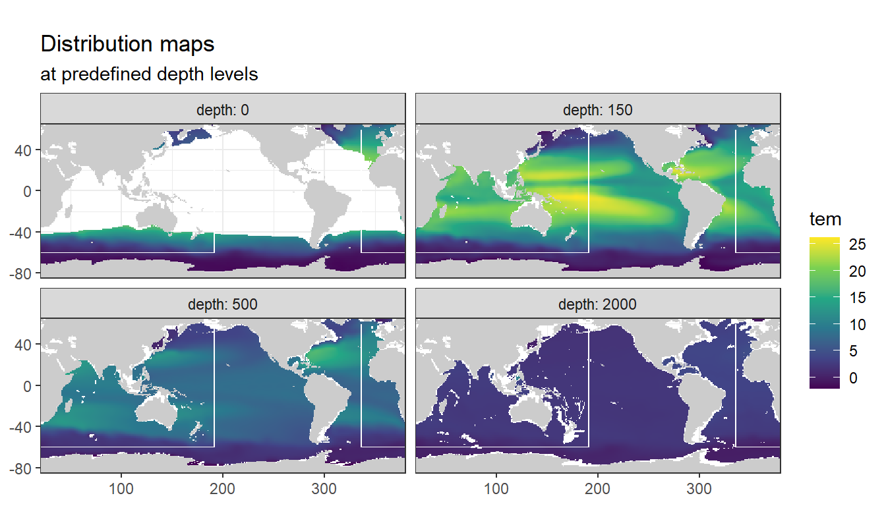
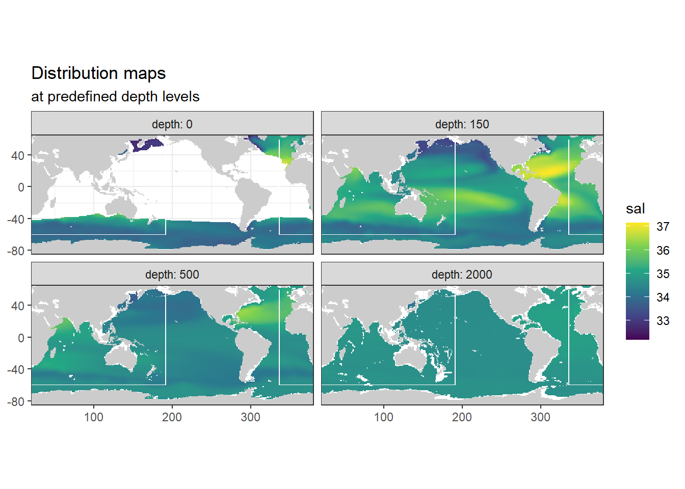

World Ocean Atlas 2018
Jens Daniel Müller
11 August, 2020
Last updated: 2020-08-11
Checks: 7 0
Knit directory: Cant_eMLR/analysis/
This reproducible R Markdown analysis was created with workflowr (version 1.6.2). The Checks tab describes the reproducibility checks that were applied when the results were created. The Past versions tab lists the development history.
Great! Since the R Markdown file has been committed to the Git repository, you know the exact version of the code that produced these results.
Great job! The global environment was empty. Objects defined in the global environment can affect the analysis in your R Markdown file in unknown ways. For reproduciblity it’s best to always run the code in an empty environment.
The command set.seed(20200707) was run prior to running the code in the R Markdown file. Setting a seed ensures that any results that rely on randomness, e.g. subsampling or permutations, are reproducible.
Great job! Recording the operating system, R version, and package versions is critical for reproducibility.
Nice! There were no cached chunks for this analysis, so you can be confident that you successfully produced the results during this run.
Great job! Using relative paths to the files within your workflowr project makes it easier to run your code on other machines.
Great! You are using Git for version control. Tracking code development and connecting the code version to the results is critical for reproducibility.
The results in this page were generated with repository version 928cd7d. See the Past versions tab to see a history of the changes made to the R Markdown and HTML files.
Note that you need to be careful to ensure that all relevant files for the analysis have been committed to Git prior to generating the results (you can use wflow_publish or wflow_git_commit). workflowr only checks the R Markdown file, but you know if there are other scripts or data files that it depends on. Below is the status of the Git repository when the results were generated:
Ignored files:
Ignored: .Rproj.user/
Ignored: analysis/figure/
Ignored: data/GLODAPv1_1/
Ignored: data/GLODAPv2_2016b_MappedClimatologies/
Ignored: data/GLODAPv2_2020/
Ignored: data/Gruber_2019/
Ignored: data/WOCE/
Ignored: data/World_Ocean_Atlas_2018/
Ignored: data/dclement/
Ignored: data/eMLR/
Ignored: data/pCO2_atmosphere/
Ignored: data/parameters/
Ignored: dump/
Untracked files:
Untracked: analysis/child/
Untracked: analysis/plotting_scripts/
Untracked: analysis/python_scripts/
Untracked: analysis/test_scripts/
Note that any generated files, e.g. HTML, png, CSS, etc., are not included in this status report because it is ok for generated content to have uncommitted changes.
These are the previous versions of the repository in which changes were made to the R Markdown (analysis/read_World_Ocean_Atlas_2018.Rmd) and HTML (docs/read_World_Ocean_Atlas_2018.html) files. If you’ve configured a remote Git repository (see ?wflow_git_remote), click on the hyperlinks in the table below to view the files as they were in that past version.
| File | Version | Author | Date | Message |
|---|---|---|---|---|
| Rmd | 928cd7d | jens-daniel-mueller | 2020-08-11 | Rmd child test with access to global object |
| html | be47191 | jens-daniel-mueller | 2020-08-11 | Build site. |
| Rmd | 9c8f6b8 | jens-daniel-mueller | 2020-08-11 | Rmd child test with variable name transmission |
| html | 6ebb3de | jens-daniel-mueller | 2020-08-11 | Build site. |
| Rmd | 0333c99 | jens-daniel-mueller | 2020-08-11 | test addition child Rmd file |
| html | fbbabf4 | jens-daniel-mueller | 2020-08-11 | Build site. |
| Rmd | e92638d | jens-daniel-mueller | 2020-08-11 | plot maps from function |
| html | cee0e89 | jens-daniel-mueller | 2020-08-11 | Build site. |
| Rmd | c9e2d65 | jens-daniel-mueller | 2020-08-11 | plot maps from function |
| html | de933d9 | jens-daniel-mueller | 2020-08-11 | Build site. |
| Rmd | c3a6c63 | jens-daniel-mueller | 2020-08-11 | included WOA land mask and longitude conversion |
| html | 5d33341 | jens-daniel-mueller | 2020-08-11 | Build site. |
| html | 8a010ca | jens-daniel-mueller | 2020-08-11 | Build site. |
| html | a01041a | jens-daniel-mueller | 2020-08-11 | Build site. |
| html | e18e59a | jens-daniel-mueller | 2020-08-10 | Build site. |
| html | 7d7900a | jens-daniel-mueller | 2020-08-07 | Build site. |
| html | 4394942 | jens-daniel-mueller | 2020-08-04 | Build site. |
| Rmd | eb838d4 | jens-daniel-mueller | 2020-08-04 | Read, plot, write data from D Clement |
| html | 662560f | jens-daniel-mueller | 2020-08-04 | Build site. |
| Rmd | b2b1f24 | jens-daniel-mueller | 2020-08-04 | Read, plot, write data from D Clement |
| html | e9a52c5 | jens-daniel-mueller | 2020-07-31 | Build site. |
| Rmd | 5ee70b2 | jens-daniel-mueller | 2020-07-31 | formatting |
| html | f33772b | jens-daniel-mueller | 2020-07-31 | Build site. |
| Rmd | dea0eaf | jens-daniel-mueller | 2020-07-31 | alligned plots with GLODAP climatology |
| html | 9dc5d7f | jens-daniel-mueller | 2020-07-29 | Build site. |
| html | 21524b4 | jens-daniel-mueller | 2020-07-29 | Build site. |
| html | f5c4667 | jens-daniel-mueller | 2020-07-29 | Build site. |
| Rmd | f6d4d92 | jens-daniel-mueller | 2020-07-29 | format and plots revised |
| html | 8d71a56 | jens-daniel-mueller | 2020-07-29 | Build site. |
| Rmd | 82db969 | jens-daniel-mueller | 2020-07-29 | format and plots revised |
| html | 2e08795 | jens-daniel-mueller | 2020-07-24 | Build site. |
| html | 61a1a48 | jens-daniel-mueller | 2020-07-24 | Build site. |
| Rmd | 864a6e3 | jens-daniel-mueller | 2020-07-24 | merged predictor data sets |
| html | eb716ce | jens-daniel-mueller | 2020-07-23 | Build site. |
| Rmd | ffd46da | jens-daniel-mueller | 2020-07-23 | WOA18 read in |
| html | 556e6cc | jens-daniel-mueller | 2020-07-23 | Build site. |
| html | c1289a2 | jens-daniel-mueller | 2020-07-23 | Build site. |
| html | 2890e73 | jens-daniel-mueller | 2020-07-23 | Build site. |
| html | fdfa7b9 | jens-daniel-mueller | 2020-07-22 | Build site. |
| html | bb9c002 | jens-daniel-mueller | 2020-07-21 | Build site. |
| Rmd | d2ed0f8 | jens-daniel-mueller | 2020-07-21 | harmonied lat lon labeling |
| html | 97dbf5b | jens-daniel-mueller | 2020-07-21 | Build site. |
| Rmd | 5def7e8 | jens-daniel-mueller | 2020-07-21 | create csvs for each parameter |
| html | b47adc2 | jens-daniel-mueller | 2020-07-20 | Build site. |
| Rmd | 366d7d5 | jens-daniel-mueller | 2020-07-20 | update plots |
| html | 1de1bc0 | jens-daniel-mueller | 2020-07-20 | Build site. |
| Rmd | 68e4615 | jens-daniel-mueller | 2020-07-20 | assigned ocean basins and plotted world map |
| html | 3149ffd | jens-daniel-mueller | 2020-07-20 | Build site. |
| Rmd | 918f8c8 | jens-daniel-mueller | 2020-07-20 | assigned ocean basins and plotted world map |
| html | 2fa2896 | jens-daniel-mueller | 2020-07-20 | Build site. |
| Rmd | 23220a8 | jens-daniel-mueller | 2020-07-20 | assigned ocean basins and plotted world map |
| html | 27d380d | jens-daniel-mueller | 2020-07-20 | Build site. |
| Rmd | 09f3f73 | jens-daniel-mueller | 2020-07-20 | basin masks read in |
| html | 22b588c | jens-daniel-mueller | 2020-07-18 | Build site. |
| Rmd | 87a4680 | jens-daniel-mueller | 2020-07-18 | added WOA blank script |
library(tidyverse)
library(lubridate)
library(tidync)
library(stars)1 Data source
- Data source: World Ocean Atlas 2018
2 Masks
2.1 Basins
2.1.1 Read mask
The surface mask (0m) with 1x1° resolution from the file basinmask_01.msk was used.
basinmask_01 <- read_csv(here::here("data/World_Ocean_Atlas_2018",
"basinmask_01.msk"),
skip = 1,
col_types = list(.default = "d"))
basinmask_01 <- basinmask_01 %>%
select(Latitude:Basin_0m) %>%
mutate(Basin_0m = as.factor(Basin_0m)) %>%
rename(lat = Latitude, lon = Longitude)2.2 lat
print(basinmask_01$"lat") [1] -77.5 -77.5 -77.5 -77.5 -77.5 -77.5 -77.5 -77.5 -77.5 -77.5 -77.5 -77.5
[13] -77.5 -77.5 -77.5 -77.5 -77.5 -77.5 -77.5 -77.5 -77.5 -77.5 -77.5 -77.5
[25] -77.5 -77.5 -77.5 -77.5 -77.5 -77.5 -77.5 -76.5 -76.5 -76.5 -76.5 -76.5
[37] -76.5 -76.5 -76.5 -76.5 -76.5 -76.5 -76.5 -76.5 -76.5 -76.5 -76.5 -76.5
[49] -76.5 -76.5 -76.5 -76.5 -76.5 -76.5 -76.5 -76.5 -76.5 -76.5 -76.5 -76.5
[61] -76.5 -76.5 -76.5 -76.5 -76.5 -76.5 -76.5 -76.5 -76.5 -76.5 -76.5 -76.5
[73] -76.5 -76.5 -76.5 -76.5 -76.5 -76.5 -76.5 -76.5 -76.5 -76.5 -76.5 -76.5
[85] -76.5 -76.5 -76.5 -76.5 -76.5 -76.5 -76.5 -76.5 -76.5 -76.5 -76.5 -75.5
[97] -75.5 -75.5 -75.5 -75.5 -75.5 -75.5 -75.5 -75.5 -75.5 -75.5 -75.5 -75.5
[109] -75.5 -75.5 -75.5 -75.5 -75.5 -75.5 -75.5 -75.5 -75.5 -75.5 -75.5 -75.5
[121] -75.5 -75.5 -75.5 -75.5 -75.5 -75.5 -75.5 -75.5 -75.5 -75.5 -75.5 -75.5
[133] -75.5 -75.5 -75.5 -75.5 -75.5 -75.5 -75.5 -75.5 -75.5 -75.5 -75.5 -75.5
[145] -75.5 -75.5 -75.5 -75.5 -75.5 -75.5 -75.5 -75.5 -75.5 -75.5 -75.5 -75.5
[157] -75.5 -75.5 -75.5 -75.5 -75.5 -75.5 -75.5 -75.5 -75.5 -75.5 -75.5 -75.5
[169] -75.5 -75.5 -75.5 -75.5 -74.5 -74.5 -74.5 -74.5 -74.5 -74.5 -74.5 -74.5
[181] -74.5 -74.5 -74.5 -74.5 -74.5 -74.5 -74.5 -74.5 -74.5 -74.5 -74.5 -74.5
[193] -74.5 -74.5 -74.5 -74.5 -74.5 -74.5 -74.5 -74.5 -74.5 -74.5 -74.5 -74.5
[205] -74.5 -74.5 -74.5 -74.5 -74.5 -74.5 -74.5 -74.5 -74.5 -74.5 -74.5 -74.5
[217] -74.5 -74.5 -74.5 -74.5 -74.5 -74.5 -74.5 -74.5 -74.5 -74.5 -74.5 -74.5
[229] -74.5 -74.5 -74.5 -74.5 -74.5 -74.5 -74.5 -74.5 -74.5 -74.5 -74.5 -74.5
[241] -74.5 -74.5 -74.5 -74.5 -74.5 -74.5 -74.5 -74.5 -74.5 -74.5 -74.5 -74.5
[253] -74.5 -74.5 -74.5 -74.5 -74.5 -74.5 -74.5 -74.5 -74.5 -74.5 -74.5 -74.5
[265] -74.5 -73.5 -73.5 -73.5 -73.5 -73.5 -73.5 -73.5 -73.5 -73.5 -73.5 -73.5
[277] -73.5 -73.5 -73.5 -73.5 -73.5 -73.5 -73.5 -73.5 -73.5 -73.5 -73.5 -73.5
[289] -73.5 -73.5 -73.5 -73.5 -73.5 -73.5 -73.5 -73.5 -73.5 -73.5 -73.5 -73.5
[301] -73.5 -73.5 -73.5 -73.5 -73.5 -73.5 -73.5 -73.5 -73.5 -73.5 -73.5 -73.5
[313] -73.5 -73.5 -73.5 -73.5 -73.5 -73.5 -73.5 -73.5 -73.5 -73.5 -73.5 -73.5
[325] -73.5 -73.5 -73.5 -73.5 -73.5 -73.5 -73.5 -73.5 -73.5 -73.5 -73.5 -73.5
[337] -73.5 -73.5 -73.5 -73.5 -73.5 -73.5 -73.5 -73.5 -73.5 -73.5 -73.5 -73.5
[349] -73.5 -73.5 -73.5 -73.5 -73.5 -73.5 -73.5 -73.5 -73.5 -73.5 -73.5 -73.5
[361] -73.5 -73.5 -73.5 -73.5 -73.5 -73.5 -73.5 -73.5 -73.5 -73.5 -73.5 -73.5
[373] -73.5 -73.5 -73.5 -73.5 -73.5 -73.5 -73.5 -73.5 -73.5 -73.5 -72.5 -72.5
[385] -72.5 -72.5 -72.5 -72.5 -72.5 -72.5 -72.5 -72.5 -72.5 -72.5 -72.5 -72.5
[397] -72.5 -72.5 -72.5 -72.5 -72.5 -72.5 -72.5 -72.5 -72.5 -72.5 -72.5 -72.5
[409] -72.5 -72.5 -72.5 -72.5 -72.5 -72.5 -72.5 -72.5 -72.5 -72.5 -72.5 -72.5
[421] -72.5 -72.5 -72.5 -72.5 -72.5 -72.5 -72.5 -72.5 -72.5 -72.5 -72.5 -72.5
[433] -72.5 -72.5 -72.5 -72.5 -72.5 -72.5 -72.5 -72.5 -72.5 -72.5 -72.5 -72.5
[445] -72.5 -72.5 -72.5 -72.5 -72.5 -72.5 -72.5 -72.5 -72.5 -72.5 -72.5 -72.5
[457] -72.5 -72.5 -72.5 -72.5 -72.5 -72.5 -72.5 -72.5 -72.5 -72.5 -72.5 -72.5
[469] -72.5 -72.5 -72.5 -72.5 -72.5 -72.5 -72.5 -72.5 -72.5 -72.5 -72.5 -72.5
[481] -72.5 -72.5 -72.5 -72.5 -72.5 -72.5 -72.5 -72.5 -72.5 -72.5 -72.5 -72.5
[493] -72.5 -72.5 -72.5 -72.5 -72.5 -72.5 -72.5 -72.5 -72.5 -72.5 -72.5 -72.5
[505] -72.5 -72.5 -72.5 -72.5 -72.5 -72.5 -72.5 -72.5 -72.5 -72.5 -71.5 -71.5
[517] -71.5 -71.5 -71.5 -71.5 -71.5 -71.5 -71.5 -71.5 -71.5 -71.5 -71.5 -71.5
[529] -71.5 -71.5 -71.5 -71.5 -71.5 -71.5 -71.5 -71.5 -71.5 -71.5 -71.5 -71.5
[541] -71.5 -71.5 -71.5 -71.5 -71.5 -71.5 -71.5 -71.5 -71.5 -71.5 -71.5 -71.5
[553] -71.5 -71.5 -71.5 -71.5 -71.5 -71.5 -71.5 -71.5 -71.5 -71.5 -71.5 -71.5
[565] -71.5 -71.5 -71.5 -71.5 -71.5 -71.5 -71.5 -71.5 -71.5 -71.5 -71.5 -71.5
[577] -71.5 -71.5 -71.5 -71.5 -71.5 -71.5 -71.5 -71.5 -71.5 -71.5 -71.5 -71.5
[589] -71.5 -71.5 -71.5 -71.5 -71.5 -71.5 -71.5 -71.5 -71.5 -71.5 -71.5 -71.5
[601] -71.5 -71.5 -71.5 -71.5 -71.5 -71.5 -71.5 -71.5 -71.5 -71.5 -71.5 -71.5
[613] -71.5 -71.5 -71.5 -71.5 -71.5 -71.5 -71.5 -71.5 -71.5 -71.5 -71.5 -71.5
[625] -71.5 -71.5 -71.5 -71.5 -71.5 -71.5 -71.5 -71.5 -71.5 -71.5 -71.5 -71.5
[637] -71.5 -71.5 -71.5 -71.5 -71.5 -71.5 -71.5 -71.5 -71.5 -71.5 -71.5 -71.5
[649] -71.5 -71.5 -71.5 -71.5 -71.5 -71.5 -71.5 -71.5 -71.5 -71.5 -71.5 -71.5
[661] -71.5 -71.5 -71.5 -71.5 -71.5 -71.5 -71.5 -71.5 -71.5 -71.5 -71.5 -70.5
[673] -70.5 -70.5 -70.5 -70.5 -70.5 -70.5 -70.5 -70.5 -70.5 -70.5 -70.5 -70.5
[685] -70.5 -70.5 -70.5 -70.5 -70.5 -70.5 -70.5 -70.5 -70.5 -70.5 -70.5 -70.5
[697] -70.5 -70.5 -70.5 -70.5 -70.5 -70.5 -70.5 -70.5 -70.5 -70.5 -70.5 -70.5
[709] -70.5 -70.5 -70.5 -70.5 -70.5 -70.5 -70.5 -70.5 -70.5 -70.5 -70.5 -70.5
[721] -70.5 -70.5 -70.5 -70.5 -70.5 -70.5 -70.5 -70.5 -70.5 -70.5 -70.5 -70.5
[733] -70.5 -70.5 -70.5 -70.5 -70.5 -70.5 -70.5 -70.5 -70.5 -70.5 -70.5 -70.5
[745] -70.5 -70.5 -70.5 -70.5 -70.5 -70.5 -70.5 -70.5 -70.5 -70.5 -70.5 -70.5
[757] -70.5 -70.5 -70.5 -70.5 -70.5 -70.5 -70.5 -70.5 -70.5 -70.5 -70.5 -70.5
[769] -70.5 -70.5 -70.5 -70.5 -70.5 -70.5 -70.5 -70.5 -70.5 -70.5 -70.5 -70.5
[781] -70.5 -70.5 -70.5 -70.5 -70.5 -70.5 -70.5 -70.5 -70.5 -70.5 -70.5 -70.5
[793] -70.5 -70.5 -70.5 -70.5 -70.5 -70.5 -70.5 -70.5 -70.5 -70.5 -70.5 -70.5
[805] -70.5 -70.5 -70.5 -70.5 -70.5 -70.5 -70.5 -70.5 -70.5 -70.5 -70.5 -70.5
[817] -70.5 -70.5 -70.5 -70.5 -70.5 -70.5 -70.5 -70.5 -70.5 -70.5 -70.5 -70.5
[829] -70.5 -70.5 -70.5 -70.5 -70.5 -70.5 -70.5 -70.5 -70.5 -70.5 -70.5 -70.5
[841] -70.5 -70.5 -70.5 -70.5 -70.5 -70.5 -70.5 -70.5 -70.5 -70.5 -69.5 -69.5
[853] -69.5 -69.5 -69.5 -69.5 -69.5 -69.5 -69.5 -69.5 -69.5 -69.5 -69.5 -69.5
[865] -69.5 -69.5 -69.5 -69.5 -69.5 -69.5 -69.5 -69.5 -69.5 -69.5 -69.5 -69.5
[877] -69.5 -69.5 -69.5 -69.5 -69.5 -69.5 -69.5 -69.5 -69.5 -69.5 -69.5 -69.5
[889] -69.5 -69.5 -69.5 -69.5 -69.5 -69.5 -69.5 -69.5 -69.5 -69.5 -69.5 -69.5
[901] -69.5 -69.5 -69.5 -69.5 -69.5 -69.5 -69.5 -69.5 -69.5 -69.5 -69.5 -69.5
[913] -69.5 -69.5 -69.5 -69.5 -69.5 -69.5 -69.5 -69.5 -69.5 -69.5 -69.5 -69.5
[925] -69.5 -69.5 -69.5 -69.5 -69.5 -69.5 -69.5 -69.5 -69.5 -69.5 -69.5 -69.5
[937] -69.5 -69.5 -69.5 -69.5 -69.5 -69.5 -69.5 -69.5 -69.5 -69.5 -69.5 -69.5
[949] -69.5 -69.5 -69.5 -69.5 -69.5 -69.5 -69.5 -69.5 -69.5 -69.5 -69.5 -69.5
[961] -69.5 -69.5 -69.5 -69.5 -69.5 -69.5 -69.5 -69.5 -69.5 -69.5 -69.5 -69.5
[973] -69.5 -69.5 -69.5 -69.5 -69.5 -69.5 -69.5 -69.5 -69.5 -69.5 -69.5 -69.5
[985] -69.5 -69.5 -69.5 -69.5 -69.5 -69.5 -69.5 -69.5 -69.5 -69.5 -69.5 -69.5
[997] -69.5 -69.5 -69.5 -69.5 -69.5 -69.5 -69.5 -69.5 -69.5 -69.5 -69.5 -69.5
[1009] -69.5 -69.5 -69.5 -69.5 -69.5 -69.5 -69.5 -69.5 -69.5 -69.5 -69.5 -69.5
[1021] -69.5 -69.5 -69.5 -69.5 -69.5 -69.5 -69.5 -69.5 -69.5 -69.5 -69.5 -69.5
[1033] -69.5 -69.5 -69.5 -69.5 -69.5 -69.5 -69.5 -69.5 -69.5 -69.5 -69.5 -69.5
[1045] -69.5 -69.5 -69.5 -69.5 -69.5 -69.5 -69.5 -69.5 -69.5 -69.5 -69.5 -69.5
[1057] -69.5 -69.5 -69.5 -69.5 -69.5 -69.5 -69.5 -69.5 -69.5 -69.5 -69.5 -69.5
[1069] -69.5 -69.5 -69.5 -69.5 -69.5 -68.5 -68.5 -68.5 -68.5 -68.5 -68.5 -68.5
[1081] -68.5 -68.5 -68.5 -68.5 -68.5 -68.5 -68.5 -68.5 -68.5 -68.5 -68.5 -68.5
[1093] -68.5 -68.5 -68.5 -68.5 -68.5 -68.5 -68.5 -68.5 -68.5 -68.5 -68.5 -68.5
[1105] -68.5 -68.5 -68.5 -68.5 -68.5 -68.5 -68.5 -68.5 -68.5 -68.5 -68.5 -68.5
[1117] -68.5 -68.5 -68.5 -68.5 -68.5 -68.5 -68.5 -68.5 -68.5 -68.5 -68.5 -68.5
[1129] -68.5 -68.5 -68.5 -68.5 -68.5 -68.5 -68.5 -68.5 -68.5 -68.5 -68.5 -68.5
[1141] -68.5 -68.5 -68.5 -68.5 -68.5 -68.5 -68.5 -68.5 -68.5 -68.5 -68.5 -68.5
[1153] -68.5 -68.5 -68.5 -68.5 -68.5 -68.5 -68.5 -68.5 -68.5 -68.5 -68.5 -68.5
[1165] -68.5 -68.5 -68.5 -68.5 -68.5 -68.5 -68.5 -68.5 -68.5 -68.5 -68.5 -68.5
[1177] -68.5 -68.5 -68.5 -68.5 -68.5 -68.5 -68.5 -68.5 -68.5 -68.5 -68.5 -68.5
[1189] -68.5 -68.5 -68.5 -68.5 -68.5 -68.5 -68.5 -68.5 -68.5 -68.5 -68.5 -68.5
[1201] -68.5 -68.5 -68.5 -68.5 -68.5 -68.5 -68.5 -68.5 -68.5 -68.5 -68.5 -68.5
[1213] -68.5 -68.5 -68.5 -68.5 -68.5 -68.5 -68.5 -68.5 -68.5 -68.5 -68.5 -68.5
[1225] -68.5 -68.5 -68.5 -68.5 -68.5 -68.5 -68.5 -68.5 -68.5 -68.5 -68.5 -68.5
[1237] -68.5 -68.5 -68.5 -68.5 -68.5 -68.5 -68.5 -68.5 -68.5 -68.5 -68.5 -68.5
[1249] -68.5 -68.5 -68.5 -68.5 -68.5 -68.5 -68.5 -68.5 -68.5 -68.5 -68.5 -68.5
[1261] -68.5 -68.5 -68.5 -68.5 -68.5 -68.5 -68.5 -68.5 -68.5 -68.5 -68.5 -68.5
[1273] -68.5 -68.5 -68.5 -68.5 -68.5 -68.5 -68.5 -68.5 -68.5 -68.5 -68.5 -68.5
[1285] -68.5 -68.5 -68.5 -68.5 -68.5 -68.5 -68.5 -68.5 -68.5 -68.5 -68.5 -68.5
[1297] -68.5 -68.5 -68.5 -68.5 -68.5 -68.5 -68.5 -68.5 -68.5 -68.5 -68.5 -68.5
[1309] -68.5 -68.5 -68.5 -68.5 -68.5 -68.5 -68.5 -68.5 -67.5 -67.5 -67.5 -67.5
[1321] -67.5 -67.5 -67.5 -67.5 -67.5 -67.5 -67.5 -67.5 -67.5 -67.5 -67.5 -67.5
[1333] -67.5 -67.5 -67.5 -67.5 -67.5 -67.5 -67.5 -67.5 -67.5 -67.5 -67.5 -67.5
[1345] -67.5 -67.5 -67.5 -67.5 -67.5 -67.5 -67.5 -67.5 -67.5 -67.5 -67.5 -67.5
[1357] -67.5 -67.5 -67.5 -67.5 -67.5 -67.5 -67.5 -67.5 -67.5 -67.5 -67.5 -67.5
[1369] -67.5 -67.5 -67.5 -67.5 -67.5 -67.5 -67.5 -67.5 -67.5 -67.5 -67.5 -67.5
[1381] -67.5 -67.5 -67.5 -67.5 -67.5 -67.5 -67.5 -67.5 -67.5 -67.5 -67.5 -67.5
[1393] -67.5 -67.5 -67.5 -67.5 -67.5 -67.5 -67.5 -67.5 -67.5 -67.5 -67.5 -67.5
[1405] -67.5 -67.5 -67.5 -67.5 -67.5 -67.5 -67.5 -67.5 -67.5 -67.5 -67.5 -67.5
[1417] -67.5 -67.5 -67.5 -67.5 -67.5 -67.5 -67.5 -67.5 -67.5 -67.5 -67.5 -67.5
[1429] -67.5 -67.5 -67.5 -67.5 -67.5 -67.5 -67.5 -67.5 -67.5 -67.5 -67.5 -67.5
[1441] -67.5 -67.5 -67.5 -67.5 -67.5 -67.5 -67.5 -67.5 -67.5 -67.5 -67.5 -67.5
[1453] -67.5 -67.5 -67.5 -67.5 -67.5 -67.5 -67.5 -67.5 -67.5 -67.5 -67.5 -67.5
[1465] -67.5 -67.5 -67.5 -67.5 -67.5 -67.5 -67.5 -67.5 -67.5 -67.5 -67.5 -67.5
[1477] -67.5 -67.5 -67.5 -67.5 -67.5 -67.5 -67.5 -67.5 -67.5 -67.5 -67.5 -67.5
[1489] -67.5 -67.5 -67.5 -67.5 -67.5 -67.5 -67.5 -67.5 -67.5 -67.5 -67.5 -67.5
[1501] -67.5 -67.5 -67.5 -67.5 -67.5 -67.5 -67.5 -67.5 -67.5 -67.5 -67.5 -67.5
[1513] -67.5 -67.5 -67.5 -67.5 -67.5 -67.5 -67.5 -67.5 -67.5 -67.5 -67.5 -67.5
[1525] -67.5 -67.5 -67.5 -67.5 -67.5 -67.5 -67.5 -67.5 -67.5 -67.5 -67.5 -67.5
[1537] -67.5 -67.5 -67.5 -67.5 -67.5 -67.5 -67.5 -67.5 -67.5 -67.5 -67.5 -67.5
[1549] -67.5 -67.5 -67.5 -67.5 -67.5 -67.5 -67.5 -67.5 -67.5 -67.5 -67.5 -67.5
[1561] -67.5 -67.5 -67.5 -67.5 -67.5 -67.5 -67.5 -67.5 -67.5 -67.5 -67.5 -67.5
[1573] -67.5 -67.5 -67.5 -67.5 -66.5 -66.5 -66.5 -66.5 -66.5 -66.5 -66.5 -66.5
[1585] -66.5 -66.5 -66.5 -66.5 -66.5 -66.5 -66.5 -66.5 -66.5 -66.5 -66.5 -66.5
[1597] -66.5 -66.5 -66.5 -66.5 -66.5 -66.5 -66.5 -66.5 -66.5 -66.5 -66.5 -66.5
[1609] -66.5 -66.5 -66.5 -66.5 -66.5 -66.5 -66.5 -66.5 -66.5 -66.5 -66.5 -66.5
[1621] -66.5 -66.5 -66.5 -66.5 -66.5 -66.5 -66.5 -66.5 -66.5 -66.5 -66.5 -66.5
[1633] -66.5 -66.5 -66.5 -66.5 -66.5 -66.5 -66.5 -66.5 -66.5 -66.5 -66.5 -66.5
[1645] -66.5 -66.5 -66.5 -66.5 -66.5 -66.5 -66.5 -66.5 -66.5 -66.5 -66.5 -66.5
[1657] -66.5 -66.5 -66.5 -66.5 -66.5 -66.5 -66.5 -66.5 -66.5 -66.5 -66.5 -66.5
[1669] -66.5 -66.5 -66.5 -66.5 -66.5 -66.5 -66.5 -66.5 -66.5 -66.5 -66.5 -66.5
[1681] -66.5 -66.5 -66.5 -66.5 -66.5 -66.5 -66.5 -66.5 -66.5 -66.5 -66.5 -66.5
[1693] -66.5 -66.5 -66.5 -66.5 -66.5 -66.5 -66.5 -66.5 -66.5 -66.5 -66.5 -66.5
[1705] -66.5 -66.5 -66.5 -66.5 -66.5 -66.5 -66.5 -66.5 -66.5 -66.5 -66.5 -66.5
[1717] -66.5 -66.5 -66.5 -66.5 -66.5 -66.5 -66.5 -66.5 -66.5 -66.5 -66.5 -66.5
[1729] -66.5 -66.5 -66.5 -66.5 -66.5 -66.5 -66.5 -66.5 -66.5 -66.5 -66.5 -66.5
[1741] -66.5 -66.5 -66.5 -66.5 -66.5 -66.5 -66.5 -66.5 -66.5 -66.5 -66.5 -66.5
[1753] -66.5 -66.5 -66.5 -66.5 -66.5 -66.5 -66.5 -66.5 -66.5 -66.5 -66.5 -66.5
[1765] -66.5 -66.5 -66.5 -66.5 -66.5 -66.5 -66.5 -66.5 -66.5 -66.5 -66.5 -66.5
[1777] -66.5 -66.5 -66.5 -66.5 -66.5 -66.5 -66.5 -66.5 -66.5 -66.5 -66.5 -66.5
[1789] -66.5 -66.5 -66.5 -66.5 -66.5 -66.5 -66.5 -66.5 -66.5 -66.5 -66.5 -66.5
[1801] -66.5 -66.5 -66.5 -66.5 -66.5 -66.5 -66.5 -66.5 -66.5 -66.5 -66.5 -66.5
[1813] -66.5 -66.5 -66.5 -66.5 -66.5 -66.5 -66.5 -66.5 -66.5 -66.5 -66.5 -66.5
[1825] -66.5 -66.5 -66.5 -66.5 -66.5 -66.5 -66.5 -66.5 -66.5 -66.5 -66.5 -66.5
[1837] -66.5 -66.5 -66.5 -66.5 -66.5 -66.5 -66.5 -66.5 -66.5 -66.5 -66.5 -66.5
[1849] -66.5 -66.5 -66.5 -66.5 -66.5 -66.5 -66.5 -66.5 -66.5 -66.5 -66.5 -66.5
[1861] -66.5 -66.5 -66.5 -66.5 -66.5 -66.5 -66.5 -66.5 -66.5 -66.5 -66.5 -66.5
[1873] -66.5 -66.5 -65.5 -65.5 -65.5 -65.5 -65.5 -65.5 -65.5 -65.5 -65.5 -65.5
[1885] -65.5 -65.5 -65.5 -65.5 -65.5 -65.5 -65.5 -65.5 -65.5 -65.5 -65.5 -65.5
[1897] -65.5 -65.5 -65.5 -65.5 -65.5 -65.5 -65.5 -65.5 -65.5 -65.5 -65.5 -65.5
[1909] -65.5 -65.5 -65.5 -65.5 -65.5 -65.5 -65.5 -65.5 -65.5 -65.5 -65.5 -65.5
[1921] -65.5 -65.5 -65.5 -65.5 -65.5 -65.5 -65.5 -65.5 -65.5 -65.5 -65.5 -65.5
[1933] -65.5 -65.5 -65.5 -65.5 -65.5 -65.5 -65.5 -65.5 -65.5 -65.5 -65.5 -65.5
[1945] -65.5 -65.5 -65.5 -65.5 -65.5 -65.5 -65.5 -65.5 -65.5 -65.5 -65.5 -65.5
[1957] -65.5 -65.5 -65.5 -65.5 -65.5 -65.5 -65.5 -65.5 -65.5 -65.5 -65.5 -65.5
[1969] -65.5 -65.5 -65.5 -65.5 -65.5 -65.5 -65.5 -65.5 -65.5 -65.5 -65.5 -65.5
[1981] -65.5 -65.5 -65.5 -65.5 -65.5 -65.5 -65.5 -65.5 -65.5 -65.5 -65.5 -65.5
[1993] -65.5 -65.5 -65.5 -65.5 -65.5 -65.5 -65.5 -65.5 -65.5 -65.5 -65.5 -65.5
[2005] -65.5 -65.5 -65.5 -65.5 -65.5 -65.5 -65.5 -65.5 -65.5 -65.5 -65.5 -65.5
[2017] -65.5 -65.5 -65.5 -65.5 -65.5 -65.5 -65.5 -65.5 -65.5 -65.5 -65.5 -65.5
[2029] -65.5 -65.5 -65.5 -65.5 -65.5 -65.5 -65.5 -65.5 -65.5 -65.5 -65.5 -65.5
[2041] -65.5 -65.5 -65.5 -65.5 -65.5 -65.5 -65.5 -65.5 -65.5 -65.5 -65.5 -65.5
[2053] -65.5 -65.5 -65.5 -65.5 -65.5 -65.5 -65.5 -65.5 -65.5 -65.5 -65.5 -65.5
[2065] -65.5 -65.5 -65.5 -65.5 -65.5 -65.5 -65.5 -65.5 -65.5 -65.5 -65.5 -65.5
[2077] -65.5 -65.5 -65.5 -65.5 -65.5 -65.5 -65.5 -65.5 -65.5 -65.5 -65.5 -65.5
[2089] -65.5 -65.5 -65.5 -65.5 -65.5 -65.5 -65.5 -65.5 -65.5 -65.5 -65.5 -65.5
[2101] -65.5 -65.5 -65.5 -65.5 -65.5 -65.5 -65.5 -65.5 -65.5 -65.5 -65.5 -65.5
[2113] -65.5 -65.5 -65.5 -65.5 -65.5 -65.5 -65.5 -65.5 -65.5 -65.5 -65.5 -65.5
[2125] -65.5 -65.5 -65.5 -65.5 -65.5 -65.5 -65.5 -65.5 -65.5 -65.5 -65.5 -65.5
[2137] -65.5 -65.5 -65.5 -65.5 -65.5 -65.5 -65.5 -65.5 -65.5 -65.5 -65.5 -65.5
[2149] -65.5 -65.5 -65.5 -65.5 -65.5 -65.5 -65.5 -65.5 -65.5 -65.5 -65.5 -65.5
[2161] -65.5 -65.5 -65.5 -65.5 -65.5 -65.5 -65.5 -65.5 -65.5 -65.5 -65.5 -65.5
[2173] -65.5 -65.5 -65.5 -65.5 -65.5 -65.5 -65.5 -65.5 -65.5 -65.5 -65.5 -65.5
[2185] -65.5 -65.5 -65.5 -65.5 -65.5 -65.5 -65.5 -65.5 -65.5 -65.5 -65.5 -65.5
[2197] -65.5 -65.5 -65.5 -65.5 -65.5 -65.5 -65.5 -65.5 -65.5 -65.5 -65.5 -65.5
[2209] -65.5 -65.5 -65.5 -65.5 -65.5 -65.5 -65.5 -65.5 -65.5 -65.5 -65.5 -65.5
[2221] -65.5 -65.5 -64.5 -64.5 -64.5 -64.5 -64.5 -64.5 -64.5 -64.5 -64.5 -64.5
[2233] -64.5 -64.5 -64.5 -64.5 -64.5 -64.5 -64.5 -64.5 -64.5 -64.5 -64.5 -64.5
[2245] -64.5 -64.5 -64.5 -64.5 -64.5 -64.5 -64.5 -64.5 -64.5 -64.5 -64.5 -64.5
[2257] -64.5 -64.5 -64.5 -64.5 -64.5 -64.5 -64.5 -64.5 -64.5 -64.5 -64.5 -64.5
[2269] -64.5 -64.5 -64.5 -64.5 -64.5 -64.5 -64.5 -64.5 -64.5 -64.5 -64.5 -64.5
[2281] -64.5 -64.5 -64.5 -64.5 -64.5 -64.5 -64.5 -64.5 -64.5 -64.5 -64.5 -64.5
[2293] -64.5 -64.5 -64.5 -64.5 -64.5 -64.5 -64.5 -64.5 -64.5 -64.5 -64.5 -64.5
[2305] -64.5 -64.5 -64.5 -64.5 -64.5 -64.5 -64.5 -64.5 -64.5 -64.5 -64.5 -64.5
[2317] -64.5 -64.5 -64.5 -64.5 -64.5 -64.5 -64.5 -64.5 -64.5 -64.5 -64.5 -64.5
[2329] -64.5 -64.5 -64.5 -64.5 -64.5 -64.5 -64.5 -64.5 -64.5 -64.5 -64.5 -64.5
[2341] -64.5 -64.5 -64.5 -64.5 -64.5 -64.5 -64.5 -64.5 -64.5 -64.5 -64.5 -64.5
[2353] -64.5 -64.5 -64.5 -64.5 -64.5 -64.5 -64.5 -64.5 -64.5 -64.5 -64.5 -64.5
[2365] -64.5 -64.5 -64.5 -64.5 -64.5 -64.5 -64.5 -64.5 -64.5 -64.5 -64.5 -64.5
[2377] -64.5 -64.5 -64.5 -64.5 -64.5 -64.5 -64.5 -64.5 -64.5 -64.5 -64.5 -64.5
[2389] -64.5 -64.5 -64.5 -64.5 -64.5 -64.5 -64.5 -64.5 -64.5 -64.5 -64.5 -64.5
[2401] -64.5 -64.5 -64.5 -64.5 -64.5 -64.5 -64.5 -64.5 -64.5 -64.5 -64.5 -64.5
[2413] -64.5 -64.5 -64.5 -64.5 -64.5 -64.5 -64.5 -64.5 -64.5 -64.5 -64.5 -64.5
[2425] -64.5 -64.5 -64.5 -64.5 -64.5 -64.5 -64.5 -64.5 -64.5 -64.5 -64.5 -64.5
[2437] -64.5 -64.5 -64.5 -64.5 -64.5 -64.5 -64.5 -64.5 -64.5 -64.5 -64.5 -64.5
[2449] -64.5 -64.5 -64.5 -64.5 -64.5 -64.5 -64.5 -64.5 -64.5 -64.5 -64.5 -64.5
[2461] -64.5 -64.5 -64.5 -64.5 -64.5 -64.5 -64.5 -64.5 -64.5 -64.5 -64.5 -64.5
[2473] -64.5 -64.5 -64.5 -64.5 -64.5 -64.5 -64.5 -64.5 -64.5 -64.5 -64.5 -64.5
[2485] -64.5 -64.5 -64.5 -64.5 -64.5 -64.5 -64.5 -64.5 -64.5 -64.5 -64.5 -64.5
[2497] -64.5 -64.5 -64.5 -64.5 -64.5 -64.5 -64.5 -64.5 -64.5 -64.5 -64.5 -64.5
[2509] -64.5 -64.5 -64.5 -64.5 -64.5 -64.5 -64.5 -64.5 -64.5 -64.5 -64.5 -64.5
[2521] -64.5 -64.5 -64.5 -64.5 -64.5 -64.5 -64.5 -64.5 -64.5 -64.5 -64.5 -64.5
[2533] -64.5 -64.5 -64.5 -64.5 -64.5 -64.5 -64.5 -64.5 -64.5 -64.5 -64.5 -64.5
[2545] -64.5 -64.5 -64.5 -64.5 -64.5 -64.5 -64.5 -64.5 -64.5 -64.5 -64.5 -64.5
[2557] -64.5 -64.5 -64.5 -64.5 -64.5 -64.5 -64.5 -64.5 -64.5 -64.5 -64.5 -64.5
[2569] -64.5 -64.5 -64.5 -64.5 -64.5 -64.5 -64.5 -63.5 -63.5 -63.5 -63.5 -63.5
[2581] -63.5 -63.5 -63.5 -63.5 -63.5 -63.5 -63.5 -63.5 -63.5 -63.5 -63.5 -63.5
[2593] -63.5 -63.5 -63.5 -63.5 -63.5 -63.5 -63.5 -63.5 -63.5 -63.5 -63.5 -63.5
[2605] -63.5 -63.5 -63.5 -63.5 -63.5 -63.5 -63.5 -63.5 -63.5 -63.5 -63.5 -63.5
[2617] -63.5 -63.5 -63.5 -63.5 -63.5 -63.5 -63.5 -63.5 -63.5 -63.5 -63.5 -63.5
[2629] -63.5 -63.5 -63.5 -63.5 -63.5 -63.5 -63.5 -63.5 -63.5 -63.5 -63.5 -63.5
[2641] -63.5 -63.5 -63.5 -63.5 -63.5 -63.5 -63.5 -63.5 -63.5 -63.5 -63.5 -63.5
[2653] -63.5 -63.5 -63.5 -63.5 -63.5 -63.5 -63.5 -63.5 -63.5 -63.5 -63.5 -63.5
[2665] -63.5 -63.5 -63.5 -63.5 -63.5 -63.5 -63.5 -63.5 -63.5 -63.5 -63.5 -63.5
[2677] -63.5 -63.5 -63.5 -63.5 -63.5 -63.5 -63.5 -63.5 -63.5 -63.5 -63.5 -63.5
[2689] -63.5 -63.5 -63.5 -63.5 -63.5 -63.5 -63.5 -63.5 -63.5 -63.5 -63.5 -63.5
[2701] -63.5 -63.5 -63.5 -63.5 -63.5 -63.5 -63.5 -63.5 -63.5 -63.5 -63.5 -63.5
[2713] -63.5 -63.5 -63.5 -63.5 -63.5 -63.5 -63.5 -63.5 -63.5 -63.5 -63.5 -63.5
[2725] -63.5 -63.5 -63.5 -63.5 -63.5 -63.5 -63.5 -63.5 -63.5 -63.5 -63.5 -63.5
[2737] -63.5 -63.5 -63.5 -63.5 -63.5 -63.5 -63.5 -63.5 -63.5 -63.5 -63.5 -63.5
[2749] -63.5 -63.5 -63.5 -63.5 -63.5 -63.5 -63.5 -63.5 -63.5 -63.5 -63.5 -63.5
[2761] -63.5 -63.5 -63.5 -63.5 -63.5 -63.5 -63.5 -63.5 -63.5 -63.5 -63.5 -63.5
[2773] -63.5 -63.5 -63.5 -63.5 -63.5 -63.5 -63.5 -63.5 -63.5 -63.5 -63.5 -63.5
[2785] -63.5 -63.5 -63.5 -63.5 -63.5 -63.5 -63.5 -63.5 -63.5 -63.5 -63.5 -63.5
[2797] -63.5 -63.5 -63.5 -63.5 -63.5 -63.5 -63.5 -63.5 -63.5 -63.5 -63.5 -63.5
[2809] -63.5 -63.5 -63.5 -63.5 -63.5 -63.5 -63.5 -63.5 -63.5 -63.5 -63.5 -63.5
[2821] -63.5 -63.5 -63.5 -63.5 -63.5 -63.5 -63.5 -63.5 -63.5 -63.5 -63.5 -63.5
[2833] -63.5 -63.5 -63.5 -63.5 -63.5 -63.5 -63.5 -63.5 -63.5 -63.5 -63.5 -63.5
[2845] -63.5 -63.5 -63.5 -63.5 -63.5 -63.5 -63.5 -63.5 -63.5 -63.5 -63.5 -63.5
[2857] -63.5 -63.5 -63.5 -63.5 -63.5 -63.5 -63.5 -63.5 -63.5 -63.5 -63.5 -63.5
[2869] -63.5 -63.5 -63.5 -63.5 -63.5 -63.5 -63.5 -63.5 -63.5 -63.5 -63.5 -63.5
[2881] -63.5 -63.5 -63.5 -63.5 -63.5 -63.5 -63.5 -63.5 -63.5 -63.5 -63.5 -63.5
[2893] -63.5 -63.5 -63.5 -63.5 -63.5 -63.5 -63.5 -63.5 -63.5 -63.5 -63.5 -63.5
[2905] -63.5 -63.5 -63.5 -63.5 -63.5 -63.5 -63.5 -63.5 -63.5 -63.5 -63.5 -63.5
[2917] -63.5 -63.5 -63.5 -63.5 -63.5 -63.5 -63.5 -63.5 -63.5 -63.5 -63.5 -63.5
[2929] -63.5 -63.5 -62.5 -62.5 -62.5 -62.5 -62.5 -62.5 -62.5 -62.5 -62.5 -62.5
[2941] -62.5 -62.5 -62.5 -62.5 -62.5 -62.5 -62.5 -62.5 -62.5 -62.5 -62.5 -62.5
[2953] -62.5 -62.5 -62.5 -62.5 -62.5 -62.5 -62.5 -62.5 -62.5 -62.5 -62.5 -62.5
[2965] -62.5 -62.5 -62.5 -62.5 -62.5 -62.5 -62.5 -62.5 -62.5 -62.5 -62.5 -62.5
[2977] -62.5 -62.5 -62.5 -62.5 -62.5 -62.5 -62.5 -62.5 -62.5 -62.5 -62.5 -62.5
[2989] -62.5 -62.5 -62.5 -62.5 -62.5 -62.5 -62.5 -62.5 -62.5 -62.5 -62.5 -62.5
[3001] -62.5 -62.5 -62.5 -62.5 -62.5 -62.5 -62.5 -62.5 -62.5 -62.5 -62.5 -62.5
[3013] -62.5 -62.5 -62.5 -62.5 -62.5 -62.5 -62.5 -62.5 -62.5 -62.5 -62.5 -62.5
[3025] -62.5 -62.5 -62.5 -62.5 -62.5 -62.5 -62.5 -62.5 -62.5 -62.5 -62.5 -62.5
[3037] -62.5 -62.5 -62.5 -62.5 -62.5 -62.5 -62.5 -62.5 -62.5 -62.5 -62.5 -62.5
[3049] -62.5 -62.5 -62.5 -62.5 -62.5 -62.5 -62.5 -62.5 -62.5 -62.5 -62.5 -62.5
[3061] -62.5 -62.5 -62.5 -62.5 -62.5 -62.5 -62.5 -62.5 -62.5 -62.5 -62.5 -62.5
[3073] -62.5 -62.5 -62.5 -62.5 -62.5 -62.5 -62.5 -62.5 -62.5 -62.5 -62.5 -62.5
[3085] -62.5 -62.5 -62.5 -62.5 -62.5 -62.5 -62.5 -62.5 -62.5 -62.5 -62.5 -62.5
[3097] -62.5 -62.5 -62.5 -62.5 -62.5 -62.5 -62.5 -62.5 -62.5 -62.5 -62.5 -62.5
[3109] -62.5 -62.5 -62.5 -62.5 -62.5 -62.5 -62.5 -62.5 -62.5 -62.5 -62.5 -62.5
[3121] -62.5 -62.5 -62.5 -62.5 -62.5 -62.5 -62.5 -62.5 -62.5 -62.5 -62.5 -62.5
[3133] -62.5 -62.5 -62.5 -62.5 -62.5 -62.5 -62.5 -62.5 -62.5 -62.5 -62.5 -62.5
[3145] -62.5 -62.5 -62.5 -62.5 -62.5 -62.5 -62.5 -62.5 -62.5 -62.5 -62.5 -62.5
[3157] -62.5 -62.5 -62.5 -62.5 -62.5 -62.5 -62.5 -62.5 -62.5 -62.5 -62.5 -62.5
[3169] -62.5 -62.5 -62.5 -62.5 -62.5 -62.5 -62.5 -62.5 -62.5 -62.5 -62.5 -62.5
[3181] -62.5 -62.5 -62.5 -62.5 -62.5 -62.5 -62.5 -62.5 -62.5 -62.5 -62.5 -62.5
[3193] -62.5 -62.5 -62.5 -62.5 -62.5 -62.5 -62.5 -62.5 -62.5 -62.5 -62.5 -62.5
[3205] -62.5 -62.5 -62.5 -62.5 -62.5 -62.5 -62.5 -62.5 -62.5 -62.5 -62.5 -62.5
[3217] -62.5 -62.5 -62.5 -62.5 -62.5 -62.5 -62.5 -62.5 -62.5 -62.5 -62.5 -62.5
[3229] -62.5 -62.5 -62.5 -62.5 -62.5 -62.5 -62.5 -62.5 -62.5 -62.5 -62.5 -62.5
[3241] -62.5 -62.5 -62.5 -62.5 -62.5 -62.5 -62.5 -62.5 -62.5 -62.5 -62.5 -62.5
[3253] -62.5 -62.5 -62.5 -62.5 -62.5 -62.5 -62.5 -62.5 -62.5 -62.5 -62.5 -62.5
[3265] -62.5 -62.5 -62.5 -62.5 -62.5 -62.5 -62.5 -62.5 -62.5 -62.5 -62.5 -62.5
[3277] -62.5 -62.5 -62.5 -62.5 -62.5 -62.5 -62.5 -62.5 -62.5 -62.5 -62.5 -61.5
[3289] -61.5 -61.5 -61.5 -61.5 -61.5 -61.5 -61.5 -61.5 -61.5 -61.5 -61.5 -61.5
[3301] -61.5 -61.5 -61.5 -61.5 -61.5 -61.5 -61.5 -61.5 -61.5 -61.5 -61.5 -61.5
[3313] -61.5 -61.5 -61.5 -61.5 -61.5 -61.5 -61.5 -61.5 -61.5 -61.5 -61.5 -61.5
[3325] -61.5 -61.5 -61.5 -61.5 -61.5 -61.5 -61.5 -61.5 -61.5 -61.5 -61.5 -61.5
[3337] -61.5 -61.5 -61.5 -61.5 -61.5 -61.5 -61.5 -61.5 -61.5 -61.5 -61.5 -61.5
[3349] -61.5 -61.5 -61.5 -61.5 -61.5 -61.5 -61.5 -61.5 -61.5 -61.5 -61.5 -61.5
[3361] -61.5 -61.5 -61.5 -61.5 -61.5 -61.5 -61.5 -61.5 -61.5 -61.5 -61.5 -61.5
[3373] -61.5 -61.5 -61.5 -61.5 -61.5 -61.5 -61.5 -61.5 -61.5 -61.5 -61.5 -61.5
[3385] -61.5 -61.5 -61.5 -61.5 -61.5 -61.5 -61.5 -61.5 -61.5 -61.5 -61.5 -61.5
[3397] -61.5 -61.5 -61.5 -61.5 -61.5 -61.5 -61.5 -61.5 -61.5 -61.5 -61.5 -61.5
[3409] -61.5 -61.5 -61.5 -61.5 -61.5 -61.5 -61.5 -61.5 -61.5 -61.5 -61.5 -61.5
[3421] -61.5 -61.5 -61.5 -61.5 -61.5 -61.5 -61.5 -61.5 -61.5 -61.5 -61.5 -61.5
[3433] -61.5 -61.5 -61.5 -61.5 -61.5 -61.5 -61.5 -61.5 -61.5 -61.5 -61.5 -61.5
[3445] -61.5 -61.5 -61.5 -61.5 -61.5 -61.5 -61.5 -61.5 -61.5 -61.5 -61.5 -61.5
[3457] -61.5 -61.5 -61.5 -61.5 -61.5 -61.5 -61.5 -61.5 -61.5 -61.5 -61.5 -61.5
[3469] -61.5 -61.5 -61.5 -61.5 -61.5 -61.5 -61.5 -61.5 -61.5 -61.5 -61.5 -61.5
[3481] -61.5 -61.5 -61.5 -61.5 -61.5 -61.5 -61.5 -61.5 -61.5 -61.5 -61.5 -61.5
[3493] -61.5 -61.5 -61.5 -61.5 -61.5 -61.5 -61.5 -61.5 -61.5 -61.5 -61.5 -61.5
[3505] -61.5 -61.5 -61.5 -61.5 -61.5 -61.5 -61.5 -61.5 -61.5 -61.5 -61.5 -61.5
[3517] -61.5 -61.5 -61.5 -61.5 -61.5 -61.5 -61.5 -61.5 -61.5 -61.5 -61.5 -61.5
[3529] -61.5 -61.5 -61.5 -61.5 -61.5 -61.5 -61.5 -61.5 -61.5 -61.5 -61.5 -61.5
[3541] -61.5 -61.5 -61.5 -61.5 -61.5 -61.5 -61.5 -61.5 -61.5 -61.5 -61.5 -61.5
[3553] -61.5 -61.5 -61.5 -61.5 -61.5 -61.5 -61.5 -61.5 -61.5 -61.5 -61.5 -61.5
[3565] -61.5 -61.5 -61.5 -61.5 -61.5 -61.5 -61.5 -61.5 -61.5 -61.5 -61.5 -61.5
[3577] -61.5 -61.5 -61.5 -61.5 -61.5 -61.5 -61.5 -61.5 -61.5 -61.5 -61.5 -61.5
[3589] -61.5 -61.5 -61.5 -61.5 -61.5 -61.5 -61.5 -61.5 -61.5 -61.5 -61.5 -61.5
[3601] -61.5 -61.5 -61.5 -61.5 -61.5 -61.5 -61.5 -61.5 -61.5 -61.5 -61.5 -61.5
[3613] -61.5 -61.5 -61.5 -61.5 -61.5 -61.5 -61.5 -61.5 -61.5 -61.5 -61.5 -61.5
[3625] -61.5 -61.5 -61.5 -61.5 -61.5 -61.5 -61.5 -61.5 -61.5 -61.5 -61.5 -61.5
[3637] -61.5 -61.5 -61.5 -61.5 -61.5 -61.5 -61.5 -61.5 -61.5 -61.5 -61.5 -60.5
[3649] -60.5 -60.5 -60.5 -60.5 -60.5 -60.5 -60.5 -60.5 -60.5 -60.5 -60.5 -60.5
[3661] -60.5 -60.5 -60.5 -60.5 -60.5 -60.5 -60.5 -60.5 -60.5 -60.5 -60.5 -60.5
[3673] -60.5 -60.5 -60.5 -60.5 -60.5 -60.5 -60.5 -60.5 -60.5 -60.5 -60.5 -60.5
[3685] -60.5 -60.5 -60.5 -60.5 -60.5 -60.5 -60.5 -60.5 -60.5 -60.5 -60.5 -60.5
[3697] -60.5 -60.5 -60.5 -60.5 -60.5 -60.5 -60.5 -60.5 -60.5 -60.5 -60.5 -60.5
[3709] -60.5 -60.5 -60.5 -60.5 -60.5 -60.5 -60.5 -60.5 -60.5 -60.5 -60.5 -60.5
[3721] -60.5 -60.5 -60.5 -60.5 -60.5 -60.5 -60.5 -60.5 -60.5 -60.5 -60.5 -60.5
[3733] -60.5 -60.5 -60.5 -60.5 -60.5 -60.5 -60.5 -60.5 -60.5 -60.5 -60.5 -60.5
[3745] -60.5 -60.5 -60.5 -60.5 -60.5 -60.5 -60.5 -60.5 -60.5 -60.5 -60.5 -60.5
[3757] -60.5 -60.5 -60.5 -60.5 -60.5 -60.5 -60.5 -60.5 -60.5 -60.5 -60.5 -60.5
[3769] -60.5 -60.5 -60.5 -60.5 -60.5 -60.5 -60.5 -60.5 -60.5 -60.5 -60.5 -60.5
[3781] -60.5 -60.5 -60.5 -60.5 -60.5 -60.5 -60.5 -60.5 -60.5 -60.5 -60.5 -60.5
[3793] -60.5 -60.5 -60.5 -60.5 -60.5 -60.5 -60.5 -60.5 -60.5 -60.5 -60.5 -60.5
[3805] -60.5 -60.5 -60.5 -60.5 -60.5 -60.5 -60.5 -60.5 -60.5 -60.5 -60.5 -60.5
[3817] -60.5 -60.5 -60.5 -60.5 -60.5 -60.5 -60.5 -60.5 -60.5 -60.5 -60.5 -60.5
[3829] -60.5 -60.5 -60.5 -60.5 -60.5 -60.5 -60.5 -60.5 -60.5 -60.5 -60.5 -60.5
[3841] -60.5 -60.5 -60.5 -60.5 -60.5 -60.5 -60.5 -60.5 -60.5 -60.5 -60.5 -60.5
[3853] -60.5 -60.5 -60.5 -60.5 -60.5 -60.5 -60.5 -60.5 -60.5 -60.5 -60.5 -60.5
[3865] -60.5 -60.5 -60.5 -60.5 -60.5 -60.5 -60.5 -60.5 -60.5 -60.5 -60.5 -60.5
[3877] -60.5 -60.5 -60.5 -60.5 -60.5 -60.5 -60.5 -60.5 -60.5 -60.5 -60.5 -60.5
[3889] -60.5 -60.5 -60.5 -60.5 -60.5 -60.5 -60.5 -60.5 -60.5 -60.5 -60.5 -60.5
[3901] -60.5 -60.5 -60.5 -60.5 -60.5 -60.5 -60.5 -60.5 -60.5 -60.5 -60.5 -60.5
[3913] -60.5 -60.5 -60.5 -60.5 -60.5 -60.5 -60.5 -60.5 -60.5 -60.5 -60.5 -60.5
[3925] -60.5 -60.5 -60.5 -60.5 -60.5 -60.5 -60.5 -60.5 -60.5 -60.5 -60.5 -60.5
[3937] -60.5 -60.5 -60.5 -60.5 -60.5 -60.5 -60.5 -60.5 -60.5 -60.5 -60.5 -60.5
[3949] -60.5 -60.5 -60.5 -60.5 -60.5 -60.5 -60.5 -60.5 -60.5 -60.5 -60.5 -60.5
[3961] -60.5 -60.5 -60.5 -60.5 -60.5 -60.5 -60.5 -60.5 -60.5 -60.5 -60.5 -60.5
[3973] -60.5 -60.5 -60.5 -60.5 -60.5 -60.5 -60.5 -60.5 -60.5 -60.5 -60.5 -60.5
[3985] -60.5 -60.5 -60.5 -60.5 -60.5 -60.5 -60.5 -60.5 -60.5 -60.5 -60.5 -60.5
[3997] -60.5 -60.5 -60.5 -60.5 -60.5 -60.5 -60.5 -60.5 -60.5 -60.5 -60.5 -59.5
[4009] -59.5 -59.5 -59.5 -59.5 -59.5 -59.5 -59.5 -59.5 -59.5 -59.5 -59.5 -59.5
[4021] -59.5 -59.5 -59.5 -59.5 -59.5 -59.5 -59.5 -59.5 -59.5 -59.5 -59.5 -59.5
[4033] -59.5 -59.5 -59.5 -59.5 -59.5 -59.5 -59.5 -59.5 -59.5 -59.5 -59.5 -59.5
[4045] -59.5 -59.5 -59.5 -59.5 -59.5 -59.5 -59.5 -59.5 -59.5 -59.5 -59.5 -59.5
[4057] -59.5 -59.5 -59.5 -59.5 -59.5 -59.5 -59.5 -59.5 -59.5 -59.5 -59.5 -59.5
[4069] -59.5 -59.5 -59.5 -59.5 -59.5 -59.5 -59.5 -59.5 -59.5 -59.5 -59.5 -59.5
[4081] -59.5 -59.5 -59.5 -59.5 -59.5 -59.5 -59.5 -59.5 -59.5 -59.5 -59.5 -59.5
[4093] -59.5 -59.5 -59.5 -59.5 -59.5 -59.5 -59.5 -59.5 -59.5 -59.5 -59.5 -59.5
[4105] -59.5 -59.5 -59.5 -59.5 -59.5 -59.5 -59.5 -59.5 -59.5 -59.5 -59.5 -59.5
[4117] -59.5 -59.5 -59.5 -59.5 -59.5 -59.5 -59.5 -59.5 -59.5 -59.5 -59.5 -59.5
[4129] -59.5 -59.5 -59.5 -59.5 -59.5 -59.5 -59.5 -59.5 -59.5 -59.5 -59.5 -59.5
[4141] -59.5 -59.5 -59.5 -59.5 -59.5 -59.5 -59.5 -59.5 -59.5 -59.5 -59.5 -59.5
[4153] -59.5 -59.5 -59.5 -59.5 -59.5 -59.5 -59.5 -59.5 -59.5 -59.5 -59.5 -59.5
[4165] -59.5 -59.5 -59.5 -59.5 -59.5 -59.5 -59.5 -59.5 -59.5 -59.5 -59.5 -59.5
[4177] -59.5 -59.5 -59.5 -59.5 -59.5 -59.5 -59.5 -59.5 -59.5 -59.5 -59.5 -59.5
[4189] -59.5 -59.5 -59.5 -59.5 -59.5 -59.5 -59.5 -59.5 -59.5 -59.5 -59.5 -59.5
[4201] -59.5 -59.5 -59.5 -59.5 -59.5 -59.5 -59.5 -59.5 -59.5 -59.5 -59.5 -59.5
[4213] -59.5 -59.5 -59.5 -59.5 -59.5 -59.5 -59.5 -59.5 -59.5 -59.5 -59.5 -59.5
[4225] -59.5 -59.5 -59.5 -59.5 -59.5 -59.5 -59.5 -59.5 -59.5 -59.5 -59.5 -59.5
[4237] -59.5 -59.5 -59.5 -59.5 -59.5 -59.5 -59.5 -59.5 -59.5 -59.5 -59.5 -59.5
[4249] -59.5 -59.5 -59.5 -59.5 -59.5 -59.5 -59.5 -59.5 -59.5 -59.5 -59.5 -59.5
[4261] -59.5 -59.5 -59.5 -59.5 -59.5 -59.5 -59.5 -59.5 -59.5 -59.5 -59.5 -59.5
[4273] -59.5 -59.5 -59.5 -59.5 -59.5 -59.5 -59.5 -59.5 -59.5 -59.5 -59.5 -59.5
[4285] -59.5 -59.5 -59.5 -59.5 -59.5 -59.5 -59.5 -59.5 -59.5 -59.5 -59.5 -59.5
[4297] -59.5 -59.5 -59.5 -59.5 -59.5 -59.5 -59.5 -59.5 -59.5 -59.5 -59.5 -59.5
[4309] -59.5 -59.5 -59.5 -59.5 -59.5 -59.5 -59.5 -59.5 -59.5 -59.5 -59.5 -59.5
[4321] -59.5 -59.5 -59.5 -59.5 -59.5 -59.5 -59.5 -59.5 -59.5 -59.5 -59.5 -59.5
[4333] -59.5 -59.5 -59.5 -59.5 -59.5 -59.5 -59.5 -59.5 -59.5 -59.5 -59.5 -59.5
[4345] -59.5 -59.5 -59.5 -59.5 -59.5 -59.5 -59.5 -59.5 -59.5 -59.5 -59.5 -59.5
[4357] -59.5 -59.5 -59.5 -59.5 -59.5 -59.5 -59.5 -59.5 -59.5 -59.5 -59.5 -58.5
[4369] -58.5 -58.5 -58.5 -58.5 -58.5 -58.5 -58.5 -58.5 -58.5 -58.5 -58.5 -58.5
[4381] -58.5 -58.5 -58.5 -58.5 -58.5 -58.5 -58.5 -58.5 -58.5 -58.5 -58.5 -58.5
[4393] -58.5 -58.5 -58.5 -58.5 -58.5 -58.5 -58.5 -58.5 -58.5 -58.5 -58.5 -58.5
[4405] -58.5 -58.5 -58.5 -58.5 -58.5 -58.5 -58.5 -58.5 -58.5 -58.5 -58.5 -58.5
[4417] -58.5 -58.5 -58.5 -58.5 -58.5 -58.5 -58.5 -58.5 -58.5 -58.5 -58.5 -58.5
[4429] -58.5 -58.5 -58.5 -58.5 -58.5 -58.5 -58.5 -58.5 -58.5 -58.5 -58.5 -58.5
[4441] -58.5 -58.5 -58.5 -58.5 -58.5 -58.5 -58.5 -58.5 -58.5 -58.5 -58.5 -58.5
[4453] -58.5 -58.5 -58.5 -58.5 -58.5 -58.5 -58.5 -58.5 -58.5 -58.5 -58.5 -58.5
[4465] -58.5 -58.5 -58.5 -58.5 -58.5 -58.5 -58.5 -58.5 -58.5 -58.5 -58.5 -58.5
[4477] -58.5 -58.5 -58.5 -58.5 -58.5 -58.5 -58.5 -58.5 -58.5 -58.5 -58.5 -58.5
[4489] -58.5 -58.5 -58.5 -58.5 -58.5 -58.5 -58.5 -58.5 -58.5 -58.5 -58.5 -58.5
[4501] -58.5 -58.5 -58.5 -58.5 -58.5 -58.5 -58.5 -58.5 -58.5 -58.5 -58.5 -58.5
[4513] -58.5 -58.5 -58.5 -58.5 -58.5 -58.5 -58.5 -58.5 -58.5 -58.5 -58.5 -58.5
[4525] -58.5 -58.5 -58.5 -58.5 -58.5 -58.5 -58.5 -58.5 -58.5 -58.5 -58.5 -58.5
[4537] -58.5 -58.5 -58.5 -58.5 -58.5 -58.5 -58.5 -58.5 -58.5 -58.5 -58.5 -58.5
[4549] -58.5 -58.5 -58.5 -58.5 -58.5 -58.5 -58.5 -58.5 -58.5 -58.5 -58.5 -58.5
[4561] -58.5 -58.5 -58.5 -58.5 -58.5 -58.5 -58.5 -58.5 -58.5 -58.5 -58.5 -58.5
[4573] -58.5 -58.5 -58.5 -58.5 -58.5 -58.5 -58.5 -58.5 -58.5 -58.5 -58.5 -58.5
[4585] -58.5 -58.5 -58.5 -58.5 -58.5 -58.5 -58.5 -58.5 -58.5 -58.5 -58.5 -58.5
[4597] -58.5 -58.5 -58.5 -58.5 -58.5 -58.5 -58.5 -58.5 -58.5 -58.5 -58.5 -58.5
[4609] -58.5 -58.5 -58.5 -58.5 -58.5 -58.5 -58.5 -58.5 -58.5 -58.5 -58.5 -58.5
[4621] -58.5 -58.5 -58.5 -58.5 -58.5 -58.5 -58.5 -58.5 -58.5 -58.5 -58.5 -58.5
[4633] -58.5 -58.5 -58.5 -58.5 -58.5 -58.5 -58.5 -58.5 -58.5 -58.5 -58.5 -58.5
[4645] -58.5 -58.5 -58.5 -58.5 -58.5 -58.5 -58.5 -58.5 -58.5 -58.5 -58.5 -58.5
[4657] -58.5 -58.5 -58.5 -58.5 -58.5 -58.5 -58.5 -58.5 -58.5 -58.5 -58.5 -58.5
[4669] -58.5 -58.5 -58.5 -58.5 -58.5 -58.5 -58.5 -58.5 -58.5 -58.5 -58.5 -58.5
[4681] -58.5 -58.5 -58.5 -58.5 -58.5 -58.5 -58.5 -58.5 -58.5 -58.5 -58.5 -58.5
[4693] -58.5 -58.5 -58.5 -58.5 -58.5 -58.5 -58.5 -58.5 -58.5 -58.5 -58.5 -58.5
[4705] -58.5 -58.5 -58.5 -58.5 -58.5 -58.5 -58.5 -58.5 -58.5 -58.5 -58.5 -58.5
[4717] -58.5 -58.5 -58.5 -58.5 -58.5 -58.5 -58.5 -58.5 -58.5 -58.5 -58.5 -57.5
[4729] -57.5 -57.5 -57.5 -57.5 -57.5 -57.5 -57.5 -57.5 -57.5 -57.5 -57.5 -57.5
[4741] -57.5 -57.5 -57.5 -57.5 -57.5 -57.5 -57.5 -57.5 -57.5 -57.5 -57.5 -57.5
[4753] -57.5 -57.5 -57.5 -57.5 -57.5 -57.5 -57.5 -57.5 -57.5 -57.5 -57.5 -57.5
[4765] -57.5 -57.5 -57.5 -57.5 -57.5 -57.5 -57.5 -57.5 -57.5 -57.5 -57.5 -57.5
[4777] -57.5 -57.5 -57.5 -57.5 -57.5 -57.5 -57.5 -57.5 -57.5 -57.5 -57.5 -57.5
[4789] -57.5 -57.5 -57.5 -57.5 -57.5 -57.5 -57.5 -57.5 -57.5 -57.5 -57.5 -57.5
[4801] -57.5 -57.5 -57.5 -57.5 -57.5 -57.5 -57.5 -57.5 -57.5 -57.5 -57.5 -57.5
[4813] -57.5 -57.5 -57.5 -57.5 -57.5 -57.5 -57.5 -57.5 -57.5 -57.5 -57.5 -57.5
[4825] -57.5 -57.5 -57.5 -57.5 -57.5 -57.5 -57.5 -57.5 -57.5 -57.5 -57.5 -57.5
[4837] -57.5 -57.5 -57.5 -57.5 -57.5 -57.5 -57.5 -57.5 -57.5 -57.5 -57.5 -57.5
[4849] -57.5 -57.5 -57.5 -57.5 -57.5 -57.5 -57.5 -57.5 -57.5 -57.5 -57.5 -57.5
[4861] -57.5 -57.5 -57.5 -57.5 -57.5 -57.5 -57.5 -57.5 -57.5 -57.5 -57.5 -57.5
[4873] -57.5 -57.5 -57.5 -57.5 -57.5 -57.5 -57.5 -57.5 -57.5 -57.5 -57.5 -57.5
[4885] -57.5 -57.5 -57.5 -57.5 -57.5 -57.5 -57.5 -57.5 -57.5 -57.5 -57.5 -57.5
[4897] -57.5 -57.5 -57.5 -57.5 -57.5 -57.5 -57.5 -57.5 -57.5 -57.5 -57.5 -57.5
[4909] -57.5 -57.5 -57.5 -57.5 -57.5 -57.5 -57.5 -57.5 -57.5 -57.5 -57.5 -57.5
[4921] -57.5 -57.5 -57.5 -57.5 -57.5 -57.5 -57.5 -57.5 -57.5 -57.5 -57.5 -57.5
[4933] -57.5 -57.5 -57.5 -57.5 -57.5 -57.5 -57.5 -57.5 -57.5 -57.5 -57.5 -57.5
[4945] -57.5 -57.5 -57.5 -57.5 -57.5 -57.5 -57.5 -57.5 -57.5 -57.5 -57.5 -57.5
[4957] -57.5 -57.5 -57.5 -57.5 -57.5 -57.5 -57.5 -57.5 -57.5 -57.5 -57.5 -57.5
[4969] -57.5 -57.5 -57.5 -57.5 -57.5 -57.5 -57.5 -57.5 -57.5 -57.5 -57.5 -57.5
[4981] -57.5 -57.5 -57.5 -57.5 -57.5 -57.5 -57.5 -57.5 -57.5 -57.5 -57.5 -57.5
[4993] -57.5 -57.5 -57.5 -57.5 -57.5 -57.5 -57.5 -57.5 -57.5 -57.5 -57.5 -57.5
[5005] -57.5 -57.5 -57.5 -57.5 -57.5 -57.5 -57.5 -57.5 -57.5 -57.5 -57.5 -57.5
[5017] -57.5 -57.5 -57.5 -57.5 -57.5 -57.5 -57.5 -57.5 -57.5 -57.5 -57.5 -57.5
[5029] -57.5 -57.5 -57.5 -57.5 -57.5 -57.5 -57.5 -57.5 -57.5 -57.5 -57.5 -57.5
[5041] -57.5 -57.5 -57.5 -57.5 -57.5 -57.5 -57.5 -57.5 -57.5 -57.5 -57.5 -57.5
[5053] -57.5 -57.5 -57.5 -57.5 -57.5 -57.5 -57.5 -57.5 -57.5 -57.5 -57.5 -57.5
[5065] -57.5 -57.5 -57.5 -57.5 -57.5 -57.5 -57.5 -57.5 -57.5 -57.5 -57.5 -57.5
[5077] -57.5 -57.5 -57.5 -57.5 -57.5 -57.5 -57.5 -57.5 -57.5 -57.5 -57.5 -56.5
[5089] -56.5 -56.5 -56.5 -56.5 -56.5 -56.5 -56.5 -56.5 -56.5 -56.5 -56.5 -56.5
[5101] -56.5 -56.5 -56.5 -56.5 -56.5 -56.5 -56.5 -56.5 -56.5 -56.5 -56.5 -56.5
[5113] -56.5 -56.5 -56.5 -56.5 -56.5 -56.5 -56.5 -56.5 -56.5 -56.5 -56.5 -56.5
[5125] -56.5 -56.5 -56.5 -56.5 -56.5 -56.5 -56.5 -56.5 -56.5 -56.5 -56.5 -56.5
[5137] -56.5 -56.5 -56.5 -56.5 -56.5 -56.5 -56.5 -56.5 -56.5 -56.5 -56.5 -56.5
[5149] -56.5 -56.5 -56.5 -56.5 -56.5 -56.5 -56.5 -56.5 -56.5 -56.5 -56.5 -56.5
[5161] -56.5 -56.5 -56.5 -56.5 -56.5 -56.5 -56.5 -56.5 -56.5 -56.5 -56.5 -56.5
[5173] -56.5 -56.5 -56.5 -56.5 -56.5 -56.5 -56.5 -56.5 -56.5 -56.5 -56.5 -56.5
[5185] -56.5 -56.5 -56.5 -56.5 -56.5 -56.5 -56.5 -56.5 -56.5 -56.5 -56.5 -56.5
[5197] -56.5 -56.5 -56.5 -56.5 -56.5 -56.5 -56.5 -56.5 -56.5 -56.5 -56.5 -56.5
[5209] -56.5 -56.5 -56.5 -56.5 -56.5 -56.5 -56.5 -56.5 -56.5 -56.5 -56.5 -56.5
[5221] -56.5 -56.5 -56.5 -56.5 -56.5 -56.5 -56.5 -56.5 -56.5 -56.5 -56.5 -56.5
[5233] -56.5 -56.5 -56.5 -56.5 -56.5 -56.5 -56.5 -56.5 -56.5 -56.5 -56.5 -56.5
[5245] -56.5 -56.5 -56.5 -56.5 -56.5 -56.5 -56.5 -56.5 -56.5 -56.5 -56.5 -56.5
[5257] -56.5 -56.5 -56.5 -56.5 -56.5 -56.5 -56.5 -56.5 -56.5 -56.5 -56.5 -56.5
[5269] -56.5 -56.5 -56.5 -56.5 -56.5 -56.5 -56.5 -56.5 -56.5 -56.5 -56.5 -56.5
[5281] -56.5 -56.5 -56.5 -56.5 -56.5 -56.5 -56.5 -56.5 -56.5 -56.5 -56.5 -56.5
[5293] -56.5 -56.5 -56.5 -56.5 -56.5 -56.5 -56.5 -56.5 -56.5 -56.5 -56.5 -56.5
[5305] -56.5 -56.5 -56.5 -56.5 -56.5 -56.5 -56.5 -56.5 -56.5 -56.5 -56.5 -56.5
[5317] -56.5 -56.5 -56.5 -56.5 -56.5 -56.5 -56.5 -56.5 -56.5 -56.5 -56.5 -56.5
[5329] -56.5 -56.5 -56.5 -56.5 -56.5 -56.5 -56.5 -56.5 -56.5 -56.5 -56.5 -56.5
[5341] -56.5 -56.5 -56.5 -56.5 -56.5 -56.5 -56.5 -56.5 -56.5 -56.5 -56.5 -56.5
[5353] -56.5 -56.5 -56.5 -56.5 -56.5 -56.5 -56.5 -56.5 -56.5 -56.5 -56.5 -56.5
[5365] -56.5 -56.5 -56.5 -56.5 -56.5 -56.5 -56.5 -56.5 -56.5 -56.5 -56.5 -56.5
[5377] -56.5 -56.5 -56.5 -56.5 -56.5 -56.5 -56.5 -56.5 -56.5 -56.5 -56.5 -56.5
[5389] -56.5 -56.5 -56.5 -56.5 -56.5 -56.5 -56.5 -56.5 -56.5 -56.5 -56.5 -56.5
[5401] -56.5 -56.5 -56.5 -56.5 -56.5 -56.5 -56.5 -56.5 -56.5 -56.5 -56.5 -56.5
[5413] -56.5 -56.5 -56.5 -56.5 -56.5 -56.5 -56.5 -56.5 -56.5 -56.5 -56.5 -56.5
[5425] -56.5 -56.5 -56.5 -56.5 -56.5 -56.5 -56.5 -56.5 -56.5 -56.5 -56.5 -56.5
[5437] -56.5 -56.5 -56.5 -56.5 -56.5 -56.5 -56.5 -56.5 -56.5 -56.5 -56.5 -55.5
[5449] -55.5 -55.5 -55.5 -55.5 -55.5 -55.5 -55.5 -55.5 -55.5 -55.5 -55.5 -55.5
[5461] -55.5 -55.5 -55.5 -55.5 -55.5 -55.5 -55.5 -55.5 -55.5 -55.5 -55.5 -55.5
[5473] -55.5 -55.5 -55.5 -55.5 -55.5 -55.5 -55.5 -55.5 -55.5 -55.5 -55.5 -55.5
[5485] -55.5 -55.5 -55.5 -55.5 -55.5 -55.5 -55.5 -55.5 -55.5 -55.5 -55.5 -55.5
[5497] -55.5 -55.5 -55.5 -55.5 -55.5 -55.5 -55.5 -55.5 -55.5 -55.5 -55.5 -55.5
[5509] -55.5 -55.5 -55.5 -55.5 -55.5 -55.5 -55.5 -55.5 -55.5 -55.5 -55.5 -55.5
[5521] -55.5 -55.5 -55.5 -55.5 -55.5 -55.5 -55.5 -55.5 -55.5 -55.5 -55.5 -55.5
[5533] -55.5 -55.5 -55.5 -55.5 -55.5 -55.5 -55.5 -55.5 -55.5 -55.5 -55.5 -55.5
[5545] -55.5 -55.5 -55.5 -55.5 -55.5 -55.5 -55.5 -55.5 -55.5 -55.5 -55.5 -55.5
[5557] -55.5 -55.5 -55.5 -55.5 -55.5 -55.5 -55.5 -55.5 -55.5 -55.5 -55.5 -55.5
[5569] -55.5 -55.5 -55.5 -55.5 -55.5 -55.5 -55.5 -55.5 -55.5 -55.5 -55.5 -55.5
[5581] -55.5 -55.5 -55.5 -55.5 -55.5 -55.5 -55.5 -55.5 -55.5 -55.5 -55.5 -55.5
[5593] -55.5 -55.5 -55.5 -55.5 -55.5 -55.5 -55.5 -55.5 -55.5 -55.5 -55.5 -55.5
[5605] -55.5 -55.5 -55.5 -55.5 -55.5 -55.5 -55.5 -55.5 -55.5 -55.5 -55.5 -55.5
[5617] -55.5 -55.5 -55.5 -55.5 -55.5 -55.5 -55.5 -55.5 -55.5 -55.5 -55.5 -55.5
[5629] -55.5 -55.5 -55.5 -55.5 -55.5 -55.5 -55.5 -55.5 -55.5 -55.5 -55.5 -55.5
[5641] -55.5 -55.5 -55.5 -55.5 -55.5 -55.5 -55.5 -55.5 -55.5 -55.5 -55.5 -55.5
[5653] -55.5 -55.5 -55.5 -55.5 -55.5 -55.5 -55.5 -55.5 -55.5 -55.5 -55.5 -55.5
[5665] -55.5 -55.5 -55.5 -55.5 -55.5 -55.5 -55.5 -55.5 -55.5 -55.5 -55.5 -55.5
[5677] -55.5 -55.5 -55.5 -55.5 -55.5 -55.5 -55.5 -55.5 -55.5 -55.5 -55.5 -55.5
[5689] -55.5 -55.5 -55.5 -55.5 -55.5 -55.5 -55.5 -55.5 -55.5 -55.5 -55.5 -55.5
[5701] -55.5 -55.5 -55.5 -55.5 -55.5 -55.5 -55.5 -55.5 -55.5 -55.5 -55.5 -55.5
[5713] -55.5 -55.5 -55.5 -55.5 -55.5 -55.5 -55.5 -55.5 -55.5 -55.5 -55.5 -55.5
[5725] -55.5 -55.5 -55.5 -55.5 -55.5 -55.5 -55.5 -55.5 -55.5 -55.5 -55.5 -55.5
[5737] -55.5 -55.5 -55.5 -55.5 -55.5 -55.5 -55.5 -55.5 -55.5 -55.5 -55.5 -55.5
[5749] -55.5 -55.5 -55.5 -55.5 -55.5 -55.5 -55.5 -55.5 -55.5 -55.5 -55.5 -55.5
[5761] -55.5 -55.5 -55.5 -55.5 -55.5 -55.5 -55.5 -55.5 -55.5 -55.5 -55.5 -55.5
[5773] -55.5 -55.5 -55.5 -55.5 -55.5 -55.5 -55.5 -55.5 -55.5 -55.5 -55.5 -55.5
[5785] -55.5 -55.5 -55.5 -55.5 -55.5 -55.5 -55.5 -55.5 -55.5 -55.5 -55.5 -55.5
[5797] -55.5 -55.5 -55.5 -55.5 -55.5 -55.5 -55.5 -54.5 -54.5 -54.5 -54.5 -54.5
[5809] -54.5 -54.5 -54.5 -54.5 -54.5 -54.5 -54.5 -54.5 -54.5 -54.5 -54.5 -54.5
[5821] -54.5 -54.5 -54.5 -54.5 -54.5 -54.5 -54.5 -54.5 -54.5 -54.5 -54.5 -54.5
[5833] -54.5 -54.5 -54.5 -54.5 -54.5 -54.5 -54.5 -54.5 -54.5 -54.5 -54.5 -54.5
[5845] -54.5 -54.5 -54.5 -54.5 -54.5 -54.5 -54.5 -54.5 -54.5 -54.5 -54.5 -54.5
[5857] -54.5 -54.5 -54.5 -54.5 -54.5 -54.5 -54.5 -54.5 -54.5 -54.5 -54.5 -54.5
[5869] -54.5 -54.5 -54.5 -54.5 -54.5 -54.5 -54.5 -54.5 -54.5 -54.5 -54.5 -54.5
[5881] -54.5 -54.5 -54.5 -54.5 -54.5 -54.5 -54.5 -54.5 -54.5 -54.5 -54.5 -54.5
[5893] -54.5 -54.5 -54.5 -54.5 -54.5 -54.5 -54.5 -54.5 -54.5 -54.5 -54.5 -54.5
[5905] -54.5 -54.5 -54.5 -54.5 -54.5 -54.5 -54.5 -54.5 -54.5 -54.5 -54.5 -54.5
[5917] -54.5 -54.5 -54.5 -54.5 -54.5 -54.5 -54.5 -54.5 -54.5 -54.5 -54.5 -54.5
[5929] -54.5 -54.5 -54.5 -54.5 -54.5 -54.5 -54.5 -54.5 -54.5 -54.5 -54.5 -54.5
[5941] -54.5 -54.5 -54.5 -54.5 -54.5 -54.5 -54.5 -54.5 -54.5 -54.5 -54.5 -54.5
[5953] -54.5 -54.5 -54.5 -54.5 -54.5 -54.5 -54.5 -54.5 -54.5 -54.5 -54.5 -54.5
[5965] -54.5 -54.5 -54.5 -54.5 -54.5 -54.5 -54.5 -54.5 -54.5 -54.5 -54.5 -54.5
[5977] -54.5 -54.5 -54.5 -54.5 -54.5 -54.5 -54.5 -54.5 -54.5 -54.5 -54.5 -54.5
[5989] -54.5 -54.5 -54.5 -54.5 -54.5 -54.5 -54.5 -54.5 -54.5 -54.5 -54.5 -54.5
[6001] -54.5 -54.5 -54.5 -54.5 -54.5 -54.5 -54.5 -54.5 -54.5 -54.5 -54.5 -54.5
[6013] -54.5 -54.5 -54.5 -54.5 -54.5 -54.5 -54.5 -54.5 -54.5 -54.5 -54.5 -54.5
[6025] -54.5 -54.5 -54.5 -54.5 -54.5 -54.5 -54.5 -54.5 -54.5 -54.5 -54.5 -54.5
[6037] -54.5 -54.5 -54.5 -54.5 -54.5 -54.5 -54.5 -54.5 -54.5 -54.5 -54.5 -54.5
[6049] -54.5 -54.5 -54.5 -54.5 -54.5 -54.5 -54.5 -54.5 -54.5 -54.5 -54.5 -54.5
[6061] -54.5 -54.5 -54.5 -54.5 -54.5 -54.5 -54.5 -54.5 -54.5 -54.5 -54.5 -54.5
[6073] -54.5 -54.5 -54.5 -54.5 -54.5 -54.5 -54.5 -54.5 -54.5 -54.5 -54.5 -54.5
[6085] -54.5 -54.5 -54.5 -54.5 -54.5 -54.5 -54.5 -54.5 -54.5 -54.5 -54.5 -54.5
[6097] -54.5 -54.5 -54.5 -54.5 -54.5 -54.5 -54.5 -54.5 -54.5 -54.5 -54.5 -54.5
[6109] -54.5 -54.5 -54.5 -54.5 -54.5 -54.5 -54.5 -54.5 -54.5 -54.5 -54.5 -54.5
[6121] -54.5 -54.5 -54.5 -54.5 -54.5 -54.5 -54.5 -54.5 -54.5 -54.5 -54.5 -54.5
[6133] -54.5 -54.5 -54.5 -54.5 -54.5 -54.5 -54.5 -54.5 -54.5 -54.5 -54.5 -54.5
[6145] -54.5 -54.5 -54.5 -54.5 -54.5 -54.5 -54.5 -54.5 -54.5 -53.5 -53.5 -53.5
[6157] -53.5 -53.5 -53.5 -53.5 -53.5 -53.5 -53.5 -53.5 -53.5 -53.5 -53.5 -53.5
[6169] -53.5 -53.5 -53.5 -53.5 -53.5 -53.5 -53.5 -53.5 -53.5 -53.5 -53.5 -53.5
[6181] -53.5 -53.5 -53.5 -53.5 -53.5 -53.5 -53.5 -53.5 -53.5 -53.5 -53.5 -53.5
[6193] -53.5 -53.5 -53.5 -53.5 -53.5 -53.5 -53.5 -53.5 -53.5 -53.5 -53.5 -53.5
[6205] -53.5 -53.5 -53.5 -53.5 -53.5 -53.5 -53.5 -53.5 -53.5 -53.5 -53.5 -53.5
[6217] -53.5 -53.5 -53.5 -53.5 -53.5 -53.5 -53.5 -53.5 -53.5 -53.5 -53.5 -53.5
[6229] -53.5 -53.5 -53.5 -53.5 -53.5 -53.5 -53.5 -53.5 -53.5 -53.5 -53.5 -53.5
[6241] -53.5 -53.5 -53.5 -53.5 -53.5 -53.5 -53.5 -53.5 -53.5 -53.5 -53.5 -53.5
[6253] -53.5 -53.5 -53.5 -53.5 -53.5 -53.5 -53.5 -53.5 -53.5 -53.5 -53.5 -53.5
[6265] -53.5 -53.5 -53.5 -53.5 -53.5 -53.5 -53.5 -53.5 -53.5 -53.5 -53.5 -53.5
[6277] -53.5 -53.5 -53.5 -53.5 -53.5 -53.5 -53.5 -53.5 -53.5 -53.5 -53.5 -53.5
[6289] -53.5 -53.5 -53.5 -53.5 -53.5 -53.5 -53.5 -53.5 -53.5 -53.5 -53.5 -53.5
[6301] -53.5 -53.5 -53.5 -53.5 -53.5 -53.5 -53.5 -53.5 -53.5 -53.5 -53.5 -53.5
[6313] -53.5 -53.5 -53.5 -53.5 -53.5 -53.5 -53.5 -53.5 -53.5 -53.5 -53.5 -53.5
[6325] -53.5 -53.5 -53.5 -53.5 -53.5 -53.5 -53.5 -53.5 -53.5 -53.5 -53.5 -53.5
[6337] -53.5 -53.5 -53.5 -53.5 -53.5 -53.5 -53.5 -53.5 -53.5 -53.5 -53.5 -53.5
[6349] -53.5 -53.5 -53.5 -53.5 -53.5 -53.5 -53.5 -53.5 -53.5 -53.5 -53.5 -53.5
[6361] -53.5 -53.5 -53.5 -53.5 -53.5 -53.5 -53.5 -53.5 -53.5 -53.5 -53.5 -53.5
[6373] -53.5 -53.5 -53.5 -53.5 -53.5 -53.5 -53.5 -53.5 -53.5 -53.5 -53.5 -53.5
[6385] -53.5 -53.5 -53.5 -53.5 -53.5 -53.5 -53.5 -53.5 -53.5 -53.5 -53.5 -53.5
[6397] -53.5 -53.5 -53.5 -53.5 -53.5 -53.5 -53.5 -53.5 -53.5 -53.5 -53.5 -53.5
[6409] -53.5 -53.5 -53.5 -53.5 -53.5 -53.5 -53.5 -53.5 -53.5 -53.5 -53.5 -53.5
[6421] -53.5 -53.5 -53.5 -53.5 -53.5 -53.5 -53.5 -53.5 -53.5 -53.5 -53.5 -53.5
[6433] -53.5 -53.5 -53.5 -53.5 -53.5 -53.5 -53.5 -53.5 -53.5 -53.5 -53.5 -53.5
[6445] -53.5 -53.5 -53.5 -53.5 -53.5 -53.5 -53.5 -53.5 -53.5 -53.5 -53.5 -53.5
[6457] -53.5 -53.5 -53.5 -53.5 -53.5 -53.5 -53.5 -53.5 -53.5 -53.5 -53.5 -53.5
[6469] -53.5 -53.5 -53.5 -53.5 -53.5 -53.5 -53.5 -53.5 -53.5 -53.5 -53.5 -53.5
[6481] -53.5 -53.5 -53.5 -53.5 -53.5 -53.5 -53.5 -53.5 -53.5 -53.5 -53.5 -53.5
[6493] -53.5 -53.5 -53.5 -53.5 -53.5 -53.5 -53.5 -53.5 -53.5 -53.5 -53.5 -53.5
[6505] -53.5 -53.5 -52.5 -52.5 -52.5 -52.5 -52.5 -52.5 -52.5 -52.5 -52.5 -52.5
[6517] -52.5 -52.5 -52.5 -52.5 -52.5 -52.5 -52.5 -52.5 -52.5 -52.5 -52.5 -52.5
[6529] -52.5 -52.5 -52.5 -52.5 -52.5 -52.5 -52.5 -52.5 -52.5 -52.5 -52.5 -52.5
[6541] -52.5 -52.5 -52.5 -52.5 -52.5 -52.5 -52.5 -52.5 -52.5 -52.5 -52.5 -52.5
[6553] -52.5 -52.5 -52.5 -52.5 -52.5 -52.5 -52.5 -52.5 -52.5 -52.5 -52.5 -52.5
[6565] -52.5 -52.5 -52.5 -52.5 -52.5 -52.5 -52.5 -52.5 -52.5 -52.5 -52.5 -52.5
[6577] -52.5 -52.5 -52.5 -52.5 -52.5 -52.5 -52.5 -52.5 -52.5 -52.5 -52.5 -52.5
[6589] -52.5 -52.5 -52.5 -52.5 -52.5 -52.5 -52.5 -52.5 -52.5 -52.5 -52.5 -52.5
[6601] -52.5 -52.5 -52.5 -52.5 -52.5 -52.5 -52.5 -52.5 -52.5 -52.5 -52.5 -52.5
[6613] -52.5 -52.5 -52.5 -52.5 -52.5 -52.5 -52.5 -52.5 -52.5 -52.5 -52.5 -52.5
[6625] -52.5 -52.5 -52.5 -52.5 -52.5 -52.5 -52.5 -52.5 -52.5 -52.5 -52.5 -52.5
[6637] -52.5 -52.5 -52.5 -52.5 -52.5 -52.5 -52.5 -52.5 -52.5 -52.5 -52.5 -52.5
[6649] -52.5 -52.5 -52.5 -52.5 -52.5 -52.5 -52.5 -52.5 -52.5 -52.5 -52.5 -52.5
[6661] -52.5 -52.5 -52.5 -52.5 -52.5 -52.5 -52.5 -52.5 -52.5 -52.5 -52.5 -52.5
[6673] -52.5 -52.5 -52.5 -52.5 -52.5 -52.5 -52.5 -52.5 -52.5 -52.5 -52.5 -52.5
[6685] -52.5 -52.5 -52.5 -52.5 -52.5 -52.5 -52.5 -52.5 -52.5 -52.5 -52.5 -52.5
[6697] -52.5 -52.5 -52.5 -52.5 -52.5 -52.5 -52.5 -52.5 -52.5 -52.5 -52.5 -52.5
[6709] -52.5 -52.5 -52.5 -52.5 -52.5 -52.5 -52.5 -52.5 -52.5 -52.5 -52.5 -52.5
[6721] -52.5 -52.5 -52.5 -52.5 -52.5 -52.5 -52.5 -52.5 -52.5 -52.5 -52.5 -52.5
[6733] -52.5 -52.5 -52.5 -52.5 -52.5 -52.5 -52.5 -52.5 -52.5 -52.5 -52.5 -52.5
[6745] -52.5 -52.5 -52.5 -52.5 -52.5 -52.5 -52.5 -52.5 -52.5 -52.5 -52.5 -52.5
[6757] -52.5 -52.5 -52.5 -52.5 -52.5 -52.5 -52.5 -52.5 -52.5 -52.5 -52.5 -52.5
[6769] -52.5 -52.5 -52.5 -52.5 -52.5 -52.5 -52.5 -52.5 -52.5 -52.5 -52.5 -52.5
[6781] -52.5 -52.5 -52.5 -52.5 -52.5 -52.5 -52.5 -52.5 -52.5 -52.5 -52.5 -52.5
[6793] -52.5 -52.5 -52.5 -52.5 -52.5 -52.5 -52.5 -52.5 -52.5 -52.5 -52.5 -52.5
[6805] -52.5 -52.5 -52.5 -52.5 -52.5 -52.5 -52.5 -52.5 -52.5 -52.5 -52.5 -52.5
[6817] -52.5 -52.5 -52.5 -52.5 -52.5 -52.5 -52.5 -52.5 -52.5 -52.5 -52.5 -52.5
[6829] -52.5 -52.5 -52.5 -52.5 -52.5 -52.5 -52.5 -52.5 -52.5 -52.5 -52.5 -52.5
[6841] -52.5 -52.5 -52.5 -52.5 -52.5 -52.5 -52.5 -52.5 -52.5 -52.5 -52.5 -52.5
[6853] -52.5 -52.5 -52.5 -52.5 -52.5 -51.5 -51.5 -51.5 -51.5 -51.5 -51.5 -51.5
[6865] -51.5 -51.5 -51.5 -51.5 -51.5 -51.5 -51.5 -51.5 -51.5 -51.5 -51.5 -51.5
[6877] -51.5 -51.5 -51.5 -51.5 -51.5 -51.5 -51.5 -51.5 -51.5 -51.5 -51.5 -51.5
[6889] -51.5 -51.5 -51.5 -51.5 -51.5 -51.5 -51.5 -51.5 -51.5 -51.5 -51.5 -51.5
[6901] -51.5 -51.5 -51.5 -51.5 -51.5 -51.5 -51.5 -51.5 -51.5 -51.5 -51.5 -51.5
[6913] -51.5 -51.5 -51.5 -51.5 -51.5 -51.5 -51.5 -51.5 -51.5 -51.5 -51.5 -51.5
[6925] -51.5 -51.5 -51.5 -51.5 -51.5 -51.5 -51.5 -51.5 -51.5 -51.5 -51.5 -51.5
[6937] -51.5 -51.5 -51.5 -51.5 -51.5 -51.5 -51.5 -51.5 -51.5 -51.5 -51.5 -51.5
[6949] -51.5 -51.5 -51.5 -51.5 -51.5 -51.5 -51.5 -51.5 -51.5 -51.5 -51.5 -51.5
[6961] -51.5 -51.5 -51.5 -51.5 -51.5 -51.5 -51.5 -51.5 -51.5 -51.5 -51.5 -51.5
[6973] -51.5 -51.5 -51.5 -51.5 -51.5 -51.5 -51.5 -51.5 -51.5 -51.5 -51.5 -51.5
[6985] -51.5 -51.5 -51.5 -51.5 -51.5 -51.5 -51.5 -51.5 -51.5 -51.5 -51.5 -51.5
[6997] -51.5 -51.5 -51.5 -51.5 -51.5 -51.5 -51.5 -51.5 -51.5 -51.5 -51.5 -51.5
[7009] -51.5 -51.5 -51.5 -51.5 -51.5 -51.5 -51.5 -51.5 -51.5 -51.5 -51.5 -51.5
[7021] -51.5 -51.5 -51.5 -51.5 -51.5 -51.5 -51.5 -51.5 -51.5 -51.5 -51.5 -51.5
[7033] -51.5 -51.5 -51.5 -51.5 -51.5 -51.5 -51.5 -51.5 -51.5 -51.5 -51.5 -51.5
[7045] -51.5 -51.5 -51.5 -51.5 -51.5 -51.5 -51.5 -51.5 -51.5 -51.5 -51.5 -51.5
[7057] -51.5 -51.5 -51.5 -51.5 -51.5 -51.5 -51.5 -51.5 -51.5 -51.5 -51.5 -51.5
[7069] -51.5 -51.5 -51.5 -51.5 -51.5 -51.5 -51.5 -51.5 -51.5 -51.5 -51.5 -51.5
[7081] -51.5 -51.5 -51.5 -51.5 -51.5 -51.5 -51.5 -51.5 -51.5 -51.5 -51.5 -51.5
[7093] -51.5 -51.5 -51.5 -51.5 -51.5 -51.5 -51.5 -51.5 -51.5 -51.5 -51.5 -51.5
[7105] -51.5 -51.5 -51.5 -51.5 -51.5 -51.5 -51.5 -51.5 -51.5 -51.5 -51.5 -51.5
[7117] -51.5 -51.5 -51.5 -51.5 -51.5 -51.5 -51.5 -51.5 -51.5 -51.5 -51.5 -51.5
[7129] -51.5 -51.5 -51.5 -51.5 -51.5 -51.5 -51.5 -51.5 -51.5 -51.5 -51.5 -51.5
[7141] -51.5 -51.5 -51.5 -51.5 -51.5 -51.5 -51.5 -51.5 -51.5 -51.5 -51.5 -51.5
[7153] -51.5 -51.5 -51.5 -51.5 -51.5 -51.5 -51.5 -51.5 -51.5 -51.5 -51.5 -51.5
[7165] -51.5 -51.5 -51.5 -51.5 -51.5 -51.5 -51.5 -51.5 -51.5 -51.5 -51.5 -51.5
[7177] -51.5 -51.5 -51.5 -51.5 -51.5 -51.5 -51.5 -51.5 -51.5 -51.5 -51.5 -51.5
[7189] -51.5 -51.5 -51.5 -51.5 -51.5 -51.5 -51.5 -51.5 -51.5 -51.5 -51.5 -51.5
[7201] -51.5 -51.5 -51.5 -51.5 -51.5 -51.5 -50.5 -50.5 -50.5 -50.5 -50.5 -50.5
[7213] -50.5 -50.5 -50.5 -50.5 -50.5 -50.5 -50.5 -50.5 -50.5 -50.5 -50.5 -50.5
[7225] -50.5 -50.5 -50.5 -50.5 -50.5 -50.5 -50.5 -50.5 -50.5 -50.5 -50.5 -50.5
[7237] -50.5 -50.5 -50.5 -50.5 -50.5 -50.5 -50.5 -50.5 -50.5 -50.5 -50.5 -50.5
[7249] -50.5 -50.5 -50.5 -50.5 -50.5 -50.5 -50.5 -50.5 -50.5 -50.5 -50.5 -50.5
[7261] -50.5 -50.5 -50.5 -50.5 -50.5 -50.5 -50.5 -50.5 -50.5 -50.5 -50.5 -50.5
[7273] -50.5 -50.5 -50.5 -50.5 -50.5 -50.5 -50.5 -50.5 -50.5 -50.5 -50.5 -50.5
[7285] -50.5 -50.5 -50.5 -50.5 -50.5 -50.5 -50.5 -50.5 -50.5 -50.5 -50.5 -50.5
[7297] -50.5 -50.5 -50.5 -50.5 -50.5 -50.5 -50.5 -50.5 -50.5 -50.5 -50.5 -50.5
[7309] -50.5 -50.5 -50.5 -50.5 -50.5 -50.5 -50.5 -50.5 -50.5 -50.5 -50.5 -50.5
[7321] -50.5 -50.5 -50.5 -50.5 -50.5 -50.5 -50.5 -50.5 -50.5 -50.5 -50.5 -50.5
[7333] -50.5 -50.5 -50.5 -50.5 -50.5 -50.5 -50.5 -50.5 -50.5 -50.5 -50.5 -50.5
[7345] -50.5 -50.5 -50.5 -50.5 -50.5 -50.5 -50.5 -50.5 -50.5 -50.5 -50.5 -50.5
[7357] -50.5 -50.5 -50.5 -50.5 -50.5 -50.5 -50.5 -50.5 -50.5 -50.5 -50.5 -50.5
[7369] -50.5 -50.5 -50.5 -50.5 -50.5 -50.5 -50.5 -50.5 -50.5 -50.5 -50.5 -50.5
[7381] -50.5 -50.5 -50.5 -50.5 -50.5 -50.5 -50.5 -50.5 -50.5 -50.5 -50.5 -50.5
[7393] -50.5 -50.5 -50.5 -50.5 -50.5 -50.5 -50.5 -50.5 -50.5 -50.5 -50.5 -50.5
[7405] -50.5 -50.5 -50.5 -50.5 -50.5 -50.5 -50.5 -50.5 -50.5 -50.5 -50.5 -50.5
[7417] -50.5 -50.5 -50.5 -50.5 -50.5 -50.5 -50.5 -50.5 -50.5 -50.5 -50.5 -50.5
[7429] -50.5 -50.5 -50.5 -50.5 -50.5 -50.5 -50.5 -50.5 -50.5 -50.5 -50.5 -50.5
[7441] -50.5 -50.5 -50.5 -50.5 -50.5 -50.5 -50.5 -50.5 -50.5 -50.5 -50.5 -50.5
[7453] -50.5 -50.5 -50.5 -50.5 -50.5 -50.5 -50.5 -50.5 -50.5 -50.5 -50.5 -50.5
[7465] -50.5 -50.5 -50.5 -50.5 -50.5 -50.5 -50.5 -50.5 -50.5 -50.5 -50.5 -50.5
[7477] -50.5 -50.5 -50.5 -50.5 -50.5 -50.5 -50.5 -50.5 -50.5 -50.5 -50.5 -50.5
[7489] -50.5 -50.5 -50.5 -50.5 -50.5 -50.5 -50.5 -50.5 -50.5 -50.5 -50.5 -50.5
[7501] -50.5 -50.5 -50.5 -50.5 -50.5 -50.5 -50.5 -50.5 -50.5 -50.5 -50.5 -50.5
[7513] -50.5 -50.5 -50.5 -50.5 -50.5 -50.5 -50.5 -50.5 -50.5 -50.5 -50.5 -50.5
[7525] -50.5 -50.5 -50.5 -50.5 -50.5 -50.5 -50.5 -50.5 -50.5 -50.5 -50.5 -50.5
[7537] -50.5 -50.5 -50.5 -50.5 -50.5 -50.5 -50.5 -50.5 -50.5 -50.5 -50.5 -50.5
[7549] -50.5 -50.5 -50.5 -50.5 -50.5 -50.5 -50.5 -50.5 -50.5 -50.5 -50.5 -49.5
[7561] -49.5 -49.5 -49.5 -49.5 -49.5 -49.5 -49.5 -49.5 -49.5 -49.5 -49.5 -49.5
[7573] -49.5 -49.5 -49.5 -49.5 -49.5 -49.5 -49.5 -49.5 -49.5 -49.5 -49.5 -49.5
[7585] -49.5 -49.5 -49.5 -49.5 -49.5 -49.5 -49.5 -49.5 -49.5 -49.5 -49.5 -49.5
[7597] -49.5 -49.5 -49.5 -49.5 -49.5 -49.5 -49.5 -49.5 -49.5 -49.5 -49.5 -49.5
[7609] -49.5 -49.5 -49.5 -49.5 -49.5 -49.5 -49.5 -49.5 -49.5 -49.5 -49.5 -49.5
[7621] -49.5 -49.5 -49.5 -49.5 -49.5 -49.5 -49.5 -49.5 -49.5 -49.5 -49.5 -49.5
[7633] -49.5 -49.5 -49.5 -49.5 -49.5 -49.5 -49.5 -49.5 -49.5 -49.5 -49.5 -49.5
[7645] -49.5 -49.5 -49.5 -49.5 -49.5 -49.5 -49.5 -49.5 -49.5 -49.5 -49.5 -49.5
[7657] -49.5 -49.5 -49.5 -49.5 -49.5 -49.5 -49.5 -49.5 -49.5 -49.5 -49.5 -49.5
[7669] -49.5 -49.5 -49.5 -49.5 -49.5 -49.5 -49.5 -49.5 -49.5 -49.5 -49.5 -49.5
[7681] -49.5 -49.5 -49.5 -49.5 -49.5 -49.5 -49.5 -49.5 -49.5 -49.5 -49.5 -49.5
[7693] -49.5 -49.5 -49.5 -49.5 -49.5 -49.5 -49.5 -49.5 -49.5 -49.5 -49.5 -49.5
[7705] -49.5 -49.5 -49.5 -49.5 -49.5 -49.5 -49.5 -49.5 -49.5 -49.5 -49.5 -49.5
[7717] -49.5 -49.5 -49.5 -49.5 -49.5 -49.5 -49.5 -49.5 -49.5 -49.5 -49.5 -49.5
[7729] -49.5 -49.5 -49.5 -49.5 -49.5 -49.5 -49.5 -49.5 -49.5 -49.5 -49.5 -49.5
[7741] -49.5 -49.5 -49.5 -49.5 -49.5 -49.5 -49.5 -49.5 -49.5 -49.5 -49.5 -49.5
[7753] -49.5 -49.5 -49.5 -49.5 -49.5 -49.5 -49.5 -49.5 -49.5 -49.5 -49.5 -49.5
[7765] -49.5 -49.5 -49.5 -49.5 -49.5 -49.5 -49.5 -49.5 -49.5 -49.5 -49.5 -49.5
[7777] -49.5 -49.5 -49.5 -49.5 -49.5 -49.5 -49.5 -49.5 -49.5 -49.5 -49.5 -49.5
[7789] -49.5 -49.5 -49.5 -49.5 -49.5 -49.5 -49.5 -49.5 -49.5 -49.5 -49.5 -49.5
[7801] -49.5 -49.5 -49.5 -49.5 -49.5 -49.5 -49.5 -49.5 -49.5 -49.5 -49.5 -49.5
[7813] -49.5 -49.5 -49.5 -49.5 -49.5 -49.5 -49.5 -49.5 -49.5 -49.5 -49.5 -49.5
[7825] -49.5 -49.5 -49.5 -49.5 -49.5 -49.5 -49.5 -49.5 -49.5 -49.5 -49.5 -49.5
[7837] -49.5 -49.5 -49.5 -49.5 -49.5 -49.5 -49.5 -49.5 -49.5 -49.5 -49.5 -49.5
[7849] -49.5 -49.5 -49.5 -49.5 -49.5 -49.5 -49.5 -49.5 -49.5 -49.5 -49.5 -49.5
[7861] -49.5 -49.5 -49.5 -49.5 -49.5 -49.5 -49.5 -49.5 -49.5 -49.5 -49.5 -49.5
[7873] -49.5 -49.5 -49.5 -49.5 -49.5 -49.5 -49.5 -49.5 -49.5 -49.5 -49.5 -49.5
[7885] -49.5 -49.5 -49.5 -49.5 -49.5 -49.5 -49.5 -49.5 -49.5 -49.5 -49.5 -49.5
[7897] -49.5 -49.5 -49.5 -49.5 -49.5 -49.5 -49.5 -49.5 -49.5 -49.5 -49.5 -49.5
[7909] -48.5 -48.5 -48.5 -48.5 -48.5 -48.5 -48.5 -48.5 -48.5 -48.5 -48.5 -48.5
[7921] -48.5 -48.5 -48.5 -48.5 -48.5 -48.5 -48.5 -48.5 -48.5 -48.5 -48.5 -48.5
[7933] -48.5 -48.5 -48.5 -48.5 -48.5 -48.5 -48.5 -48.5 -48.5 -48.5 -48.5 -48.5
[7945] -48.5 -48.5 -48.5 -48.5 -48.5 -48.5 -48.5 -48.5 -48.5 -48.5 -48.5 -48.5
[7957] -48.5 -48.5 -48.5 -48.5 -48.5 -48.5 -48.5 -48.5 -48.5 -48.5 -48.5 -48.5
[7969] -48.5 -48.5 -48.5 -48.5 -48.5 -48.5 -48.5 -48.5 -48.5 -48.5 -48.5 -48.5
[7981] -48.5 -48.5 -48.5 -48.5 -48.5 -48.5 -48.5 -48.5 -48.5 -48.5 -48.5 -48.5
[7993] -48.5 -48.5 -48.5 -48.5 -48.5 -48.5 -48.5 -48.5 -48.5 -48.5 -48.5 -48.5
[8005] -48.5 -48.5 -48.5 -48.5 -48.5 -48.5 -48.5 -48.5 -48.5 -48.5 -48.5 -48.5
[8017] -48.5 -48.5 -48.5 -48.5 -48.5 -48.5 -48.5 -48.5 -48.5 -48.5 -48.5 -48.5
[8029] -48.5 -48.5 -48.5 -48.5 -48.5 -48.5 -48.5 -48.5 -48.5 -48.5 -48.5 -48.5
[8041] -48.5 -48.5 -48.5 -48.5 -48.5 -48.5 -48.5 -48.5 -48.5 -48.5 -48.5 -48.5
[8053] -48.5 -48.5 -48.5 -48.5 -48.5 -48.5 -48.5 -48.5 -48.5 -48.5 -48.5 -48.5
[8065] -48.5 -48.5 -48.5 -48.5 -48.5 -48.5 -48.5 -48.5 -48.5 -48.5 -48.5 -48.5
[8077] -48.5 -48.5 -48.5 -48.5 -48.5 -48.5 -48.5 -48.5 -48.5 -48.5 -48.5 -48.5
[8089] -48.5 -48.5 -48.5 -48.5 -48.5 -48.5 -48.5 -48.5 -48.5 -48.5 -48.5 -48.5
[8101] -48.5 -48.5 -48.5 -48.5 -48.5 -48.5 -48.5 -48.5 -48.5 -48.5 -48.5 -48.5
[8113] -48.5 -48.5 -48.5 -48.5 -48.5 -48.5 -48.5 -48.5 -48.5 -48.5 -48.5 -48.5
[8125] -48.5 -48.5 -48.5 -48.5 -48.5 -48.5 -48.5 -48.5 -48.5 -48.5 -48.5 -48.5
[8137] -48.5 -48.5 -48.5 -48.5 -48.5 -48.5 -48.5 -48.5 -48.5 -48.5 -48.5 -48.5
[8149] -48.5 -48.5 -48.5 -48.5 -48.5 -48.5 -48.5 -48.5 -48.5 -48.5 -48.5 -48.5
[8161] -48.5 -48.5 -48.5 -48.5 -48.5 -48.5 -48.5 -48.5 -48.5 -48.5 -48.5 -48.5
[8173] -48.5 -48.5 -48.5 -48.5 -48.5 -48.5 -48.5 -48.5 -48.5 -48.5 -48.5 -48.5
[8185] -48.5 -48.5 -48.5 -48.5 -48.5 -48.5 -48.5 -48.5 -48.5 -48.5 -48.5 -48.5
[8197] -48.5 -48.5 -48.5 -48.5 -48.5 -48.5 -48.5 -48.5 -48.5 -48.5 -48.5 -48.5
[8209] -48.5 -48.5 -48.5 -48.5 -48.5 -48.5 -48.5 -48.5 -48.5 -48.5 -48.5 -48.5
[8221] -48.5 -48.5 -48.5 -48.5 -48.5 -48.5 -48.5 -48.5 -48.5 -48.5 -48.5 -48.5
[8233] -48.5 -48.5 -48.5 -48.5 -48.5 -48.5 -48.5 -48.5 -48.5 -48.5 -48.5 -48.5
[8245] -48.5 -48.5 -48.5 -48.5 -48.5 -48.5 -48.5 -48.5 -48.5 -48.5 -48.5 -48.5
[8257] -48.5 -48.5 -47.5 -47.5 -47.5 -47.5 -47.5 -47.5 -47.5 -47.5 -47.5 -47.5
[8269] -47.5 -47.5 -47.5 -47.5 -47.5 -47.5 -47.5 -47.5 -47.5 -47.5 -47.5 -47.5
[8281] -47.5 -47.5 -47.5 -47.5 -47.5 -47.5 -47.5 -47.5 -47.5 -47.5 -47.5 -47.5
[8293] -47.5 -47.5 -47.5 -47.5 -47.5 -47.5 -47.5 -47.5 -47.5 -47.5 -47.5 -47.5
[8305] -47.5 -47.5 -47.5 -47.5 -47.5 -47.5 -47.5 -47.5 -47.5 -47.5 -47.5 -47.5
[8317] -47.5 -47.5 -47.5 -47.5 -47.5 -47.5 -47.5 -47.5 -47.5 -47.5 -47.5 -47.5
[8329] -47.5 -47.5 -47.5 -47.5 -47.5 -47.5 -47.5 -47.5 -47.5 -47.5 -47.5 -47.5
[8341] -47.5 -47.5 -47.5 -47.5 -47.5 -47.5 -47.5 -47.5 -47.5 -47.5 -47.5 -47.5
[8353] -47.5 -47.5 -47.5 -47.5 -47.5 -47.5 -47.5 -47.5 -47.5 -47.5 -47.5 -47.5
[8365] -47.5 -47.5 -47.5 -47.5 -47.5 -47.5 -47.5 -47.5 -47.5 -47.5 -47.5 -47.5
[8377] -47.5 -47.5 -47.5 -47.5 -47.5 -47.5 -47.5 -47.5 -47.5 -47.5 -47.5 -47.5
[8389] -47.5 -47.5 -47.5 -47.5 -47.5 -47.5 -47.5 -47.5 -47.5 -47.5 -47.5 -47.5
[8401] -47.5 -47.5 -47.5 -47.5 -47.5 -47.5 -47.5 -47.5 -47.5 -47.5 -47.5 -47.5
[8413] -47.5 -47.5 -47.5 -47.5 -47.5 -47.5 -47.5 -47.5 -47.5 -47.5 -47.5 -47.5
[8425] -47.5 -47.5 -47.5 -47.5 -47.5 -47.5 -47.5 -47.5 -47.5 -47.5 -47.5 -47.5
[8437] -47.5 -47.5 -47.5 -47.5 -47.5 -47.5 -47.5 -47.5 -47.5 -47.5 -47.5 -47.5
[8449] -47.5 -47.5 -47.5 -47.5 -47.5 -47.5 -47.5 -47.5 -47.5 -47.5 -47.5 -47.5
[8461] -47.5 -47.5 -47.5 -47.5 -47.5 -47.5 -47.5 -47.5 -47.5 -47.5 -47.5 -47.5
[8473] -47.5 -47.5 -47.5 -47.5 -47.5 -47.5 -47.5 -47.5 -47.5 -47.5 -47.5 -47.5
[8485] -47.5 -47.5 -47.5 -47.5 -47.5 -47.5 -47.5 -47.5 -47.5 -47.5 -47.5 -47.5
[8497] -47.5 -47.5 -47.5 -47.5 -47.5 -47.5 -47.5 -47.5 -47.5 -47.5 -47.5 -47.5
[8509] -47.5 -47.5 -47.5 -47.5 -47.5 -47.5 -47.5 -47.5 -47.5 -47.5 -47.5 -47.5
[8521] -47.5 -47.5 -47.5 -47.5 -47.5 -47.5 -47.5 -47.5 -47.5 -47.5 -47.5 -47.5
[8533] -47.5 -47.5 -47.5 -47.5 -47.5 -47.5 -47.5 -47.5 -47.5 -47.5 -47.5 -47.5
[8545] -47.5 -47.5 -47.5 -47.5 -47.5 -47.5 -47.5 -47.5 -47.5 -47.5 -47.5 -47.5
[8557] -47.5 -47.5 -47.5 -47.5 -47.5 -47.5 -47.5 -47.5 -47.5 -47.5 -47.5 -47.5
[8569] -47.5 -47.5 -47.5 -47.5 -47.5 -47.5 -47.5 -47.5 -47.5 -47.5 -47.5 -47.5
[8581] -47.5 -47.5 -47.5 -47.5 -47.5 -47.5 -47.5 -47.5 -47.5 -47.5 -47.5 -47.5
[8593] -47.5 -47.5 -47.5 -47.5 -47.5 -47.5 -47.5 -47.5 -47.5 -47.5 -47.5 -47.5
[8605] -47.5 -47.5 -47.5 -47.5 -46.5 -46.5 -46.5 -46.5 -46.5 -46.5 -46.5 -46.5
[8617] -46.5 -46.5 -46.5 -46.5 -46.5 -46.5 -46.5 -46.5 -46.5 -46.5 -46.5 -46.5
[8629] -46.5 -46.5 -46.5 -46.5 -46.5 -46.5 -46.5 -46.5 -46.5 -46.5 -46.5 -46.5
[8641] -46.5 -46.5 -46.5 -46.5 -46.5 -46.5 -46.5 -46.5 -46.5 -46.5 -46.5 -46.5
[8653] -46.5 -46.5 -46.5 -46.5 -46.5 -46.5 -46.5 -46.5 -46.5 -46.5 -46.5 -46.5
[8665] -46.5 -46.5 -46.5 -46.5 -46.5 -46.5 -46.5 -46.5 -46.5 -46.5 -46.5 -46.5
[8677] -46.5 -46.5 -46.5 -46.5 -46.5 -46.5 -46.5 -46.5 -46.5 -46.5 -46.5 -46.5
[8689] -46.5 -46.5 -46.5 -46.5 -46.5 -46.5 -46.5 -46.5 -46.5 -46.5 -46.5 -46.5
[8701] -46.5 -46.5 -46.5 -46.5 -46.5 -46.5 -46.5 -46.5 -46.5 -46.5 -46.5 -46.5
[8713] -46.5 -46.5 -46.5 -46.5 -46.5 -46.5 -46.5 -46.5 -46.5 -46.5 -46.5 -46.5
[8725] -46.5 -46.5 -46.5 -46.5 -46.5 -46.5 -46.5 -46.5 -46.5 -46.5 -46.5 -46.5
[8737] -46.5 -46.5 -46.5 -46.5 -46.5 -46.5 -46.5 -46.5 -46.5 -46.5 -46.5 -46.5
[8749] -46.5 -46.5 -46.5 -46.5 -46.5 -46.5 -46.5 -46.5 -46.5 -46.5 -46.5 -46.5
[8761] -46.5 -46.5 -46.5 -46.5 -46.5 -46.5 -46.5 -46.5 -46.5 -46.5 -46.5 -46.5
[8773] -46.5 -46.5 -46.5 -46.5 -46.5 -46.5 -46.5 -46.5 -46.5 -46.5 -46.5 -46.5
[8785] -46.5 -46.5 -46.5 -46.5 -46.5 -46.5 -46.5 -46.5 -46.5 -46.5 -46.5 -46.5
[8797] -46.5 -46.5 -46.5 -46.5 -46.5 -46.5 -46.5 -46.5 -46.5 -46.5 -46.5 -46.5
[8809] -46.5 -46.5 -46.5 -46.5 -46.5 -46.5 -46.5 -46.5 -46.5 -46.5 -46.5 -46.5
[8821] -46.5 -46.5 -46.5 -46.5 -46.5 -46.5 -46.5 -46.5 -46.5 -46.5 -46.5 -46.5
[8833] -46.5 -46.5 -46.5 -46.5 -46.5 -46.5 -46.5 -46.5 -46.5 -46.5 -46.5 -46.5
[8845] -46.5 -46.5 -46.5 -46.5 -46.5 -46.5 -46.5 -46.5 -46.5 -46.5 -46.5 -46.5
[8857] -46.5 -46.5 -46.5 -46.5 -46.5 -46.5 -46.5 -46.5 -46.5 -46.5 -46.5 -46.5
[8869] -46.5 -46.5 -46.5 -46.5 -46.5 -46.5 -46.5 -46.5 -46.5 -46.5 -46.5 -46.5
[8881] -46.5 -46.5 -46.5 -46.5 -46.5 -46.5 -46.5 -46.5 -46.5 -46.5 -46.5 -46.5
[8893] -46.5 -46.5 -46.5 -46.5 -46.5 -46.5 -46.5 -46.5 -46.5 -46.5 -46.5 -46.5
[8905] -46.5 -46.5 -46.5 -46.5 -46.5 -46.5 -46.5 -46.5 -46.5 -46.5 -46.5 -46.5
[8917] -46.5 -46.5 -46.5 -46.5 -46.5 -46.5 -46.5 -46.5 -46.5 -46.5 -46.5 -46.5
[8929] -46.5 -46.5 -46.5 -46.5 -46.5 -46.5 -46.5 -46.5 -46.5 -46.5 -46.5 -46.5
[8941] -46.5 -46.5 -46.5 -46.5 -46.5 -46.5 -46.5 -46.5 -46.5 -46.5 -46.5 -46.5
[8953] -46.5 -46.5 -46.5 -46.5 -45.5 -45.5 -45.5 -45.5 -45.5 -45.5 -45.5 -45.5
[8965] -45.5 -45.5 -45.5 -45.5 -45.5 -45.5 -45.5 -45.5 -45.5 -45.5 -45.5 -45.5
[8977] -45.5 -45.5 -45.5 -45.5 -45.5 -45.5 -45.5 -45.5 -45.5 -45.5 -45.5 -45.5
[8989] -45.5 -45.5 -45.5 -45.5 -45.5 -45.5 -45.5 -45.5 -45.5 -45.5 -45.5 -45.5
[9001] -45.5 -45.5 -45.5 -45.5 -45.5 -45.5 -45.5 -45.5 -45.5 -45.5 -45.5 -45.5
[9013] -45.5 -45.5 -45.5 -45.5 -45.5 -45.5 -45.5 -45.5 -45.5 -45.5 -45.5 -45.5
[9025] -45.5 -45.5 -45.5 -45.5 -45.5 -45.5 -45.5 -45.5 -45.5 -45.5 -45.5 -45.5
[9037] -45.5 -45.5 -45.5 -45.5 -45.5 -45.5 -45.5 -45.5 -45.5 -45.5 -45.5 -45.5
[9049] -45.5 -45.5 -45.5 -45.5 -45.5 -45.5 -45.5 -45.5 -45.5 -45.5 -45.5 -45.5
[9061] -45.5 -45.5 -45.5 -45.5 -45.5 -45.5 -45.5 -45.5 -45.5 -45.5 -45.5 -45.5
[9073] -45.5 -45.5 -45.5 -45.5 -45.5 -45.5 -45.5 -45.5 -45.5 -45.5 -45.5 -45.5
[9085] -45.5 -45.5 -45.5 -45.5 -45.5 -45.5 -45.5 -45.5 -45.5 -45.5 -45.5 -45.5
[9097] -45.5 -45.5 -45.5 -45.5 -45.5 -45.5 -45.5 -45.5 -45.5 -45.5 -45.5 -45.5
[9109] -45.5 -45.5 -45.5 -45.5 -45.5 -45.5 -45.5 -45.5 -45.5 -45.5 -45.5 -45.5
[9121] -45.5 -45.5 -45.5 -45.5 -45.5 -45.5 -45.5 -45.5 -45.5 -45.5 -45.5 -45.5
[9133] -45.5 -45.5 -45.5 -45.5 -45.5 -45.5 -45.5 -45.5 -45.5 -45.5 -45.5 -45.5
[9145] -45.5 -45.5 -45.5 -45.5 -45.5 -45.5 -45.5 -45.5 -45.5 -45.5 -45.5 -45.5
[9157] -45.5 -45.5 -45.5 -45.5 -45.5 -45.5 -45.5 -45.5 -45.5 -45.5 -45.5 -45.5
[9169] -45.5 -45.5 -45.5 -45.5 -45.5 -45.5 -45.5 -45.5 -45.5 -45.5 -45.5 -45.5
[9181] -45.5 -45.5 -45.5 -45.5 -45.5 -45.5 -45.5 -45.5 -45.5 -45.5 -45.5 -45.5
[9193] -45.5 -45.5 -45.5 -45.5 -45.5 -45.5 -45.5 -45.5 -45.5 -45.5 -45.5 -45.5
[9205] -45.5 -45.5 -45.5 -45.5 -45.5 -45.5 -45.5 -45.5 -45.5 -45.5 -45.5 -45.5
[9217] -45.5 -45.5 -45.5 -45.5 -45.5 -45.5 -45.5 -45.5 -45.5 -45.5 -45.5 -45.5
[9229] -45.5 -45.5 -45.5 -45.5 -45.5 -45.5 -45.5 -45.5 -45.5 -45.5 -45.5 -45.5
[9241] -45.5 -45.5 -45.5 -45.5 -45.5 -45.5 -45.5 -45.5 -45.5 -45.5 -45.5 -45.5
[9253] -45.5 -45.5 -45.5 -45.5 -45.5 -45.5 -45.5 -45.5 -45.5 -45.5 -45.5 -45.5
[9265] -45.5 -45.5 -45.5 -45.5 -45.5 -45.5 -45.5 -45.5 -45.5 -45.5 -45.5 -45.5
[9277] -45.5 -45.5 -45.5 -45.5 -45.5 -45.5 -45.5 -45.5 -45.5 -45.5 -45.5 -45.5
[9289] -45.5 -45.5 -45.5 -45.5 -45.5 -45.5 -45.5 -45.5 -45.5 -45.5 -45.5 -45.5
[9301] -45.5 -45.5 -45.5 -44.5 -44.5 -44.5 -44.5 -44.5 -44.5 -44.5 -44.5 -44.5
[9313] -44.5 -44.5 -44.5 -44.5 -44.5 -44.5 -44.5 -44.5 -44.5 -44.5 -44.5 -44.5
[9325] -44.5 -44.5 -44.5 -44.5 -44.5 -44.5 -44.5 -44.5 -44.5 -44.5 -44.5 -44.5
[9337] -44.5 -44.5 -44.5 -44.5 -44.5 -44.5 -44.5 -44.5 -44.5 -44.5 -44.5 -44.5
[9349] -44.5 -44.5 -44.5 -44.5 -44.5 -44.5 -44.5 -44.5 -44.5 -44.5 -44.5 -44.5
[9361] -44.5 -44.5 -44.5 -44.5 -44.5 -44.5 -44.5 -44.5 -44.5 -44.5 -44.5 -44.5
[9373] -44.5 -44.5 -44.5 -44.5 -44.5 -44.5 -44.5 -44.5 -44.5 -44.5 -44.5 -44.5
[9385] -44.5 -44.5 -44.5 -44.5 -44.5 -44.5 -44.5 -44.5 -44.5 -44.5 -44.5 -44.5
[9397] -44.5 -44.5 -44.5 -44.5 -44.5 -44.5 -44.5 -44.5 -44.5 -44.5 -44.5 -44.5
[9409] -44.5 -44.5 -44.5 -44.5 -44.5 -44.5 -44.5 -44.5 -44.5 -44.5 -44.5 -44.5
[9421] -44.5 -44.5 -44.5 -44.5 -44.5 -44.5 -44.5 -44.5 -44.5 -44.5 -44.5 -44.5
[9433] -44.5 -44.5 -44.5 -44.5 -44.5 -44.5 -44.5 -44.5 -44.5 -44.5 -44.5 -44.5
[9445] -44.5 -44.5 -44.5 -44.5 -44.5 -44.5 -44.5 -44.5 -44.5 -44.5 -44.5 -44.5
[9457] -44.5 -44.5 -44.5 -44.5 -44.5 -44.5 -44.5 -44.5 -44.5 -44.5 -44.5 -44.5
[9469] -44.5 -44.5 -44.5 -44.5 -44.5 -44.5 -44.5 -44.5 -44.5 -44.5 -44.5 -44.5
[9481] -44.5 -44.5 -44.5 -44.5 -44.5 -44.5 -44.5 -44.5 -44.5 -44.5 -44.5 -44.5
[9493] -44.5 -44.5 -44.5 -44.5 -44.5 -44.5 -44.5 -44.5 -44.5 -44.5 -44.5 -44.5
[9505] -44.5 -44.5 -44.5 -44.5 -44.5 -44.5 -44.5 -44.5 -44.5 -44.5 -44.5 -44.5
[9517] -44.5 -44.5 -44.5 -44.5 -44.5 -44.5 -44.5 -44.5 -44.5 -44.5 -44.5 -44.5
[9529] -44.5 -44.5 -44.5 -44.5 -44.5 -44.5 -44.5 -44.5 -44.5 -44.5 -44.5 -44.5
[9541] -44.5 -44.5 -44.5 -44.5 -44.5 -44.5 -44.5 -44.5 -44.5 -44.5 -44.5 -44.5
[9553] -44.5 -44.5 -44.5 -44.5 -44.5 -44.5 -44.5 -44.5 -44.5 -44.5 -44.5 -44.5
[9565] -44.5 -44.5 -44.5 -44.5 -44.5 -44.5 -44.5 -44.5 -44.5 -44.5 -44.5 -44.5
[9577] -44.5 -44.5 -44.5 -44.5 -44.5 -44.5 -44.5 -44.5 -44.5 -44.5 -44.5 -44.5
[9589] -44.5 -44.5 -44.5 -44.5 -44.5 -44.5 -44.5 -44.5 -44.5 -44.5 -44.5 -44.5
[9601] -44.5 -44.5 -44.5 -44.5 -44.5 -44.5 -44.5 -44.5 -44.5 -44.5 -44.5 -44.5
[9613] -44.5 -44.5 -44.5 -44.5 -44.5 -44.5 -44.5 -44.5 -44.5 -44.5 -44.5 -44.5
[9625] -44.5 -44.5 -44.5 -44.5 -44.5 -44.5 -44.5 -44.5 -44.5 -44.5 -44.5 -44.5
[9637] -44.5 -44.5 -44.5 -44.5 -44.5 -44.5 -44.5 -44.5 -44.5 -44.5 -44.5 -44.5
[9649] -44.5 -43.5 -43.5 -43.5 -43.5 -43.5 -43.5 -43.5 -43.5 -43.5 -43.5 -43.5
[9661] -43.5 -43.5 -43.5 -43.5 -43.5 -43.5 -43.5 -43.5 -43.5 -43.5 -43.5 -43.5
[9673] -43.5 -43.5 -43.5 -43.5 -43.5 -43.5 -43.5 -43.5 -43.5 -43.5 -43.5 -43.5
[9685] -43.5 -43.5 -43.5 -43.5 -43.5 -43.5 -43.5 -43.5 -43.5 -43.5 -43.5 -43.5
[9697] -43.5 -43.5 -43.5 -43.5 -43.5 -43.5 -43.5 -43.5 -43.5 -43.5 -43.5 -43.5
[9709] -43.5 -43.5 -43.5 -43.5 -43.5 -43.5 -43.5 -43.5 -43.5 -43.5 -43.5 -43.5
[9721] -43.5 -43.5 -43.5 -43.5 -43.5 -43.5 -43.5 -43.5 -43.5 -43.5 -43.5 -43.5
[9733] -43.5 -43.5 -43.5 -43.5 -43.5 -43.5 -43.5 -43.5 -43.5 -43.5 -43.5 -43.5
[9745] -43.5 -43.5 -43.5 -43.5 -43.5 -43.5 -43.5 -43.5 -43.5 -43.5 -43.5 -43.5
[9757] -43.5 -43.5 -43.5 -43.5 -43.5 -43.5 -43.5 -43.5 -43.5 -43.5 -43.5 -43.5
[9769] -43.5 -43.5 -43.5 -43.5 -43.5 -43.5 -43.5 -43.5 -43.5 -43.5 -43.5 -43.5
[9781] -43.5 -43.5 -43.5 -43.5 -43.5 -43.5 -43.5 -43.5 -43.5 -43.5 -43.5 -43.5
[9793] -43.5 -43.5 -43.5 -43.5 -43.5 -43.5 -43.5 -43.5 -43.5 -43.5 -43.5 -43.5
[9805] -43.5 -43.5 -43.5 -43.5 -43.5 -43.5 -43.5 -43.5 -43.5 -43.5 -43.5 -43.5
[9817] -43.5 -43.5 -43.5 -43.5 -43.5 -43.5 -43.5 -43.5 -43.5 -43.5 -43.5 -43.5
[9829] -43.5 -43.5 -43.5 -43.5 -43.5 -43.5 -43.5 -43.5 -43.5 -43.5 -43.5 -43.5
[9841] -43.5 -43.5 -43.5 -43.5 -43.5 -43.5 -43.5 -43.5 -43.5 -43.5 -43.5 -43.5
[9853] -43.5 -43.5 -43.5 -43.5 -43.5 -43.5 -43.5 -43.5 -43.5 -43.5 -43.5 -43.5
[9865] -43.5 -43.5 -43.5 -43.5 -43.5 -43.5 -43.5 -43.5 -43.5 -43.5 -43.5 -43.5
[9877] -43.5 -43.5 -43.5 -43.5 -43.5 -43.5 -43.5 -43.5 -43.5 -43.5 -43.5 -43.5
[9889] -43.5 -43.5 -43.5 -43.5 -43.5 -43.5 -43.5 -43.5 -43.5 -43.5 -43.5 -43.5
[9901] -43.5 -43.5 -43.5 -43.5 -43.5 -43.5 -43.5 -43.5 -43.5 -43.5 -43.5 -43.5
[9913] -43.5 -43.5 -43.5 -43.5 -43.5 -43.5 -43.5 -43.5 -43.5 -43.5 -43.5 -43.5
[9925] -43.5 -43.5 -43.5 -43.5 -43.5 -43.5 -43.5 -43.5 -43.5 -43.5 -43.5 -43.5
[9937] -43.5 -43.5 -43.5 -43.5 -43.5 -43.5 -43.5 -43.5 -43.5 -43.5 -43.5 -43.5
[9949] -43.5 -43.5 -43.5 -43.5 -43.5 -43.5 -43.5 -43.5 -43.5 -43.5 -43.5 -43.5
[9961] -43.5 -43.5 -43.5 -43.5 -43.5 -43.5 -43.5 -43.5 -43.5 -43.5 -43.5 -43.5
[9973] -43.5 -43.5 -43.5 -43.5 -43.5 -43.5 -43.5 -43.5 -43.5 -43.5 -43.5 -43.5
[9985] -43.5 -43.5 -43.5 -43.5 -43.5 -43.5 -43.5 -43.5 -42.5 -42.5 -42.5 -42.5
[9997] -42.5 -42.5 -42.5 -42.5 -42.5 -42.5 -42.5 -42.5 -42.5 -42.5 -42.5 -42.5
[10009] -42.5 -42.5 -42.5 -42.5 -42.5 -42.5 -42.5 -42.5 -42.5 -42.5 -42.5 -42.5
[10021] -42.5 -42.5 -42.5 -42.5 -42.5 -42.5 -42.5 -42.5 -42.5 -42.5 -42.5 -42.5
[10033] -42.5 -42.5 -42.5 -42.5 -42.5 -42.5 -42.5 -42.5 -42.5 -42.5 -42.5 -42.5
[10045] -42.5 -42.5 -42.5 -42.5 -42.5 -42.5 -42.5 -42.5 -42.5 -42.5 -42.5 -42.5
[10057] -42.5 -42.5 -42.5 -42.5 -42.5 -42.5 -42.5 -42.5 -42.5 -42.5 -42.5 -42.5
[10069] -42.5 -42.5 -42.5 -42.5 -42.5 -42.5 -42.5 -42.5 -42.5 -42.5 -42.5 -42.5
[10081] -42.5 -42.5 -42.5 -42.5 -42.5 -42.5 -42.5 -42.5 -42.5 -42.5 -42.5 -42.5
[10093] -42.5 -42.5 -42.5 -42.5 -42.5 -42.5 -42.5 -42.5 -42.5 -42.5 -42.5 -42.5
[10105] -42.5 -42.5 -42.5 -42.5 -42.5 -42.5 -42.5 -42.5 -42.5 -42.5 -42.5 -42.5
[10117] -42.5 -42.5 -42.5 -42.5 -42.5 -42.5 -42.5 -42.5 -42.5 -42.5 -42.5 -42.5
[10129] -42.5 -42.5 -42.5 -42.5 -42.5 -42.5 -42.5 -42.5 -42.5 -42.5 -42.5 -42.5
[10141] -42.5 -42.5 -42.5 -42.5 -42.5 -42.5 -42.5 -42.5 -42.5 -42.5 -42.5 -42.5
[10153] -42.5 -42.5 -42.5 -42.5 -42.5 -42.5 -42.5 -42.5 -42.5 -42.5 -42.5 -42.5
[10165] -42.5 -42.5 -42.5 -42.5 -42.5 -42.5 -42.5 -42.5 -42.5 -42.5 -42.5 -42.5
[10177] -42.5 -42.5 -42.5 -42.5 -42.5 -42.5 -42.5 -42.5 -42.5 -42.5 -42.5 -42.5
[10189] -42.5 -42.5 -42.5 -42.5 -42.5 -42.5 -42.5 -42.5 -42.5 -42.5 -42.5 -42.5
[10201] -42.5 -42.5 -42.5 -42.5 -42.5 -42.5 -42.5 -42.5 -42.5 -42.5 -42.5 -42.5
[10213] -42.5 -42.5 -42.5 -42.5 -42.5 -42.5 -42.5 -42.5 -42.5 -42.5 -42.5 -42.5
[10225] -42.5 -42.5 -42.5 -42.5 -42.5 -42.5 -42.5 -42.5 -42.5 -42.5 -42.5 -42.5
[10237] -42.5 -42.5 -42.5 -42.5 -42.5 -42.5 -42.5 -42.5 -42.5 -42.5 -42.5 -42.5
[10249] -42.5 -42.5 -42.5 -42.5 -42.5 -42.5 -42.5 -42.5 -42.5 -42.5 -42.5 -42.5
[10261] -42.5 -42.5 -42.5 -42.5 -42.5 -42.5 -42.5 -42.5 -42.5 -42.5 -42.5 -42.5
[10273] -42.5 -42.5 -42.5 -42.5 -42.5 -42.5 -42.5 -42.5 -42.5 -42.5 -42.5 -42.5
[10285] -42.5 -42.5 -42.5 -42.5 -42.5 -42.5 -42.5 -42.5 -42.5 -42.5 -42.5 -42.5
[10297] -42.5 -42.5 -42.5 -42.5 -42.5 -42.5 -42.5 -42.5 -42.5 -42.5 -42.5 -42.5
[10309] -42.5 -42.5 -42.5 -42.5 -42.5 -42.5 -42.5 -42.5 -42.5 -42.5 -42.5 -42.5
[10321] -42.5 -42.5 -42.5 -42.5 -42.5 -42.5 -42.5 -42.5 -42.5 -42.5 -42.5 -42.5
[10333] -42.5 -42.5 -41.5 -41.5 -41.5 -41.5 -41.5 -41.5 -41.5 -41.5 -41.5 -41.5
[10345] -41.5 -41.5 -41.5 -41.5 -41.5 -41.5 -41.5 -41.5 -41.5 -41.5 -41.5 -41.5
[10357] -41.5 -41.5 -41.5 -41.5 -41.5 -41.5 -41.5 -41.5 -41.5 -41.5 -41.5 -41.5
[10369] -41.5 -41.5 -41.5 -41.5 -41.5 -41.5 -41.5 -41.5 -41.5 -41.5 -41.5 -41.5
[10381] -41.5 -41.5 -41.5 -41.5 -41.5 -41.5 -41.5 -41.5 -41.5 -41.5 -41.5 -41.5
[10393] -41.5 -41.5 -41.5 -41.5 -41.5 -41.5 -41.5 -41.5 -41.5 -41.5 -41.5 -41.5
[10405] -41.5 -41.5 -41.5 -41.5 -41.5 -41.5 -41.5 -41.5 -41.5 -41.5 -41.5 -41.5
[10417] -41.5 -41.5 -41.5 -41.5 -41.5 -41.5 -41.5 -41.5 -41.5 -41.5 -41.5 -41.5
[10429] -41.5 -41.5 -41.5 -41.5 -41.5 -41.5 -41.5 -41.5 -41.5 -41.5 -41.5 -41.5
[10441] -41.5 -41.5 -41.5 -41.5 -41.5 -41.5 -41.5 -41.5 -41.5 -41.5 -41.5 -41.5
[10453] -41.5 -41.5 -41.5 -41.5 -41.5 -41.5 -41.5 -41.5 -41.5 -41.5 -41.5 -41.5
[10465] -41.5 -41.5 -41.5 -41.5 -41.5 -41.5 -41.5 -41.5 -41.5 -41.5 -41.5 -41.5
[10477] -41.5 -41.5 -41.5 -41.5 -41.5 -41.5 -41.5 -41.5 -41.5 -41.5 -41.5 -41.5
[10489] -41.5 -41.5 -41.5 -41.5 -41.5 -41.5 -41.5 -41.5 -41.5 -41.5 -41.5 -41.5
[10501] -41.5 -41.5 -41.5 -41.5 -41.5 -41.5 -41.5 -41.5 -41.5 -41.5 -41.5 -41.5
[10513] -41.5 -41.5 -41.5 -41.5 -41.5 -41.5 -41.5 -41.5 -41.5 -41.5 -41.5 -41.5
[10525] -41.5 -41.5 -41.5 -41.5 -41.5 -41.5 -41.5 -41.5 -41.5 -41.5 -41.5 -41.5
[10537] -41.5 -41.5 -41.5 -41.5 -41.5 -41.5 -41.5 -41.5 -41.5 -41.5 -41.5 -41.5
[10549] -41.5 -41.5 -41.5 -41.5 -41.5 -41.5 -41.5 -41.5 -41.5 -41.5 -41.5 -41.5
[10561] -41.5 -41.5 -41.5 -41.5 -41.5 -41.5 -41.5 -41.5 -41.5 -41.5 -41.5 -41.5
[10573] -41.5 -41.5 -41.5 -41.5 -41.5 -41.5 -41.5 -41.5 -41.5 -41.5 -41.5 -41.5
[10585] -41.5 -41.5 -41.5 -41.5 -41.5 -41.5 -41.5 -41.5 -41.5 -41.5 -41.5 -41.5
[10597] -41.5 -41.5 -41.5 -41.5 -41.5 -41.5 -41.5 -41.5 -41.5 -41.5 -41.5 -41.5
[10609] -41.5 -41.5 -41.5 -41.5 -41.5 -41.5 -41.5 -41.5 -41.5 -41.5 -41.5 -41.5
[10621] -41.5 -41.5 -41.5 -41.5 -41.5 -41.5 -41.5 -41.5 -41.5 -41.5 -41.5 -41.5
[10633] -41.5 -41.5 -41.5 -41.5 -41.5 -41.5 -41.5 -41.5 -41.5 -41.5 -41.5 -41.5
[10645] -41.5 -41.5 -41.5 -41.5 -41.5 -41.5 -41.5 -41.5 -41.5 -41.5 -41.5 -41.5
[10657] -41.5 -41.5 -41.5 -41.5 -41.5 -41.5 -41.5 -41.5 -41.5 -41.5 -41.5 -41.5
[10669] -41.5 -41.5 -41.5 -41.5 -41.5 -41.5 -41.5 -41.5 -40.5 -40.5 -40.5 -40.5
[10681] -40.5 -40.5 -40.5 -40.5 -40.5 -40.5 -40.5 -40.5 -40.5 -40.5 -40.5 -40.5
[10693] -40.5 -40.5 -40.5 -40.5 -40.5 -40.5 -40.5 -40.5 -40.5 -40.5 -40.5 -40.5
[10705] -40.5 -40.5 -40.5 -40.5 -40.5 -40.5 -40.5 -40.5 -40.5 -40.5 -40.5 -40.5
[10717] -40.5 -40.5 -40.5 -40.5 -40.5 -40.5 -40.5 -40.5 -40.5 -40.5 -40.5 -40.5
[10729] -40.5 -40.5 -40.5 -40.5 -40.5 -40.5 -40.5 -40.5 -40.5 -40.5 -40.5 -40.5
[10741] -40.5 -40.5 -40.5 -40.5 -40.5 -40.5 -40.5 -40.5 -40.5 -40.5 -40.5 -40.5
[10753] -40.5 -40.5 -40.5 -40.5 -40.5 -40.5 -40.5 -40.5 -40.5 -40.5 -40.5 -40.5
[10765] -40.5 -40.5 -40.5 -40.5 -40.5 -40.5 -40.5 -40.5 -40.5 -40.5 -40.5 -40.5
[10777] -40.5 -40.5 -40.5 -40.5 -40.5 -40.5 -40.5 -40.5 -40.5 -40.5 -40.5 -40.5
[10789] -40.5 -40.5 -40.5 -40.5 -40.5 -40.5 -40.5 -40.5 -40.5 -40.5 -40.5 -40.5
[10801] -40.5 -40.5 -40.5 -40.5 -40.5 -40.5 -40.5 -40.5 -40.5 -40.5 -40.5 -40.5
[10813] -40.5 -40.5 -40.5 -40.5 -40.5 -40.5 -40.5 -40.5 -40.5 -40.5 -40.5 -40.5
[10825] -40.5 -40.5 -40.5 -40.5 -40.5 -40.5 -40.5 -40.5 -40.5 -40.5 -40.5 -40.5
[10837] -40.5 -40.5 -40.5 -40.5 -40.5 -40.5 -40.5 -40.5 -40.5 -40.5 -40.5 -40.5
[10849] -40.5 -40.5 -40.5 -40.5 -40.5 -40.5 -40.5 -40.5 -40.5 -40.5 -40.5 -40.5
[10861] -40.5 -40.5 -40.5 -40.5 -40.5 -40.5 -40.5 -40.5 -40.5 -40.5 -40.5 -40.5
[10873] -40.5 -40.5 -40.5 -40.5 -40.5 -40.5 -40.5 -40.5 -40.5 -40.5 -40.5 -40.5
[10885] -40.5 -40.5 -40.5 -40.5 -40.5 -40.5 -40.5 -40.5 -40.5 -40.5 -40.5 -40.5
[10897] -40.5 -40.5 -40.5 -40.5 -40.5 -40.5 -40.5 -40.5 -40.5 -40.5 -40.5 -40.5
[10909] -40.5 -40.5 -40.5 -40.5 -40.5 -40.5 -40.5 -40.5 -40.5 -40.5 -40.5 -40.5
[10921] -40.5 -40.5 -40.5 -40.5 -40.5 -40.5 -40.5 -40.5 -40.5 -40.5 -40.5 -40.5
[10933] -40.5 -40.5 -40.5 -40.5 -40.5 -40.5 -40.5 -40.5 -40.5 -40.5 -40.5 -40.5
[10945] -40.5 -40.5 -40.5 -40.5 -40.5 -40.5 -40.5 -40.5 -40.5 -40.5 -40.5 -40.5
[10957] -40.5 -40.5 -40.5 -40.5 -40.5 -40.5 -40.5 -40.5 -40.5 -40.5 -40.5 -40.5
[10969] -40.5 -40.5 -40.5 -40.5 -40.5 -40.5 -40.5 -40.5 -40.5 -40.5 -40.5 -40.5
[10981] -40.5 -40.5 -40.5 -40.5 -40.5 -40.5 -40.5 -40.5 -40.5 -40.5 -40.5 -40.5
[10993] -40.5 -40.5 -40.5 -40.5 -40.5 -40.5 -40.5 -40.5 -40.5 -40.5 -40.5 -40.5
[11005] -40.5 -40.5 -40.5 -40.5 -40.5 -40.5 -40.5 -40.5 -40.5 -40.5 -40.5 -40.5
[11017] -40.5 -40.5 -40.5 -39.5 -39.5 -39.5 -39.5 -39.5 -39.5 -39.5 -39.5 -39.5
[11029] -39.5 -39.5 -39.5 -39.5 -39.5 -39.5 -39.5 -39.5 -39.5 -39.5 -39.5 -39.5
[11041] -39.5 -39.5 -39.5 -39.5 -39.5 -39.5 -39.5 -39.5 -39.5 -39.5 -39.5 -39.5
[11053] -39.5 -39.5 -39.5 -39.5 -39.5 -39.5 -39.5 -39.5 -39.5 -39.5 -39.5 -39.5
[11065] -39.5 -39.5 -39.5 -39.5 -39.5 -39.5 -39.5 -39.5 -39.5 -39.5 -39.5 -39.5
[11077] -39.5 -39.5 -39.5 -39.5 -39.5 -39.5 -39.5 -39.5 -39.5 -39.5 -39.5 -39.5
[11089] -39.5 -39.5 -39.5 -39.5 -39.5 -39.5 -39.5 -39.5 -39.5 -39.5 -39.5 -39.5
[11101] -39.5 -39.5 -39.5 -39.5 -39.5 -39.5 -39.5 -39.5 -39.5 -39.5 -39.5 -39.5
[11113] -39.5 -39.5 -39.5 -39.5 -39.5 -39.5 -39.5 -39.5 -39.5 -39.5 -39.5 -39.5
[11125] -39.5 -39.5 -39.5 -39.5 -39.5 -39.5 -39.5 -39.5 -39.5 -39.5 -39.5 -39.5
[11137] -39.5 -39.5 -39.5 -39.5 -39.5 -39.5 -39.5 -39.5 -39.5 -39.5 -39.5 -39.5
[11149] -39.5 -39.5 -39.5 -39.5 -39.5 -39.5 -39.5 -39.5 -39.5 -39.5 -39.5 -39.5
[11161] -39.5 -39.5 -39.5 -39.5 -39.5 -39.5 -39.5 -39.5 -39.5 -39.5 -39.5 -39.5
[11173] -39.5 -39.5 -39.5 -39.5 -39.5 -39.5 -39.5 -39.5 -39.5 -39.5 -39.5 -39.5
[11185] -39.5 -39.5 -39.5 -39.5 -39.5 -39.5 -39.5 -39.5 -39.5 -39.5 -39.5 -39.5
[11197] -39.5 -39.5 -39.5 -39.5 -39.5 -39.5 -39.5 -39.5 -39.5 -39.5 -39.5 -39.5
[11209] -39.5 -39.5 -39.5 -39.5 -39.5 -39.5 -39.5 -39.5 -39.5 -39.5 -39.5 -39.5
[11221] -39.5 -39.5 -39.5 -39.5 -39.5 -39.5 -39.5 -39.5 -39.5 -39.5 -39.5 -39.5
[11233] -39.5 -39.5 -39.5 -39.5 -39.5 -39.5 -39.5 -39.5 -39.5 -39.5 -39.5 -39.5
[11245] -39.5 -39.5 -39.5 -39.5 -39.5 -39.5 -39.5 -39.5 -39.5 -39.5 -39.5 -39.5
[11257] -39.5 -39.5 -39.5 -39.5 -39.5 -39.5 -39.5 -39.5 -39.5 -39.5 -39.5 -39.5
[11269] -39.5 -39.5 -39.5 -39.5 -39.5 -39.5 -39.5 -39.5 -39.5 -39.5 -39.5 -39.5
[11281] -39.5 -39.5 -39.5 -39.5 -39.5 -39.5 -39.5 -39.5 -39.5 -39.5 -39.5 -39.5
[11293] -39.5 -39.5 -39.5 -39.5 -39.5 -39.5 -39.5 -39.5 -39.5 -39.5 -39.5 -39.5
[11305] -39.5 -39.5 -39.5 -39.5 -39.5 -39.5 -39.5 -39.5 -39.5 -39.5 -39.5 -39.5
[11317] -39.5 -39.5 -39.5 -39.5 -39.5 -39.5 -39.5 -39.5 -39.5 -39.5 -39.5 -39.5
[11329] -39.5 -39.5 -39.5 -39.5 -39.5 -39.5 -39.5 -39.5 -39.5 -39.5 -39.5 -39.5
[11341] -39.5 -39.5 -39.5 -39.5 -39.5 -39.5 -39.5 -39.5 -39.5 -39.5 -39.5 -39.5
[11353] -39.5 -39.5 -39.5 -39.5 -39.5 -39.5 -39.5 -39.5 -39.5 -39.5 -38.5 -38.5
[11365] -38.5 -38.5 -38.5 -38.5 -38.5 -38.5 -38.5 -38.5 -38.5 -38.5 -38.5 -38.5
[11377] -38.5 -38.5 -38.5 -38.5 -38.5 -38.5 -38.5 -38.5 -38.5 -38.5 -38.5 -38.5
[11389] -38.5 -38.5 -38.5 -38.5 -38.5 -38.5 -38.5 -38.5 -38.5 -38.5 -38.5 -38.5
[11401] -38.5 -38.5 -38.5 -38.5 -38.5 -38.5 -38.5 -38.5 -38.5 -38.5 -38.5 -38.5
[11413] -38.5 -38.5 -38.5 -38.5 -38.5 -38.5 -38.5 -38.5 -38.5 -38.5 -38.5 -38.5
[11425] -38.5 -38.5 -38.5 -38.5 -38.5 -38.5 -38.5 -38.5 -38.5 -38.5 -38.5 -38.5
[11437] -38.5 -38.5 -38.5 -38.5 -38.5 -38.5 -38.5 -38.5 -38.5 -38.5 -38.5 -38.5
[11449] -38.5 -38.5 -38.5 -38.5 -38.5 -38.5 -38.5 -38.5 -38.5 -38.5 -38.5 -38.5
[11461] -38.5 -38.5 -38.5 -38.5 -38.5 -38.5 -38.5 -38.5 -38.5 -38.5 -38.5 -38.5
[11473] -38.5 -38.5 -38.5 -38.5 -38.5 -38.5 -38.5 -38.5 -38.5 -38.5 -38.5 -38.5
[11485] -38.5 -38.5 -38.5 -38.5 -38.5 -38.5 -38.5 -38.5 -38.5 -38.5 -38.5 -38.5
[11497] -38.5 -38.5 -38.5 -38.5 -38.5 -38.5 -38.5 -38.5 -38.5 -38.5 -38.5 -38.5
[11509] -38.5 -38.5 -38.5 -38.5 -38.5 -38.5 -38.5 -38.5 -38.5 -38.5 -38.5 -38.5
[11521] -38.5 -38.5 -38.5 -38.5 -38.5 -38.5 -38.5 -38.5 -38.5 -38.5 -38.5 -38.5
[11533] -38.5 -38.5 -38.5 -38.5 -38.5 -38.5 -38.5 -38.5 -38.5 -38.5 -38.5 -38.5
[11545] -38.5 -38.5 -38.5 -38.5 -38.5 -38.5 -38.5 -38.5 -38.5 -38.5 -38.5 -38.5
[11557] -38.5 -38.5 -38.5 -38.5 -38.5 -38.5 -38.5 -38.5 -38.5 -38.5 -38.5 -38.5
[11569] -38.5 -38.5 -38.5 -38.5 -38.5 -38.5 -38.5 -38.5 -38.5 -38.5 -38.5 -38.5
[11581] -38.5 -38.5 -38.5 -38.5 -38.5 -38.5 -38.5 -38.5 -38.5 -38.5 -38.5 -38.5
[11593] -38.5 -38.5 -38.5 -38.5 -38.5 -38.5 -38.5 -38.5 -38.5 -38.5 -38.5 -38.5
[11605] -38.5 -38.5 -38.5 -38.5 -38.5 -38.5 -38.5 -38.5 -38.5 -38.5 -38.5 -38.5
[11617] -38.5 -38.5 -38.5 -38.5 -38.5 -38.5 -38.5 -38.5 -38.5 -38.5 -38.5 -38.5
[11629] -38.5 -38.5 -38.5 -38.5 -38.5 -38.5 -38.5 -38.5 -38.5 -38.5 -38.5 -38.5
[11641] -38.5 -38.5 -38.5 -38.5 -38.5 -38.5 -38.5 -38.5 -38.5 -38.5 -38.5 -38.5
[11653] -38.5 -38.5 -38.5 -38.5 -38.5 -38.5 -38.5 -38.5 -38.5 -38.5 -38.5 -38.5
[11665] -38.5 -38.5 -38.5 -38.5 -38.5 -38.5 -38.5 -38.5 -38.5 -38.5 -38.5 -38.5
[11677] -38.5 -38.5 -38.5 -38.5 -38.5 -38.5 -38.5 -38.5 -38.5 -38.5 -38.5 -38.5
[11689] -38.5 -38.5 -38.5 -38.5 -38.5 -38.5 -37.5 -37.5 -37.5 -37.5 -37.5 -37.5
[11701] -37.5 -37.5 -37.5 -37.5 -37.5 -37.5 -37.5 -37.5 -37.5 -37.5 -37.5 -37.5
[11713] -37.5 -37.5 -37.5 -37.5 -37.5 -37.5 -37.5 -37.5 -37.5 -37.5 -37.5 -37.5
[11725] -37.5 -37.5 -37.5 -37.5 -37.5 -37.5 -37.5 -37.5 -37.5 -37.5 -37.5 -37.5
[11737] -37.5 -37.5 -37.5 -37.5 -37.5 -37.5 -37.5 -37.5 -37.5 -37.5 -37.5 -37.5
[11749] -37.5 -37.5 -37.5 -37.5 -37.5 -37.5 -37.5 -37.5 -37.5 -37.5 -37.5 -37.5
[11761] -37.5 -37.5 -37.5 -37.5 -37.5 -37.5 -37.5 -37.5 -37.5 -37.5 -37.5 -37.5
[11773] -37.5 -37.5 -37.5 -37.5 -37.5 -37.5 -37.5 -37.5 -37.5 -37.5 -37.5 -37.5
[11785] -37.5 -37.5 -37.5 -37.5 -37.5 -37.5 -37.5 -37.5 -37.5 -37.5 -37.5 -37.5
[11797] -37.5 -37.5 -37.5 -37.5 -37.5 -37.5 -37.5 -37.5 -37.5 -37.5 -37.5 -37.5
[11809] -37.5 -37.5 -37.5 -37.5 -37.5 -37.5 -37.5 -37.5 -37.5 -37.5 -37.5 -37.5
[11821] -37.5 -37.5 -37.5 -37.5 -37.5 -37.5 -37.5 -37.5 -37.5 -37.5 -37.5 -37.5
[11833] -37.5 -37.5 -37.5 -37.5 -37.5 -37.5 -37.5 -37.5 -37.5 -37.5 -37.5 -37.5
[11845] -37.5 -37.5 -37.5 -37.5 -37.5 -37.5 -37.5 -37.5 -37.5 -37.5 -37.5 -37.5
[11857] -37.5 -37.5 -37.5 -37.5 -37.5 -37.5 -37.5 -37.5 -37.5 -37.5 -37.5 -37.5
[11869] -37.5 -37.5 -37.5 -37.5 -37.5 -37.5 -37.5 -37.5 -37.5 -37.5 -37.5 -37.5
[11881] -37.5 -37.5 -37.5 -37.5 -37.5 -37.5 -37.5 -37.5 -37.5 -37.5 -37.5 -37.5
[11893] -37.5 -37.5 -37.5 -37.5 -37.5 -37.5 -37.5 -37.5 -37.5 -37.5 -37.5 -37.5
[11905] -37.5 -37.5 -37.5 -37.5 -37.5 -37.5 -37.5 -37.5 -37.5 -37.5 -37.5 -37.5
[11917] -37.5 -37.5 -37.5 -37.5 -37.5 -37.5 -37.5 -37.5 -37.5 -37.5 -37.5 -37.5
[11929] -37.5 -37.5 -37.5 -37.5 -37.5 -37.5 -37.5 -37.5 -37.5 -37.5 -37.5 -37.5
[11941] -37.5 -37.5 -37.5 -37.5 -37.5 -37.5 -37.5 -37.5 -37.5 -37.5 -37.5 -37.5
[11953] -37.5 -37.5 -37.5 -37.5 -37.5 -37.5 -37.5 -37.5 -37.5 -37.5 -37.5 -37.5
[11965] -37.5 -37.5 -37.5 -37.5 -37.5 -37.5 -37.5 -37.5 -37.5 -37.5 -37.5 -37.5
[11977] -37.5 -37.5 -37.5 -37.5 -37.5 -37.5 -37.5 -37.5 -37.5 -37.5 -37.5 -37.5
[11989] -37.5 -37.5 -37.5 -37.5 -37.5 -37.5 -37.5 -37.5 -37.5 -37.5 -37.5 -37.5
[12001] -37.5 -37.5 -37.5 -37.5 -37.5 -37.5 -37.5 -37.5 -37.5 -37.5 -37.5 -37.5
[12013] -37.5 -37.5 -37.5 -37.5 -37.5 -37.5 -37.5 -37.5 -37.5 -37.5 -37.5 -36.5
[12025] -36.5 -36.5 -36.5 -36.5 -36.5 -36.5 -36.5 -36.5 -36.5 -36.5 -36.5 -36.5
[12037] -36.5 -36.5 -36.5 -36.5 -36.5 -36.5 -36.5 -36.5 -36.5 -36.5 -36.5 -36.5
[12049] -36.5 -36.5 -36.5 -36.5 -36.5 -36.5 -36.5 -36.5 -36.5 -36.5 -36.5 -36.5
[12061] -36.5 -36.5 -36.5 -36.5 -36.5 -36.5 -36.5 -36.5 -36.5 -36.5 -36.5 -36.5
[12073] -36.5 -36.5 -36.5 -36.5 -36.5 -36.5 -36.5 -36.5 -36.5 -36.5 -36.5 -36.5
[12085] -36.5 -36.5 -36.5 -36.5 -36.5 -36.5 -36.5 -36.5 -36.5 -36.5 -36.5 -36.5
[12097] -36.5 -36.5 -36.5 -36.5 -36.5 -36.5 -36.5 -36.5 -36.5 -36.5 -36.5 -36.5
[12109] -36.5 -36.5 -36.5 -36.5 -36.5 -36.5 -36.5 -36.5 -36.5 -36.5 -36.5 -36.5
[12121] -36.5 -36.5 -36.5 -36.5 -36.5 -36.5 -36.5 -36.5 -36.5 -36.5 -36.5 -36.5
[12133] -36.5 -36.5 -36.5 -36.5 -36.5 -36.5 -36.5 -36.5 -36.5 -36.5 -36.5 -36.5
[12145] -36.5 -36.5 -36.5 -36.5 -36.5 -36.5 -36.5 -36.5 -36.5 -36.5 -36.5 -36.5
[12157] -36.5 -36.5 -36.5 -36.5 -36.5 -36.5 -36.5 -36.5 -36.5 -36.5 -36.5 -36.5
[12169] -36.5 -36.5 -36.5 -36.5 -36.5 -36.5 -36.5 -36.5 -36.5 -36.5 -36.5 -36.5
[12181] -36.5 -36.5 -36.5 -36.5 -36.5 -36.5 -36.5 -36.5 -36.5 -36.5 -36.5 -36.5
[12193] -36.5 -36.5 -36.5 -36.5 -36.5 -36.5 -36.5 -36.5 -36.5 -36.5 -36.5 -36.5
[12205] -36.5 -36.5 -36.5 -36.5 -36.5 -36.5 -36.5 -36.5 -36.5 -36.5 -36.5 -36.5
[12217] -36.5 -36.5 -36.5 -36.5 -36.5 -36.5 -36.5 -36.5 -36.5 -36.5 -36.5 -36.5
[12229] -36.5 -36.5 -36.5 -36.5 -36.5 -36.5 -36.5 -36.5 -36.5 -36.5 -36.5 -36.5
[12241] -36.5 -36.5 -36.5 -36.5 -36.5 -36.5 -36.5 -36.5 -36.5 -36.5 -36.5 -36.5
[12253] -36.5 -36.5 -36.5 -36.5 -36.5 -36.5 -36.5 -36.5 -36.5 -36.5 -36.5 -36.5
[12265] -36.5 -36.5 -36.5 -36.5 -36.5 -36.5 -36.5 -36.5 -36.5 -36.5 -36.5 -36.5
[12277] -36.5 -36.5 -36.5 -36.5 -36.5 -36.5 -36.5 -36.5 -36.5 -36.5 -36.5 -36.5
[12289] -36.5 -36.5 -36.5 -36.5 -36.5 -36.5 -36.5 -36.5 -36.5 -36.5 -36.5 -36.5
[12301] -36.5 -36.5 -36.5 -36.5 -36.5 -36.5 -36.5 -36.5 -36.5 -36.5 -36.5 -36.5
[12313] -36.5 -36.5 -36.5 -36.5 -36.5 -36.5 -36.5 -36.5 -36.5 -36.5 -36.5 -36.5
[12325] -36.5 -36.5 -36.5 -36.5 -36.5 -36.5 -36.5 -36.5 -36.5 -36.5 -36.5 -36.5
[12337] -36.5 -36.5 -36.5 -36.5 -36.5 -36.5 -36.5 -36.5 -36.5 -36.5 -36.5 -36.5
[12349] -36.5 -36.5 -36.5 -36.5 -36.5 -35.5 -35.5 -35.5 -35.5 -35.5 -35.5 -35.5
[12361] -35.5 -35.5 -35.5 -35.5 -35.5 -35.5 -35.5 -35.5 -35.5 -35.5 -35.5 -35.5
[12373] -35.5 -35.5 -35.5 -35.5 -35.5 -35.5 -35.5 -35.5 -35.5 -35.5 -35.5 -35.5
[12385] -35.5 -35.5 -35.5 -35.5 -35.5 -35.5 -35.5 -35.5 -35.5 -35.5 -35.5 -35.5
[12397] -35.5 -35.5 -35.5 -35.5 -35.5 -35.5 -35.5 -35.5 -35.5 -35.5 -35.5 -35.5
[12409] -35.5 -35.5 -35.5 -35.5 -35.5 -35.5 -35.5 -35.5 -35.5 -35.5 -35.5 -35.5
[12421] -35.5 -35.5 -35.5 -35.5 -35.5 -35.5 -35.5 -35.5 -35.5 -35.5 -35.5 -35.5
[12433] -35.5 -35.5 -35.5 -35.5 -35.5 -35.5 -35.5 -35.5 -35.5 -35.5 -35.5 -35.5
[12445] -35.5 -35.5 -35.5 -35.5 -35.5 -35.5 -35.5 -35.5 -35.5 -35.5 -35.5 -35.5
[12457] -35.5 -35.5 -35.5 -35.5 -35.5 -35.5 -35.5 -35.5 -35.5 -35.5 -35.5 -35.5
[12469] -35.5 -35.5 -35.5 -35.5 -35.5 -35.5 -35.5 -35.5 -35.5 -35.5 -35.5 -35.5
[12481] -35.5 -35.5 -35.5 -35.5 -35.5 -35.5 -35.5 -35.5 -35.5 -35.5 -35.5 -35.5
[12493] -35.5 -35.5 -35.5 -35.5 -35.5 -35.5 -35.5 -35.5 -35.5 -35.5 -35.5 -35.5
[12505] -35.5 -35.5 -35.5 -35.5 -35.5 -35.5 -35.5 -35.5 -35.5 -35.5 -35.5 -35.5
[12517] -35.5 -35.5 -35.5 -35.5 -35.5 -35.5 -35.5 -35.5 -35.5 -35.5 -35.5 -35.5
[12529] -35.5 -35.5 -35.5 -35.5 -35.5 -35.5 -35.5 -35.5 -35.5 -35.5 -35.5 -35.5
[12541] -35.5 -35.5 -35.5 -35.5 -35.5 -35.5 -35.5 -35.5 -35.5 -35.5 -35.5 -35.5
[12553] -35.5 -35.5 -35.5 -35.5 -35.5 -35.5 -35.5 -35.5 -35.5 -35.5 -35.5 -35.5
[12565] -35.5 -35.5 -35.5 -35.5 -35.5 -35.5 -35.5 -35.5 -35.5 -35.5 -35.5 -35.5
[12577] -35.5 -35.5 -35.5 -35.5 -35.5 -35.5 -35.5 -35.5 -35.5 -35.5 -35.5 -35.5
[12589] -35.5 -35.5 -35.5 -35.5 -35.5 -35.5 -35.5 -35.5 -35.5 -35.5 -35.5 -35.5
[12601] -35.5 -35.5 -35.5 -35.5 -35.5 -35.5 -35.5 -35.5 -35.5 -35.5 -35.5 -35.5
[12613] -35.5 -35.5 -35.5 -35.5 -35.5 -35.5 -35.5 -35.5 -35.5 -35.5 -35.5 -35.5
[12625] -35.5 -35.5 -35.5 -35.5 -35.5 -35.5 -35.5 -35.5 -35.5 -35.5 -35.5 -35.5
[12637] -35.5 -35.5 -35.5 -35.5 -35.5 -35.5 -35.5 -35.5 -35.5 -35.5 -35.5 -35.5
[12649] -35.5 -35.5 -35.5 -35.5 -35.5 -35.5 -35.5 -35.5 -35.5 -35.5 -35.5 -35.5
[12661] -35.5 -35.5 -35.5 -35.5 -35.5 -35.5 -35.5 -35.5 -35.5 -35.5 -35.5 -35.5
[12673] -35.5 -35.5 -35.5 -35.5 -35.5 -35.5 -35.5 -35.5 -35.5 -34.5 -34.5 -34.5
[12685] -34.5 -34.5 -34.5 -34.5 -34.5 -34.5 -34.5 -34.5 -34.5 -34.5 -34.5 -34.5
[12697] -34.5 -34.5 -34.5 -34.5 -34.5 -34.5 -34.5 -34.5 -34.5 -34.5 -34.5 -34.5
[12709] -34.5 -34.5 -34.5 -34.5 -34.5 -34.5 -34.5 -34.5 -34.5 -34.5 -34.5 -34.5
[12721] -34.5 -34.5 -34.5 -34.5 -34.5 -34.5 -34.5 -34.5 -34.5 -34.5 -34.5 -34.5
[12733] -34.5 -34.5 -34.5 -34.5 -34.5 -34.5 -34.5 -34.5 -34.5 -34.5 -34.5 -34.5
[12745] -34.5 -34.5 -34.5 -34.5 -34.5 -34.5 -34.5 -34.5 -34.5 -34.5 -34.5 -34.5
[12757] -34.5 -34.5 -34.5 -34.5 -34.5 -34.5 -34.5 -34.5 -34.5 -34.5 -34.5 -34.5
[12769] -34.5 -34.5 -34.5 -34.5 -34.5 -34.5 -34.5 -34.5 -34.5 -34.5 -34.5 -34.5
[12781] -34.5 -34.5 -34.5 -34.5 -34.5 -34.5 -34.5 -34.5 -34.5 -34.5 -34.5 -34.5
[12793] -34.5 -34.5 -34.5 -34.5 -34.5 -34.5 -34.5 -34.5 -34.5 -34.5 -34.5 -34.5
[12805] -34.5 -34.5 -34.5 -34.5 -34.5 -34.5 -34.5 -34.5 -34.5 -34.5 -34.5 -34.5
[12817] -34.5 -34.5 -34.5 -34.5 -34.5 -34.5 -34.5 -34.5 -34.5 -34.5 -34.5 -34.5
[12829] -34.5 -34.5 -34.5 -34.5 -34.5 -34.5 -34.5 -34.5 -34.5 -34.5 -34.5 -34.5
[12841] -34.5 -34.5 -34.5 -34.5 -34.5 -34.5 -34.5 -34.5 -34.5 -34.5 -34.5 -34.5
[12853] -34.5 -34.5 -34.5 -34.5 -34.5 -34.5 -34.5 -34.5 -34.5 -34.5 -34.5 -34.5
[12865] -34.5 -34.5 -34.5 -34.5 -34.5 -34.5 -34.5 -34.5 -34.5 -34.5 -34.5 -34.5
[12877] -34.5 -34.5 -34.5 -34.5 -34.5 -34.5 -34.5 -34.5 -34.5 -34.5 -34.5 -34.5
[12889] -34.5 -34.5 -34.5 -34.5 -34.5 -34.5 -34.5 -34.5 -34.5 -34.5 -34.5 -34.5
[12901] -34.5 -34.5 -34.5 -34.5 -34.5 -34.5 -34.5 -34.5 -34.5 -34.5 -34.5 -34.5
[12913] -34.5 -34.5 -34.5 -34.5 -34.5 -34.5 -34.5 -34.5 -34.5 -34.5 -34.5 -34.5
[12925] -34.5 -34.5 -34.5 -34.5 -34.5 -34.5 -34.5 -34.5 -34.5 -34.5 -34.5 -34.5
[12937] -34.5 -34.5 -34.5 -34.5 -34.5 -34.5 -34.5 -34.5 -34.5 -34.5 -34.5 -34.5
[12949] -34.5 -34.5 -34.5 -34.5 -34.5 -34.5 -34.5 -34.5 -34.5 -34.5 -34.5 -34.5
[12961] -34.5 -34.5 -34.5 -34.5 -34.5 -34.5 -34.5 -34.5 -34.5 -34.5 -34.5 -34.5
[12973] -34.5 -34.5 -34.5 -34.5 -34.5 -34.5 -34.5 -34.5 -34.5 -34.5 -34.5 -34.5
[12985] -34.5 -34.5 -34.5 -34.5 -34.5 -34.5 -34.5 -34.5 -34.5 -34.5 -34.5 -33.5
[12997] -33.5 -33.5 -33.5 -33.5 -33.5 -33.5 -33.5 -33.5 -33.5 -33.5 -33.5 -33.5
[13009] -33.5 -33.5 -33.5 -33.5 -33.5 -33.5 -33.5 -33.5 -33.5 -33.5 -33.5 -33.5
[13021] -33.5 -33.5 -33.5 -33.5 -33.5 -33.5 -33.5 -33.5 -33.5 -33.5 -33.5 -33.5
[13033] -33.5 -33.5 -33.5 -33.5 -33.5 -33.5 -33.5 -33.5 -33.5 -33.5 -33.5 -33.5
[13045] -33.5 -33.5 -33.5 -33.5 -33.5 -33.5 -33.5 -33.5 -33.5 -33.5 -33.5 -33.5
[13057] -33.5 -33.5 -33.5 -33.5 -33.5 -33.5 -33.5 -33.5 -33.5 -33.5 -33.5 -33.5
[13069] -33.5 -33.5 -33.5 -33.5 -33.5 -33.5 -33.5 -33.5 -33.5 -33.5 -33.5 -33.5
[13081] -33.5 -33.5 -33.5 -33.5 -33.5 -33.5 -33.5 -33.5 -33.5 -33.5 -33.5 -33.5
[13093] -33.5 -33.5 -33.5 -33.5 -33.5 -33.5 -33.5 -33.5 -33.5 -33.5 -33.5 -33.5
[13105] -33.5 -33.5 -33.5 -33.5 -33.5 -33.5 -33.5 -33.5 -33.5 -33.5 -33.5 -33.5
[13117] -33.5 -33.5 -33.5 -33.5 -33.5 -33.5 -33.5 -33.5 -33.5 -33.5 -33.5 -33.5
[13129] -33.5 -33.5 -33.5 -33.5 -33.5 -33.5 -33.5 -33.5 -33.5 -33.5 -33.5 -33.5
[13141] -33.5 -33.5 -33.5 -33.5 -33.5 -33.5 -33.5 -33.5 -33.5 -33.5 -33.5 -33.5
[13153] -33.5 -33.5 -33.5 -33.5 -33.5 -33.5 -33.5 -33.5 -33.5 -33.5 -33.5 -33.5
[13165] -33.5 -33.5 -33.5 -33.5 -33.5 -33.5 -33.5 -33.5 -33.5 -33.5 -33.5 -33.5
[13177] -33.5 -33.5 -33.5 -33.5 -33.5 -33.5 -33.5 -33.5 -33.5 -33.5 -33.5 -33.5
[13189] -33.5 -33.5 -33.5 -33.5 -33.5 -33.5 -33.5 -33.5 -33.5 -33.5 -33.5 -33.5
[13201] -33.5 -33.5 -33.5 -33.5 -33.5 -33.5 -33.5 -33.5 -33.5 -33.5 -33.5 -33.5
[13213] -33.5 -33.5 -33.5 -33.5 -33.5 -33.5 -33.5 -33.5 -33.5 -33.5 -33.5 -33.5
[13225] -33.5 -33.5 -33.5 -33.5 -33.5 -33.5 -33.5 -33.5 -33.5 -33.5 -33.5 -33.5
[13237] -33.5 -33.5 -33.5 -33.5 -33.5 -33.5 -33.5 -33.5 -33.5 -33.5 -33.5 -33.5
[13249] -33.5 -33.5 -33.5 -33.5 -33.5 -33.5 -33.5 -33.5 -33.5 -33.5 -33.5 -33.5
[13261] -33.5 -33.5 -33.5 -33.5 -33.5 -33.5 -33.5 -33.5 -33.5 -33.5 -33.5 -33.5
[13273] -33.5 -33.5 -33.5 -33.5 -33.5 -33.5 -33.5 -33.5 -33.5 -33.5 -33.5 -33.5
[13285] -33.5 -33.5 -33.5 -33.5 -33.5 -33.5 -33.5 -33.5 -33.5 -33.5 -33.5 -33.5
[13297] -33.5 -33.5 -32.5 -32.5 -32.5 -32.5 -32.5 -32.5 -32.5 -32.5 -32.5 -32.5
[13309] -32.5 -32.5 -32.5 -32.5 -32.5 -32.5 -32.5 -32.5 -32.5 -32.5 -32.5 -32.5
[13321] -32.5 -32.5 -32.5 -32.5 -32.5 -32.5 -32.5 -32.5 -32.5 -32.5 -32.5 -32.5
[13333] -32.5 -32.5 -32.5 -32.5 -32.5 -32.5 -32.5 -32.5 -32.5 -32.5 -32.5 -32.5
[13345] -32.5 -32.5 -32.5 -32.5 -32.5 -32.5 -32.5 -32.5 -32.5 -32.5 -32.5 -32.5
[13357] -32.5 -32.5 -32.5 -32.5 -32.5 -32.5 -32.5 -32.5 -32.5 -32.5 -32.5 -32.5
[13369] -32.5 -32.5 -32.5 -32.5 -32.5 -32.5 -32.5 -32.5 -32.5 -32.5 -32.5 -32.5
[13381] -32.5 -32.5 -32.5 -32.5 -32.5 -32.5 -32.5 -32.5 -32.5 -32.5 -32.5 -32.5
[13393] -32.5 -32.5 -32.5 -32.5 -32.5 -32.5 -32.5 -32.5 -32.5 -32.5 -32.5 -32.5
[13405] -32.5 -32.5 -32.5 -32.5 -32.5 -32.5 -32.5 -32.5 -32.5 -32.5 -32.5 -32.5
[13417] -32.5 -32.5 -32.5 -32.5 -32.5 -32.5 -32.5 -32.5 -32.5 -32.5 -32.5 -32.5
[13429] -32.5 -32.5 -32.5 -32.5 -32.5 -32.5 -32.5 -32.5 -32.5 -32.5 -32.5 -32.5
[13441] -32.5 -32.5 -32.5 -32.5 -32.5 -32.5 -32.5 -32.5 -32.5 -32.5 -32.5 -32.5
[13453] -32.5 -32.5 -32.5 -32.5 -32.5 -32.5 -32.5 -32.5 -32.5 -32.5 -32.5 -32.5
[13465] -32.5 -32.5 -32.5 -32.5 -32.5 -32.5 -32.5 -32.5 -32.5 -32.5 -32.5 -32.5
[13477] -32.5 -32.5 -32.5 -32.5 -32.5 -32.5 -32.5 -32.5 -32.5 -32.5 -32.5 -32.5
[13489] -32.5 -32.5 -32.5 -32.5 -32.5 -32.5 -32.5 -32.5 -32.5 -32.5 -32.5 -32.5
[13501] -32.5 -32.5 -32.5 -32.5 -32.5 -32.5 -32.5 -32.5 -32.5 -32.5 -32.5 -32.5
[13513] -32.5 -32.5 -32.5 -32.5 -32.5 -32.5 -32.5 -32.5 -32.5 -32.5 -32.5 -32.5
[13525] -32.5 -32.5 -32.5 -32.5 -32.5 -32.5 -32.5 -32.5 -32.5 -32.5 -32.5 -32.5
[13537] -32.5 -32.5 -32.5 -32.5 -32.5 -32.5 -32.5 -32.5 -32.5 -32.5 -32.5 -32.5
[13549] -32.5 -32.5 -32.5 -32.5 -32.5 -32.5 -32.5 -32.5 -32.5 -32.5 -32.5 -32.5
[13561] -32.5 -32.5 -32.5 -32.5 -32.5 -32.5 -32.5 -32.5 -32.5 -32.5 -32.5 -32.5
[13573] -32.5 -32.5 -32.5 -32.5 -32.5 -32.5 -32.5 -32.5 -32.5 -32.5 -32.5 -32.5
[13585] -32.5 -32.5 -32.5 -32.5 -32.5 -32.5 -32.5 -32.5 -32.5 -32.5 -32.5 -31.5
[13597] -31.5 -31.5 -31.5 -31.5 -31.5 -31.5 -31.5 -31.5 -31.5 -31.5 -31.5 -31.5
[13609] -31.5 -31.5 -31.5 -31.5 -31.5 -31.5 -31.5 -31.5 -31.5 -31.5 -31.5 -31.5
[13621] -31.5 -31.5 -31.5 -31.5 -31.5 -31.5 -31.5 -31.5 -31.5 -31.5 -31.5 -31.5
[13633] -31.5 -31.5 -31.5 -31.5 -31.5 -31.5 -31.5 -31.5 -31.5 -31.5 -31.5 -31.5
[13645] -31.5 -31.5 -31.5 -31.5 -31.5 -31.5 -31.5 -31.5 -31.5 -31.5 -31.5 -31.5
[13657] -31.5 -31.5 -31.5 -31.5 -31.5 -31.5 -31.5 -31.5 -31.5 -31.5 -31.5 -31.5
[13669] -31.5 -31.5 -31.5 -31.5 -31.5 -31.5 -31.5 -31.5 -31.5 -31.5 -31.5 -31.5
[13681] -31.5 -31.5 -31.5 -31.5 -31.5 -31.5 -31.5 -31.5 -31.5 -31.5 -31.5 -31.5
[13693] -31.5 -31.5 -31.5 -31.5 -31.5 -31.5 -31.5 -31.5 -31.5 -31.5 -31.5 -31.5
[13705] -31.5 -31.5 -31.5 -31.5 -31.5 -31.5 -31.5 -31.5 -31.5 -31.5 -31.5 -31.5
[13717] -31.5 -31.5 -31.5 -31.5 -31.5 -31.5 -31.5 -31.5 -31.5 -31.5 -31.5 -31.5
[13729] -31.5 -31.5 -31.5 -31.5 -31.5 -31.5 -31.5 -31.5 -31.5 -31.5 -31.5 -31.5
[13741] -31.5 -31.5 -31.5 -31.5 -31.5 -31.5 -31.5 -31.5 -31.5 -31.5 -31.5 -31.5
[13753] -31.5 -31.5 -31.5 -31.5 -31.5 -31.5 -31.5 -31.5 -31.5 -31.5 -31.5 -31.5
[13765] -31.5 -31.5 -31.5 -31.5 -31.5 -31.5 -31.5 -31.5 -31.5 -31.5 -31.5 -31.5
[13777] -31.5 -31.5 -31.5 -31.5 -31.5 -31.5 -31.5 -31.5 -31.5 -31.5 -31.5 -31.5
[13789] -31.5 -31.5 -31.5 -31.5 -31.5 -31.5 -31.5 -31.5 -31.5 -31.5 -31.5 -31.5
[13801] -31.5 -31.5 -31.5 -31.5 -31.5 -31.5 -31.5 -31.5 -31.5 -31.5 -31.5 -31.5
[13813] -31.5 -31.5 -31.5 -31.5 -31.5 -31.5 -31.5 -31.5 -31.5 -31.5 -31.5 -31.5
[13825] -31.5 -31.5 -31.5 -31.5 -31.5 -31.5 -31.5 -31.5 -31.5 -31.5 -31.5 -31.5
[13837] -31.5 -31.5 -31.5 -31.5 -31.5 -31.5 -31.5 -31.5 -31.5 -31.5 -31.5 -31.5
[13849] -31.5 -31.5 -31.5 -31.5 -31.5 -31.5 -31.5 -31.5 -31.5 -31.5 -31.5 -31.5
[13861] -31.5 -31.5 -31.5 -31.5 -31.5 -31.5 -31.5 -31.5 -31.5 -31.5 -31.5 -31.5
[13873] -31.5 -31.5 -31.5 -31.5 -31.5 -31.5 -31.5 -31.5 -31.5 -31.5 -31.5 -31.5
[13885] -30.5 -30.5 -30.5 -30.5 -30.5 -30.5 -30.5 -30.5 -30.5 -30.5 -30.5 -30.5
[13897] -30.5 -30.5 -30.5 -30.5 -30.5 -30.5 -30.5 -30.5 -30.5 -30.5 -30.5 -30.5
[13909] -30.5 -30.5 -30.5 -30.5 -30.5 -30.5 -30.5 -30.5 -30.5 -30.5 -30.5 -30.5
[13921] -30.5 -30.5 -30.5 -30.5 -30.5 -30.5 -30.5 -30.5 -30.5 -30.5 -30.5 -30.5
[13933] -30.5 -30.5 -30.5 -30.5 -30.5 -30.5 -30.5 -30.5 -30.5 -30.5 -30.5 -30.5
[13945] -30.5 -30.5 -30.5 -30.5 -30.5 -30.5 -30.5 -30.5 -30.5 -30.5 -30.5 -30.5
[13957] -30.5 -30.5 -30.5 -30.5 -30.5 -30.5 -30.5 -30.5 -30.5 -30.5 -30.5 -30.5
[13969] -30.5 -30.5 -30.5 -30.5 -30.5 -30.5 -30.5 -30.5 -30.5 -30.5 -30.5 -30.5
[13981] -30.5 -30.5 -30.5 -30.5 -30.5 -30.5 -30.5 -30.5 -30.5 -30.5 -30.5 -30.5
[13993] -30.5 -30.5 -30.5 -30.5 -30.5 -30.5 -30.5 -30.5 -30.5 -30.5 -30.5 -30.5
[14005] -30.5 -30.5 -30.5 -30.5 -30.5 -30.5 -30.5 -30.5 -30.5 -30.5 -30.5 -30.5
[14017] -30.5 -30.5 -30.5 -30.5 -30.5 -30.5 -30.5 -30.5 -30.5 -30.5 -30.5 -30.5
[14029] -30.5 -30.5 -30.5 -30.5 -30.5 -30.5 -30.5 -30.5 -30.5 -30.5 -30.5 -30.5
[14041] -30.5 -30.5 -30.5 -30.5 -30.5 -30.5 -30.5 -30.5 -30.5 -30.5 -30.5 -30.5
[14053] -30.5 -30.5 -30.5 -30.5 -30.5 -30.5 -30.5 -30.5 -30.5 -30.5 -30.5 -30.5
[14065] -30.5 -30.5 -30.5 -30.5 -30.5 -30.5 -30.5 -30.5 -30.5 -30.5 -30.5 -30.5
[14077] -30.5 -30.5 -30.5 -30.5 -30.5 -30.5 -30.5 -30.5 -30.5 -30.5 -30.5 -30.5
[14089] -30.5 -30.5 -30.5 -30.5 -30.5 -30.5 -30.5 -30.5 -30.5 -30.5 -30.5 -30.5
[14101] -30.5 -30.5 -30.5 -30.5 -30.5 -30.5 -30.5 -30.5 -30.5 -30.5 -30.5 -30.5
[14113] -30.5 -30.5 -30.5 -30.5 -30.5 -30.5 -30.5 -30.5 -30.5 -30.5 -30.5 -30.5
[14125] -30.5 -30.5 -30.5 -30.5 -30.5 -30.5 -30.5 -30.5 -30.5 -30.5 -30.5 -30.5
[14137] -30.5 -30.5 -30.5 -30.5 -30.5 -30.5 -30.5 -30.5 -30.5 -30.5 -30.5 -30.5
[14149] -30.5 -30.5 -30.5 -30.5 -30.5 -30.5 -30.5 -30.5 -30.5 -30.5 -30.5 -30.5
[14161] -30.5 -30.5 -30.5 -30.5 -30.5 -30.5 -30.5 -30.5 -30.5 -29.5 -29.5 -29.5
[14173] -29.5 -29.5 -29.5 -29.5 -29.5 -29.5 -29.5 -29.5 -29.5 -29.5 -29.5 -29.5
[14185] -29.5 -29.5 -29.5 -29.5 -29.5 -29.5 -29.5 -29.5 -29.5 -29.5 -29.5 -29.5
[14197] -29.5 -29.5 -29.5 -29.5 -29.5 -29.5 -29.5 -29.5 -29.5 -29.5 -29.5 -29.5
[14209] -29.5 -29.5 -29.5 -29.5 -29.5 -29.5 -29.5 -29.5 -29.5 -29.5 -29.5 -29.5
[14221] -29.5 -29.5 -29.5 -29.5 -29.5 -29.5 -29.5 -29.5 -29.5 -29.5 -29.5 -29.5
[14233] -29.5 -29.5 -29.5 -29.5 -29.5 -29.5 -29.5 -29.5 -29.5 -29.5 -29.5 -29.5
[14245] -29.5 -29.5 -29.5 -29.5 -29.5 -29.5 -29.5 -29.5 -29.5 -29.5 -29.5 -29.5
[14257] -29.5 -29.5 -29.5 -29.5 -29.5 -29.5 -29.5 -29.5 -29.5 -29.5 -29.5 -29.5
[14269] -29.5 -29.5 -29.5 -29.5 -29.5 -29.5 -29.5 -29.5 -29.5 -29.5 -29.5 -29.5
[14281] -29.5 -29.5 -29.5 -29.5 -29.5 -29.5 -29.5 -29.5 -29.5 -29.5 -29.5 -29.5
[14293] -29.5 -29.5 -29.5 -29.5 -29.5 -29.5 -29.5 -29.5 -29.5 -29.5 -29.5 -29.5
[14305] -29.5 -29.5 -29.5 -29.5 -29.5 -29.5 -29.5 -29.5 -29.5 -29.5 -29.5 -29.5
[14317] -29.5 -29.5 -29.5 -29.5 -29.5 -29.5 -29.5 -29.5 -29.5 -29.5 -29.5 -29.5
[14329] -29.5 -29.5 -29.5 -29.5 -29.5 -29.5 -29.5 -29.5 -29.5 -29.5 -29.5 -29.5
[14341] -29.5 -29.5 -29.5 -29.5 -29.5 -29.5 -29.5 -29.5 -29.5 -29.5 -29.5 -29.5
[14353] -29.5 -29.5 -29.5 -29.5 -29.5 -29.5 -29.5 -29.5 -29.5 -29.5 -29.5 -29.5
[14365] -29.5 -29.5 -29.5 -29.5 -29.5 -29.5 -29.5 -29.5 -29.5 -29.5 -29.5 -29.5
[14377] -29.5 -29.5 -29.5 -29.5 -29.5 -29.5 -29.5 -29.5 -29.5 -29.5 -29.5 -29.5
[14389] -29.5 -29.5 -29.5 -29.5 -29.5 -29.5 -29.5 -29.5 -29.5 -29.5 -29.5 -29.5
[14401] -29.5 -29.5 -29.5 -29.5 -29.5 -29.5 -29.5 -29.5 -29.5 -29.5 -29.5 -29.5
[14413] -29.5 -29.5 -29.5 -29.5 -29.5 -29.5 -29.5 -29.5 -29.5 -29.5 -29.5 -29.5
[14425] -29.5 -29.5 -29.5 -29.5 -29.5 -29.5 -29.5 -29.5 -29.5 -29.5 -29.5 -29.5
[14437] -29.5 -29.5 -29.5 -29.5 -29.5 -29.5 -29.5 -29.5 -29.5 -29.5 -29.5 -29.5
[14449] -29.5 -29.5 -29.5 -29.5 -29.5 -28.5 -28.5 -28.5 -28.5 -28.5 -28.5 -28.5
[14461] -28.5 -28.5 -28.5 -28.5 -28.5 -28.5 -28.5 -28.5 -28.5 -28.5 -28.5 -28.5
[14473] -28.5 -28.5 -28.5 -28.5 -28.5 -28.5 -28.5 -28.5 -28.5 -28.5 -28.5 -28.5
[14485] -28.5 -28.5 -28.5 -28.5 -28.5 -28.5 -28.5 -28.5 -28.5 -28.5 -28.5 -28.5
[14497] -28.5 -28.5 -28.5 -28.5 -28.5 -28.5 -28.5 -28.5 -28.5 -28.5 -28.5 -28.5
[14509] -28.5 -28.5 -28.5 -28.5 -28.5 -28.5 -28.5 -28.5 -28.5 -28.5 -28.5 -28.5
[14521] -28.5 -28.5 -28.5 -28.5 -28.5 -28.5 -28.5 -28.5 -28.5 -28.5 -28.5 -28.5
[14533] -28.5 -28.5 -28.5 -28.5 -28.5 -28.5 -28.5 -28.5 -28.5 -28.5 -28.5 -28.5
[14545] -28.5 -28.5 -28.5 -28.5 -28.5 -28.5 -28.5 -28.5 -28.5 -28.5 -28.5 -28.5
[14557] -28.5 -28.5 -28.5 -28.5 -28.5 -28.5 -28.5 -28.5 -28.5 -28.5 -28.5 -28.5
[14569] -28.5 -28.5 -28.5 -28.5 -28.5 -28.5 -28.5 -28.5 -28.5 -28.5 -28.5 -28.5
[14581] -28.5 -28.5 -28.5 -28.5 -28.5 -28.5 -28.5 -28.5 -28.5 -28.5 -28.5 -28.5
[14593] -28.5 -28.5 -28.5 -28.5 -28.5 -28.5 -28.5 -28.5 -28.5 -28.5 -28.5 -28.5
[14605] -28.5 -28.5 -28.5 -28.5 -28.5 -28.5 -28.5 -28.5 -28.5 -28.5 -28.5 -28.5
[14617] -28.5 -28.5 -28.5 -28.5 -28.5 -28.5 -28.5 -28.5 -28.5 -28.5 -28.5 -28.5
[14629] -28.5 -28.5 -28.5 -28.5 -28.5 -28.5 -28.5 -28.5 -28.5 -28.5 -28.5 -28.5
[14641] -28.5 -28.5 -28.5 -28.5 -28.5 -28.5 -28.5 -28.5 -28.5 -28.5 -28.5 -28.5
[14653] -28.5 -28.5 -28.5 -28.5 -28.5 -28.5 -28.5 -28.5 -28.5 -28.5 -28.5 -28.5
[14665] -28.5 -28.5 -28.5 -28.5 -28.5 -28.5 -28.5 -28.5 -28.5 -28.5 -28.5 -28.5
[14677] -28.5 -28.5 -28.5 -28.5 -28.5 -28.5 -28.5 -28.5 -28.5 -28.5 -28.5 -28.5
[14689] -28.5 -28.5 -28.5 -28.5 -28.5 -28.5 -28.5 -28.5 -28.5 -28.5 -28.5 -28.5
[14701] -28.5 -28.5 -28.5 -28.5 -28.5 -28.5 -28.5 -28.5 -28.5 -28.5 -28.5 -28.5
[14713] -28.5 -28.5 -28.5 -28.5 -28.5 -28.5 -28.5 -28.5 -28.5 -28.5 -28.5 -28.5
[14725] -28.5 -28.5 -28.5 -28.5 -28.5 -28.5 -28.5 -28.5 -28.5 -27.5 -27.5 -27.5
[14737] -27.5 -27.5 -27.5 -27.5 -27.5 -27.5 -27.5 -27.5 -27.5 -27.5 -27.5 -27.5
[14749] -27.5 -27.5 -27.5 -27.5 -27.5 -27.5 -27.5 -27.5 -27.5 -27.5 -27.5 -27.5
[14761] -27.5 -27.5 -27.5 -27.5 -27.5 -27.5 -27.5 -27.5 -27.5 -27.5 -27.5 -27.5
[14773] -27.5 -27.5 -27.5 -27.5 -27.5 -27.5 -27.5 -27.5 -27.5 -27.5 -27.5 -27.5
[14785] -27.5 -27.5 -27.5 -27.5 -27.5 -27.5 -27.5 -27.5 -27.5 -27.5 -27.5 -27.5
[14797] -27.5 -27.5 -27.5 -27.5 -27.5 -27.5 -27.5 -27.5 -27.5 -27.5 -27.5 -27.5
[14809] -27.5 -27.5 -27.5 -27.5 -27.5 -27.5 -27.5 -27.5 -27.5 -27.5 -27.5 -27.5
[14821] -27.5 -27.5 -27.5 -27.5 -27.5 -27.5 -27.5 -27.5 -27.5 -27.5 -27.5 -27.5
[14833] -27.5 -27.5 -27.5 -27.5 -27.5 -27.5 -27.5 -27.5 -27.5 -27.5 -27.5 -27.5
[14845] -27.5 -27.5 -27.5 -27.5 -27.5 -27.5 -27.5 -27.5 -27.5 -27.5 -27.5 -27.5
[14857] -27.5 -27.5 -27.5 -27.5 -27.5 -27.5 -27.5 -27.5 -27.5 -27.5 -27.5 -27.5
[14869] -27.5 -27.5 -27.5 -27.5 -27.5 -27.5 -27.5 -27.5 -27.5 -27.5 -27.5 -27.5
[14881] -27.5 -27.5 -27.5 -27.5 -27.5 -27.5 -27.5 -27.5 -27.5 -27.5 -27.5 -27.5
[14893] -27.5 -27.5 -27.5 -27.5 -27.5 -27.5 -27.5 -27.5 -27.5 -27.5 -27.5 -27.5
[14905] -27.5 -27.5 -27.5 -27.5 -27.5 -27.5 -27.5 -27.5 -27.5 -27.5 -27.5 -27.5
[14917] -27.5 -27.5 -27.5 -27.5 -27.5 -27.5 -27.5 -27.5 -27.5 -27.5 -27.5 -27.5
[14929] -27.5 -27.5 -27.5 -27.5 -27.5 -27.5 -27.5 -27.5 -27.5 -27.5 -27.5 -27.5
[14941] -27.5 -27.5 -27.5 -27.5 -27.5 -27.5 -27.5 -27.5 -27.5 -27.5 -27.5 -27.5
[14953] -27.5 -27.5 -27.5 -27.5 -27.5 -27.5 -27.5 -27.5 -27.5 -27.5 -27.5 -27.5
[14965] -27.5 -27.5 -27.5 -27.5 -27.5 -27.5 -27.5 -27.5 -27.5 -27.5 -27.5 -27.5
[14977] -27.5 -27.5 -27.5 -27.5 -27.5 -27.5 -27.5 -27.5 -27.5 -27.5 -27.5 -27.5
[14989] -27.5 -27.5 -27.5 -27.5 -27.5 -27.5 -27.5 -27.5 -27.5 -27.5 -27.5 -27.5
[15001] -27.5 -27.5 -27.5 -27.5 -27.5 -27.5 -27.5 -27.5 -27.5 -27.5 -27.5 -27.5
[15013] -26.5 -26.5 -26.5 -26.5 -26.5 -26.5 -26.5 -26.5 -26.5 -26.5 -26.5 -26.5
[15025] -26.5 -26.5 -26.5 -26.5 -26.5 -26.5 -26.5 -26.5 -26.5 -26.5 -26.5 -26.5
[15037] -26.5 -26.5 -26.5 -26.5 -26.5 -26.5 -26.5 -26.5 -26.5 -26.5 -26.5 -26.5
[15049] -26.5 -26.5 -26.5 -26.5 -26.5 -26.5 -26.5 -26.5 -26.5 -26.5 -26.5 -26.5
[15061] -26.5 -26.5 -26.5 -26.5 -26.5 -26.5 -26.5 -26.5 -26.5 -26.5 -26.5 -26.5
[15073] -26.5 -26.5 -26.5 -26.5 -26.5 -26.5 -26.5 -26.5 -26.5 -26.5 -26.5 -26.5
[15085] -26.5 -26.5 -26.5 -26.5 -26.5 -26.5 -26.5 -26.5 -26.5 -26.5 -26.5 -26.5
[15097] -26.5 -26.5 -26.5 -26.5 -26.5 -26.5 -26.5 -26.5 -26.5 -26.5 -26.5 -26.5
[15109] -26.5 -26.5 -26.5 -26.5 -26.5 -26.5 -26.5 -26.5 -26.5 -26.5 -26.5 -26.5
[15121] -26.5 -26.5 -26.5 -26.5 -26.5 -26.5 -26.5 -26.5 -26.5 -26.5 -26.5 -26.5
[15133] -26.5 -26.5 -26.5 -26.5 -26.5 -26.5 -26.5 -26.5 -26.5 -26.5 -26.5 -26.5
[15145] -26.5 -26.5 -26.5 -26.5 -26.5 -26.5 -26.5 -26.5 -26.5 -26.5 -26.5 -26.5
[15157] -26.5 -26.5 -26.5 -26.5 -26.5 -26.5 -26.5 -26.5 -26.5 -26.5 -26.5 -26.5
[15169] -26.5 -26.5 -26.5 -26.5 -26.5 -26.5 -26.5 -26.5 -26.5 -26.5 -26.5 -26.5
[15181] -26.5 -26.5 -26.5 -26.5 -26.5 -26.5 -26.5 -26.5 -26.5 -26.5 -26.5 -26.5
[15193] -26.5 -26.5 -26.5 -26.5 -26.5 -26.5 -26.5 -26.5 -26.5 -26.5 -26.5 -26.5
[15205] -26.5 -26.5 -26.5 -26.5 -26.5 -26.5 -26.5 -26.5 -26.5 -26.5 -26.5 -26.5
[15217] -26.5 -26.5 -26.5 -26.5 -26.5 -26.5 -26.5 -26.5 -26.5 -26.5 -26.5 -26.5
[15229] -26.5 -26.5 -26.5 -26.5 -26.5 -26.5 -26.5 -26.5 -26.5 -26.5 -26.5 -26.5
[15241] -26.5 -26.5 -26.5 -26.5 -26.5 -26.5 -26.5 -26.5 -26.5 -26.5 -26.5 -26.5
[15253] -26.5 -26.5 -26.5 -26.5 -26.5 -26.5 -26.5 -26.5 -26.5 -26.5 -26.5 -26.5
[15265] -26.5 -26.5 -26.5 -26.5 -26.5 -26.5 -26.5 -26.5 -26.5 -26.5 -26.5 -26.5
[15277] -26.5 -26.5 -26.5 -26.5 -26.5 -26.5 -26.5 -26.5 -26.5 -26.5 -26.5 -26.5
[15289] -26.5 -25.5 -25.5 -25.5 -25.5 -25.5 -25.5 -25.5 -25.5 -25.5 -25.5 -25.5
[15301] -25.5 -25.5 -25.5 -25.5 -25.5 -25.5 -25.5 -25.5 -25.5 -25.5 -25.5 -25.5
[15313] -25.5 -25.5 -25.5 -25.5 -25.5 -25.5 -25.5 -25.5 -25.5 -25.5 -25.5 -25.5
[15325] -25.5 -25.5 -25.5 -25.5 -25.5 -25.5 -25.5 -25.5 -25.5 -25.5 -25.5 -25.5
[15337] -25.5 -25.5 -25.5 -25.5 -25.5 -25.5 -25.5 -25.5 -25.5 -25.5 -25.5 -25.5
[15349] -25.5 -25.5 -25.5 -25.5 -25.5 -25.5 -25.5 -25.5 -25.5 -25.5 -25.5 -25.5
[15361] -25.5 -25.5 -25.5 -25.5 -25.5 -25.5 -25.5 -25.5 -25.5 -25.5 -25.5 -25.5
[15373] -25.5 -25.5 -25.5 -25.5 -25.5 -25.5 -25.5 -25.5 -25.5 -25.5 -25.5 -25.5
[15385] -25.5 -25.5 -25.5 -25.5 -25.5 -25.5 -25.5 -25.5 -25.5 -25.5 -25.5 -25.5
[15397] -25.5 -25.5 -25.5 -25.5 -25.5 -25.5 -25.5 -25.5 -25.5 -25.5 -25.5 -25.5
[15409] -25.5 -25.5 -25.5 -25.5 -25.5 -25.5 -25.5 -25.5 -25.5 -25.5 -25.5 -25.5
[15421] -25.5 -25.5 -25.5 -25.5 -25.5 -25.5 -25.5 -25.5 -25.5 -25.5 -25.5 -25.5
[15433] -25.5 -25.5 -25.5 -25.5 -25.5 -25.5 -25.5 -25.5 -25.5 -25.5 -25.5 -25.5
[15445] -25.5 -25.5 -25.5 -25.5 -25.5 -25.5 -25.5 -25.5 -25.5 -25.5 -25.5 -25.5
[15457] -25.5 -25.5 -25.5 -25.5 -25.5 -25.5 -25.5 -25.5 -25.5 -25.5 -25.5 -25.5
[15469] -25.5 -25.5 -25.5 -25.5 -25.5 -25.5 -25.5 -25.5 -25.5 -25.5 -25.5 -25.5
[15481] -25.5 -25.5 -25.5 -25.5 -25.5 -25.5 -25.5 -25.5 -25.5 -25.5 -25.5 -25.5
[15493] -25.5 -25.5 -25.5 -25.5 -25.5 -25.5 -25.5 -25.5 -25.5 -25.5 -25.5 -25.5
[15505] -25.5 -25.5 -25.5 -25.5 -25.5 -25.5 -25.5 -25.5 -25.5 -25.5 -25.5 -25.5
[15517] -25.5 -25.5 -25.5 -25.5 -25.5 -25.5 -25.5 -25.5 -25.5 -25.5 -25.5 -25.5
[15529] -25.5 -25.5 -25.5 -25.5 -25.5 -25.5 -25.5 -25.5 -25.5 -25.5 -25.5 -25.5
[15541] -25.5 -25.5 -25.5 -25.5 -25.5 -25.5 -25.5 -25.5 -25.5 -25.5 -25.5 -25.5
[15553] -25.5 -25.5 -25.5 -25.5 -25.5 -25.5 -25.5 -25.5 -25.5 -25.5 -25.5 -24.5
[15565] -24.5 -24.5 -24.5 -24.5 -24.5 -24.5 -24.5 -24.5 -24.5 -24.5 -24.5 -24.5
[15577] -24.5 -24.5 -24.5 -24.5 -24.5 -24.5 -24.5 -24.5 -24.5 -24.5 -24.5 -24.5
[15589] -24.5 -24.5 -24.5 -24.5 -24.5 -24.5 -24.5 -24.5 -24.5 -24.5 -24.5 -24.5
[15601] -24.5 -24.5 -24.5 -24.5 -24.5 -24.5 -24.5 -24.5 -24.5 -24.5 -24.5 -24.5
[15613] -24.5 -24.5 -24.5 -24.5 -24.5 -24.5 -24.5 -24.5 -24.5 -24.5 -24.5 -24.5
[15625] -24.5 -24.5 -24.5 -24.5 -24.5 -24.5 -24.5 -24.5 -24.5 -24.5 -24.5 -24.5
[15637] -24.5 -24.5 -24.5 -24.5 -24.5 -24.5 -24.5 -24.5 -24.5 -24.5 -24.5 -24.5
[15649] -24.5 -24.5 -24.5 -24.5 -24.5 -24.5 -24.5 -24.5 -24.5 -24.5 -24.5 -24.5
[15661] -24.5 -24.5 -24.5 -24.5 -24.5 -24.5 -24.5 -24.5 -24.5 -24.5 -24.5 -24.5
[15673] -24.5 -24.5 -24.5 -24.5 -24.5 -24.5 -24.5 -24.5 -24.5 -24.5 -24.5 -24.5
[15685] -24.5 -24.5 -24.5 -24.5 -24.5 -24.5 -24.5 -24.5 -24.5 -24.5 -24.5 -24.5
[15697] -24.5 -24.5 -24.5 -24.5 -24.5 -24.5 -24.5 -24.5 -24.5 -24.5 -24.5 -24.5
[15709] -24.5 -24.5 -24.5 -24.5 -24.5 -24.5 -24.5 -24.5 -24.5 -24.5 -24.5 -24.5
[15721] -24.5 -24.5 -24.5 -24.5 -24.5 -24.5 -24.5 -24.5 -24.5 -24.5 -24.5 -24.5
[15733] -24.5 -24.5 -24.5 -24.5 -24.5 -24.5 -24.5 -24.5 -24.5 -24.5 -24.5 -24.5
[15745] -24.5 -24.5 -24.5 -24.5 -24.5 -24.5 -24.5 -24.5 -24.5 -24.5 -24.5 -24.5
[15757] -24.5 -24.5 -24.5 -24.5 -24.5 -24.5 -24.5 -24.5 -24.5 -24.5 -24.5 -24.5
[15769] -24.5 -24.5 -24.5 -24.5 -24.5 -24.5 -24.5 -24.5 -24.5 -24.5 -24.5 -24.5
[15781] -24.5 -24.5 -24.5 -24.5 -24.5 -24.5 -24.5 -24.5 -24.5 -24.5 -24.5 -24.5
[15793] -24.5 -24.5 -24.5 -24.5 -24.5 -24.5 -24.5 -24.5 -24.5 -24.5 -24.5 -24.5
[15805] -24.5 -24.5 -24.5 -24.5 -24.5 -24.5 -24.5 -24.5 -24.5 -24.5 -24.5 -24.5
[15817] -24.5 -24.5 -24.5 -24.5 -24.5 -24.5 -24.5 -24.5 -24.5 -24.5 -24.5 -24.5
[15829] -24.5 -24.5 -24.5 -24.5 -24.5 -23.5 -23.5 -23.5 -23.5 -23.5 -23.5 -23.5
[15841] -23.5 -23.5 -23.5 -23.5 -23.5 -23.5 -23.5 -23.5 -23.5 -23.5 -23.5 -23.5
[15853] -23.5 -23.5 -23.5 -23.5 -23.5 -23.5 -23.5 -23.5 -23.5 -23.5 -23.5 -23.5
[15865] -23.5 -23.5 -23.5 -23.5 -23.5 -23.5 -23.5 -23.5 -23.5 -23.5 -23.5 -23.5
[15877] -23.5 -23.5 -23.5 -23.5 -23.5 -23.5 -23.5 -23.5 -23.5 -23.5 -23.5 -23.5
[15889] -23.5 -23.5 -23.5 -23.5 -23.5 -23.5 -23.5 -23.5 -23.5 -23.5 -23.5 -23.5
[15901] -23.5 -23.5 -23.5 -23.5 -23.5 -23.5 -23.5 -23.5 -23.5 -23.5 -23.5 -23.5
[15913] -23.5 -23.5 -23.5 -23.5 -23.5 -23.5 -23.5 -23.5 -23.5 -23.5 -23.5 -23.5
[15925] -23.5 -23.5 -23.5 -23.5 -23.5 -23.5 -23.5 -23.5 -23.5 -23.5 -23.5 -23.5
[15937] -23.5 -23.5 -23.5 -23.5 -23.5 -23.5 -23.5 -23.5 -23.5 -23.5 -23.5 -23.5
[15949] -23.5 -23.5 -23.5 -23.5 -23.5 -23.5 -23.5 -23.5 -23.5 -23.5 -23.5 -23.5
[15961] -23.5 -23.5 -23.5 -23.5 -23.5 -23.5 -23.5 -23.5 -23.5 -23.5 -23.5 -23.5
[15973] -23.5 -23.5 -23.5 -23.5 -23.5 -23.5 -23.5 -23.5 -23.5 -23.5 -23.5 -23.5
[15985] -23.5 -23.5 -23.5 -23.5 -23.5 -23.5 -23.5 -23.5 -23.5 -23.5 -23.5 -23.5
[15997] -23.5 -23.5 -23.5 -23.5 -23.5 -23.5 -23.5 -23.5 -23.5 -23.5 -23.5 -23.5
[16009] -23.5 -23.5 -23.5 -23.5 -23.5 -23.5 -23.5 -23.5 -23.5 -23.5 -23.5 -23.5
[16021] -23.5 -23.5 -23.5 -23.5 -23.5 -23.5 -23.5 -23.5 -23.5 -23.5 -23.5 -23.5
[16033] -23.5 -23.5 -23.5 -23.5 -23.5 -23.5 -23.5 -23.5 -23.5 -23.5 -23.5 -23.5
[16045] -23.5 -23.5 -23.5 -23.5 -23.5 -23.5 -23.5 -23.5 -23.5 -23.5 -23.5 -23.5
[16057] -23.5 -23.5 -23.5 -23.5 -23.5 -23.5 -23.5 -23.5 -23.5 -23.5 -23.5 -23.5
[16069] -23.5 -23.5 -23.5 -23.5 -23.5 -23.5 -23.5 -23.5 -23.5 -23.5 -23.5 -23.5
[16081] -23.5 -23.5 -23.5 -23.5 -23.5 -23.5 -23.5 -23.5 -23.5 -23.5 -23.5 -23.5
[16093] -23.5 -23.5 -23.5 -23.5 -23.5 -23.5 -23.5 -23.5 -23.5 -23.5 -22.5 -22.5
[16105] -22.5 -22.5 -22.5 -22.5 -22.5 -22.5 -22.5 -22.5 -22.5 -22.5 -22.5 -22.5
[16117] -22.5 -22.5 -22.5 -22.5 -22.5 -22.5 -22.5 -22.5 -22.5 -22.5 -22.5 -22.5
[16129] -22.5 -22.5 -22.5 -22.5 -22.5 -22.5 -22.5 -22.5 -22.5 -22.5 -22.5 -22.5
[16141] -22.5 -22.5 -22.5 -22.5 -22.5 -22.5 -22.5 -22.5 -22.5 -22.5 -22.5 -22.5
[16153] -22.5 -22.5 -22.5 -22.5 -22.5 -22.5 -22.5 -22.5 -22.5 -22.5 -22.5 -22.5
[16165] -22.5 -22.5 -22.5 -22.5 -22.5 -22.5 -22.5 -22.5 -22.5 -22.5 -22.5 -22.5
[16177] -22.5 -22.5 -22.5 -22.5 -22.5 -22.5 -22.5 -22.5 -22.5 -22.5 -22.5 -22.5
[16189] -22.5 -22.5 -22.5 -22.5 -22.5 -22.5 -22.5 -22.5 -22.5 -22.5 -22.5 -22.5
[16201] -22.5 -22.5 -22.5 -22.5 -22.5 -22.5 -22.5 -22.5 -22.5 -22.5 -22.5 -22.5
[16213] -22.5 -22.5 -22.5 -22.5 -22.5 -22.5 -22.5 -22.5 -22.5 -22.5 -22.5 -22.5
[16225] -22.5 -22.5 -22.5 -22.5 -22.5 -22.5 -22.5 -22.5 -22.5 -22.5 -22.5 -22.5
[16237] -22.5 -22.5 -22.5 -22.5 -22.5 -22.5 -22.5 -22.5 -22.5 -22.5 -22.5 -22.5
[16249] -22.5 -22.5 -22.5 -22.5 -22.5 -22.5 -22.5 -22.5 -22.5 -22.5 -22.5 -22.5
[16261] -22.5 -22.5 -22.5 -22.5 -22.5 -22.5 -22.5 -22.5 -22.5 -22.5 -22.5 -22.5
[16273] -22.5 -22.5 -22.5 -22.5 -22.5 -22.5 -22.5 -22.5 -22.5 -22.5 -22.5 -22.5
[16285] -22.5 -22.5 -22.5 -22.5 -22.5 -22.5 -22.5 -22.5 -22.5 -22.5 -22.5 -22.5
[16297] -22.5 -22.5 -22.5 -22.5 -22.5 -22.5 -22.5 -22.5 -22.5 -22.5 -22.5 -22.5
[16309] -22.5 -22.5 -22.5 -22.5 -22.5 -22.5 -22.5 -22.5 -22.5 -22.5 -22.5 -22.5
[16321] -22.5 -22.5 -22.5 -22.5 -22.5 -22.5 -22.5 -22.5 -22.5 -22.5 -22.5 -22.5
[16333] -22.5 -22.5 -22.5 -22.5 -22.5 -22.5 -22.5 -22.5 -22.5 -22.5 -22.5 -22.5
[16345] -22.5 -22.5 -22.5 -22.5 -22.5 -22.5 -22.5 -22.5 -22.5 -22.5 -22.5 -22.5
[16357] -22.5 -22.5 -22.5 -22.5 -22.5 -22.5 -22.5 -22.5 -22.5 -22.5 -22.5 -22.5
[16369] -21.5 -21.5 -21.5 -21.5 -21.5 -21.5 -21.5 -21.5 -21.5 -21.5 -21.5 -21.5
[16381] -21.5 -21.5 -21.5 -21.5 -21.5 -21.5 -21.5 -21.5 -21.5 -21.5 -21.5 -21.5
[16393] -21.5 -21.5 -21.5 -21.5 -21.5 -21.5 -21.5 -21.5 -21.5 -21.5 -21.5 -21.5
[16405] -21.5 -21.5 -21.5 -21.5 -21.5 -21.5 -21.5 -21.5 -21.5 -21.5 -21.5 -21.5
[16417] -21.5 -21.5 -21.5 -21.5 -21.5 -21.5 -21.5 -21.5 -21.5 -21.5 -21.5 -21.5
[16429] -21.5 -21.5 -21.5 -21.5 -21.5 -21.5 -21.5 -21.5 -21.5 -21.5 -21.5 -21.5
[16441] -21.5 -21.5 -21.5 -21.5 -21.5 -21.5 -21.5 -21.5 -21.5 -21.5 -21.5 -21.5
[16453] -21.5 -21.5 -21.5 -21.5 -21.5 -21.5 -21.5 -21.5 -21.5 -21.5 -21.5 -21.5
[16465] -21.5 -21.5 -21.5 -21.5 -21.5 -21.5 -21.5 -21.5 -21.5 -21.5 -21.5 -21.5
[16477] -21.5 -21.5 -21.5 -21.5 -21.5 -21.5 -21.5 -21.5 -21.5 -21.5 -21.5 -21.5
[16489] -21.5 -21.5 -21.5 -21.5 -21.5 -21.5 -21.5 -21.5 -21.5 -21.5 -21.5 -21.5
[16501] -21.5 -21.5 -21.5 -21.5 -21.5 -21.5 -21.5 -21.5 -21.5 -21.5 -21.5 -21.5
[16513] -21.5 -21.5 -21.5 -21.5 -21.5 -21.5 -21.5 -21.5 -21.5 -21.5 -21.5 -21.5
[16525] -21.5 -21.5 -21.5 -21.5 -21.5 -21.5 -21.5 -21.5 -21.5 -21.5 -21.5 -21.5
[16537] -21.5 -21.5 -21.5 -21.5 -21.5 -21.5 -21.5 -21.5 -21.5 -21.5 -21.5 -21.5
[16549] -21.5 -21.5 -21.5 -21.5 -21.5 -21.5 -21.5 -21.5 -21.5 -21.5 -21.5 -21.5
[16561] -21.5 -21.5 -21.5 -21.5 -21.5 -21.5 -21.5 -21.5 -21.5 -21.5 -21.5 -21.5
[16573] -21.5 -21.5 -21.5 -21.5 -21.5 -21.5 -21.5 -21.5 -21.5 -21.5 -21.5 -21.5
[16585] -21.5 -21.5 -21.5 -21.5 -21.5 -21.5 -21.5 -21.5 -21.5 -21.5 -21.5 -21.5
[16597] -21.5 -21.5 -21.5 -21.5 -21.5 -21.5 -21.5 -21.5 -21.5 -21.5 -21.5 -21.5
[16609] -21.5 -21.5 -21.5 -21.5 -21.5 -21.5 -21.5 -21.5 -21.5 -21.5 -21.5 -21.5
[16621] -21.5 -21.5 -21.5 -21.5 -21.5 -21.5 -21.5 -21.5 -21.5 -21.5 -21.5 -21.5
[16633] -21.5 -20.5 -20.5 -20.5 -20.5 -20.5 -20.5 -20.5 -20.5 -20.5 -20.5 -20.5
[16645] -20.5 -20.5 -20.5 -20.5 -20.5 -20.5 -20.5 -20.5 -20.5 -20.5 -20.5 -20.5
[16657] -20.5 -20.5 -20.5 -20.5 -20.5 -20.5 -20.5 -20.5 -20.5 -20.5 -20.5 -20.5
[16669] -20.5 -20.5 -20.5 -20.5 -20.5 -20.5 -20.5 -20.5 -20.5 -20.5 -20.5 -20.5
[16681] -20.5 -20.5 -20.5 -20.5 -20.5 -20.5 -20.5 -20.5 -20.5 -20.5 -20.5 -20.5
[16693] -20.5 -20.5 -20.5 -20.5 -20.5 -20.5 -20.5 -20.5 -20.5 -20.5 -20.5 -20.5
[16705] -20.5 -20.5 -20.5 -20.5 -20.5 -20.5 -20.5 -20.5 -20.5 -20.5 -20.5 -20.5
[16717] -20.5 -20.5 -20.5 -20.5 -20.5 -20.5 -20.5 -20.5 -20.5 -20.5 -20.5 -20.5
[16729] -20.5 -20.5 -20.5 -20.5 -20.5 -20.5 -20.5 -20.5 -20.5 -20.5 -20.5 -20.5
[16741] -20.5 -20.5 -20.5 -20.5 -20.5 -20.5 -20.5 -20.5 -20.5 -20.5 -20.5 -20.5
[16753] -20.5 -20.5 -20.5 -20.5 -20.5 -20.5 -20.5 -20.5 -20.5 -20.5 -20.5 -20.5
[16765] -20.5 -20.5 -20.5 -20.5 -20.5 -20.5 -20.5 -20.5 -20.5 -20.5 -20.5 -20.5
[16777] -20.5 -20.5 -20.5 -20.5 -20.5 -20.5 -20.5 -20.5 -20.5 -20.5 -20.5 -20.5
[16789] -20.5 -20.5 -20.5 -20.5 -20.5 -20.5 -20.5 -20.5 -20.5 -20.5 -20.5 -20.5
[16801] -20.5 -20.5 -20.5 -20.5 -20.5 -20.5 -20.5 -20.5 -20.5 -20.5 -20.5 -20.5
[16813] -20.5 -20.5 -20.5 -20.5 -20.5 -20.5 -20.5 -20.5 -20.5 -20.5 -20.5 -20.5
[16825] -20.5 -20.5 -20.5 -20.5 -20.5 -20.5 -20.5 -20.5 -20.5 -20.5 -20.5 -20.5
[16837] -20.5 -20.5 -20.5 -20.5 -20.5 -20.5 -20.5 -20.5 -20.5 -20.5 -20.5 -20.5
[16849] -20.5 -20.5 -20.5 -20.5 -20.5 -20.5 -20.5 -20.5 -20.5 -20.5 -20.5 -20.5
[16861] -20.5 -20.5 -20.5 -20.5 -20.5 -20.5 -20.5 -20.5 -20.5 -20.5 -20.5 -20.5
[16873] -20.5 -20.5 -20.5 -20.5 -20.5 -20.5 -20.5 -20.5 -20.5 -20.5 -20.5 -20.5
[16885] -20.5 -20.5 -20.5 -20.5 -20.5 -20.5 -20.5 -20.5 -20.5 -20.5 -20.5 -20.5
[16897] -20.5 -20.5 -20.5 -20.5 -19.5 -19.5 -19.5 -19.5 -19.5 -19.5 -19.5 -19.5
[16909] -19.5 -19.5 -19.5 -19.5 -19.5 -19.5 -19.5 -19.5 -19.5 -19.5 -19.5 -19.5
[16921] -19.5 -19.5 -19.5 -19.5 -19.5 -19.5 -19.5 -19.5 -19.5 -19.5 -19.5 -19.5
[16933] -19.5 -19.5 -19.5 -19.5 -19.5 -19.5 -19.5 -19.5 -19.5 -19.5 -19.5 -19.5
[16945] -19.5 -19.5 -19.5 -19.5 -19.5 -19.5 -19.5 -19.5 -19.5 -19.5 -19.5 -19.5
[16957] -19.5 -19.5 -19.5 -19.5 -19.5 -19.5 -19.5 -19.5 -19.5 -19.5 -19.5 -19.5
[16969] -19.5 -19.5 -19.5 -19.5 -19.5 -19.5 -19.5 -19.5 -19.5 -19.5 -19.5 -19.5
[16981] -19.5 -19.5 -19.5 -19.5 -19.5 -19.5 -19.5 -19.5 -19.5 -19.5 -19.5 -19.5
[16993] -19.5 -19.5 -19.5 -19.5 -19.5 -19.5 -19.5 -19.5 -19.5 -19.5 -19.5 -19.5
[17005] -19.5 -19.5 -19.5 -19.5 -19.5 -19.5 -19.5 -19.5 -19.5 -19.5 -19.5 -19.5
[17017] -19.5 -19.5 -19.5 -19.5 -19.5 -19.5 -19.5 -19.5 -19.5 -19.5 -19.5 -19.5
[17029] -19.5 -19.5 -19.5 -19.5 -19.5 -19.5 -19.5 -19.5 -19.5 -19.5 -19.5 -19.5
[17041] -19.5 -19.5 -19.5 -19.5 -19.5 -19.5 -19.5 -19.5 -19.5 -19.5 -19.5 -19.5
[17053] -19.5 -19.5 -19.5 -19.5 -19.5 -19.5 -19.5 -19.5 -19.5 -19.5 -19.5 -19.5
[17065] -19.5 -19.5 -19.5 -19.5 -19.5 -19.5 -19.5 -19.5 -19.5 -19.5 -19.5 -19.5
[17077] -19.5 -19.5 -19.5 -19.5 -19.5 -19.5 -19.5 -19.5 -19.5 -19.5 -19.5 -19.5
[17089] -19.5 -19.5 -19.5 -19.5 -19.5 -19.5 -19.5 -19.5 -19.5 -19.5 -19.5 -19.5
[17101] -19.5 -19.5 -19.5 -19.5 -19.5 -19.5 -19.5 -19.5 -19.5 -19.5 -19.5 -19.5
[17113] -19.5 -19.5 -19.5 -19.5 -19.5 -19.5 -19.5 -19.5 -19.5 -19.5 -19.5 -19.5
[17125] -19.5 -19.5 -19.5 -19.5 -19.5 -19.5 -19.5 -19.5 -19.5 -19.5 -19.5 -19.5
[17137] -19.5 -19.5 -19.5 -19.5 -19.5 -19.5 -19.5 -19.5 -19.5 -19.5 -19.5 -19.5
[17149] -19.5 -19.5 -19.5 -19.5 -19.5 -19.5 -19.5 -19.5 -19.5 -19.5 -19.5 -19.5
[17161] -19.5 -19.5 -19.5 -19.5 -19.5 -19.5 -19.5 -19.5 -19.5 -19.5 -19.5 -19.5
[17173] -19.5 -18.5 -18.5 -18.5 -18.5 -18.5 -18.5 -18.5 -18.5 -18.5 -18.5 -18.5
[17185] -18.5 -18.5 -18.5 -18.5 -18.5 -18.5 -18.5 -18.5 -18.5 -18.5 -18.5 -18.5
[17197] -18.5 -18.5 -18.5 -18.5 -18.5 -18.5 -18.5 -18.5 -18.5 -18.5 -18.5 -18.5
[17209] -18.5 -18.5 -18.5 -18.5 -18.5 -18.5 -18.5 -18.5 -18.5 -18.5 -18.5 -18.5
[17221] -18.5 -18.5 -18.5 -18.5 -18.5 -18.5 -18.5 -18.5 -18.5 -18.5 -18.5 -18.5
[17233] -18.5 -18.5 -18.5 -18.5 -18.5 -18.5 -18.5 -18.5 -18.5 -18.5 -18.5 -18.5
[17245] -18.5 -18.5 -18.5 -18.5 -18.5 -18.5 -18.5 -18.5 -18.5 -18.5 -18.5 -18.5
[17257] -18.5 -18.5 -18.5 -18.5 -18.5 -18.5 -18.5 -18.5 -18.5 -18.5 -18.5 -18.5
[17269] -18.5 -18.5 -18.5 -18.5 -18.5 -18.5 -18.5 -18.5 -18.5 -18.5 -18.5 -18.5
[17281] -18.5 -18.5 -18.5 -18.5 -18.5 -18.5 -18.5 -18.5 -18.5 -18.5 -18.5 -18.5
[17293] -18.5 -18.5 -18.5 -18.5 -18.5 -18.5 -18.5 -18.5 -18.5 -18.5 -18.5 -18.5
[17305] -18.5 -18.5 -18.5 -18.5 -18.5 -18.5 -18.5 -18.5 -18.5 -18.5 -18.5 -18.5
[17317] -18.5 -18.5 -18.5 -18.5 -18.5 -18.5 -18.5 -18.5 -18.5 -18.5 -18.5 -18.5
[17329] -18.5 -18.5 -18.5 -18.5 -18.5 -18.5 -18.5 -18.5 -18.5 -18.5 -18.5 -18.5
[17341] -18.5 -18.5 -18.5 -18.5 -18.5 -18.5 -18.5 -18.5 -18.5 -18.5 -18.5 -18.5
[17353] -18.5 -18.5 -18.5 -18.5 -18.5 -18.5 -18.5 -18.5 -18.5 -18.5 -18.5 -18.5
[17365] -18.5 -18.5 -18.5 -18.5 -18.5 -18.5 -18.5 -18.5 -18.5 -18.5 -18.5 -18.5
[17377] -18.5 -18.5 -18.5 -18.5 -18.5 -18.5 -18.5 -18.5 -18.5 -18.5 -18.5 -18.5
[17389] -18.5 -18.5 -18.5 -18.5 -18.5 -18.5 -18.5 -18.5 -18.5 -18.5 -18.5 -18.5
[17401] -18.5 -18.5 -18.5 -18.5 -18.5 -18.5 -18.5 -18.5 -18.5 -18.5 -18.5 -18.5
[17413] -18.5 -18.5 -18.5 -18.5 -18.5 -18.5 -18.5 -18.5 -18.5 -18.5 -18.5 -18.5
[17425] -18.5 -18.5 -18.5 -18.5 -18.5 -18.5 -18.5 -18.5 -18.5 -18.5 -18.5 -18.5
[17437] -18.5 -18.5 -18.5 -18.5 -18.5 -18.5 -18.5 -18.5 -17.5 -17.5 -17.5 -17.5
[17449] -17.5 -17.5 -17.5 -17.5 -17.5 -17.5 -17.5 -17.5 -17.5 -17.5 -17.5 -17.5
[17461] -17.5 -17.5 -17.5 -17.5 -17.5 -17.5 -17.5 -17.5 -17.5 -17.5 -17.5 -17.5
[17473] -17.5 -17.5 -17.5 -17.5 -17.5 -17.5 -17.5 -17.5 -17.5 -17.5 -17.5 -17.5
[17485] -17.5 -17.5 -17.5 -17.5 -17.5 -17.5 -17.5 -17.5 -17.5 -17.5 -17.5 -17.5
[17497] -17.5 -17.5 -17.5 -17.5 -17.5 -17.5 -17.5 -17.5 -17.5 -17.5 -17.5 -17.5
[17509] -17.5 -17.5 -17.5 -17.5 -17.5 -17.5 -17.5 -17.5 -17.5 -17.5 -17.5 -17.5
[17521] -17.5 -17.5 -17.5 -17.5 -17.5 -17.5 -17.5 -17.5 -17.5 -17.5 -17.5 -17.5
[17533] -17.5 -17.5 -17.5 -17.5 -17.5 -17.5 -17.5 -17.5 -17.5 -17.5 -17.5 -17.5
[17545] -17.5 -17.5 -17.5 -17.5 -17.5 -17.5 -17.5 -17.5 -17.5 -17.5 -17.5 -17.5
[17557] -17.5 -17.5 -17.5 -17.5 -17.5 -17.5 -17.5 -17.5 -17.5 -17.5 -17.5 -17.5
[17569] -17.5 -17.5 -17.5 -17.5 -17.5 -17.5 -17.5 -17.5 -17.5 -17.5 -17.5 -17.5
[17581] -17.5 -17.5 -17.5 -17.5 -17.5 -17.5 -17.5 -17.5 -17.5 -17.5 -17.5 -17.5
[17593] -17.5 -17.5 -17.5 -17.5 -17.5 -17.5 -17.5 -17.5 -17.5 -17.5 -17.5 -17.5
[17605] -17.5 -17.5 -17.5 -17.5 -17.5 -17.5 -17.5 -17.5 -17.5 -17.5 -17.5 -17.5
[17617] -17.5 -17.5 -17.5 -17.5 -17.5 -17.5 -17.5 -17.5 -17.5 -17.5 -17.5 -17.5
[17629] -17.5 -17.5 -17.5 -17.5 -17.5 -17.5 -17.5 -17.5 -17.5 -17.5 -17.5 -17.5
[17641] -17.5 -17.5 -17.5 -17.5 -17.5 -17.5 -17.5 -17.5 -17.5 -17.5 -17.5 -17.5
[17653] -17.5 -17.5 -17.5 -17.5 -17.5 -17.5 -17.5 -17.5 -17.5 -17.5 -17.5 -17.5
[17665] -17.5 -17.5 -17.5 -17.5 -17.5 -17.5 -17.5 -17.5 -17.5 -17.5 -17.5 -17.5
[17677] -17.5 -17.5 -17.5 -17.5 -17.5 -17.5 -17.5 -17.5 -17.5 -17.5 -17.5 -17.5
[17689] -17.5 -17.5 -17.5 -17.5 -17.5 -17.5 -17.5 -17.5 -17.5 -17.5 -17.5 -17.5
[17701] -17.5 -17.5 -17.5 -17.5 -17.5 -17.5 -17.5 -17.5 -17.5 -17.5 -17.5 -17.5
[17713] -16.5 -16.5 -16.5 -16.5 -16.5 -16.5 -16.5 -16.5 -16.5 -16.5 -16.5 -16.5
[17725] -16.5 -16.5 -16.5 -16.5 -16.5 -16.5 -16.5 -16.5 -16.5 -16.5 -16.5 -16.5
[17737] -16.5 -16.5 -16.5 -16.5 -16.5 -16.5 -16.5 -16.5 -16.5 -16.5 -16.5 -16.5
[17749] -16.5 -16.5 -16.5 -16.5 -16.5 -16.5 -16.5 -16.5 -16.5 -16.5 -16.5 -16.5
[17761] -16.5 -16.5 -16.5 -16.5 -16.5 -16.5 -16.5 -16.5 -16.5 -16.5 -16.5 -16.5
[17773] -16.5 -16.5 -16.5 -16.5 -16.5 -16.5 -16.5 -16.5 -16.5 -16.5 -16.5 -16.5
[17785] -16.5 -16.5 -16.5 -16.5 -16.5 -16.5 -16.5 -16.5 -16.5 -16.5 -16.5 -16.5
[17797] -16.5 -16.5 -16.5 -16.5 -16.5 -16.5 -16.5 -16.5 -16.5 -16.5 -16.5 -16.5
[17809] -16.5 -16.5 -16.5 -16.5 -16.5 -16.5 -16.5 -16.5 -16.5 -16.5 -16.5 -16.5
[17821] -16.5 -16.5 -16.5 -16.5 -16.5 -16.5 -16.5 -16.5 -16.5 -16.5 -16.5 -16.5
[17833] -16.5 -16.5 -16.5 -16.5 -16.5 -16.5 -16.5 -16.5 -16.5 -16.5 -16.5 -16.5
[17845] -16.5 -16.5 -16.5 -16.5 -16.5 -16.5 -16.5 -16.5 -16.5 -16.5 -16.5 -16.5
[17857] -16.5 -16.5 -16.5 -16.5 -16.5 -16.5 -16.5 -16.5 -16.5 -16.5 -16.5 -16.5
[17869] -16.5 -16.5 -16.5 -16.5 -16.5 -16.5 -16.5 -16.5 -16.5 -16.5 -16.5 -16.5
[17881] -16.5 -16.5 -16.5 -16.5 -16.5 -16.5 -16.5 -16.5 -16.5 -16.5 -16.5 -16.5
[17893] -16.5 -16.5 -16.5 -16.5 -16.5 -16.5 -16.5 -16.5 -16.5 -16.5 -16.5 -16.5
[17905] -16.5 -16.5 -16.5 -16.5 -16.5 -16.5 -16.5 -16.5 -16.5 -16.5 -16.5 -16.5
[17917] -16.5 -16.5 -16.5 -16.5 -16.5 -16.5 -16.5 -16.5 -16.5 -16.5 -16.5 -16.5
[17929] -16.5 -16.5 -16.5 -16.5 -16.5 -16.5 -16.5 -16.5 -16.5 -16.5 -16.5 -16.5
[17941] -16.5 -16.5 -16.5 -16.5 -16.5 -16.5 -16.5 -16.5 -16.5 -16.5 -16.5 -16.5
[17953] -16.5 -16.5 -16.5 -16.5 -16.5 -16.5 -16.5 -16.5 -16.5 -16.5 -16.5 -16.5
[17965] -16.5 -16.5 -16.5 -16.5 -16.5 -16.5 -16.5 -16.5 -16.5 -16.5 -16.5 -16.5
[17977] -16.5 -16.5 -15.5 -15.5 -15.5 -15.5 -15.5 -15.5 -15.5 -15.5 -15.5 -15.5
[17989] -15.5 -15.5 -15.5 -15.5 -15.5 -15.5 -15.5 -15.5 -15.5 -15.5 -15.5 -15.5
[18001] -15.5 -15.5 -15.5 -15.5 -15.5 -15.5 -15.5 -15.5 -15.5 -15.5 -15.5 -15.5
[18013] -15.5 -15.5 -15.5 -15.5 -15.5 -15.5 -15.5 -15.5 -15.5 -15.5 -15.5 -15.5
[18025] -15.5 -15.5 -15.5 -15.5 -15.5 -15.5 -15.5 -15.5 -15.5 -15.5 -15.5 -15.5
[18037] -15.5 -15.5 -15.5 -15.5 -15.5 -15.5 -15.5 -15.5 -15.5 -15.5 -15.5 -15.5
[18049] -15.5 -15.5 -15.5 -15.5 -15.5 -15.5 -15.5 -15.5 -15.5 -15.5 -15.5 -15.5
[18061] -15.5 -15.5 -15.5 -15.5 -15.5 -15.5 -15.5 -15.5 -15.5 -15.5 -15.5 -15.5
[18073] -15.5 -15.5 -15.5 -15.5 -15.5 -15.5 -15.5 -15.5 -15.5 -15.5 -15.5 -15.5
[18085] -15.5 -15.5 -15.5 -15.5 -15.5 -15.5 -15.5 -15.5 -15.5 -15.5 -15.5 -15.5
[18097] -15.5 -15.5 -15.5 -15.5 -15.5 -15.5 -15.5 -15.5 -15.5 -15.5 -15.5 -15.5
[18109] -15.5 -15.5 -15.5 -15.5 -15.5 -15.5 -15.5 -15.5 -15.5 -15.5 -15.5 -15.5
[18121] -15.5 -15.5 -15.5 -15.5 -15.5 -15.5 -15.5 -15.5 -15.5 -15.5 -15.5 -15.5
[18133] -15.5 -15.5 -15.5 -15.5 -15.5 -15.5 -15.5 -15.5 -15.5 -15.5 -15.5 -15.5
[18145] -15.5 -15.5 -15.5 -15.5 -15.5 -15.5 -15.5 -15.5 -15.5 -15.5 -15.5 -15.5
[18157] -15.5 -15.5 -15.5 -15.5 -15.5 -15.5 -15.5 -15.5 -15.5 -15.5 -15.5 -15.5
[18169] -15.5 -15.5 -15.5 -15.5 -15.5 -15.5 -15.5 -15.5 -15.5 -15.5 -15.5 -15.5
[18181] -15.5 -15.5 -15.5 -15.5 -15.5 -15.5 -15.5 -15.5 -15.5 -15.5 -15.5 -15.5
[18193] -15.5 -15.5 -15.5 -15.5 -15.5 -15.5 -15.5 -15.5 -15.5 -15.5 -15.5 -15.5
[18205] -15.5 -15.5 -15.5 -15.5 -15.5 -15.5 -15.5 -15.5 -15.5 -15.5 -15.5 -15.5
[18217] -15.5 -15.5 -15.5 -15.5 -15.5 -15.5 -15.5 -15.5 -15.5 -15.5 -15.5 -15.5
[18229] -15.5 -15.5 -15.5 -15.5 -15.5 -15.5 -15.5 -15.5 -15.5 -15.5 -15.5 -15.5
[18241] -15.5 -15.5 -15.5 -15.5 -15.5 -15.5 -14.5 -14.5 -14.5 -14.5 -14.5 -14.5
[18253] -14.5 -14.5 -14.5 -14.5 -14.5 -14.5 -14.5 -14.5 -14.5 -14.5 -14.5 -14.5
[18265] -14.5 -14.5 -14.5 -14.5 -14.5 -14.5 -14.5 -14.5 -14.5 -14.5 -14.5 -14.5
[18277] -14.5 -14.5 -14.5 -14.5 -14.5 -14.5 -14.5 -14.5 -14.5 -14.5 -14.5 -14.5
[18289] -14.5 -14.5 -14.5 -14.5 -14.5 -14.5 -14.5 -14.5 -14.5 -14.5 -14.5 -14.5
[18301] -14.5 -14.5 -14.5 -14.5 -14.5 -14.5 -14.5 -14.5 -14.5 -14.5 -14.5 -14.5
[18313] -14.5 -14.5 -14.5 -14.5 -14.5 -14.5 -14.5 -14.5 -14.5 -14.5 -14.5 -14.5
[18325] -14.5 -14.5 -14.5 -14.5 -14.5 -14.5 -14.5 -14.5 -14.5 -14.5 -14.5 -14.5
[18337] -14.5 -14.5 -14.5 -14.5 -14.5 -14.5 -14.5 -14.5 -14.5 -14.5 -14.5 -14.5
[18349] -14.5 -14.5 -14.5 -14.5 -14.5 -14.5 -14.5 -14.5 -14.5 -14.5 -14.5 -14.5
[18361] -14.5 -14.5 -14.5 -14.5 -14.5 -14.5 -14.5 -14.5 -14.5 -14.5 -14.5 -14.5
[18373] -14.5 -14.5 -14.5 -14.5 -14.5 -14.5 -14.5 -14.5 -14.5 -14.5 -14.5 -14.5
[18385] -14.5 -14.5 -14.5 -14.5 -14.5 -14.5 -14.5 -14.5 -14.5 -14.5 -14.5 -14.5
[18397] -14.5 -14.5 -14.5 -14.5 -14.5 -14.5 -14.5 -14.5 -14.5 -14.5 -14.5 -14.5
[18409] -14.5 -14.5 -14.5 -14.5 -14.5 -14.5 -14.5 -14.5 -14.5 -14.5 -14.5 -14.5
[18421] -14.5 -14.5 -14.5 -14.5 -14.5 -14.5 -14.5 -14.5 -14.5 -14.5 -14.5 -14.5
[18433] -14.5 -14.5 -14.5 -14.5 -14.5 -14.5 -14.5 -14.5 -14.5 -14.5 -14.5 -14.5
[18445] -14.5 -14.5 -14.5 -14.5 -14.5 -14.5 -14.5 -14.5 -14.5 -14.5 -14.5 -14.5
[18457] -14.5 -14.5 -14.5 -14.5 -14.5 -14.5 -14.5 -14.5 -14.5 -14.5 -14.5 -14.5
[18469] -14.5 -14.5 -14.5 -14.5 -14.5 -14.5 -14.5 -14.5 -14.5 -14.5 -14.5 -14.5
[18481] -14.5 -14.5 -14.5 -14.5 -14.5 -14.5 -14.5 -14.5 -14.5 -14.5 -14.5 -14.5
[18493] -14.5 -14.5 -14.5 -14.5 -14.5 -14.5 -14.5 -14.5 -14.5 -14.5 -14.5 -14.5
[18505] -14.5 -14.5 -14.5 -14.5 -14.5 -14.5 -14.5 -14.5 -14.5 -14.5 -14.5 -14.5
[18517] -14.5 -14.5 -14.5 -13.5 -13.5 -13.5 -13.5 -13.5 -13.5 -13.5 -13.5 -13.5
[18529] -13.5 -13.5 -13.5 -13.5 -13.5 -13.5 -13.5 -13.5 -13.5 -13.5 -13.5 -13.5
[18541] -13.5 -13.5 -13.5 -13.5 -13.5 -13.5 -13.5 -13.5 -13.5 -13.5 -13.5 -13.5
[18553] -13.5 -13.5 -13.5 -13.5 -13.5 -13.5 -13.5 -13.5 -13.5 -13.5 -13.5 -13.5
[18565] -13.5 -13.5 -13.5 -13.5 -13.5 -13.5 -13.5 -13.5 -13.5 -13.5 -13.5 -13.5
[18577] -13.5 -13.5 -13.5 -13.5 -13.5 -13.5 -13.5 -13.5 -13.5 -13.5 -13.5 -13.5
[18589] -13.5 -13.5 -13.5 -13.5 -13.5 -13.5 -13.5 -13.5 -13.5 -13.5 -13.5 -13.5
[18601] -13.5 -13.5 -13.5 -13.5 -13.5 -13.5 -13.5 -13.5 -13.5 -13.5 -13.5 -13.5
[18613] -13.5 -13.5 -13.5 -13.5 -13.5 -13.5 -13.5 -13.5 -13.5 -13.5 -13.5 -13.5
[18625] -13.5 -13.5 -13.5 -13.5 -13.5 -13.5 -13.5 -13.5 -13.5 -13.5 -13.5 -13.5
[18637] -13.5 -13.5 -13.5 -13.5 -13.5 -13.5 -13.5 -13.5 -13.5 -13.5 -13.5 -13.5
[18649] -13.5 -13.5 -13.5 -13.5 -13.5 -13.5 -13.5 -13.5 -13.5 -13.5 -13.5 -13.5
[18661] -13.5 -13.5 -13.5 -13.5 -13.5 -13.5 -13.5 -13.5 -13.5 -13.5 -13.5 -13.5
[18673] -13.5 -13.5 -13.5 -13.5 -13.5 -13.5 -13.5 -13.5 -13.5 -13.5 -13.5 -13.5
[18685] -13.5 -13.5 -13.5 -13.5 -13.5 -13.5 -13.5 -13.5 -13.5 -13.5 -13.5 -13.5
[18697] -13.5 -13.5 -13.5 -13.5 -13.5 -13.5 -13.5 -13.5 -13.5 -13.5 -13.5 -13.5
[18709] -13.5 -13.5 -13.5 -13.5 -13.5 -13.5 -13.5 -13.5 -13.5 -13.5 -13.5 -13.5
[18721] -13.5 -13.5 -13.5 -13.5 -13.5 -13.5 -13.5 -13.5 -13.5 -13.5 -13.5 -13.5
[18733] -13.5 -13.5 -13.5 -13.5 -13.5 -13.5 -13.5 -13.5 -13.5 -13.5 -13.5 -13.5
[18745] -13.5 -13.5 -13.5 -13.5 -13.5 -13.5 -13.5 -13.5 -13.5 -13.5 -13.5 -13.5
[18757] -13.5 -13.5 -13.5 -13.5 -13.5 -13.5 -13.5 -13.5 -13.5 -13.5 -13.5 -13.5
[18769] -13.5 -13.5 -13.5 -13.5 -13.5 -13.5 -13.5 -13.5 -13.5 -13.5 -13.5 -13.5
[18781] -13.5 -13.5 -13.5 -13.5 -13.5 -13.5 -13.5 -13.5 -13.5 -13.5 -13.5 -13.5
[18793] -13.5 -13.5 -13.5 -13.5 -13.5 -13.5 -13.5 -12.5 -12.5 -12.5 -12.5 -12.5
[18805] -12.5 -12.5 -12.5 -12.5 -12.5 -12.5 -12.5 -12.5 -12.5 -12.5 -12.5 -12.5
[18817] -12.5 -12.5 -12.5 -12.5 -12.5 -12.5 -12.5 -12.5 -12.5 -12.5 -12.5 -12.5
[18829] -12.5 -12.5 -12.5 -12.5 -12.5 -12.5 -12.5 -12.5 -12.5 -12.5 -12.5 -12.5
[18841] -12.5 -12.5 -12.5 -12.5 -12.5 -12.5 -12.5 -12.5 -12.5 -12.5 -12.5 -12.5
[18853] -12.5 -12.5 -12.5 -12.5 -12.5 -12.5 -12.5 -12.5 -12.5 -12.5 -12.5 -12.5
[18865] -12.5 -12.5 -12.5 -12.5 -12.5 -12.5 -12.5 -12.5 -12.5 -12.5 -12.5 -12.5
[18877] -12.5 -12.5 -12.5 -12.5 -12.5 -12.5 -12.5 -12.5 -12.5 -12.5 -12.5 -12.5
[18889] -12.5 -12.5 -12.5 -12.5 -12.5 -12.5 -12.5 -12.5 -12.5 -12.5 -12.5 -12.5
[18901] -12.5 -12.5 -12.5 -12.5 -12.5 -12.5 -12.5 -12.5 -12.5 -12.5 -12.5 -12.5
[18913] -12.5 -12.5 -12.5 -12.5 -12.5 -12.5 -12.5 -12.5 -12.5 -12.5 -12.5 -12.5
[18925] -12.5 -12.5 -12.5 -12.5 -12.5 -12.5 -12.5 -12.5 -12.5 -12.5 -12.5 -12.5
[18937] -12.5 -12.5 -12.5 -12.5 -12.5 -12.5 -12.5 -12.5 -12.5 -12.5 -12.5 -12.5
[18949] -12.5 -12.5 -12.5 -12.5 -12.5 -12.5 -12.5 -12.5 -12.5 -12.5 -12.5 -12.5
[18961] -12.5 -12.5 -12.5 -12.5 -12.5 -12.5 -12.5 -12.5 -12.5 -12.5 -12.5 -12.5
[18973] -12.5 -12.5 -12.5 -12.5 -12.5 -12.5 -12.5 -12.5 -12.5 -12.5 -12.5 -12.5
[18985] -12.5 -12.5 -12.5 -12.5 -12.5 -12.5 -12.5 -12.5 -12.5 -12.5 -12.5 -12.5
[18997] -12.5 -12.5 -12.5 -12.5 -12.5 -12.5 -12.5 -12.5 -12.5 -12.5 -12.5 -12.5
[19009] -12.5 -12.5 -12.5 -12.5 -12.5 -12.5 -12.5 -12.5 -12.5 -12.5 -12.5 -12.5
[19021] -12.5 -12.5 -12.5 -12.5 -12.5 -12.5 -12.5 -12.5 -12.5 -12.5 -12.5 -12.5
[19033] -12.5 -12.5 -12.5 -12.5 -12.5 -12.5 -12.5 -12.5 -12.5 -12.5 -12.5 -12.5
[19045] -12.5 -12.5 -12.5 -12.5 -12.5 -12.5 -12.5 -12.5 -12.5 -12.5 -12.5 -12.5
[19057] -12.5 -12.5 -12.5 -12.5 -12.5 -12.5 -12.5 -12.5 -12.5 -12.5 -12.5 -12.5
[19069] -12.5 -12.5 -12.5 -12.5 -12.5 -12.5 -12.5 -12.5 -12.5 -12.5 -12.5 -12.5
[19081] -11.5 -11.5 -11.5 -11.5 -11.5 -11.5 -11.5 -11.5 -11.5 -11.5 -11.5 -11.5
[19093] -11.5 -11.5 -11.5 -11.5 -11.5 -11.5 -11.5 -11.5 -11.5 -11.5 -11.5 -11.5
[19105] -11.5 -11.5 -11.5 -11.5 -11.5 -11.5 -11.5 -11.5 -11.5 -11.5 -11.5 -11.5
[19117] -11.5 -11.5 -11.5 -11.5 -11.5 -11.5 -11.5 -11.5 -11.5 -11.5 -11.5 -11.5
[19129] -11.5 -11.5 -11.5 -11.5 -11.5 -11.5 -11.5 -11.5 -11.5 -11.5 -11.5 -11.5
[19141] -11.5 -11.5 -11.5 -11.5 -11.5 -11.5 -11.5 -11.5 -11.5 -11.5 -11.5 -11.5
[19153] -11.5 -11.5 -11.5 -11.5 -11.5 -11.5 -11.5 -11.5 -11.5 -11.5 -11.5 -11.5
[19165] -11.5 -11.5 -11.5 -11.5 -11.5 -11.5 -11.5 -11.5 -11.5 -11.5 -11.5 -11.5
[19177] -11.5 -11.5 -11.5 -11.5 -11.5 -11.5 -11.5 -11.5 -11.5 -11.5 -11.5 -11.5
[19189] -11.5 -11.5 -11.5 -11.5 -11.5 -11.5 -11.5 -11.5 -11.5 -11.5 -11.5 -11.5
[19201] -11.5 -11.5 -11.5 -11.5 -11.5 -11.5 -11.5 -11.5 -11.5 -11.5 -11.5 -11.5
[19213] -11.5 -11.5 -11.5 -11.5 -11.5 -11.5 -11.5 -11.5 -11.5 -11.5 -11.5 -11.5
[19225] -11.5 -11.5 -11.5 -11.5 -11.5 -11.5 -11.5 -11.5 -11.5 -11.5 -11.5 -11.5
[19237] -11.5 -11.5 -11.5 -11.5 -11.5 -11.5 -11.5 -11.5 -11.5 -11.5 -11.5 -11.5
[19249] -11.5 -11.5 -11.5 -11.5 -11.5 -11.5 -11.5 -11.5 -11.5 -11.5 -11.5 -11.5
[19261] -11.5 -11.5 -11.5 -11.5 -11.5 -11.5 -11.5 -11.5 -11.5 -11.5 -11.5 -11.5
[19273] -11.5 -11.5 -11.5 -11.5 -11.5 -11.5 -11.5 -11.5 -11.5 -11.5 -11.5 -11.5
[19285] -11.5 -11.5 -11.5 -11.5 -11.5 -11.5 -11.5 -11.5 -11.5 -11.5 -11.5 -11.5
[19297] -11.5 -11.5 -11.5 -11.5 -11.5 -11.5 -11.5 -11.5 -11.5 -11.5 -11.5 -11.5
[19309] -11.5 -11.5 -11.5 -11.5 -11.5 -11.5 -11.5 -11.5 -11.5 -11.5 -11.5 -11.5
[19321] -11.5 -11.5 -11.5 -11.5 -11.5 -11.5 -11.5 -11.5 -11.5 -11.5 -11.5 -11.5
[19333] -11.5 -11.5 -11.5 -11.5 -11.5 -11.5 -11.5 -11.5 -11.5 -11.5 -11.5 -11.5
[19345] -11.5 -11.5 -11.5 -11.5 -11.5 -11.5 -11.5 -11.5 -11.5 -11.5 -11.5 -11.5
[19357] -11.5 -11.5 -11.5 -11.5 -11.5 -11.5 -11.5 -11.5 -10.5 -10.5 -10.5 -10.5
[19369] -10.5 -10.5 -10.5 -10.5 -10.5 -10.5 -10.5 -10.5 -10.5 -10.5 -10.5 -10.5
[19381] -10.5 -10.5 -10.5 -10.5 -10.5 -10.5 -10.5 -10.5 -10.5 -10.5 -10.5 -10.5
[19393] -10.5 -10.5 -10.5 -10.5 -10.5 -10.5 -10.5 -10.5 -10.5 -10.5 -10.5 -10.5
[19405] -10.5 -10.5 -10.5 -10.5 -10.5 -10.5 -10.5 -10.5 -10.5 -10.5 -10.5 -10.5
[19417] -10.5 -10.5 -10.5 -10.5 -10.5 -10.5 -10.5 -10.5 -10.5 -10.5 -10.5 -10.5
[19429] -10.5 -10.5 -10.5 -10.5 -10.5 -10.5 -10.5 -10.5 -10.5 -10.5 -10.5 -10.5
[19441] -10.5 -10.5 -10.5 -10.5 -10.5 -10.5 -10.5 -10.5 -10.5 -10.5 -10.5 -10.5
[19453] -10.5 -10.5 -10.5 -10.5 -10.5 -10.5 -10.5 -10.5 -10.5 -10.5 -10.5 -10.5
[19465] -10.5 -10.5 -10.5 -10.5 -10.5 -10.5 -10.5 -10.5 -10.5 -10.5 -10.5 -10.5
[19477] -10.5 -10.5 -10.5 -10.5 -10.5 -10.5 -10.5 -10.5 -10.5 -10.5 -10.5 -10.5
[19489] -10.5 -10.5 -10.5 -10.5 -10.5 -10.5 -10.5 -10.5 -10.5 -10.5 -10.5 -10.5
[19501] -10.5 -10.5 -10.5 -10.5 -10.5 -10.5 -10.5 -10.5 -10.5 -10.5 -10.5 -10.5
[19513] -10.5 -10.5 -10.5 -10.5 -10.5 -10.5 -10.5 -10.5 -10.5 -10.5 -10.5 -10.5
[19525] -10.5 -10.5 -10.5 -10.5 -10.5 -10.5 -10.5 -10.5 -10.5 -10.5 -10.5 -10.5
[19537] -10.5 -10.5 -10.5 -10.5 -10.5 -10.5 -10.5 -10.5 -10.5 -10.5 -10.5 -10.5
[19549] -10.5 -10.5 -10.5 -10.5 -10.5 -10.5 -10.5 -10.5 -10.5 -10.5 -10.5 -10.5
[19561] -10.5 -10.5 -10.5 -10.5 -10.5 -10.5 -10.5 -10.5 -10.5 -10.5 -10.5 -10.5
[19573] -10.5 -10.5 -10.5 -10.5 -10.5 -10.5 -10.5 -10.5 -10.5 -10.5 -10.5 -10.5
[19585] -10.5 -10.5 -10.5 -10.5 -10.5 -10.5 -10.5 -10.5 -10.5 -10.5 -10.5 -10.5
[19597] -10.5 -10.5 -10.5 -10.5 -10.5 -10.5 -10.5 -10.5 -10.5 -10.5 -10.5 -10.5
[19609] -10.5 -10.5 -10.5 -10.5 -10.5 -10.5 -10.5 -10.5 -10.5 -10.5 -10.5 -10.5
[19621] -10.5 -10.5 -10.5 -10.5 -10.5 -10.5 -10.5 -10.5 -10.5 -10.5 -10.5 -10.5
[19633] -10.5 -10.5 -10.5 -10.5 -10.5 -10.5 -10.5 -10.5 -10.5 -10.5 -10.5 -10.5
[19645] -10.5 -10.5 -10.5 -10.5 -9.5 -9.5 -9.5 -9.5 -9.5 -9.5 -9.5 -9.5
[19657] -9.5 -9.5 -9.5 -9.5 -9.5 -9.5 -9.5 -9.5 -9.5 -9.5 -9.5 -9.5
[19669] -9.5 -9.5 -9.5 -9.5 -9.5 -9.5 -9.5 -9.5 -9.5 -9.5 -9.5 -9.5
[19681] -9.5 -9.5 -9.5 -9.5 -9.5 -9.5 -9.5 -9.5 -9.5 -9.5 -9.5 -9.5
[19693] -9.5 -9.5 -9.5 -9.5 -9.5 -9.5 -9.5 -9.5 -9.5 -9.5 -9.5 -9.5
[19705] -9.5 -9.5 -9.5 -9.5 -9.5 -9.5 -9.5 -9.5 -9.5 -9.5 -9.5 -9.5
[19717] -9.5 -9.5 -9.5 -9.5 -9.5 -9.5 -9.5 -9.5 -9.5 -9.5 -9.5 -9.5
[19729] -9.5 -9.5 -9.5 -9.5 -9.5 -9.5 -9.5 -9.5 -9.5 -9.5 -9.5 -9.5
[19741] -9.5 -9.5 -9.5 -9.5 -9.5 -9.5 -9.5 -9.5 -9.5 -9.5 -9.5 -9.5
[19753] -9.5 -9.5 -9.5 -9.5 -9.5 -9.5 -9.5 -9.5 -9.5 -9.5 -9.5 -9.5
[19765] -9.5 -9.5 -9.5 -9.5 -9.5 -9.5 -9.5 -9.5 -9.5 -9.5 -9.5 -9.5
[19777] -9.5 -9.5 -9.5 -9.5 -9.5 -9.5 -9.5 -9.5 -9.5 -9.5 -9.5 -9.5
[19789] -9.5 -9.5 -9.5 -9.5 -9.5 -9.5 -9.5 -9.5 -9.5 -9.5 -9.5 -9.5
[19801] -9.5 -9.5 -9.5 -9.5 -9.5 -9.5 -9.5 -9.5 -9.5 -9.5 -9.5 -9.5
[19813] -9.5 -9.5 -9.5 -9.5 -9.5 -9.5 -9.5 -9.5 -9.5 -9.5 -9.5 -9.5
[19825] -9.5 -9.5 -9.5 -9.5 -9.5 -9.5 -9.5 -9.5 -9.5 -9.5 -9.5 -9.5
[19837] -9.5 -9.5 -9.5 -9.5 -9.5 -9.5 -9.5 -9.5 -9.5 -9.5 -9.5 -9.5
[19849] -9.5 -9.5 -9.5 -9.5 -9.5 -9.5 -9.5 -9.5 -9.5 -9.5 -9.5 -9.5
[19861] -9.5 -9.5 -9.5 -9.5 -9.5 -9.5 -9.5 -9.5 -9.5 -9.5 -9.5 -9.5
[19873] -9.5 -9.5 -9.5 -9.5 -9.5 -9.5 -9.5 -9.5 -9.5 -9.5 -9.5 -9.5
[19885] -9.5 -9.5 -9.5 -9.5 -9.5 -9.5 -9.5 -9.5 -9.5 -9.5 -9.5 -9.5
[19897] -9.5 -9.5 -9.5 -9.5 -9.5 -9.5 -9.5 -9.5 -9.5 -9.5 -9.5 -9.5
[19909] -9.5 -9.5 -9.5 -9.5 -9.5 -9.5 -9.5 -9.5 -9.5 -9.5 -9.5 -9.5
[19921] -9.5 -9.5 -9.5 -9.5 -9.5 -8.5 -8.5 -8.5 -8.5 -8.5 -8.5 -8.5
[19933] -8.5 -8.5 -8.5 -8.5 -8.5 -8.5 -8.5 -8.5 -8.5 -8.5 -8.5 -8.5
[19945] -8.5 -8.5 -8.5 -8.5 -8.5 -8.5 -8.5 -8.5 -8.5 -8.5 -8.5 -8.5
[19957] -8.5 -8.5 -8.5 -8.5 -8.5 -8.5 -8.5 -8.5 -8.5 -8.5 -8.5 -8.5
[19969] -8.5 -8.5 -8.5 -8.5 -8.5 -8.5 -8.5 -8.5 -8.5 -8.5 -8.5 -8.5
[19981] -8.5 -8.5 -8.5 -8.5 -8.5 -8.5 -8.5 -8.5 -8.5 -8.5 -8.5 -8.5
[19993] -8.5 -8.5 -8.5 -8.5 -8.5 -8.5 -8.5 -8.5 -8.5 -8.5 -8.5 -8.5
[20005] -8.5 -8.5 -8.5 -8.5 -8.5 -8.5 -8.5 -8.5 -8.5 -8.5 -8.5 -8.5
[20017] -8.5 -8.5 -8.5 -8.5 -8.5 -8.5 -8.5 -8.5 -8.5 -8.5 -8.5 -8.5
[20029] -8.5 -8.5 -8.5 -8.5 -8.5 -8.5 -8.5 -8.5 -8.5 -8.5 -8.5 -8.5
[20041] -8.5 -8.5 -8.5 -8.5 -8.5 -8.5 -8.5 -8.5 -8.5 -8.5 -8.5 -8.5
[20053] -8.5 -8.5 -8.5 -8.5 -8.5 -8.5 -8.5 -8.5 -8.5 -8.5 -8.5 -8.5
[20065] -8.5 -8.5 -8.5 -8.5 -8.5 -8.5 -8.5 -8.5 -8.5 -8.5 -8.5 -8.5
[20077] -8.5 -8.5 -8.5 -8.5 -8.5 -8.5 -8.5 -8.5 -8.5 -8.5 -8.5 -8.5
[20089] -8.5 -8.5 -8.5 -8.5 -8.5 -8.5 -8.5 -8.5 -8.5 -8.5 -8.5 -8.5
[20101] -8.5 -8.5 -8.5 -8.5 -8.5 -8.5 -8.5 -8.5 -8.5 -8.5 -8.5 -8.5
[20113] -8.5 -8.5 -8.5 -8.5 -8.5 -8.5 -8.5 -8.5 -8.5 -8.5 -8.5 -8.5
[20125] -8.5 -8.5 -8.5 -8.5 -8.5 -8.5 -8.5 -8.5 -8.5 -8.5 -8.5 -8.5
[20137] -8.5 -8.5 -8.5 -8.5 -8.5 -8.5 -8.5 -8.5 -8.5 -8.5 -8.5 -8.5
[20149] -8.5 -8.5 -8.5 -8.5 -8.5 -8.5 -8.5 -8.5 -8.5 -8.5 -8.5 -8.5
[20161] -8.5 -8.5 -8.5 -8.5 -8.5 -8.5 -8.5 -8.5 -8.5 -8.5 -8.5 -8.5
[20173] -8.5 -8.5 -8.5 -8.5 -8.5 -8.5 -8.5 -8.5 -8.5 -8.5 -8.5 -8.5
[20185] -7.5 -7.5 -7.5 -7.5 -7.5 -7.5 -7.5 -7.5 -7.5 -7.5 -7.5 -7.5
[20197] -7.5 -7.5 -7.5 -7.5 -7.5 -7.5 -7.5 -7.5 -7.5 -7.5 -7.5 -7.5
[20209] -7.5 -7.5 -7.5 -7.5 -7.5 -7.5 -7.5 -7.5 -7.5 -7.5 -7.5 -7.5
[20221] -7.5 -7.5 -7.5 -7.5 -7.5 -7.5 -7.5 -7.5 -7.5 -7.5 -7.5 -7.5
[20233] -7.5 -7.5 -7.5 -7.5 -7.5 -7.5 -7.5 -7.5 -7.5 -7.5 -7.5 -7.5
[20245] -7.5 -7.5 -7.5 -7.5 -7.5 -7.5 -7.5 -7.5 -7.5 -7.5 -7.5 -7.5
[20257] -7.5 -7.5 -7.5 -7.5 -7.5 -7.5 -7.5 -7.5 -7.5 -7.5 -7.5 -7.5
[20269] -7.5 -7.5 -7.5 -7.5 -7.5 -7.5 -7.5 -7.5 -7.5 -7.5 -7.5 -7.5
[20281] -7.5 -7.5 -7.5 -7.5 -7.5 -7.5 -7.5 -7.5 -7.5 -7.5 -7.5 -7.5
[20293] -7.5 -7.5 -7.5 -7.5 -7.5 -7.5 -7.5 -7.5 -7.5 -7.5 -7.5 -7.5
[20305] -7.5 -7.5 -7.5 -7.5 -7.5 -7.5 -7.5 -7.5 -7.5 -7.5 -7.5 -7.5
[20317] -7.5 -7.5 -7.5 -7.5 -7.5 -7.5 -7.5 -7.5 -7.5 -7.5 -7.5 -7.5
[20329] -7.5 -7.5 -7.5 -7.5 -7.5 -7.5 -7.5 -7.5 -7.5 -7.5 -7.5 -7.5
[20341] -7.5 -7.5 -7.5 -7.5 -7.5 -7.5 -7.5 -7.5 -7.5 -7.5 -7.5 -7.5
[20353] -7.5 -7.5 -7.5 -7.5 -7.5 -7.5 -7.5 -7.5 -7.5 -7.5 -7.5 -7.5
[20365] -7.5 -7.5 -7.5 -7.5 -7.5 -7.5 -7.5 -7.5 -7.5 -7.5 -7.5 -7.5
[20377] -7.5 -7.5 -7.5 -7.5 -7.5 -7.5 -7.5 -7.5 -7.5 -7.5 -7.5 -7.5
[20389] -7.5 -7.5 -7.5 -7.5 -7.5 -7.5 -7.5 -7.5 -7.5 -7.5 -7.5 -7.5
[20401] -7.5 -7.5 -7.5 -7.5 -7.5 -7.5 -7.5 -7.5 -7.5 -7.5 -7.5 -7.5
[20413] -7.5 -7.5 -7.5 -7.5 -7.5 -7.5 -7.5 -7.5 -7.5 -7.5 -7.5 -7.5
[20425] -7.5 -7.5 -7.5 -7.5 -7.5 -7.5 -7.5 -7.5 -7.5 -7.5 -7.5 -7.5
[20437] -7.5 -7.5 -7.5 -7.5 -7.5 -7.5 -7.5 -7.5 -7.5 -7.5 -7.5 -7.5
[20449] -7.5 -7.5 -6.5 -6.5 -6.5 -6.5 -6.5 -6.5 -6.5 -6.5 -6.5 -6.5
[20461] -6.5 -6.5 -6.5 -6.5 -6.5 -6.5 -6.5 -6.5 -6.5 -6.5 -6.5 -6.5
[20473] -6.5 -6.5 -6.5 -6.5 -6.5 -6.5 -6.5 -6.5 -6.5 -6.5 -6.5 -6.5
[20485] -6.5 -6.5 -6.5 -6.5 -6.5 -6.5 -6.5 -6.5 -6.5 -6.5 -6.5 -6.5
[20497] -6.5 -6.5 -6.5 -6.5 -6.5 -6.5 -6.5 -6.5 -6.5 -6.5 -6.5 -6.5
[20509] -6.5 -6.5 -6.5 -6.5 -6.5 -6.5 -6.5 -6.5 -6.5 -6.5 -6.5 -6.5
[20521] -6.5 -6.5 -6.5 -6.5 -6.5 -6.5 -6.5 -6.5 -6.5 -6.5 -6.5 -6.5
[20533] -6.5 -6.5 -6.5 -6.5 -6.5 -6.5 -6.5 -6.5 -6.5 -6.5 -6.5 -6.5
[20545] -6.5 -6.5 -6.5 -6.5 -6.5 -6.5 -6.5 -6.5 -6.5 -6.5 -6.5 -6.5
[20557] -6.5 -6.5 -6.5 -6.5 -6.5 -6.5 -6.5 -6.5 -6.5 -6.5 -6.5 -6.5
[20569] -6.5 -6.5 -6.5 -6.5 -6.5 -6.5 -6.5 -6.5 -6.5 -6.5 -6.5 -6.5
[20581] -6.5 -6.5 -6.5 -6.5 -6.5 -6.5 -6.5 -6.5 -6.5 -6.5 -6.5 -6.5
[20593] -6.5 -6.5 -6.5 -6.5 -6.5 -6.5 -6.5 -6.5 -6.5 -6.5 -6.5 -6.5
[20605] -6.5 -6.5 -6.5 -6.5 -6.5 -6.5 -6.5 -6.5 -6.5 -6.5 -6.5 -6.5
[20617] -6.5 -6.5 -6.5 -6.5 -6.5 -6.5 -6.5 -6.5 -6.5 -6.5 -6.5 -6.5
[20629] -6.5 -6.5 -6.5 -6.5 -6.5 -6.5 -6.5 -6.5 -6.5 -6.5 -6.5 -6.5
[20641] -6.5 -6.5 -6.5 -6.5 -6.5 -6.5 -6.5 -6.5 -6.5 -6.5 -6.5 -6.5
[20653] -6.5 -6.5 -6.5 -6.5 -6.5 -6.5 -6.5 -6.5 -6.5 -6.5 -6.5 -6.5
[20665] -6.5 -6.5 -6.5 -6.5 -6.5 -6.5 -6.5 -6.5 -6.5 -6.5 -6.5 -6.5
[20677] -6.5 -6.5 -6.5 -6.5 -6.5 -6.5 -6.5 -6.5 -6.5 -6.5 -6.5 -6.5
[20689] -6.5 -6.5 -6.5 -6.5 -6.5 -6.5 -6.5 -6.5 -6.5 -6.5 -6.5 -6.5
[20701] -6.5 -6.5 -6.5 -6.5 -6.5 -6.5 -6.5 -6.5 -6.5 -6.5 -6.5 -6.5
[20713] -6.5 -5.5 -5.5 -5.5 -5.5 -5.5 -5.5 -5.5 -5.5 -5.5 -5.5 -5.5
[20725] -5.5 -5.5 -5.5 -5.5 -5.5 -5.5 -5.5 -5.5 -5.5 -5.5 -5.5 -5.5
[20737] -5.5 -5.5 -5.5 -5.5 -5.5 -5.5 -5.5 -5.5 -5.5 -5.5 -5.5 -5.5
[20749] -5.5 -5.5 -5.5 -5.5 -5.5 -5.5 -5.5 -5.5 -5.5 -5.5 -5.5 -5.5
[20761] -5.5 -5.5 -5.5 -5.5 -5.5 -5.5 -5.5 -5.5 -5.5 -5.5 -5.5 -5.5
[20773] -5.5 -5.5 -5.5 -5.5 -5.5 -5.5 -5.5 -5.5 -5.5 -5.5 -5.5 -5.5
[20785] -5.5 -5.5 -5.5 -5.5 -5.5 -5.5 -5.5 -5.5 -5.5 -5.5 -5.5 -5.5
[20797] -5.5 -5.5 -5.5 -5.5 -5.5 -5.5 -5.5 -5.5 -5.5 -5.5 -5.5 -5.5
[20809] -5.5 -5.5 -5.5 -5.5 -5.5 -5.5 -5.5 -5.5 -5.5 -5.5 -5.5 -5.5
[20821] -5.5 -5.5 -5.5 -5.5 -5.5 -5.5 -5.5 -5.5 -5.5 -5.5 -5.5 -5.5
[20833] -5.5 -5.5 -5.5 -5.5 -5.5 -5.5 -5.5 -5.5 -5.5 -5.5 -5.5 -5.5
[20845] -5.5 -5.5 -5.5 -5.5 -5.5 -5.5 -5.5 -5.5 -5.5 -5.5 -5.5 -5.5
[20857] -5.5 -5.5 -5.5 -5.5 -5.5 -5.5 -5.5 -5.5 -5.5 -5.5 -5.5 -5.5
[20869] -5.5 -5.5 -5.5 -5.5 -5.5 -5.5 -5.5 -5.5 -5.5 -5.5 -5.5 -5.5
[20881] -5.5 -5.5 -5.5 -5.5 -5.5 -5.5 -5.5 -5.5 -5.5 -5.5 -5.5 -5.5
[20893] -5.5 -5.5 -5.5 -5.5 -5.5 -5.5 -5.5 -5.5 -5.5 -5.5 -5.5 -5.5
[20905] -5.5 -5.5 -5.5 -5.5 -5.5 -5.5 -5.5 -5.5 -5.5 -5.5 -5.5 -5.5
[20917] -5.5 -5.5 -5.5 -5.5 -5.5 -5.5 -5.5 -5.5 -5.5 -5.5 -5.5 -5.5
[20929] -5.5 -5.5 -5.5 -5.5 -5.5 -5.5 -5.5 -5.5 -5.5 -5.5 -5.5 -5.5
[20941] -5.5 -5.5 -5.5 -5.5 -5.5 -5.5 -5.5 -5.5 -5.5 -5.5 -5.5 -5.5
[20953] -5.5 -5.5 -5.5 -5.5 -5.5 -5.5 -5.5 -5.5 -5.5 -5.5 -5.5 -5.5
[20965] -5.5 -5.5 -5.5 -5.5 -5.5 -5.5 -5.5 -5.5 -5.5 -5.5 -4.5 -4.5
[20977] -4.5 -4.5 -4.5 -4.5 -4.5 -4.5 -4.5 -4.5 -4.5 -4.5 -4.5 -4.5
[20989] -4.5 -4.5 -4.5 -4.5 -4.5 -4.5 -4.5 -4.5 -4.5 -4.5 -4.5 -4.5
[21001] -4.5 -4.5 -4.5 -4.5 -4.5 -4.5 -4.5 -4.5 -4.5 -4.5 -4.5 -4.5
[21013] -4.5 -4.5 -4.5 -4.5 -4.5 -4.5 -4.5 -4.5 -4.5 -4.5 -4.5 -4.5
[21025] -4.5 -4.5 -4.5 -4.5 -4.5 -4.5 -4.5 -4.5 -4.5 -4.5 -4.5 -4.5
[21037] -4.5 -4.5 -4.5 -4.5 -4.5 -4.5 -4.5 -4.5 -4.5 -4.5 -4.5 -4.5
[21049] -4.5 -4.5 -4.5 -4.5 -4.5 -4.5 -4.5 -4.5 -4.5 -4.5 -4.5 -4.5
[21061] -4.5 -4.5 -4.5 -4.5 -4.5 -4.5 -4.5 -4.5 -4.5 -4.5 -4.5 -4.5
[21073] -4.5 -4.5 -4.5 -4.5 -4.5 -4.5 -4.5 -4.5 -4.5 -4.5 -4.5 -4.5
[21085] -4.5 -4.5 -4.5 -4.5 -4.5 -4.5 -4.5 -4.5 -4.5 -4.5 -4.5 -4.5
[21097] -4.5 -4.5 -4.5 -4.5 -4.5 -4.5 -4.5 -4.5 -4.5 -4.5 -4.5 -4.5
[21109] -4.5 -4.5 -4.5 -4.5 -4.5 -4.5 -4.5 -4.5 -4.5 -4.5 -4.5 -4.5
[21121] -4.5 -4.5 -4.5 -4.5 -4.5 -4.5 -4.5 -4.5 -4.5 -4.5 -4.5 -4.5
[21133] -4.5 -4.5 -4.5 -4.5 -4.5 -4.5 -4.5 -4.5 -4.5 -4.5 -4.5 -4.5
[21145] -4.5 -4.5 -4.5 -4.5 -4.5 -4.5 -4.5 -4.5 -4.5 -4.5 -4.5 -4.5
[21157] -4.5 -4.5 -4.5 -4.5 -4.5 -4.5 -4.5 -4.5 -4.5 -4.5 -4.5 -4.5
[21169] -4.5 -4.5 -4.5 -4.5 -4.5 -4.5 -4.5 -4.5 -4.5 -4.5 -4.5 -4.5
[21181] -4.5 -4.5 -4.5 -4.5 -4.5 -4.5 -4.5 -4.5 -4.5 -4.5 -4.5 -4.5
[21193] -4.5 -4.5 -4.5 -4.5 -4.5 -4.5 -4.5 -4.5 -4.5 -4.5 -4.5 -4.5
[21205] -4.5 -4.5 -4.5 -4.5 -4.5 -4.5 -4.5 -4.5 -4.5 -4.5 -4.5 -4.5
[21217] -4.5 -4.5 -4.5 -4.5 -4.5 -4.5 -4.5 -4.5 -4.5 -4.5 -4.5 -4.5
[21229] -4.5 -4.5 -4.5 -4.5 -4.5 -4.5 -4.5 -4.5 -4.5 -4.5 -4.5 -4.5
[21241] -3.5 -3.5 -3.5 -3.5 -3.5 -3.5 -3.5 -3.5 -3.5 -3.5 -3.5 -3.5
[21253] -3.5 -3.5 -3.5 -3.5 -3.5 -3.5 -3.5 -3.5 -3.5 -3.5 -3.5 -3.5
[21265] -3.5 -3.5 -3.5 -3.5 -3.5 -3.5 -3.5 -3.5 -3.5 -3.5 -3.5 -3.5
[21277] -3.5 -3.5 -3.5 -3.5 -3.5 -3.5 -3.5 -3.5 -3.5 -3.5 -3.5 -3.5
[21289] -3.5 -3.5 -3.5 -3.5 -3.5 -3.5 -3.5 -3.5 -3.5 -3.5 -3.5 -3.5
[21301] -3.5 -3.5 -3.5 -3.5 -3.5 -3.5 -3.5 -3.5 -3.5 -3.5 -3.5 -3.5
[21313] -3.5 -3.5 -3.5 -3.5 -3.5 -3.5 -3.5 -3.5 -3.5 -3.5 -3.5 -3.5
[21325] -3.5 -3.5 -3.5 -3.5 -3.5 -3.5 -3.5 -3.5 -3.5 -3.5 -3.5 -3.5
[21337] -3.5 -3.5 -3.5 -3.5 -3.5 -3.5 -3.5 -3.5 -3.5 -3.5 -3.5 -3.5
[21349] -3.5 -3.5 -3.5 -3.5 -3.5 -3.5 -3.5 -3.5 -3.5 -3.5 -3.5 -3.5
[21361] -3.5 -3.5 -3.5 -3.5 -3.5 -3.5 -3.5 -3.5 -3.5 -3.5 -3.5 -3.5
[21373] -3.5 -3.5 -3.5 -3.5 -3.5 -3.5 -3.5 -3.5 -3.5 -3.5 -3.5 -3.5
[21385] -3.5 -3.5 -3.5 -3.5 -3.5 -3.5 -3.5 -3.5 -3.5 -3.5 -3.5 -3.5
[21397] -3.5 -3.5 -3.5 -3.5 -3.5 -3.5 -3.5 -3.5 -3.5 -3.5 -3.5 -3.5
[21409] -3.5 -3.5 -3.5 -3.5 -3.5 -3.5 -3.5 -3.5 -3.5 -3.5 -3.5 -3.5
[21421] -3.5 -3.5 -3.5 -3.5 -3.5 -3.5 -3.5 -3.5 -3.5 -3.5 -3.5 -3.5
[21433] -3.5 -3.5 -3.5 -3.5 -3.5 -3.5 -3.5 -3.5 -3.5 -3.5 -3.5 -3.5
[21445] -3.5 -3.5 -3.5 -3.5 -3.5 -3.5 -3.5 -3.5 -3.5 -3.5 -3.5 -3.5
[21457] -3.5 -3.5 -3.5 -3.5 -3.5 -3.5 -3.5 -3.5 -3.5 -3.5 -3.5 -3.5
[21469] -3.5 -3.5 -3.5 -3.5 -3.5 -3.5 -3.5 -3.5 -3.5 -3.5 -3.5 -3.5
[21481] -3.5 -3.5 -3.5 -3.5 -3.5 -3.5 -3.5 -3.5 -3.5 -3.5 -3.5 -3.5
[21493] -3.5 -3.5 -3.5 -2.5 -2.5 -2.5 -2.5 -2.5 -2.5 -2.5 -2.5 -2.5
[21505] -2.5 -2.5 -2.5 -2.5 -2.5 -2.5 -2.5 -2.5 -2.5 -2.5 -2.5 -2.5
[21517] -2.5 -2.5 -2.5 -2.5 -2.5 -2.5 -2.5 -2.5 -2.5 -2.5 -2.5 -2.5
[21529] -2.5 -2.5 -2.5 -2.5 -2.5 -2.5 -2.5 -2.5 -2.5 -2.5 -2.5 -2.5
[21541] -2.5 -2.5 -2.5 -2.5 -2.5 -2.5 -2.5 -2.5 -2.5 -2.5 -2.5 -2.5
[21553] -2.5 -2.5 -2.5 -2.5 -2.5 -2.5 -2.5 -2.5 -2.5 -2.5 -2.5 -2.5
[21565] -2.5 -2.5 -2.5 -2.5 -2.5 -2.5 -2.5 -2.5 -2.5 -2.5 -2.5 -2.5
[21577] -2.5 -2.5 -2.5 -2.5 -2.5 -2.5 -2.5 -2.5 -2.5 -2.5 -2.5 -2.5
[21589] -2.5 -2.5 -2.5 -2.5 -2.5 -2.5 -2.5 -2.5 -2.5 -2.5 -2.5 -2.5
[21601] -2.5 -2.5 -2.5 -2.5 -2.5 -2.5 -2.5 -2.5 -2.5 -2.5 -2.5 -2.5
[21613] -2.5 -2.5 -2.5 -2.5 -2.5 -2.5 -2.5 -2.5 -2.5 -2.5 -2.5 -2.5
[21625] -2.5 -2.5 -2.5 -2.5 -2.5 -2.5 -2.5 -2.5 -2.5 -2.5 -2.5 -2.5
[21637] -2.5 -2.5 -2.5 -2.5 -2.5 -2.5 -2.5 -2.5 -2.5 -2.5 -2.5 -2.5
[21649] -2.5 -2.5 -2.5 -2.5 -2.5 -2.5 -2.5 -2.5 -2.5 -2.5 -2.5 -2.5
[21661] -2.5 -2.5 -2.5 -2.5 -2.5 -2.5 -2.5 -2.5 -2.5 -2.5 -2.5 -2.5
[21673] -2.5 -2.5 -2.5 -2.5 -2.5 -2.5 -2.5 -2.5 -2.5 -2.5 -2.5 -2.5
[21685] -2.5 -2.5 -2.5 -2.5 -2.5 -2.5 -2.5 -2.5 -2.5 -2.5 -2.5 -2.5
[21697] -2.5 -2.5 -2.5 -2.5 -2.5 -2.5 -2.5 -2.5 -2.5 -2.5 -2.5 -2.5
[21709] -2.5 -2.5 -2.5 -2.5 -2.5 -2.5 -2.5 -2.5 -2.5 -2.5 -2.5 -2.5
[21721] -2.5 -2.5 -2.5 -2.5 -2.5 -2.5 -2.5 -2.5 -2.5 -2.5 -2.5 -2.5
[21733] -2.5 -2.5 -2.5 -2.5 -2.5 -2.5 -2.5 -2.5 -2.5 -2.5 -2.5 -2.5
[21745] -2.5 -2.5 -2.5 -2.5 -2.5 -2.5 -2.5 -1.5 -1.5 -1.5 -1.5 -1.5
[21757] -1.5 -1.5 -1.5 -1.5 -1.5 -1.5 -1.5 -1.5 -1.5 -1.5 -1.5 -1.5
[21769] -1.5 -1.5 -1.5 -1.5 -1.5 -1.5 -1.5 -1.5 -1.5 -1.5 -1.5 -1.5
[21781] -1.5 -1.5 -1.5 -1.5 -1.5 -1.5 -1.5 -1.5 -1.5 -1.5 -1.5 -1.5
[21793] -1.5 -1.5 -1.5 -1.5 -1.5 -1.5 -1.5 -1.5 -1.5 -1.5 -1.5 -1.5
[21805] -1.5 -1.5 -1.5 -1.5 -1.5 -1.5 -1.5 -1.5 -1.5 -1.5 -1.5 -1.5
[21817] -1.5 -1.5 -1.5 -1.5 -1.5 -1.5 -1.5 -1.5 -1.5 -1.5 -1.5 -1.5
[21829] -1.5 -1.5 -1.5 -1.5 -1.5 -1.5 -1.5 -1.5 -1.5 -1.5 -1.5 -1.5
[21841] -1.5 -1.5 -1.5 -1.5 -1.5 -1.5 -1.5 -1.5 -1.5 -1.5 -1.5 -1.5
[21853] -1.5 -1.5 -1.5 -1.5 -1.5 -1.5 -1.5 -1.5 -1.5 -1.5 -1.5 -1.5
[21865] -1.5 -1.5 -1.5 -1.5 -1.5 -1.5 -1.5 -1.5 -1.5 -1.5 -1.5 -1.5
[21877] -1.5 -1.5 -1.5 -1.5 -1.5 -1.5 -1.5 -1.5 -1.5 -1.5 -1.5 -1.5
[21889] -1.5 -1.5 -1.5 -1.5 -1.5 -1.5 -1.5 -1.5 -1.5 -1.5 -1.5 -1.5
[21901] -1.5 -1.5 -1.5 -1.5 -1.5 -1.5 -1.5 -1.5 -1.5 -1.5 -1.5 -1.5
[21913] -1.5 -1.5 -1.5 -1.5 -1.5 -1.5 -1.5 -1.5 -1.5 -1.5 -1.5 -1.5
[21925] -1.5 -1.5 -1.5 -1.5 -1.5 -1.5 -1.5 -1.5 -1.5 -1.5 -1.5 -1.5
[21937] -1.5 -1.5 -1.5 -1.5 -1.5 -1.5 -1.5 -1.5 -1.5 -1.5 -1.5 -1.5
[21949] -1.5 -1.5 -1.5 -1.5 -1.5 -1.5 -1.5 -1.5 -1.5 -1.5 -1.5 -1.5
[21961] -1.5 -1.5 -1.5 -1.5 -1.5 -1.5 -1.5 -1.5 -1.5 -1.5 -1.5 -1.5
[21973] -1.5 -1.5 -1.5 -1.5 -1.5 -1.5 -1.5 -1.5 -1.5 -1.5 -1.5 -1.5
[21985] -1.5 -1.5 -1.5 -1.5 -1.5 -1.5 -1.5 -1.5 -1.5 -1.5 -1.5 -1.5
[21997] -1.5 -1.5 -1.5 -1.5 -1.5 -1.5 -1.5 -1.5 -1.5 -1.5 -1.5 -1.5
[22009] -1.5 -1.5 -1.5 -1.5 -1.5 -0.5 -0.5 -0.5 -0.5 -0.5 -0.5 -0.5
[22021] -0.5 -0.5 -0.5 -0.5 -0.5 -0.5 -0.5 -0.5 -0.5 -0.5 -0.5 -0.5
[22033] -0.5 -0.5 -0.5 -0.5 -0.5 -0.5 -0.5 -0.5 -0.5 -0.5 -0.5 -0.5
[22045] -0.5 -0.5 -0.5 -0.5 -0.5 -0.5 -0.5 -0.5 -0.5 -0.5 -0.5 -0.5
[22057] -0.5 -0.5 -0.5 -0.5 -0.5 -0.5 -0.5 -0.5 -0.5 -0.5 -0.5 -0.5
[22069] -0.5 -0.5 -0.5 -0.5 -0.5 -0.5 -0.5 -0.5 -0.5 -0.5 -0.5 -0.5
[22081] -0.5 -0.5 -0.5 -0.5 -0.5 -0.5 -0.5 -0.5 -0.5 -0.5 -0.5 -0.5
[22093] -0.5 -0.5 -0.5 -0.5 -0.5 -0.5 -0.5 -0.5 -0.5 -0.5 -0.5 -0.5
[22105] -0.5 -0.5 -0.5 -0.5 -0.5 -0.5 -0.5 -0.5 -0.5 -0.5 -0.5 -0.5
[22117] -0.5 -0.5 -0.5 -0.5 -0.5 -0.5 -0.5 -0.5 -0.5 -0.5 -0.5 -0.5
[22129] -0.5 -0.5 -0.5 -0.5 -0.5 -0.5 -0.5 -0.5 -0.5 -0.5 -0.5 -0.5
[22141] -0.5 -0.5 -0.5 -0.5 -0.5 -0.5 -0.5 -0.5 -0.5 -0.5 -0.5 -0.5
[22153] -0.5 -0.5 -0.5 -0.5 -0.5 -0.5 -0.5 -0.5 -0.5 -0.5 -0.5 -0.5
[22165] -0.5 -0.5 -0.5 -0.5 -0.5 -0.5 -0.5 -0.5 -0.5 -0.5 -0.5 -0.5
[22177] -0.5 -0.5 -0.5 -0.5 -0.5 -0.5 -0.5 -0.5 -0.5 -0.5 -0.5 -0.5
[22189] -0.5 -0.5 -0.5 -0.5 -0.5 -0.5 -0.5 -0.5 -0.5 -0.5 -0.5 -0.5
[22201] -0.5 -0.5 -0.5 -0.5 -0.5 -0.5 -0.5 -0.5 -0.5 -0.5 -0.5 -0.5
[22213] -0.5 -0.5 -0.5 -0.5 -0.5 -0.5 -0.5 -0.5 -0.5 -0.5 -0.5 -0.5
[22225] -0.5 -0.5 -0.5 -0.5 -0.5 -0.5 -0.5 -0.5 -0.5 -0.5 -0.5 -0.5
[22237] -0.5 -0.5 -0.5 -0.5 -0.5 -0.5 -0.5 -0.5 -0.5 -0.5 -0.5 -0.5
[22249] -0.5 -0.5 -0.5 -0.5 -0.5 -0.5 -0.5 -0.5 -0.5 -0.5 -0.5 -0.5
[22261] -0.5 -0.5 -0.5 -0.5 -0.5 -0.5 -0.5 -0.5 -0.5 -0.5 -0.5 -0.5
[22273] -0.5 -0.5 -0.5 -0.5 -0.5 -0.5 -0.5 -0.5 0.5 0.5 0.5 0.5
[22285] 0.5 0.5 0.5 0.5 0.5 0.5 0.5 0.5 0.5 0.5 0.5 0.5
[22297] 0.5 0.5 0.5 0.5 0.5 0.5 0.5 0.5 0.5 0.5 0.5 0.5
[22309] 0.5 0.5 0.5 0.5 0.5 0.5 0.5 0.5 0.5 0.5 0.5 0.5
[22321] 0.5 0.5 0.5 0.5 0.5 0.5 0.5 0.5 0.5 0.5 0.5 0.5
[22333] 0.5 0.5 0.5 0.5 0.5 0.5 0.5 0.5 0.5 0.5 0.5 0.5
[22345] 0.5 0.5 0.5 0.5 0.5 0.5 0.5 0.5 0.5 0.5 0.5 0.5
[22357] 0.5 0.5 0.5 0.5 0.5 0.5 0.5 0.5 0.5 0.5 0.5 0.5
[22369] 0.5 0.5 0.5 0.5 0.5 0.5 0.5 0.5 0.5 0.5 0.5 0.5
[22381] 0.5 0.5 0.5 0.5 0.5 0.5 0.5 0.5 0.5 0.5 0.5 0.5
[22393] 0.5 0.5 0.5 0.5 0.5 0.5 0.5 0.5 0.5 0.5 0.5 0.5
[22405] 0.5 0.5 0.5 0.5 0.5 0.5 0.5 0.5 0.5 0.5 0.5 0.5
[22417] 0.5 0.5 0.5 0.5 0.5 0.5 0.5 0.5 0.5 0.5 0.5 0.5
[22429] 0.5 0.5 0.5 0.5 0.5 0.5 0.5 0.5 0.5 0.5 0.5 0.5
[22441] 0.5 0.5 0.5 0.5 0.5 0.5 0.5 0.5 0.5 0.5 0.5 0.5
[22453] 0.5 0.5 0.5 0.5 0.5 0.5 0.5 0.5 0.5 0.5 0.5 0.5
[22465] 0.5 0.5 0.5 0.5 0.5 0.5 0.5 0.5 0.5 0.5 0.5 0.5
[22477] 0.5 0.5 0.5 0.5 0.5 0.5 0.5 0.5 0.5 0.5 0.5 0.5
[22489] 0.5 0.5 0.5 0.5 0.5 0.5 0.5 0.5 0.5 0.5 0.5 0.5
[22501] 0.5 0.5 0.5 0.5 0.5 0.5 0.5 0.5 0.5 0.5 0.5 0.5
[22513] 0.5 0.5 0.5 0.5 0.5 0.5 0.5 0.5 0.5 0.5 0.5 0.5
[22525] 0.5 0.5 0.5 0.5 0.5 0.5 0.5 0.5 0.5 0.5 0.5 0.5
[22537] 0.5 0.5 0.5 0.5 0.5 0.5 0.5 0.5 0.5 0.5 0.5 0.5
[22549] 0.5 0.5 0.5 0.5 1.5 1.5 1.5 1.5 1.5 1.5 1.5 1.5
[22561] 1.5 1.5 1.5 1.5 1.5 1.5 1.5 1.5 1.5 1.5 1.5 1.5
[22573] 1.5 1.5 1.5 1.5 1.5 1.5 1.5 1.5 1.5 1.5 1.5 1.5
[22585] 1.5 1.5 1.5 1.5 1.5 1.5 1.5 1.5 1.5 1.5 1.5 1.5
[22597] 1.5 1.5 1.5 1.5 1.5 1.5 1.5 1.5 1.5 1.5 1.5 1.5
[22609] 1.5 1.5 1.5 1.5 1.5 1.5 1.5 1.5 1.5 1.5 1.5 1.5
[22621] 1.5 1.5 1.5 1.5 1.5 1.5 1.5 1.5 1.5 1.5 1.5 1.5
[22633] 1.5 1.5 1.5 1.5 1.5 1.5 1.5 1.5 1.5 1.5 1.5 1.5
[22645] 1.5 1.5 1.5 1.5 1.5 1.5 1.5 1.5 1.5 1.5 1.5 1.5
[22657] 1.5 1.5 1.5 1.5 1.5 1.5 1.5 1.5 1.5 1.5 1.5 1.5
[22669] 1.5 1.5 1.5 1.5 1.5 1.5 1.5 1.5 1.5 1.5 1.5 1.5
[22681] 1.5 1.5 1.5 1.5 1.5 1.5 1.5 1.5 1.5 1.5 1.5 1.5
[22693] 1.5 1.5 1.5 1.5 1.5 1.5 1.5 1.5 1.5 1.5 1.5 1.5
[22705] 1.5 1.5 1.5 1.5 1.5 1.5 1.5 1.5 1.5 1.5 1.5 1.5
[22717] 1.5 1.5 1.5 1.5 1.5 1.5 1.5 1.5 1.5 1.5 1.5 1.5
[22729] 1.5 1.5 1.5 1.5 1.5 1.5 1.5 1.5 1.5 1.5 1.5 1.5
[22741] 1.5 1.5 1.5 1.5 1.5 1.5 1.5 1.5 1.5 1.5 1.5 1.5
[22753] 1.5 1.5 1.5 1.5 1.5 1.5 1.5 1.5 1.5 1.5 1.5 1.5
[22765] 1.5 1.5 1.5 1.5 1.5 1.5 1.5 1.5 1.5 1.5 1.5 1.5
[22777] 1.5 1.5 1.5 1.5 1.5 1.5 1.5 1.5 1.5 1.5 1.5 1.5
[22789] 1.5 1.5 1.5 1.5 1.5 1.5 1.5 1.5 1.5 1.5 1.5 1.5
[22801] 1.5 1.5 1.5 1.5 1.5 1.5 1.5 1.5 1.5 1.5 1.5 1.5
[22813] 1.5 1.5 1.5 1.5 1.5 1.5 1.5 1.5 1.5 1.5 1.5 1.5
[22825] 1.5 2.5 2.5 2.5 2.5 2.5 2.5 2.5 2.5 2.5 2.5 2.5
[22837] 2.5 2.5 2.5 2.5 2.5 2.5 2.5 2.5 2.5 2.5 2.5 2.5
[22849] 2.5 2.5 2.5 2.5 2.5 2.5 2.5 2.5 2.5 2.5 2.5 2.5
[22861] 2.5 2.5 2.5 2.5 2.5 2.5 2.5 2.5 2.5 2.5 2.5 2.5
[22873] 2.5 2.5 2.5 2.5 2.5 2.5 2.5 2.5 2.5 2.5 2.5 2.5
[22885] 2.5 2.5 2.5 2.5 2.5 2.5 2.5 2.5 2.5 2.5 2.5 2.5
[22897] 2.5 2.5 2.5 2.5 2.5 2.5 2.5 2.5 2.5 2.5 2.5 2.5
[22909] 2.5 2.5 2.5 2.5 2.5 2.5 2.5 2.5 2.5 2.5 2.5 2.5
[22921] 2.5 2.5 2.5 2.5 2.5 2.5 2.5 2.5 2.5 2.5 2.5 2.5
[22933] 2.5 2.5 2.5 2.5 2.5 2.5 2.5 2.5 2.5 2.5 2.5 2.5
[22945] 2.5 2.5 2.5 2.5 2.5 2.5 2.5 2.5 2.5 2.5 2.5 2.5
[22957] 2.5 2.5 2.5 2.5 2.5 2.5 2.5 2.5 2.5 2.5 2.5 2.5
[22969] 2.5 2.5 2.5 2.5 2.5 2.5 2.5 2.5 2.5 2.5 2.5 2.5
[22981] 2.5 2.5 2.5 2.5 2.5 2.5 2.5 2.5 2.5 2.5 2.5 2.5
[22993] 2.5 2.5 2.5 2.5 2.5 2.5 2.5 2.5 2.5 2.5 2.5 2.5
[23005] 2.5 2.5 2.5 2.5 2.5 2.5 2.5 2.5 2.5 2.5 2.5 2.5
[23017] 2.5 2.5 2.5 2.5 2.5 2.5 2.5 2.5 2.5 2.5 2.5 2.5
[23029] 2.5 2.5 2.5 2.5 2.5 2.5 2.5 2.5 2.5 2.5 2.5 2.5
[23041] 2.5 2.5 2.5 2.5 2.5 2.5 2.5 2.5 2.5 2.5 2.5 2.5
[23053] 2.5 2.5 2.5 2.5 2.5 2.5 2.5 2.5 2.5 2.5 2.5 2.5
[23065] 2.5 2.5 2.5 2.5 2.5 2.5 2.5 2.5 2.5 2.5 2.5 2.5
[23077] 2.5 2.5 2.5 2.5 2.5 2.5 2.5 2.5 2.5 2.5 2.5 2.5
[23089] 2.5 2.5 2.5 2.5 2.5 2.5 2.5 2.5 2.5 2.5 2.5 2.5
[23101] 2.5 3.5 3.5 3.5 3.5 3.5 3.5 3.5 3.5 3.5 3.5 3.5
[23113] 3.5 3.5 3.5 3.5 3.5 3.5 3.5 3.5 3.5 3.5 3.5 3.5
[23125] 3.5 3.5 3.5 3.5 3.5 3.5 3.5 3.5 3.5 3.5 3.5 3.5
[23137] 3.5 3.5 3.5 3.5 3.5 3.5 3.5 3.5 3.5 3.5 3.5 3.5
[23149] 3.5 3.5 3.5 3.5 3.5 3.5 3.5 3.5 3.5 3.5 3.5 3.5
[23161] 3.5 3.5 3.5 3.5 3.5 3.5 3.5 3.5 3.5 3.5 3.5 3.5
[23173] 3.5 3.5 3.5 3.5 3.5 3.5 3.5 3.5 3.5 3.5 3.5 3.5
[23185] 3.5 3.5 3.5 3.5 3.5 3.5 3.5 3.5 3.5 3.5 3.5 3.5
[23197] 3.5 3.5 3.5 3.5 3.5 3.5 3.5 3.5 3.5 3.5 3.5 3.5
[23209] 3.5 3.5 3.5 3.5 3.5 3.5 3.5 3.5 3.5 3.5 3.5 3.5
[23221] 3.5 3.5 3.5 3.5 3.5 3.5 3.5 3.5 3.5 3.5 3.5 3.5
[23233] 3.5 3.5 3.5 3.5 3.5 3.5 3.5 3.5 3.5 3.5 3.5 3.5
[23245] 3.5 3.5 3.5 3.5 3.5 3.5 3.5 3.5 3.5 3.5 3.5 3.5
[23257] 3.5 3.5 3.5 3.5 3.5 3.5 3.5 3.5 3.5 3.5 3.5 3.5
[23269] 3.5 3.5 3.5 3.5 3.5 3.5 3.5 3.5 3.5 3.5 3.5 3.5
[23281] 3.5 3.5 3.5 3.5 3.5 3.5 3.5 3.5 3.5 3.5 3.5 3.5
[23293] 3.5 3.5 3.5 3.5 3.5 3.5 3.5 3.5 3.5 3.5 3.5 3.5
[23305] 3.5 3.5 3.5 3.5 3.5 3.5 3.5 3.5 3.5 3.5 3.5 3.5
[23317] 3.5 3.5 3.5 3.5 3.5 3.5 3.5 3.5 3.5 3.5 3.5 3.5
[23329] 3.5 3.5 3.5 3.5 3.5 3.5 3.5 3.5 3.5 3.5 3.5 3.5
[23341] 3.5 3.5 3.5 3.5 3.5 3.5 3.5 3.5 3.5 3.5 3.5 3.5
[23353] 3.5 3.5 3.5 3.5 3.5 3.5 3.5 3.5 3.5 3.5 3.5 3.5
[23365] 3.5 3.5 3.5 3.5 3.5 3.5 3.5 3.5 3.5 3.5 3.5 3.5
[23377] 3.5 3.5 3.5 3.5 3.5 3.5 3.5 3.5 4.5 4.5 4.5 4.5
[23389] 4.5 4.5 4.5 4.5 4.5 4.5 4.5 4.5 4.5 4.5 4.5 4.5
[23401] 4.5 4.5 4.5 4.5 4.5 4.5 4.5 4.5 4.5 4.5 4.5 4.5
[23413] 4.5 4.5 4.5 4.5 4.5 4.5 4.5 4.5 4.5 4.5 4.5 4.5
[23425] 4.5 4.5 4.5 4.5 4.5 4.5 4.5 4.5 4.5 4.5 4.5 4.5
[23437] 4.5 4.5 4.5 4.5 4.5 4.5 4.5 4.5 4.5 4.5 4.5 4.5
[23449] 4.5 4.5 4.5 4.5 4.5 4.5 4.5 4.5 4.5 4.5 4.5 4.5
[23461] 4.5 4.5 4.5 4.5 4.5 4.5 4.5 4.5 4.5 4.5 4.5 4.5
[23473] 4.5 4.5 4.5 4.5 4.5 4.5 4.5 4.5 4.5 4.5 4.5 4.5
[23485] 4.5 4.5 4.5 4.5 4.5 4.5 4.5 4.5 4.5 4.5 4.5 4.5
[23497] 4.5 4.5 4.5 4.5 4.5 4.5 4.5 4.5 4.5 4.5 4.5 4.5
[23509] 4.5 4.5 4.5 4.5 4.5 4.5 4.5 4.5 4.5 4.5 4.5 4.5
[23521] 4.5 4.5 4.5 4.5 4.5 4.5 4.5 4.5 4.5 4.5 4.5 4.5
[23533] 4.5 4.5 4.5 4.5 4.5 4.5 4.5 4.5 4.5 4.5 4.5 4.5
[23545] 4.5 4.5 4.5 4.5 4.5 4.5 4.5 4.5 4.5 4.5 4.5 4.5
[23557] 4.5 4.5 4.5 4.5 4.5 4.5 4.5 4.5 4.5 4.5 4.5 4.5
[23569] 4.5 4.5 4.5 4.5 4.5 4.5 4.5 4.5 4.5 4.5 4.5 4.5
[23581] 4.5 4.5 4.5 4.5 4.5 4.5 4.5 4.5 4.5 4.5 4.5 4.5
[23593] 4.5 4.5 4.5 4.5 4.5 4.5 4.5 4.5 4.5 4.5 4.5 4.5
[23605] 4.5 4.5 4.5 4.5 4.5 4.5 4.5 4.5 4.5 4.5 4.5 4.5
[23617] 4.5 4.5 4.5 4.5 4.5 4.5 4.5 4.5 4.5 4.5 4.5 4.5
[23629] 4.5 4.5 4.5 4.5 4.5 4.5 4.5 4.5 4.5 4.5 4.5 4.5
[23641] 4.5 4.5 4.5 4.5 4.5 4.5 4.5 4.5 4.5 4.5 4.5 4.5
[23653] 4.5 4.5 4.5 4.5 4.5 4.5 4.5 5.5 5.5 5.5 5.5 5.5
[23665] 5.5 5.5 5.5 5.5 5.5 5.5 5.5 5.5 5.5 5.5 5.5 5.5
[23677] 5.5 5.5 5.5 5.5 5.5 5.5 5.5 5.5 5.5 5.5 5.5 5.5
[23689] 5.5 5.5 5.5 5.5 5.5 5.5 5.5 5.5 5.5 5.5 5.5 5.5
[23701] 5.5 5.5 5.5 5.5 5.5 5.5 5.5 5.5 5.5 5.5 5.5 5.5
[23713] 5.5 5.5 5.5 5.5 5.5 5.5 5.5 5.5 5.5 5.5 5.5 5.5
[23725] 5.5 5.5 5.5 5.5 5.5 5.5 5.5 5.5 5.5 5.5 5.5 5.5
[23737] 5.5 5.5 5.5 5.5 5.5 5.5 5.5 5.5 5.5 5.5 5.5 5.5
[23749] 5.5 5.5 5.5 5.5 5.5 5.5 5.5 5.5 5.5 5.5 5.5 5.5
[23761] 5.5 5.5 5.5 5.5 5.5 5.5 5.5 5.5 5.5 5.5 5.5 5.5
[23773] 5.5 5.5 5.5 5.5 5.5 5.5 5.5 5.5 5.5 5.5 5.5 5.5
[23785] 5.5 5.5 5.5 5.5 5.5 5.5 5.5 5.5 5.5 5.5 5.5 5.5
[23797] 5.5 5.5 5.5 5.5 5.5 5.5 5.5 5.5 5.5 5.5 5.5 5.5
[23809] 5.5 5.5 5.5 5.5 5.5 5.5 5.5 5.5 5.5 5.5 5.5 5.5
[23821] 5.5 5.5 5.5 5.5 5.5 5.5 5.5 5.5 5.5 5.5 5.5 5.5
[23833] 5.5 5.5 5.5 5.5 5.5 5.5 5.5 5.5 5.5 5.5 5.5 5.5
[23845] 5.5 5.5 5.5 5.5 5.5 5.5 5.5 5.5 5.5 5.5 5.5 5.5
[23857] 5.5 5.5 5.5 5.5 5.5 5.5 5.5 5.5 5.5 5.5 5.5 5.5
[23869] 5.5 5.5 5.5 5.5 5.5 5.5 5.5 5.5 5.5 5.5 5.5 5.5
[23881] 5.5 5.5 5.5 5.5 5.5 5.5 5.5 5.5 5.5 5.5 5.5 5.5
[23893] 5.5 5.5 5.5 5.5 5.5 5.5 5.5 5.5 5.5 5.5 5.5 5.5
[23905] 5.5 5.5 5.5 5.5 5.5 5.5 5.5 5.5 5.5 5.5 5.5 5.5
[23917] 5.5 5.5 5.5 5.5 5.5 5.5 5.5 5.5 5.5 5.5 6.5 6.5
[23929] 6.5 6.5 6.5 6.5 6.5 6.5 6.5 6.5 6.5 6.5 6.5 6.5
[23941] 6.5 6.5 6.5 6.5 6.5 6.5 6.5 6.5 6.5 6.5 6.5 6.5
[23953] 6.5 6.5 6.5 6.5 6.5 6.5 6.5 6.5 6.5 6.5 6.5 6.5
[23965] 6.5 6.5 6.5 6.5 6.5 6.5 6.5 6.5 6.5 6.5 6.5 6.5
[23977] 6.5 6.5 6.5 6.5 6.5 6.5 6.5 6.5 6.5 6.5 6.5 6.5
[23989] 6.5 6.5 6.5 6.5 6.5 6.5 6.5 6.5 6.5 6.5 6.5 6.5
[24001] 6.5 6.5 6.5 6.5 6.5 6.5 6.5 6.5 6.5 6.5 6.5 6.5
[24013] 6.5 6.5 6.5 6.5 6.5 6.5 6.5 6.5 6.5 6.5 6.5 6.5
[24025] 6.5 6.5 6.5 6.5 6.5 6.5 6.5 6.5 6.5 6.5 6.5 6.5
[24037] 6.5 6.5 6.5 6.5 6.5 6.5 6.5 6.5 6.5 6.5 6.5 6.5
[24049] 6.5 6.5 6.5 6.5 6.5 6.5 6.5 6.5 6.5 6.5 6.5 6.5
[24061] 6.5 6.5 6.5 6.5 6.5 6.5 6.5 6.5 6.5 6.5 6.5 6.5
[24073] 6.5 6.5 6.5 6.5 6.5 6.5 6.5 6.5 6.5 6.5 6.5 6.5
[24085] 6.5 6.5 6.5 6.5 6.5 6.5 6.5 6.5 6.5 6.5 6.5 6.5
[24097] 6.5 6.5 6.5 6.5 6.5 6.5 6.5 6.5 6.5 6.5 6.5 6.5
[24109] 6.5 6.5 6.5 6.5 6.5 6.5 6.5 6.5 6.5 6.5 6.5 6.5
[24121] 6.5 6.5 6.5 6.5 6.5 6.5 6.5 6.5 6.5 6.5 6.5 6.5
[24133] 6.5 6.5 6.5 6.5 6.5 6.5 6.5 6.5 6.5 6.5 6.5 6.5
[24145] 6.5 6.5 6.5 6.5 6.5 6.5 6.5 6.5 6.5 6.5 6.5 6.5
[24157] 6.5 6.5 6.5 6.5 6.5 6.5 6.5 6.5 6.5 6.5 6.5 6.5
[24169] 6.5 6.5 6.5 6.5 6.5 6.5 6.5 6.5 6.5 6.5 6.5 6.5
[24181] 6.5 6.5 6.5 6.5 6.5 6.5 6.5 6.5 6.5 6.5 6.5 6.5
[24193] 6.5 7.5 7.5 7.5 7.5 7.5 7.5 7.5 7.5 7.5 7.5 7.5
[24205] 7.5 7.5 7.5 7.5 7.5 7.5 7.5 7.5 7.5 7.5 7.5 7.5
[24217] 7.5 7.5 7.5 7.5 7.5 7.5 7.5 7.5 7.5 7.5 7.5 7.5
[24229] 7.5 7.5 7.5 7.5 7.5 7.5 7.5 7.5 7.5 7.5 7.5 7.5
[24241] 7.5 7.5 7.5 7.5 7.5 7.5 7.5 7.5 7.5 7.5 7.5 7.5
[24253] 7.5 7.5 7.5 7.5 7.5 7.5 7.5 7.5 7.5 7.5 7.5 7.5
[24265] 7.5 7.5 7.5 7.5 7.5 7.5 7.5 7.5 7.5 7.5 7.5 7.5
[24277] 7.5 7.5 7.5 7.5 7.5 7.5 7.5 7.5 7.5 7.5 7.5 7.5
[24289] 7.5 7.5 7.5 7.5 7.5 7.5 7.5 7.5 7.5 7.5 7.5 7.5
[24301] 7.5 7.5 7.5 7.5 7.5 7.5 7.5 7.5 7.5 7.5 7.5 7.5
[24313] 7.5 7.5 7.5 7.5 7.5 7.5 7.5 7.5 7.5 7.5 7.5 7.5
[24325] 7.5 7.5 7.5 7.5 7.5 7.5 7.5 7.5 7.5 7.5 7.5 7.5
[24337] 7.5 7.5 7.5 7.5 7.5 7.5 7.5 7.5 7.5 7.5 7.5 7.5
[24349] 7.5 7.5 7.5 7.5 7.5 7.5 7.5 7.5 7.5 7.5 7.5 7.5
[24361] 7.5 7.5 7.5 7.5 7.5 7.5 7.5 7.5 7.5 7.5 7.5 7.5
[24373] 7.5 7.5 7.5 7.5 7.5 7.5 7.5 7.5 7.5 7.5 7.5 7.5
[24385] 7.5 7.5 7.5 7.5 7.5 7.5 7.5 7.5 7.5 7.5 7.5 7.5
[24397] 7.5 7.5 7.5 7.5 7.5 7.5 7.5 7.5 7.5 7.5 7.5 7.5
[24409] 7.5 7.5 7.5 7.5 7.5 7.5 7.5 7.5 7.5 7.5 7.5 7.5
[24421] 7.5 7.5 7.5 7.5 7.5 7.5 7.5 7.5 7.5 7.5 7.5 7.5
[24433] 7.5 7.5 7.5 7.5 7.5 7.5 7.5 7.5 7.5 7.5 7.5 7.5
[24445] 7.5 7.5 7.5 7.5 7.5 7.5 7.5 7.5 7.5 7.5 7.5 7.5
[24457] 7.5 7.5 7.5 8.5 8.5 8.5 8.5 8.5 8.5 8.5 8.5 8.5
[24469] 8.5 8.5 8.5 8.5 8.5 8.5 8.5 8.5 8.5 8.5 8.5 8.5
[24481] 8.5 8.5 8.5 8.5 8.5 8.5 8.5 8.5 8.5 8.5 8.5 8.5
[24493] 8.5 8.5 8.5 8.5 8.5 8.5 8.5 8.5 8.5 8.5 8.5 8.5
[24505] 8.5 8.5 8.5 8.5 8.5 8.5 8.5 8.5 8.5 8.5 8.5 8.5
[24517] 8.5 8.5 8.5 8.5 8.5 8.5 8.5 8.5 8.5 8.5 8.5 8.5
[24529] 8.5 8.5 8.5 8.5 8.5 8.5 8.5 8.5 8.5 8.5 8.5 8.5
[24541] 8.5 8.5 8.5 8.5 8.5 8.5 8.5 8.5 8.5 8.5 8.5 8.5
[24553] 8.5 8.5 8.5 8.5 8.5 8.5 8.5 8.5 8.5 8.5 8.5 8.5
[24565] 8.5 8.5 8.5 8.5 8.5 8.5 8.5 8.5 8.5 8.5 8.5 8.5
[24577] 8.5 8.5 8.5 8.5 8.5 8.5 8.5 8.5 8.5 8.5 8.5 8.5
[24589] 8.5 8.5 8.5 8.5 8.5 8.5 8.5 8.5 8.5 8.5 8.5 8.5
[24601] 8.5 8.5 8.5 8.5 8.5 8.5 8.5 8.5 8.5 8.5 8.5 8.5
[24613] 8.5 8.5 8.5 8.5 8.5 8.5 8.5 8.5 8.5 8.5 8.5 8.5
[24625] 8.5 8.5 8.5 8.5 8.5 8.5 8.5 8.5 8.5 8.5 8.5 8.5
[24637] 8.5 8.5 8.5 8.5 8.5 8.5 8.5 8.5 8.5 8.5 8.5 8.5
[24649] 8.5 8.5 8.5 8.5 8.5 8.5 8.5 8.5 8.5 8.5 8.5 8.5
[24661] 8.5 8.5 8.5 8.5 8.5 8.5 8.5 8.5 8.5 8.5 8.5 8.5
[24673] 8.5 8.5 8.5 8.5 8.5 8.5 8.5 8.5 8.5 8.5 8.5 8.5
[24685] 8.5 8.5 8.5 8.5 8.5 8.5 8.5 8.5 8.5 8.5 8.5 8.5
[24697] 8.5 8.5 8.5 8.5 8.5 8.5 8.5 8.5 8.5 8.5 8.5 8.5
[24709] 8.5 8.5 8.5 8.5 8.5 8.5 8.5 8.5 8.5 9.5 9.5 9.5
[24721] 9.5 9.5 9.5 9.5 9.5 9.5 9.5 9.5 9.5 9.5 9.5 9.5
[24733] 9.5 9.5 9.5 9.5 9.5 9.5 9.5 9.5 9.5 9.5 9.5 9.5
[24745] 9.5 9.5 9.5 9.5 9.5 9.5 9.5 9.5 9.5 9.5 9.5 9.5
[24757] 9.5 9.5 9.5 9.5 9.5 9.5 9.5 9.5 9.5 9.5 9.5 9.5
[24769] 9.5 9.5 9.5 9.5 9.5 9.5 9.5 9.5 9.5 9.5 9.5 9.5
[24781] 9.5 9.5 9.5 9.5 9.5 9.5 9.5 9.5 9.5 9.5 9.5 9.5
[24793] 9.5 9.5 9.5 9.5 9.5 9.5 9.5 9.5 9.5 9.5 9.5 9.5
[24805] 9.5 9.5 9.5 9.5 9.5 9.5 9.5 9.5 9.5 9.5 9.5 9.5
[24817] 9.5 9.5 9.5 9.5 9.5 9.5 9.5 9.5 9.5 9.5 9.5 9.5
[24829] 9.5 9.5 9.5 9.5 9.5 9.5 9.5 9.5 9.5 9.5 9.5 9.5
[24841] 9.5 9.5 9.5 9.5 9.5 9.5 9.5 9.5 9.5 9.5 9.5 9.5
[24853] 9.5 9.5 9.5 9.5 9.5 9.5 9.5 9.5 9.5 9.5 9.5 9.5
[24865] 9.5 9.5 9.5 9.5 9.5 9.5 9.5 9.5 9.5 9.5 9.5 9.5
[24877] 9.5 9.5 9.5 9.5 9.5 9.5 9.5 9.5 9.5 9.5 9.5 9.5
[24889] 9.5 9.5 9.5 9.5 9.5 9.5 9.5 9.5 9.5 9.5 9.5 9.5
[24901] 9.5 9.5 9.5 9.5 9.5 9.5 9.5 9.5 9.5 9.5 9.5 9.5
[24913] 9.5 9.5 9.5 9.5 9.5 9.5 9.5 9.5 9.5 9.5 9.5 9.5
[24925] 9.5 9.5 9.5 9.5 9.5 9.5 9.5 9.5 9.5 9.5 9.5 9.5
[24937] 9.5 9.5 9.5 9.5 9.5 9.5 9.5 9.5 9.5 9.5 9.5 9.5
[24949] 9.5 9.5 9.5 9.5 9.5 9.5 9.5 9.5 9.5 9.5 9.5 9.5
[24961] 9.5 9.5 9.5 9.5 9.5 9.5 9.5 9.5 9.5 9.5 9.5 9.5
[24973] 9.5 9.5 9.5 9.5 10.5 10.5 10.5 10.5 10.5 10.5 10.5 10.5
[24985] 10.5 10.5 10.5 10.5 10.5 10.5 10.5 10.5 10.5 10.5 10.5 10.5
[24997] 10.5 10.5 10.5 10.5 10.5 10.5 10.5 10.5 10.5 10.5 10.5 10.5
[25009] 10.5 10.5 10.5 10.5 10.5 10.5 10.5 10.5 10.5 10.5 10.5 10.5
[25021] 10.5 10.5 10.5 10.5 10.5 10.5 10.5 10.5 10.5 10.5 10.5 10.5
[25033] 10.5 10.5 10.5 10.5 10.5 10.5 10.5 10.5 10.5 10.5 10.5 10.5
[25045] 10.5 10.5 10.5 10.5 10.5 10.5 10.5 10.5 10.5 10.5 10.5 10.5
[25057] 10.5 10.5 10.5 10.5 10.5 10.5 10.5 10.5 10.5 10.5 10.5 10.5
[25069] 10.5 10.5 10.5 10.5 10.5 10.5 10.5 10.5 10.5 10.5 10.5 10.5
[25081] 10.5 10.5 10.5 10.5 10.5 10.5 10.5 10.5 10.5 10.5 10.5 10.5
[25093] 10.5 10.5 10.5 10.5 10.5 10.5 10.5 10.5 10.5 10.5 10.5 10.5
[25105] 10.5 10.5 10.5 10.5 10.5 10.5 10.5 10.5 10.5 10.5 10.5 10.5
[25117] 10.5 10.5 10.5 10.5 10.5 10.5 10.5 10.5 10.5 10.5 10.5 10.5
[25129] 10.5 10.5 10.5 10.5 10.5 10.5 10.5 10.5 10.5 10.5 10.5 10.5
[25141] 10.5 10.5 10.5 10.5 10.5 10.5 10.5 10.5 10.5 10.5 10.5 10.5
[25153] 10.5 10.5 10.5 10.5 10.5 10.5 10.5 10.5 10.5 10.5 10.5 10.5
[25165] 10.5 10.5 10.5 10.5 10.5 10.5 10.5 10.5 10.5 10.5 10.5 10.5
[25177] 10.5 10.5 10.5 10.5 10.5 10.5 10.5 10.5 10.5 10.5 10.5 10.5
[25189] 10.5 10.5 10.5 10.5 10.5 10.5 10.5 10.5 10.5 10.5 10.5 10.5
[25201] 10.5 10.5 10.5 10.5 10.5 10.5 10.5 10.5 10.5 10.5 10.5 10.5
[25213] 10.5 10.5 10.5 10.5 10.5 10.5 10.5 10.5 10.5 10.5 10.5 10.5
[25225] 10.5 10.5 10.5 10.5 10.5 10.5 10.5 10.5 10.5 11.5 11.5 11.5
[25237] 11.5 11.5 11.5 11.5 11.5 11.5 11.5 11.5 11.5 11.5 11.5 11.5
[25249] 11.5 11.5 11.5 11.5 11.5 11.5 11.5 11.5 11.5 11.5 11.5 11.5
[25261] 11.5 11.5 11.5 11.5 11.5 11.5 11.5 11.5 11.5 11.5 11.5 11.5
[25273] 11.5 11.5 11.5 11.5 11.5 11.5 11.5 11.5 11.5 11.5 11.5 11.5
[25285] 11.5 11.5 11.5 11.5 11.5 11.5 11.5 11.5 11.5 11.5 11.5 11.5
[25297] 11.5 11.5 11.5 11.5 11.5 11.5 11.5 11.5 11.5 11.5 11.5 11.5
[25309] 11.5 11.5 11.5 11.5 11.5 11.5 11.5 11.5 11.5 11.5 11.5 11.5
[25321] 11.5 11.5 11.5 11.5 11.5 11.5 11.5 11.5 11.5 11.5 11.5 11.5
[25333] 11.5 11.5 11.5 11.5 11.5 11.5 11.5 11.5 11.5 11.5 11.5 11.5
[25345] 11.5 11.5 11.5 11.5 11.5 11.5 11.5 11.5 11.5 11.5 11.5 11.5
[25357] 11.5 11.5 11.5 11.5 11.5 11.5 11.5 11.5 11.5 11.5 11.5 11.5
[25369] 11.5 11.5 11.5 11.5 11.5 11.5 11.5 11.5 11.5 11.5 11.5 11.5
[25381] 11.5 11.5 11.5 11.5 11.5 11.5 11.5 11.5 11.5 11.5 11.5 11.5
[25393] 11.5 11.5 11.5 11.5 11.5 11.5 11.5 11.5 11.5 11.5 11.5 11.5
[25405] 11.5 11.5 11.5 11.5 11.5 11.5 11.5 11.5 11.5 11.5 11.5 11.5
[25417] 11.5 11.5 11.5 11.5 11.5 11.5 11.5 11.5 11.5 11.5 11.5 11.5
[25429] 11.5 11.5 11.5 11.5 11.5 11.5 11.5 11.5 11.5 11.5 11.5 11.5
[25441] 11.5 11.5 11.5 11.5 11.5 11.5 11.5 11.5 11.5 11.5 11.5 11.5
[25453] 11.5 11.5 11.5 11.5 11.5 11.5 11.5 11.5 11.5 11.5 11.5 11.5
[25465] 11.5 11.5 11.5 11.5 11.5 11.5 11.5 11.5 11.5 11.5 11.5 11.5
[25477] 11.5 11.5 11.5 11.5 11.5 11.5 11.5 11.5 11.5 11.5 11.5 11.5
[25489] 11.5 11.5 11.5 11.5 11.5 11.5 11.5 11.5 11.5 11.5 11.5 11.5
[25501] 11.5 11.5 12.5 12.5 12.5 12.5 12.5 12.5 12.5 12.5 12.5 12.5
[25513] 12.5 12.5 12.5 12.5 12.5 12.5 12.5 12.5 12.5 12.5 12.5 12.5
[25525] 12.5 12.5 12.5 12.5 12.5 12.5 12.5 12.5 12.5 12.5 12.5 12.5
[25537] 12.5 12.5 12.5 12.5 12.5 12.5 12.5 12.5 12.5 12.5 12.5 12.5
[25549] 12.5 12.5 12.5 12.5 12.5 12.5 12.5 12.5 12.5 12.5 12.5 12.5
[25561] 12.5 12.5 12.5 12.5 12.5 12.5 12.5 12.5 12.5 12.5 12.5 12.5
[25573] 12.5 12.5 12.5 12.5 12.5 12.5 12.5 12.5 12.5 12.5 12.5 12.5
[25585] 12.5 12.5 12.5 12.5 12.5 12.5 12.5 12.5 12.5 12.5 12.5 12.5
[25597] 12.5 12.5 12.5 12.5 12.5 12.5 12.5 12.5 12.5 12.5 12.5 12.5
[25609] 12.5 12.5 12.5 12.5 12.5 12.5 12.5 12.5 12.5 12.5 12.5 12.5
[25621] 12.5 12.5 12.5 12.5 12.5 12.5 12.5 12.5 12.5 12.5 12.5 12.5
[25633] 12.5 12.5 12.5 12.5 12.5 12.5 12.5 12.5 12.5 12.5 12.5 12.5
[25645] 12.5 12.5 12.5 12.5 12.5 12.5 12.5 12.5 12.5 12.5 12.5 12.5
[25657] 12.5 12.5 12.5 12.5 12.5 12.5 12.5 12.5 12.5 12.5 12.5 12.5
[25669] 12.5 12.5 12.5 12.5 12.5 12.5 12.5 12.5 12.5 12.5 12.5 12.5
[25681] 12.5 12.5 12.5 12.5 12.5 12.5 12.5 12.5 12.5 12.5 12.5 12.5
[25693] 12.5 12.5 12.5 12.5 12.5 12.5 12.5 12.5 12.5 12.5 12.5 12.5
[25705] 12.5 12.5 12.5 12.5 12.5 12.5 12.5 12.5 12.5 12.5 12.5 12.5
[25717] 12.5 12.5 12.5 12.5 12.5 12.5 12.5 12.5 12.5 12.5 12.5 12.5
[25729] 12.5 12.5 12.5 12.5 12.5 12.5 12.5 12.5 12.5 12.5 12.5 12.5
[25741] 12.5 12.5 12.5 12.5 12.5 12.5 12.5 12.5 12.5 12.5 12.5 12.5
[25753] 12.5 12.5 12.5 12.5 12.5 12.5 12.5 12.5 12.5 12.5 12.5 12.5
[25765] 12.5 12.5 12.5 12.5 12.5 12.5 12.5 13.5 13.5 13.5 13.5 13.5
[25777] 13.5 13.5 13.5 13.5 13.5 13.5 13.5 13.5 13.5 13.5 13.5 13.5
[25789] 13.5 13.5 13.5 13.5 13.5 13.5 13.5 13.5 13.5 13.5 13.5 13.5
[25801] 13.5 13.5 13.5 13.5 13.5 13.5 13.5 13.5 13.5 13.5 13.5 13.5
[25813] 13.5 13.5 13.5 13.5 13.5 13.5 13.5 13.5 13.5 13.5 13.5 13.5
[25825] 13.5 13.5 13.5 13.5 13.5 13.5 13.5 13.5 13.5 13.5 13.5 13.5
[25837] 13.5 13.5 13.5 13.5 13.5 13.5 13.5 13.5 13.5 13.5 13.5 13.5
[25849] 13.5 13.5 13.5 13.5 13.5 13.5 13.5 13.5 13.5 13.5 13.5 13.5
[25861] 13.5 13.5 13.5 13.5 13.5 13.5 13.5 13.5 13.5 13.5 13.5 13.5
[25873] 13.5 13.5 13.5 13.5 13.5 13.5 13.5 13.5 13.5 13.5 13.5 13.5
[25885] 13.5 13.5 13.5 13.5 13.5 13.5 13.5 13.5 13.5 13.5 13.5 13.5
[25897] 13.5 13.5 13.5 13.5 13.5 13.5 13.5 13.5 13.5 13.5 13.5 13.5
[25909] 13.5 13.5 13.5 13.5 13.5 13.5 13.5 13.5 13.5 13.5 13.5 13.5
[25921] 13.5 13.5 13.5 13.5 13.5 13.5 13.5 13.5 13.5 13.5 13.5 13.5
[25933] 13.5 13.5 13.5 13.5 13.5 13.5 13.5 13.5 13.5 13.5 13.5 13.5
[25945] 13.5 13.5 13.5 13.5 13.5 13.5 13.5 13.5 13.5 13.5 13.5 13.5
[25957] 13.5 13.5 13.5 13.5 13.5 13.5 13.5 13.5 13.5 13.5 13.5 13.5
[25969] 13.5 13.5 13.5 13.5 13.5 13.5 13.5 13.5 13.5 13.5 13.5 13.5
[25981] 13.5 13.5 13.5 13.5 13.5 13.5 13.5 13.5 13.5 13.5 13.5 13.5
[25993] 13.5 13.5 13.5 13.5 13.5 13.5 13.5 13.5 13.5 13.5 13.5 13.5
[26005] 13.5 13.5 13.5 13.5 13.5 13.5 13.5 13.5 13.5 13.5 13.5 13.5
[26017] 13.5 13.5 13.5 13.5 13.5 13.5 13.5 13.5 13.5 13.5 13.5 13.5
[26029] 13.5 13.5 13.5 13.5 13.5 14.5 14.5 14.5 14.5 14.5 14.5 14.5
[26041] 14.5 14.5 14.5 14.5 14.5 14.5 14.5 14.5 14.5 14.5 14.5 14.5
[26053] 14.5 14.5 14.5 14.5 14.5 14.5 14.5 14.5 14.5 14.5 14.5 14.5
[26065] 14.5 14.5 14.5 14.5 14.5 14.5 14.5 14.5 14.5 14.5 14.5 14.5
[26077] 14.5 14.5 14.5 14.5 14.5 14.5 14.5 14.5 14.5 14.5 14.5 14.5
[26089] 14.5 14.5 14.5 14.5 14.5 14.5 14.5 14.5 14.5 14.5 14.5 14.5
[26101] 14.5 14.5 14.5 14.5 14.5 14.5 14.5 14.5 14.5 14.5 14.5 14.5
[26113] 14.5 14.5 14.5 14.5 14.5 14.5 14.5 14.5 14.5 14.5 14.5 14.5
[26125] 14.5 14.5 14.5 14.5 14.5 14.5 14.5 14.5 14.5 14.5 14.5 14.5
[26137] 14.5 14.5 14.5 14.5 14.5 14.5 14.5 14.5 14.5 14.5 14.5 14.5
[26149] 14.5 14.5 14.5 14.5 14.5 14.5 14.5 14.5 14.5 14.5 14.5 14.5
[26161] 14.5 14.5 14.5 14.5 14.5 14.5 14.5 14.5 14.5 14.5 14.5 14.5
[26173] 14.5 14.5 14.5 14.5 14.5 14.5 14.5 14.5 14.5 14.5 14.5 14.5
[26185] 14.5 14.5 14.5 14.5 14.5 14.5 14.5 14.5 14.5 14.5 14.5 14.5
[26197] 14.5 14.5 14.5 14.5 14.5 14.5 14.5 14.5 14.5 14.5 14.5 14.5
[26209] 14.5 14.5 14.5 14.5 14.5 14.5 14.5 14.5 14.5 14.5 14.5 14.5
[26221] 14.5 14.5 14.5 14.5 14.5 14.5 14.5 14.5 14.5 14.5 14.5 14.5
[26233] 14.5 14.5 14.5 14.5 14.5 14.5 14.5 14.5 14.5 14.5 14.5 14.5
[26245] 14.5 14.5 14.5 14.5 14.5 14.5 14.5 14.5 14.5 14.5 14.5 14.5
[26257] 14.5 14.5 14.5 14.5 14.5 14.5 14.5 14.5 14.5 14.5 14.5 14.5
[26269] 14.5 14.5 14.5 14.5 14.5 14.5 14.5 14.5 14.5 14.5 14.5 14.5
[26281] 14.5 14.5 14.5 14.5 14.5 14.5 14.5 14.5 14.5 14.5 14.5 14.5
[26293] 14.5 14.5 14.5 15.5 15.5 15.5 15.5 15.5 15.5 15.5 15.5 15.5
[26305] 15.5 15.5 15.5 15.5 15.5 15.5 15.5 15.5 15.5 15.5 15.5 15.5
[26317] 15.5 15.5 15.5 15.5 15.5 15.5 15.5 15.5 15.5 15.5 15.5 15.5
[26329] 15.5 15.5 15.5 15.5 15.5 15.5 15.5 15.5 15.5 15.5 15.5 15.5
[26341] 15.5 15.5 15.5 15.5 15.5 15.5 15.5 15.5 15.5 15.5 15.5 15.5
[26353] 15.5 15.5 15.5 15.5 15.5 15.5 15.5 15.5 15.5 15.5 15.5 15.5
[26365] 15.5 15.5 15.5 15.5 15.5 15.5 15.5 15.5 15.5 15.5 15.5 15.5
[26377] 15.5 15.5 15.5 15.5 15.5 15.5 15.5 15.5 15.5 15.5 15.5 15.5
[26389] 15.5 15.5 15.5 15.5 15.5 15.5 15.5 15.5 15.5 15.5 15.5 15.5
[26401] 15.5 15.5 15.5 15.5 15.5 15.5 15.5 15.5 15.5 15.5 15.5 15.5
[26413] 15.5 15.5 15.5 15.5 15.5 15.5 15.5 15.5 15.5 15.5 15.5 15.5
[26425] 15.5 15.5 15.5 15.5 15.5 15.5 15.5 15.5 15.5 15.5 15.5 15.5
[26437] 15.5 15.5 15.5 15.5 15.5 15.5 15.5 15.5 15.5 15.5 15.5 15.5
[26449] 15.5 15.5 15.5 15.5 15.5 15.5 15.5 15.5 15.5 15.5 15.5 15.5
[26461] 15.5 15.5 15.5 15.5 15.5 15.5 15.5 15.5 15.5 15.5 15.5 15.5
[26473] 15.5 15.5 15.5 15.5 15.5 15.5 15.5 15.5 15.5 15.5 15.5 15.5
[26485] 15.5 15.5 15.5 15.5 15.5 15.5 15.5 15.5 15.5 15.5 15.5 15.5
[26497] 15.5 15.5 15.5 15.5 15.5 15.5 15.5 15.5 15.5 15.5 15.5 15.5
[26509] 15.5 15.5 15.5 15.5 15.5 15.5 15.5 15.5 15.5 15.5 15.5 15.5
[26521] 15.5 15.5 15.5 15.5 15.5 15.5 15.5 15.5 15.5 15.5 15.5 15.5
[26533] 15.5 15.5 15.5 15.5 15.5 15.5 15.5 15.5 15.5 15.5 15.5 15.5
[26545] 15.5 15.5 15.5 15.5 15.5 15.5 15.5 15.5 15.5 15.5 16.5 16.5
[26557] 16.5 16.5 16.5 16.5 16.5 16.5 16.5 16.5 16.5 16.5 16.5 16.5
[26569] 16.5 16.5 16.5 16.5 16.5 16.5 16.5 16.5 16.5 16.5 16.5 16.5
[26581] 16.5 16.5 16.5 16.5 16.5 16.5 16.5 16.5 16.5 16.5 16.5 16.5
[26593] 16.5 16.5 16.5 16.5 16.5 16.5 16.5 16.5 16.5 16.5 16.5 16.5
[26605] 16.5 16.5 16.5 16.5 16.5 16.5 16.5 16.5 16.5 16.5 16.5 16.5
[26617] 16.5 16.5 16.5 16.5 16.5 16.5 16.5 16.5 16.5 16.5 16.5 16.5
[26629] 16.5 16.5 16.5 16.5 16.5 16.5 16.5 16.5 16.5 16.5 16.5 16.5
[26641] 16.5 16.5 16.5 16.5 16.5 16.5 16.5 16.5 16.5 16.5 16.5 16.5
[26653] 16.5 16.5 16.5 16.5 16.5 16.5 16.5 16.5 16.5 16.5 16.5 16.5
[26665] 16.5 16.5 16.5 16.5 16.5 16.5 16.5 16.5 16.5 16.5 16.5 16.5
[26677] 16.5 16.5 16.5 16.5 16.5 16.5 16.5 16.5 16.5 16.5 16.5 16.5
[26689] 16.5 16.5 16.5 16.5 16.5 16.5 16.5 16.5 16.5 16.5 16.5 16.5
[26701] 16.5 16.5 16.5 16.5 16.5 16.5 16.5 16.5 16.5 16.5 16.5 16.5
[26713] 16.5 16.5 16.5 16.5 16.5 16.5 16.5 16.5 16.5 16.5 16.5 16.5
[26725] 16.5 16.5 16.5 16.5 16.5 16.5 16.5 16.5 16.5 16.5 16.5 16.5
[26737] 16.5 16.5 16.5 16.5 16.5 16.5 16.5 16.5 16.5 16.5 16.5 16.5
[26749] 16.5 16.5 16.5 16.5 16.5 16.5 16.5 16.5 16.5 16.5 16.5 16.5
[26761] 16.5 16.5 16.5 16.5 16.5 16.5 16.5 16.5 16.5 16.5 16.5 16.5
[26773] 16.5 16.5 16.5 16.5 16.5 16.5 16.5 16.5 16.5 16.5 16.5 16.5
[26785] 16.5 16.5 16.5 16.5 16.5 16.5 16.5 16.5 16.5 16.5 16.5 16.5
[26797] 16.5 16.5 16.5 16.5 16.5 16.5 16.5 16.5 16.5 16.5 16.5 17.5
[26809] 17.5 17.5 17.5 17.5 17.5 17.5 17.5 17.5 17.5 17.5 17.5 17.5
[26821] 17.5 17.5 17.5 17.5 17.5 17.5 17.5 17.5 17.5 17.5 17.5 17.5
[26833] 17.5 17.5 17.5 17.5 17.5 17.5 17.5 17.5 17.5 17.5 17.5 17.5
[26845] 17.5 17.5 17.5 17.5 17.5 17.5 17.5 17.5 17.5 17.5 17.5 17.5
[26857] 17.5 17.5 17.5 17.5 17.5 17.5 17.5 17.5 17.5 17.5 17.5 17.5
[26869] 17.5 17.5 17.5 17.5 17.5 17.5 17.5 17.5 17.5 17.5 17.5 17.5
[26881] 17.5 17.5 17.5 17.5 17.5 17.5 17.5 17.5 17.5 17.5 17.5 17.5
[26893] 17.5 17.5 17.5 17.5 17.5 17.5 17.5 17.5 17.5 17.5 17.5 17.5
[26905] 17.5 17.5 17.5 17.5 17.5 17.5 17.5 17.5 17.5 17.5 17.5 17.5
[26917] 17.5 17.5 17.5 17.5 17.5 17.5 17.5 17.5 17.5 17.5 17.5 17.5
[26929] 17.5 17.5 17.5 17.5 17.5 17.5 17.5 17.5 17.5 17.5 17.5 17.5
[26941] 17.5 17.5 17.5 17.5 17.5 17.5 17.5 17.5 17.5 17.5 17.5 17.5
[26953] 17.5 17.5 17.5 17.5 17.5 17.5 17.5 17.5 17.5 17.5 17.5 17.5
[26965] 17.5 17.5 17.5 17.5 17.5 17.5 17.5 17.5 17.5 17.5 17.5 17.5
[26977] 17.5 17.5 17.5 17.5 17.5 17.5 17.5 17.5 17.5 17.5 17.5 17.5
[26989] 17.5 17.5 17.5 17.5 17.5 17.5 17.5 17.5 17.5 17.5 17.5 17.5
[27001] 17.5 17.5 17.5 17.5 17.5 17.5 17.5 17.5 17.5 17.5 17.5 17.5
[27013] 17.5 17.5 17.5 17.5 17.5 17.5 17.5 17.5 17.5 17.5 17.5 17.5
[27025] 17.5 17.5 17.5 17.5 17.5 17.5 17.5 17.5 17.5 17.5 17.5 17.5
[27037] 17.5 17.5 17.5 17.5 17.5 17.5 17.5 17.5 17.5 17.5 17.5 17.5
[27049] 17.5 17.5 17.5 17.5 17.5 17.5 17.5 18.5 18.5 18.5 18.5 18.5
[27061] 18.5 18.5 18.5 18.5 18.5 18.5 18.5 18.5 18.5 18.5 18.5 18.5
[27073] 18.5 18.5 18.5 18.5 18.5 18.5 18.5 18.5 18.5 18.5 18.5 18.5
[27085] 18.5 18.5 18.5 18.5 18.5 18.5 18.5 18.5 18.5 18.5 18.5 18.5
[27097] 18.5 18.5 18.5 18.5 18.5 18.5 18.5 18.5 18.5 18.5 18.5 18.5
[27109] 18.5 18.5 18.5 18.5 18.5 18.5 18.5 18.5 18.5 18.5 18.5 18.5
[27121] 18.5 18.5 18.5 18.5 18.5 18.5 18.5 18.5 18.5 18.5 18.5 18.5
[27133] 18.5 18.5 18.5 18.5 18.5 18.5 18.5 18.5 18.5 18.5 18.5 18.5
[27145] 18.5 18.5 18.5 18.5 18.5 18.5 18.5 18.5 18.5 18.5 18.5 18.5
[27157] 18.5 18.5 18.5 18.5 18.5 18.5 18.5 18.5 18.5 18.5 18.5 18.5
[27169] 18.5 18.5 18.5 18.5 18.5 18.5 18.5 18.5 18.5 18.5 18.5 18.5
[27181] 18.5 18.5 18.5 18.5 18.5 18.5 18.5 18.5 18.5 18.5 18.5 18.5
[27193] 18.5 18.5 18.5 18.5 18.5 18.5 18.5 18.5 18.5 18.5 18.5 18.5
[27205] 18.5 18.5 18.5 18.5 18.5 18.5 18.5 18.5 18.5 18.5 18.5 18.5
[27217] 18.5 18.5 18.5 18.5 18.5 18.5 18.5 18.5 18.5 18.5 18.5 18.5
[27229] 18.5 18.5 18.5 18.5 18.5 18.5 18.5 18.5 18.5 18.5 18.5 18.5
[27241] 18.5 18.5 18.5 18.5 18.5 18.5 18.5 18.5 18.5 18.5 18.5 18.5
[27253] 18.5 18.5 18.5 18.5 18.5 18.5 18.5 18.5 18.5 18.5 18.5 18.5
[27265] 18.5 18.5 18.5 18.5 18.5 18.5 18.5 18.5 18.5 18.5 18.5 18.5
[27277] 18.5 18.5 18.5 18.5 18.5 18.5 18.5 18.5 18.5 18.5 18.5 19.5
[27289] 19.5 19.5 19.5 19.5 19.5 19.5 19.5 19.5 19.5 19.5 19.5 19.5
[27301] 19.5 19.5 19.5 19.5 19.5 19.5 19.5 19.5 19.5 19.5 19.5 19.5
[27313] 19.5 19.5 19.5 19.5 19.5 19.5 19.5 19.5 19.5 19.5 19.5 19.5
[27325] 19.5 19.5 19.5 19.5 19.5 19.5 19.5 19.5 19.5 19.5 19.5 19.5
[27337] 19.5 19.5 19.5 19.5 19.5 19.5 19.5 19.5 19.5 19.5 19.5 19.5
[27349] 19.5 19.5 19.5 19.5 19.5 19.5 19.5 19.5 19.5 19.5 19.5 19.5
[27361] 19.5 19.5 19.5 19.5 19.5 19.5 19.5 19.5 19.5 19.5 19.5 19.5
[27373] 19.5 19.5 19.5 19.5 19.5 19.5 19.5 19.5 19.5 19.5 19.5 19.5
[27385] 19.5 19.5 19.5 19.5 19.5 19.5 19.5 19.5 19.5 19.5 19.5 19.5
[27397] 19.5 19.5 19.5 19.5 19.5 19.5 19.5 19.5 19.5 19.5 19.5 19.5
[27409] 19.5 19.5 19.5 19.5 19.5 19.5 19.5 19.5 19.5 19.5 19.5 19.5
[27421] 19.5 19.5 19.5 19.5 19.5 19.5 19.5 19.5 19.5 19.5 19.5 19.5
[27433] 19.5 19.5 19.5 19.5 19.5 19.5 19.5 19.5 19.5 19.5 19.5 19.5
[27445] 19.5 19.5 19.5 19.5 19.5 19.5 19.5 19.5 19.5 19.5 19.5 19.5
[27457] 19.5 19.5 19.5 19.5 19.5 19.5 19.5 19.5 19.5 19.5 19.5 19.5
[27469] 19.5 19.5 19.5 19.5 19.5 19.5 19.5 19.5 19.5 19.5 19.5 19.5
[27481] 19.5 19.5 19.5 19.5 19.5 19.5 19.5 19.5 19.5 19.5 19.5 19.5
[27493] 19.5 19.5 19.5 19.5 19.5 19.5 19.5 19.5 19.5 19.5 19.5 19.5
[27505] 19.5 19.5 19.5 19.5 19.5 19.5 19.5 19.5 19.5 19.5 19.5 19.5
[27517] 19.5 19.5 19.5 19.5 19.5 19.5 19.5 19.5 19.5 19.5 20.5 20.5
[27529] 20.5 20.5 20.5 20.5 20.5 20.5 20.5 20.5 20.5 20.5 20.5 20.5
[27541] 20.5 20.5 20.5 20.5 20.5 20.5 20.5 20.5 20.5 20.5 20.5 20.5
[27553] 20.5 20.5 20.5 20.5 20.5 20.5 20.5 20.5 20.5 20.5 20.5 20.5
[27565] 20.5 20.5 20.5 20.5 20.5 20.5 20.5 20.5 20.5 20.5 20.5 20.5
[27577] 20.5 20.5 20.5 20.5 20.5 20.5 20.5 20.5 20.5 20.5 20.5 20.5
[27589] 20.5 20.5 20.5 20.5 20.5 20.5 20.5 20.5 20.5 20.5 20.5 20.5
[27601] 20.5 20.5 20.5 20.5 20.5 20.5 20.5 20.5 20.5 20.5 20.5 20.5
[27613] 20.5 20.5 20.5 20.5 20.5 20.5 20.5 20.5 20.5 20.5 20.5 20.5
[27625] 20.5 20.5 20.5 20.5 20.5 20.5 20.5 20.5 20.5 20.5 20.5 20.5
[27637] 20.5 20.5 20.5 20.5 20.5 20.5 20.5 20.5 20.5 20.5 20.5 20.5
[27649] 20.5 20.5 20.5 20.5 20.5 20.5 20.5 20.5 20.5 20.5 20.5 20.5
[27661] 20.5 20.5 20.5 20.5 20.5 20.5 20.5 20.5 20.5 20.5 20.5 20.5
[27673] 20.5 20.5 20.5 20.5 20.5 20.5 20.5 20.5 20.5 20.5 20.5 20.5
[27685] 20.5 20.5 20.5 20.5 20.5 20.5 20.5 20.5 20.5 20.5 20.5 20.5
[27697] 20.5 20.5 20.5 20.5 20.5 20.5 20.5 20.5 20.5 20.5 20.5 20.5
[27709] 20.5 20.5 20.5 20.5 20.5 20.5 20.5 20.5 20.5 20.5 20.5 20.5
[27721] 20.5 20.5 20.5 20.5 20.5 20.5 20.5 20.5 20.5 20.5 20.5 20.5
[27733] 20.5 20.5 20.5 20.5 20.5 20.5 20.5 20.5 20.5 20.5 20.5 20.5
[27745] 20.5 20.5 20.5 20.5 20.5 20.5 20.5 20.5 20.5 20.5 20.5 20.5
[27757] 20.5 20.5 21.5 21.5 21.5 21.5 21.5 21.5 21.5 21.5 21.5 21.5
[27769] 21.5 21.5 21.5 21.5 21.5 21.5 21.5 21.5 21.5 21.5 21.5 21.5
[27781] 21.5 21.5 21.5 21.5 21.5 21.5 21.5 21.5 21.5 21.5 21.5 21.5
[27793] 21.5 21.5 21.5 21.5 21.5 21.5 21.5 21.5 21.5 21.5 21.5 21.5
[27805] 21.5 21.5 21.5 21.5 21.5 21.5 21.5 21.5 21.5 21.5 21.5 21.5
[27817] 21.5 21.5 21.5 21.5 21.5 21.5 21.5 21.5 21.5 21.5 21.5 21.5
[27829] 21.5 21.5 21.5 21.5 21.5 21.5 21.5 21.5 21.5 21.5 21.5 21.5
[27841] 21.5 21.5 21.5 21.5 21.5 21.5 21.5 21.5 21.5 21.5 21.5 21.5
[27853] 21.5 21.5 21.5 21.5 21.5 21.5 21.5 21.5 21.5 21.5 21.5 21.5
[27865] 21.5 21.5 21.5 21.5 21.5 21.5 21.5 21.5 21.5 21.5 21.5 21.5
[27877] 21.5 21.5 21.5 21.5 21.5 21.5 21.5 21.5 21.5 21.5 21.5 21.5
[27889] 21.5 21.5 21.5 21.5 21.5 21.5 21.5 21.5 21.5 21.5 21.5 21.5
[27901] 21.5 21.5 21.5 21.5 21.5 21.5 21.5 21.5 21.5 21.5 21.5 21.5
[27913] 21.5 21.5 21.5 21.5 21.5 21.5 21.5 21.5 21.5 21.5 21.5 21.5
[27925] 21.5 21.5 21.5 21.5 21.5 21.5 21.5 21.5 21.5 21.5 21.5 21.5
[27937] 21.5 21.5 21.5 21.5 21.5 21.5 21.5 21.5 21.5 21.5 21.5 21.5
[27949] 21.5 21.5 21.5 21.5 21.5 21.5 21.5 21.5 21.5 21.5 21.5 21.5
[27961] 21.5 21.5 21.5 21.5 21.5 21.5 21.5 21.5 21.5 21.5 21.5 21.5
[27973] 21.5 21.5 21.5 21.5 21.5 21.5 21.5 21.5 21.5 22.5 22.5 22.5
[27985] 22.5 22.5 22.5 22.5 22.5 22.5 22.5 22.5 22.5 22.5 22.5 22.5
[27997] 22.5 22.5 22.5 22.5 22.5 22.5 22.5 22.5 22.5 22.5 22.5 22.5
[28009] 22.5 22.5 22.5 22.5 22.5 22.5 22.5 22.5 22.5 22.5 22.5 22.5
[28021] 22.5 22.5 22.5 22.5 22.5 22.5 22.5 22.5 22.5 22.5 22.5 22.5
[28033] 22.5 22.5 22.5 22.5 22.5 22.5 22.5 22.5 22.5 22.5 22.5 22.5
[28045] 22.5 22.5 22.5 22.5 22.5 22.5 22.5 22.5 22.5 22.5 22.5 22.5
[28057] 22.5 22.5 22.5 22.5 22.5 22.5 22.5 22.5 22.5 22.5 22.5 22.5
[28069] 22.5 22.5 22.5 22.5 22.5 22.5 22.5 22.5 22.5 22.5 22.5 22.5
[28081] 22.5 22.5 22.5 22.5 22.5 22.5 22.5 22.5 22.5 22.5 22.5 22.5
[28093] 22.5 22.5 22.5 22.5 22.5 22.5 22.5 22.5 22.5 22.5 22.5 22.5
[28105] 22.5 22.5 22.5 22.5 22.5 22.5 22.5 22.5 22.5 22.5 22.5 22.5
[28117] 22.5 22.5 22.5 22.5 22.5 22.5 22.5 22.5 22.5 22.5 22.5 22.5
[28129] 22.5 22.5 22.5 22.5 22.5 22.5 22.5 22.5 22.5 22.5 22.5 22.5
[28141] 22.5 22.5 22.5 22.5 22.5 22.5 22.5 22.5 22.5 22.5 22.5 22.5
[28153] 22.5 22.5 22.5 22.5 22.5 22.5 22.5 22.5 22.5 22.5 22.5 22.5
[28165] 22.5 22.5 22.5 22.5 22.5 22.5 22.5 22.5 22.5 22.5 22.5 22.5
[28177] 22.5 22.5 22.5 22.5 22.5 22.5 22.5 22.5 22.5 22.5 22.5 22.5
[28189] 22.5 22.5 22.5 22.5 22.5 22.5 22.5 22.5 22.5 22.5 22.5 22.5
[28201] 23.5 23.5 23.5 23.5 23.5 23.5 23.5 23.5 23.5 23.5 23.5 23.5
[28213] 23.5 23.5 23.5 23.5 23.5 23.5 23.5 23.5 23.5 23.5 23.5 23.5
[28225] 23.5 23.5 23.5 23.5 23.5 23.5 23.5 23.5 23.5 23.5 23.5 23.5
[28237] 23.5 23.5 23.5 23.5 23.5 23.5 23.5 23.5 23.5 23.5 23.5 23.5
[28249] 23.5 23.5 23.5 23.5 23.5 23.5 23.5 23.5 23.5 23.5 23.5 23.5
[28261] 23.5 23.5 23.5 23.5 23.5 23.5 23.5 23.5 23.5 23.5 23.5 23.5
[28273] 23.5 23.5 23.5 23.5 23.5 23.5 23.5 23.5 23.5 23.5 23.5 23.5
[28285] 23.5 23.5 23.5 23.5 23.5 23.5 23.5 23.5 23.5 23.5 23.5 23.5
[28297] 23.5 23.5 23.5 23.5 23.5 23.5 23.5 23.5 23.5 23.5 23.5 23.5
[28309] 23.5 23.5 23.5 23.5 23.5 23.5 23.5 23.5 23.5 23.5 23.5 23.5
[28321] 23.5 23.5 23.5 23.5 23.5 23.5 23.5 23.5 23.5 23.5 23.5 23.5
[28333] 23.5 23.5 23.5 23.5 23.5 23.5 23.5 23.5 23.5 23.5 23.5 23.5
[28345] 23.5 23.5 23.5 23.5 23.5 23.5 23.5 23.5 23.5 23.5 23.5 23.5
[28357] 23.5 23.5 23.5 23.5 23.5 23.5 23.5 23.5 23.5 23.5 23.5 23.5
[28369] 23.5 23.5 23.5 23.5 23.5 23.5 23.5 23.5 23.5 23.5 23.5 23.5
[28381] 23.5 23.5 23.5 23.5 23.5 23.5 23.5 23.5 23.5 23.5 23.5 23.5
[28393] 23.5 23.5 23.5 23.5 23.5 23.5 23.5 23.5 23.5 23.5 23.5 23.5
[28405] 23.5 23.5 23.5 23.5 23.5 23.5 23.5 23.5 23.5 23.5 23.5 23.5
[28417] 23.5 23.5 23.5 23.5 23.5 23.5 23.5 24.5 24.5 24.5 24.5 24.5
[28429] 24.5 24.5 24.5 24.5 24.5 24.5 24.5 24.5 24.5 24.5 24.5 24.5
[28441] 24.5 24.5 24.5 24.5 24.5 24.5 24.5 24.5 24.5 24.5 24.5 24.5
[28453] 24.5 24.5 24.5 24.5 24.5 24.5 24.5 24.5 24.5 24.5 24.5 24.5
[28465] 24.5 24.5 24.5 24.5 24.5 24.5 24.5 24.5 24.5 24.5 24.5 24.5
[28477] 24.5 24.5 24.5 24.5 24.5 24.5 24.5 24.5 24.5 24.5 24.5 24.5
[28489] 24.5 24.5 24.5 24.5 24.5 24.5 24.5 24.5 24.5 24.5 24.5 24.5
[28501] 24.5 24.5 24.5 24.5 24.5 24.5 24.5 24.5 24.5 24.5 24.5 24.5
[28513] 24.5 24.5 24.5 24.5 24.5 24.5 24.5 24.5 24.5 24.5 24.5 24.5
[28525] 24.5 24.5 24.5 24.5 24.5 24.5 24.5 24.5 24.5 24.5 24.5 24.5
[28537] 24.5 24.5 24.5 24.5 24.5 24.5 24.5 24.5 24.5 24.5 24.5 24.5
[28549] 24.5 24.5 24.5 24.5 24.5 24.5 24.5 24.5 24.5 24.5 24.5 24.5
[28561] 24.5 24.5 24.5 24.5 24.5 24.5 24.5 24.5 24.5 24.5 24.5 24.5
[28573] 24.5 24.5 24.5 24.5 24.5 24.5 24.5 24.5 24.5 24.5 24.5 24.5
[28585] 24.5 24.5 24.5 24.5 24.5 24.5 24.5 24.5 24.5 24.5 24.5 24.5
[28597] 24.5 24.5 24.5 24.5 24.5 24.5 24.5 24.5 24.5 24.5 24.5 24.5
[28609] 24.5 24.5 24.5 24.5 24.5 24.5 24.5 24.5 24.5 24.5 24.5 24.5
[28621] 24.5 24.5 24.5 24.5 24.5 24.5 24.5 24.5 24.5 24.5 24.5 24.5
[28633] 24.5 24.5 24.5 24.5 24.5 24.5 24.5 24.5 24.5 24.5 24.5 24.5
[28645] 24.5 24.5 25.5 25.5 25.5 25.5 25.5 25.5 25.5 25.5 25.5 25.5
[28657] 25.5 25.5 25.5 25.5 25.5 25.5 25.5 25.5 25.5 25.5 25.5 25.5
[28669] 25.5 25.5 25.5 25.5 25.5 25.5 25.5 25.5 25.5 25.5 25.5 25.5
[28681] 25.5 25.5 25.5 25.5 25.5 25.5 25.5 25.5 25.5 25.5 25.5 25.5
[28693] 25.5 25.5 25.5 25.5 25.5 25.5 25.5 25.5 25.5 25.5 25.5 25.5
[28705] 25.5 25.5 25.5 25.5 25.5 25.5 25.5 25.5 25.5 25.5 25.5 25.5
[28717] 25.5 25.5 25.5 25.5 25.5 25.5 25.5 25.5 25.5 25.5 25.5 25.5
[28729] 25.5 25.5 25.5 25.5 25.5 25.5 25.5 25.5 25.5 25.5 25.5 25.5
[28741] 25.5 25.5 25.5 25.5 25.5 25.5 25.5 25.5 25.5 25.5 25.5 25.5
[28753] 25.5 25.5 25.5 25.5 25.5 25.5 25.5 25.5 25.5 25.5 25.5 25.5
[28765] 25.5 25.5 25.5 25.5 25.5 25.5 25.5 25.5 25.5 25.5 25.5 25.5
[28777] 25.5 25.5 25.5 25.5 25.5 25.5 25.5 25.5 25.5 25.5 25.5 25.5
[28789] 25.5 25.5 25.5 25.5 25.5 25.5 25.5 25.5 25.5 25.5 25.5 25.5
[28801] 25.5 25.5 25.5 25.5 25.5 25.5 25.5 25.5 25.5 25.5 25.5 25.5
[28813] 25.5 25.5 25.5 25.5 25.5 25.5 25.5 25.5 25.5 25.5 25.5 25.5
[28825] 25.5 25.5 25.5 25.5 25.5 25.5 25.5 25.5 25.5 25.5 25.5 25.5
[28837] 25.5 25.5 25.5 25.5 25.5 25.5 25.5 25.5 25.5 25.5 25.5 25.5
[28849] 25.5 25.5 25.5 25.5 25.5 25.5 25.5 25.5 25.5 25.5 25.5 25.5
[28861] 25.5 26.5 26.5 26.5 26.5 26.5 26.5 26.5 26.5 26.5 26.5 26.5
[28873] 26.5 26.5 26.5 26.5 26.5 26.5 26.5 26.5 26.5 26.5 26.5 26.5
[28885] 26.5 26.5 26.5 26.5 26.5 26.5 26.5 26.5 26.5 26.5 26.5 26.5
[28897] 26.5 26.5 26.5 26.5 26.5 26.5 26.5 26.5 26.5 26.5 26.5 26.5
[28909] 26.5 26.5 26.5 26.5 26.5 26.5 26.5 26.5 26.5 26.5 26.5 26.5
[28921] 26.5 26.5 26.5 26.5 26.5 26.5 26.5 26.5 26.5 26.5 26.5 26.5
[28933] 26.5 26.5 26.5 26.5 26.5 26.5 26.5 26.5 26.5 26.5 26.5 26.5
[28945] 26.5 26.5 26.5 26.5 26.5 26.5 26.5 26.5 26.5 26.5 26.5 26.5
[28957] 26.5 26.5 26.5 26.5 26.5 26.5 26.5 26.5 26.5 26.5 26.5 26.5
[28969] 26.5 26.5 26.5 26.5 26.5 26.5 26.5 26.5 26.5 26.5 26.5 26.5
[28981] 26.5 26.5 26.5 26.5 26.5 26.5 26.5 26.5 26.5 26.5 26.5 26.5
[28993] 26.5 26.5 26.5 26.5 26.5 26.5 26.5 26.5 26.5 26.5 26.5 26.5
[29005] 26.5 26.5 26.5 26.5 26.5 26.5 26.5 26.5 26.5 26.5 26.5 26.5
[29017] 26.5 26.5 26.5 26.5 26.5 26.5 26.5 26.5 26.5 26.5 26.5 26.5
[29029] 26.5 26.5 26.5 26.5 26.5 26.5 26.5 26.5 26.5 26.5 26.5 26.5
[29041] 26.5 26.5 26.5 26.5 26.5 26.5 26.5 26.5 26.5 26.5 26.5 26.5
[29053] 26.5 26.5 26.5 26.5 26.5 26.5 26.5 26.5 26.5 26.5 26.5 26.5
[29065] 26.5 26.5 26.5 26.5 26.5 26.5 27.5 27.5 27.5 27.5 27.5 27.5
[29077] 27.5 27.5 27.5 27.5 27.5 27.5 27.5 27.5 27.5 27.5 27.5 27.5
[29089] 27.5 27.5 27.5 27.5 27.5 27.5 27.5 27.5 27.5 27.5 27.5 27.5
[29101] 27.5 27.5 27.5 27.5 27.5 27.5 27.5 27.5 27.5 27.5 27.5 27.5
[29113] 27.5 27.5 27.5 27.5 27.5 27.5 27.5 27.5 27.5 27.5 27.5 27.5
[29125] 27.5 27.5 27.5 27.5 27.5 27.5 27.5 27.5 27.5 27.5 27.5 27.5
[29137] 27.5 27.5 27.5 27.5 27.5 27.5 27.5 27.5 27.5 27.5 27.5 27.5
[29149] 27.5 27.5 27.5 27.5 27.5 27.5 27.5 27.5 27.5 27.5 27.5 27.5
[29161] 27.5 27.5 27.5 27.5 27.5 27.5 27.5 27.5 27.5 27.5 27.5 27.5
[29173] 27.5 27.5 27.5 27.5 27.5 27.5 27.5 27.5 27.5 27.5 27.5 27.5
[29185] 27.5 27.5 27.5 27.5 27.5 27.5 27.5 27.5 27.5 27.5 27.5 27.5
[29197] 27.5 27.5 27.5 27.5 27.5 27.5 27.5 27.5 27.5 27.5 27.5 27.5
[29209] 27.5 27.5 27.5 27.5 27.5 27.5 27.5 27.5 27.5 27.5 27.5 27.5
[29221] 27.5 27.5 27.5 27.5 27.5 27.5 27.5 27.5 27.5 27.5 27.5 27.5
[29233] 27.5 27.5 27.5 27.5 27.5 27.5 27.5 27.5 27.5 27.5 27.5 27.5
[29245] 27.5 27.5 27.5 27.5 27.5 27.5 27.5 27.5 27.5 27.5 27.5 27.5
[29257] 27.5 27.5 27.5 27.5 27.5 27.5 27.5 27.5 27.5 27.5 27.5 27.5
[29269] 27.5 27.5 27.5 27.5 27.5 27.5 27.5 27.5 27.5 27.5 28.5 28.5
[29281] 28.5 28.5 28.5 28.5 28.5 28.5 28.5 28.5 28.5 28.5 28.5 28.5
[29293] 28.5 28.5 28.5 28.5 28.5 28.5 28.5 28.5 28.5 28.5 28.5 28.5
[29305] 28.5 28.5 28.5 28.5 28.5 28.5 28.5 28.5 28.5 28.5 28.5 28.5
[29317] 28.5 28.5 28.5 28.5 28.5 28.5 28.5 28.5 28.5 28.5 28.5 28.5
[29329] 28.5 28.5 28.5 28.5 28.5 28.5 28.5 28.5 28.5 28.5 28.5 28.5
[29341] 28.5 28.5 28.5 28.5 28.5 28.5 28.5 28.5 28.5 28.5 28.5 28.5
[29353] 28.5 28.5 28.5 28.5 28.5 28.5 28.5 28.5 28.5 28.5 28.5 28.5
[29365] 28.5 28.5 28.5 28.5 28.5 28.5 28.5 28.5 28.5 28.5 28.5 28.5
[29377] 28.5 28.5 28.5 28.5 28.5 28.5 28.5 28.5 28.5 28.5 28.5 28.5
[29389] 28.5 28.5 28.5 28.5 28.5 28.5 28.5 28.5 28.5 28.5 28.5 28.5
[29401] 28.5 28.5 28.5 28.5 28.5 28.5 28.5 28.5 28.5 28.5 28.5 28.5
[29413] 28.5 28.5 28.5 28.5 28.5 28.5 28.5 28.5 28.5 28.5 28.5 28.5
[29425] 28.5 28.5 28.5 28.5 28.5 28.5 28.5 28.5 28.5 28.5 28.5 28.5
[29437] 28.5 28.5 28.5 28.5 28.5 28.5 28.5 28.5 28.5 28.5 28.5 28.5
[29449] 28.5 28.5 28.5 28.5 28.5 28.5 28.5 28.5 28.5 28.5 28.5 28.5
[29461] 28.5 28.5 28.5 28.5 28.5 28.5 28.5 28.5 28.5 28.5 28.5 28.5
[29473] 28.5 28.5 28.5 28.5 28.5 28.5 28.5 28.5 28.5 28.5 29.5 29.5
[29485] 29.5 29.5 29.5 29.5 29.5 29.5 29.5 29.5 29.5 29.5 29.5 29.5
[29497] 29.5 29.5 29.5 29.5 29.5 29.5 29.5 29.5 29.5 29.5 29.5 29.5
[29509] 29.5 29.5 29.5 29.5 29.5 29.5 29.5 29.5 29.5 29.5 29.5 29.5
[29521] 29.5 29.5 29.5 29.5 29.5 29.5 29.5 29.5 29.5 29.5 29.5 29.5
[29533] 29.5 29.5 29.5 29.5 29.5 29.5 29.5 29.5 29.5 29.5 29.5 29.5
[29545] 29.5 29.5 29.5 29.5 29.5 29.5 29.5 29.5 29.5 29.5 29.5 29.5
[29557] 29.5 29.5 29.5 29.5 29.5 29.5 29.5 29.5 29.5 29.5 29.5 29.5
[29569] 29.5 29.5 29.5 29.5 29.5 29.5 29.5 29.5 29.5 29.5 29.5 29.5
[29581] 29.5 29.5 29.5 29.5 29.5 29.5 29.5 29.5 29.5 29.5 29.5 29.5
[29593] 29.5 29.5 29.5 29.5 29.5 29.5 29.5 29.5 29.5 29.5 29.5 29.5
[29605] 29.5 29.5 29.5 29.5 29.5 29.5 29.5 29.5 29.5 29.5 29.5 29.5
[29617] 29.5 29.5 29.5 29.5 29.5 29.5 29.5 29.5 29.5 29.5 29.5 29.5
[29629] 29.5 29.5 29.5 29.5 29.5 29.5 29.5 29.5 29.5 29.5 29.5 29.5
[29641] 29.5 29.5 29.5 29.5 29.5 29.5 29.5 29.5 29.5 29.5 29.5 29.5
[29653] 29.5 29.5 29.5 29.5 29.5 29.5 29.5 29.5 29.5 29.5 29.5 29.5
[29665] 29.5 29.5 29.5 29.5 29.5 29.5 29.5 29.5 29.5 29.5 29.5 29.5
[29677] 29.5 29.5 29.5 29.5 30.5 30.5 30.5 30.5 30.5 30.5 30.5 30.5
[29689] 30.5 30.5 30.5 30.5 30.5 30.5 30.5 30.5 30.5 30.5 30.5 30.5
[29701] 30.5 30.5 30.5 30.5 30.5 30.5 30.5 30.5 30.5 30.5 30.5 30.5
[29713] 30.5 30.5 30.5 30.5 30.5 30.5 30.5 30.5 30.5 30.5 30.5 30.5
[29725] 30.5 30.5 30.5 30.5 30.5 30.5 30.5 30.5 30.5 30.5 30.5 30.5
[29737] 30.5 30.5 30.5 30.5 30.5 30.5 30.5 30.5 30.5 30.5 30.5 30.5
[29749] 30.5 30.5 30.5 30.5 30.5 30.5 30.5 30.5 30.5 30.5 30.5 30.5
[29761] 30.5 30.5 30.5 30.5 30.5 30.5 30.5 30.5 30.5 30.5 30.5 30.5
[29773] 30.5 30.5 30.5 30.5 30.5 30.5 30.5 30.5 30.5 30.5 30.5 30.5
[29785] 30.5 30.5 30.5 30.5 30.5 30.5 30.5 30.5 30.5 30.5 30.5 30.5
[29797] 30.5 30.5 30.5 30.5 30.5 30.5 30.5 30.5 30.5 30.5 30.5 30.5
[29809] 30.5 30.5 30.5 30.5 30.5 30.5 30.5 30.5 30.5 30.5 30.5 30.5
[29821] 30.5 30.5 30.5 30.5 30.5 30.5 30.5 30.5 30.5 30.5 30.5 30.5
[29833] 30.5 30.5 30.5 30.5 30.5 30.5 30.5 30.5 30.5 30.5 30.5 30.5
[29845] 30.5 30.5 30.5 30.5 30.5 30.5 30.5 30.5 30.5 30.5 30.5 30.5
[29857] 30.5 30.5 30.5 30.5 30.5 30.5 30.5 30.5 30.5 30.5 30.5 30.5
[29869] 30.5 30.5 30.5 30.5 30.5 31.5 31.5 31.5 31.5 31.5 31.5 31.5
[29881] 31.5 31.5 31.5 31.5 31.5 31.5 31.5 31.5 31.5 31.5 31.5 31.5
[29893] 31.5 31.5 31.5 31.5 31.5 31.5 31.5 31.5 31.5 31.5 31.5 31.5
[29905] 31.5 31.5 31.5 31.5 31.5 31.5 31.5 31.5 31.5 31.5 31.5 31.5
[29917] 31.5 31.5 31.5 31.5 31.5 31.5 31.5 31.5 31.5 31.5 31.5 31.5
[29929] 31.5 31.5 31.5 31.5 31.5 31.5 31.5 31.5 31.5 31.5 31.5 31.5
[29941] 31.5 31.5 31.5 31.5 31.5 31.5 31.5 31.5 31.5 31.5 31.5 31.5
[29953] 31.5 31.5 31.5 31.5 31.5 31.5 31.5 31.5 31.5 31.5 31.5 31.5
[29965] 31.5 31.5 31.5 31.5 31.5 31.5 31.5 31.5 31.5 31.5 31.5 31.5
[29977] 31.5 31.5 31.5 31.5 31.5 31.5 31.5 31.5 31.5 31.5 31.5 31.5
[29989] 31.5 31.5 31.5 31.5 31.5 31.5 31.5 31.5 31.5 31.5 31.5 31.5
[30001] 31.5 31.5 31.5 31.5 31.5 31.5 31.5 31.5 31.5 31.5 31.5 31.5
[30013] 31.5 31.5 31.5 31.5 31.5 31.5 31.5 31.5 31.5 31.5 31.5 31.5
[30025] 31.5 31.5 31.5 31.5 31.5 31.5 31.5 31.5 31.5 31.5 31.5 31.5
[30037] 31.5 31.5 31.5 31.5 31.5 31.5 31.5 31.5 31.5 31.5 31.5 31.5
[30049] 31.5 31.5 31.5 31.5 31.5 31.5 31.5 31.5 31.5 31.5 31.5 31.5
[30061] 31.5 31.5 31.5 31.5 31.5 31.5 31.5 32.5 32.5 32.5 32.5 32.5
[30073] 32.5 32.5 32.5 32.5 32.5 32.5 32.5 32.5 32.5 32.5 32.5 32.5
[30085] 32.5 32.5 32.5 32.5 32.5 32.5 32.5 32.5 32.5 32.5 32.5 32.5
[30097] 32.5 32.5 32.5 32.5 32.5 32.5 32.5 32.5 32.5 32.5 32.5 32.5
[30109] 32.5 32.5 32.5 32.5 32.5 32.5 32.5 32.5 32.5 32.5 32.5 32.5
[30121] 32.5 32.5 32.5 32.5 32.5 32.5 32.5 32.5 32.5 32.5 32.5 32.5
[30133] 32.5 32.5 32.5 32.5 32.5 32.5 32.5 32.5 32.5 32.5 32.5 32.5
[30145] 32.5 32.5 32.5 32.5 32.5 32.5 32.5 32.5 32.5 32.5 32.5 32.5
[30157] 32.5 32.5 32.5 32.5 32.5 32.5 32.5 32.5 32.5 32.5 32.5 32.5
[30169] 32.5 32.5 32.5 32.5 32.5 32.5 32.5 32.5 32.5 32.5 32.5 32.5
[30181] 32.5 32.5 32.5 32.5 32.5 32.5 32.5 32.5 32.5 32.5 32.5 32.5
[30193] 32.5 32.5 32.5 32.5 32.5 32.5 32.5 32.5 32.5 32.5 32.5 32.5
[30205] 32.5 32.5 32.5 32.5 32.5 32.5 32.5 32.5 32.5 32.5 32.5 32.5
[30217] 32.5 32.5 32.5 32.5 32.5 32.5 32.5 32.5 32.5 32.5 32.5 32.5
[30229] 32.5 32.5 32.5 32.5 32.5 32.5 32.5 32.5 32.5 32.5 32.5 32.5
[30241] 32.5 32.5 32.5 32.5 32.5 32.5 32.5 32.5 32.5 32.5 32.5 32.5
[30253] 32.5 32.5 32.5 32.5 32.5 32.5 32.5 32.5 32.5 32.5 32.5 32.5
[30265] 32.5 32.5 32.5 32.5 32.5 33.5 33.5 33.5 33.5 33.5 33.5 33.5
[30277] 33.5 33.5 33.5 33.5 33.5 33.5 33.5 33.5 33.5 33.5 33.5 33.5
[30289] 33.5 33.5 33.5 33.5 33.5 33.5 33.5 33.5 33.5 33.5 33.5 33.5
[30301] 33.5 33.5 33.5 33.5 33.5 33.5 33.5 33.5 33.5 33.5 33.5 33.5
[30313] 33.5 33.5 33.5 33.5 33.5 33.5 33.5 33.5 33.5 33.5 33.5 33.5
[30325] 33.5 33.5 33.5 33.5 33.5 33.5 33.5 33.5 33.5 33.5 33.5 33.5
[30337] 33.5 33.5 33.5 33.5 33.5 33.5 33.5 33.5 33.5 33.5 33.5 33.5
[30349] 33.5 33.5 33.5 33.5 33.5 33.5 33.5 33.5 33.5 33.5 33.5 33.5
[30361] 33.5 33.5 33.5 33.5 33.5 33.5 33.5 33.5 33.5 33.5 33.5 33.5
[30373] 33.5 33.5 33.5 33.5 33.5 33.5 33.5 33.5 33.5 33.5 33.5 33.5
[30385] 33.5 33.5 33.5 33.5 33.5 33.5 33.5 33.5 33.5 33.5 33.5 33.5
[30397] 33.5 33.5 33.5 33.5 33.5 33.5 33.5 33.5 33.5 33.5 33.5 33.5
[30409] 33.5 33.5 33.5 33.5 33.5 33.5 33.5 33.5 33.5 33.5 33.5 33.5
[30421] 33.5 33.5 33.5 33.5 33.5 33.5 33.5 33.5 33.5 33.5 33.5 33.5
[30433] 33.5 33.5 33.5 33.5 33.5 33.5 33.5 33.5 33.5 33.5 33.5 33.5
[30445] 33.5 33.5 33.5 33.5 33.5 33.5 33.5 33.5 33.5 33.5 33.5 33.5
[30457] 33.5 33.5 33.5 33.5 33.5 33.5 33.5 33.5 33.5 33.5 33.5 33.5
[30469] 33.5 33.5 33.5 33.5 33.5 33.5 33.5 33.5 33.5 34.5 34.5 34.5
[30481] 34.5 34.5 34.5 34.5 34.5 34.5 34.5 34.5 34.5 34.5 34.5 34.5
[30493] 34.5 34.5 34.5 34.5 34.5 34.5 34.5 34.5 34.5 34.5 34.5 34.5
[30505] 34.5 34.5 34.5 34.5 34.5 34.5 34.5 34.5 34.5 34.5 34.5 34.5
[30517] 34.5 34.5 34.5 34.5 34.5 34.5 34.5 34.5 34.5 34.5 34.5 34.5
[30529] 34.5 34.5 34.5 34.5 34.5 34.5 34.5 34.5 34.5 34.5 34.5 34.5
[30541] 34.5 34.5 34.5 34.5 34.5 34.5 34.5 34.5 34.5 34.5 34.5 34.5
[30553] 34.5 34.5 34.5 34.5 34.5 34.5 34.5 34.5 34.5 34.5 34.5 34.5
[30565] 34.5 34.5 34.5 34.5 34.5 34.5 34.5 34.5 34.5 34.5 34.5 34.5
[30577] 34.5 34.5 34.5 34.5 34.5 34.5 34.5 34.5 34.5 34.5 34.5 34.5
[30589] 34.5 34.5 34.5 34.5 34.5 34.5 34.5 34.5 34.5 34.5 34.5 34.5
[30601] 34.5 34.5 34.5 34.5 34.5 34.5 34.5 34.5 34.5 34.5 34.5 34.5
[30613] 34.5 34.5 34.5 34.5 34.5 34.5 34.5 34.5 34.5 34.5 34.5 34.5
[30625] 34.5 34.5 34.5 34.5 34.5 34.5 34.5 34.5 34.5 34.5 34.5 34.5
[30637] 34.5 34.5 34.5 34.5 34.5 34.5 34.5 34.5 34.5 34.5 34.5 34.5
[30649] 34.5 34.5 34.5 34.5 34.5 34.5 34.5 34.5 34.5 34.5 34.5 34.5
[30661] 34.5 34.5 34.5 34.5 34.5 34.5 34.5 34.5 34.5 34.5 34.5 34.5
[30673] 34.5 34.5 34.5 34.5 34.5 35.5 35.5 35.5 35.5 35.5 35.5 35.5
[30685] 35.5 35.5 35.5 35.5 35.5 35.5 35.5 35.5 35.5 35.5 35.5 35.5
[30697] 35.5 35.5 35.5 35.5 35.5 35.5 35.5 35.5 35.5 35.5 35.5 35.5
[30709] 35.5 35.5 35.5 35.5 35.5 35.5 35.5 35.5 35.5 35.5 35.5 35.5
[30721] 35.5 35.5 35.5 35.5 35.5 35.5 35.5 35.5 35.5 35.5 35.5 35.5
[30733] 35.5 35.5 35.5 35.5 35.5 35.5 35.5 35.5 35.5 35.5 35.5 35.5
[30745] 35.5 35.5 35.5 35.5 35.5 35.5 35.5 35.5 35.5 35.5 35.5 35.5
[30757] 35.5 35.5 35.5 35.5 35.5 35.5 35.5 35.5 35.5 35.5 35.5 35.5
[30769] 35.5 35.5 35.5 35.5 35.5 35.5 35.5 35.5 35.5 35.5 35.5 35.5
[30781] 35.5 35.5 35.5 35.5 35.5 35.5 35.5 35.5 35.5 35.5 35.5 35.5
[30793] 35.5 35.5 35.5 35.5 35.5 35.5 35.5 35.5 35.5 35.5 35.5 35.5
[30805] 35.5 35.5 35.5 35.5 35.5 35.5 35.5 35.5 35.5 35.5 35.5 35.5
[30817] 35.5 35.5 35.5 35.5 35.5 35.5 35.5 35.5 35.5 35.5 35.5 35.5
[30829] 35.5 35.5 35.5 35.5 35.5 35.5 35.5 35.5 35.5 35.5 35.5 35.5
[30841] 35.5 35.5 35.5 35.5 35.5 35.5 35.5 35.5 35.5 35.5 35.5 35.5
[30853] 35.5 35.5 35.5 35.5 35.5 35.5 35.5 35.5 35.5 35.5 35.5 35.5
[30865] 35.5 35.5 35.5 35.5 35.5 35.5 35.5 35.5 35.5 35.5 35.5 35.5
[30877] 35.5 36.5 36.5 36.5 36.5 36.5 36.5 36.5 36.5 36.5 36.5 36.5
[30889] 36.5 36.5 36.5 36.5 36.5 36.5 36.5 36.5 36.5 36.5 36.5 36.5
[30901] 36.5 36.5 36.5 36.5 36.5 36.5 36.5 36.5 36.5 36.5 36.5 36.5
[30913] 36.5 36.5 36.5 36.5 36.5 36.5 36.5 36.5 36.5 36.5 36.5 36.5
[30925] 36.5 36.5 36.5 36.5 36.5 36.5 36.5 36.5 36.5 36.5 36.5 36.5
[30937] 36.5 36.5 36.5 36.5 36.5 36.5 36.5 36.5 36.5 36.5 36.5 36.5
[30949] 36.5 36.5 36.5 36.5 36.5 36.5 36.5 36.5 36.5 36.5 36.5 36.5
[30961] 36.5 36.5 36.5 36.5 36.5 36.5 36.5 36.5 36.5 36.5 36.5 36.5
[30973] 36.5 36.5 36.5 36.5 36.5 36.5 36.5 36.5 36.5 36.5 36.5 36.5
[30985] 36.5 36.5 36.5 36.5 36.5 36.5 36.5 36.5 36.5 36.5 36.5 36.5
[30997] 36.5 36.5 36.5 36.5 36.5 36.5 36.5 36.5 36.5 36.5 36.5 36.5
[31009] 36.5 36.5 36.5 36.5 36.5 36.5 36.5 36.5 36.5 36.5 36.5 36.5
[31021] 36.5 36.5 36.5 36.5 36.5 36.5 36.5 36.5 36.5 36.5 36.5 36.5
[31033] 36.5 36.5 36.5 36.5 36.5 36.5 36.5 36.5 36.5 36.5 36.5 36.5
[31045] 36.5 36.5 36.5 36.5 36.5 36.5 36.5 36.5 36.5 36.5 36.5 36.5
[31057] 36.5 36.5 36.5 36.5 36.5 36.5 36.5 36.5 36.5 36.5 36.5 36.5
[31069] 36.5 36.5 37.5 37.5 37.5 37.5 37.5 37.5 37.5 37.5 37.5 37.5
[31081] 37.5 37.5 37.5 37.5 37.5 37.5 37.5 37.5 37.5 37.5 37.5 37.5
[31093] 37.5 37.5 37.5 37.5 37.5 37.5 37.5 37.5 37.5 37.5 37.5 37.5
[31105] 37.5 37.5 37.5 37.5 37.5 37.5 37.5 37.5 37.5 37.5 37.5 37.5
[31117] 37.5 37.5 37.5 37.5 37.5 37.5 37.5 37.5 37.5 37.5 37.5 37.5
[31129] 37.5 37.5 37.5 37.5 37.5 37.5 37.5 37.5 37.5 37.5 37.5 37.5
[31141] 37.5 37.5 37.5 37.5 37.5 37.5 37.5 37.5 37.5 37.5 37.5 37.5
[31153] 37.5 37.5 37.5 37.5 37.5 37.5 37.5 37.5 37.5 37.5 37.5 37.5
[31165] 37.5 37.5 37.5 37.5 37.5 37.5 37.5 37.5 37.5 37.5 37.5 37.5
[31177] 37.5 37.5 37.5 37.5 37.5 37.5 37.5 37.5 37.5 37.5 37.5 37.5
[31189] 37.5 37.5 37.5 37.5 37.5 37.5 37.5 37.5 37.5 37.5 37.5 37.5
[31201] 37.5 37.5 37.5 37.5 37.5 37.5 37.5 37.5 37.5 37.5 37.5 37.5
[31213] 37.5 37.5 37.5 37.5 37.5 37.5 37.5 37.5 37.5 37.5 37.5 37.5
[31225] 37.5 37.5 37.5 37.5 37.5 37.5 37.5 37.5 37.5 37.5 37.5 37.5
[31237] 37.5 37.5 37.5 37.5 37.5 37.5 37.5 37.5 37.5 37.5 37.5 37.5
[31249] 37.5 37.5 37.5 37.5 37.5 37.5 37.5 37.5 37.5 37.5 37.5 37.5
[31261] 37.5 37.5 37.5 38.5 38.5 38.5 38.5 38.5 38.5 38.5 38.5 38.5
[31273] 38.5 38.5 38.5 38.5 38.5 38.5 38.5 38.5 38.5 38.5 38.5 38.5
[31285] 38.5 38.5 38.5 38.5 38.5 38.5 38.5 38.5 38.5 38.5 38.5 38.5
[31297] 38.5 38.5 38.5 38.5 38.5 38.5 38.5 38.5 38.5 38.5 38.5 38.5
[31309] 38.5 38.5 38.5 38.5 38.5 38.5 38.5 38.5 38.5 38.5 38.5 38.5
[31321] 38.5 38.5 38.5 38.5 38.5 38.5 38.5 38.5 38.5 38.5 38.5 38.5
[31333] 38.5 38.5 38.5 38.5 38.5 38.5 38.5 38.5 38.5 38.5 38.5 38.5
[31345] 38.5 38.5 38.5 38.5 38.5 38.5 38.5 38.5 38.5 38.5 38.5 38.5
[31357] 38.5 38.5 38.5 38.5 38.5 38.5 38.5 38.5 38.5 38.5 38.5 38.5
[31369] 38.5 38.5 38.5 38.5 38.5 38.5 38.5 38.5 38.5 38.5 38.5 38.5
[31381] 38.5 38.5 38.5 38.5 38.5 38.5 38.5 38.5 38.5 38.5 38.5 38.5
[31393] 38.5 38.5 38.5 38.5 38.5 38.5 38.5 38.5 38.5 38.5 38.5 38.5
[31405] 38.5 38.5 38.5 38.5 38.5 38.5 38.5 38.5 38.5 38.5 38.5 38.5
[31417] 38.5 38.5 38.5 38.5 38.5 38.5 38.5 38.5 38.5 38.5 38.5 38.5
[31429] 38.5 38.5 38.5 38.5 38.5 38.5 38.5 38.5 38.5 38.5 38.5 38.5
[31441] 38.5 38.5 38.5 38.5 38.5 38.5 38.5 38.5 38.5 38.5 38.5 38.5
[31453] 38.5 38.5 38.5 38.5 38.5 38.5 38.5 38.5 38.5 38.5 38.5 38.5
[31465] 39.5 39.5 39.5 39.5 39.5 39.5 39.5 39.5 39.5 39.5 39.5 39.5
[31477] 39.5 39.5 39.5 39.5 39.5 39.5 39.5 39.5 39.5 39.5 39.5 39.5
[31489] 39.5 39.5 39.5 39.5 39.5 39.5 39.5 39.5 39.5 39.5 39.5 39.5
[31501] 39.5 39.5 39.5 39.5 39.5 39.5 39.5 39.5 39.5 39.5 39.5 39.5
[31513] 39.5 39.5 39.5 39.5 39.5 39.5 39.5 39.5 39.5 39.5 39.5 39.5
[31525] 39.5 39.5 39.5 39.5 39.5 39.5 39.5 39.5 39.5 39.5 39.5 39.5
[31537] 39.5 39.5 39.5 39.5 39.5 39.5 39.5 39.5 39.5 39.5 39.5 39.5
[31549] 39.5 39.5 39.5 39.5 39.5 39.5 39.5 39.5 39.5 39.5 39.5 39.5
[31561] 39.5 39.5 39.5 39.5 39.5 39.5 39.5 39.5 39.5 39.5 39.5 39.5
[31573] 39.5 39.5 39.5 39.5 39.5 39.5 39.5 39.5 39.5 39.5 39.5 39.5
[31585] 39.5 39.5 39.5 39.5 39.5 39.5 39.5 39.5 39.5 39.5 39.5 39.5
[31597] 39.5 39.5 39.5 39.5 39.5 39.5 39.5 39.5 39.5 39.5 39.5 39.5
[31609] 39.5 39.5 39.5 39.5 39.5 39.5 39.5 39.5 39.5 39.5 39.5 39.5
[31621] 39.5 39.5 39.5 39.5 39.5 39.5 39.5 39.5 39.5 39.5 39.5 39.5
[31633] 39.5 39.5 39.5 39.5 39.5 39.5 39.5 39.5 39.5 39.5 39.5 39.5
[31645] 39.5 39.5 39.5 39.5 39.5 39.5 39.5 39.5 39.5 39.5 39.5 39.5
[31657] 39.5 40.5 40.5 40.5 40.5 40.5 40.5 40.5 40.5 40.5 40.5 40.5
[31669] 40.5 40.5 40.5 40.5 40.5 40.5 40.5 40.5 40.5 40.5 40.5 40.5
[31681] 40.5 40.5 40.5 40.5 40.5 40.5 40.5 40.5 40.5 40.5 40.5 40.5
[31693] 40.5 40.5 40.5 40.5 40.5 40.5 40.5 40.5 40.5 40.5 40.5 40.5
[31705] 40.5 40.5 40.5 40.5 40.5 40.5 40.5 40.5 40.5 40.5 40.5 40.5
[31717] 40.5 40.5 40.5 40.5 40.5 40.5 40.5 40.5 40.5 40.5 40.5 40.5
[31729] 40.5 40.5 40.5 40.5 40.5 40.5 40.5 40.5 40.5 40.5 40.5 40.5
[31741] 40.5 40.5 40.5 40.5 40.5 40.5 40.5 40.5 40.5 40.5 40.5 40.5
[31753] 40.5 40.5 40.5 40.5 40.5 40.5 40.5 40.5 40.5 40.5 40.5 40.5
[31765] 40.5 40.5 40.5 40.5 40.5 40.5 40.5 40.5 40.5 40.5 40.5 40.5
[31777] 40.5 40.5 40.5 40.5 40.5 40.5 40.5 40.5 40.5 40.5 40.5 40.5
[31789] 40.5 40.5 40.5 40.5 40.5 40.5 40.5 40.5 40.5 40.5 40.5 40.5
[31801] 40.5 40.5 40.5 40.5 40.5 40.5 40.5 40.5 40.5 40.5 40.5 40.5
[31813] 40.5 40.5 40.5 40.5 40.5 40.5 40.5 40.5 40.5 40.5 40.5 40.5
[31825] 40.5 40.5 40.5 40.5 40.5 40.5 40.5 40.5 40.5 40.5 40.5 40.5
[31837] 40.5 40.5 41.5 41.5 41.5 41.5 41.5 41.5 41.5 41.5 41.5 41.5
[31849] 41.5 41.5 41.5 41.5 41.5 41.5 41.5 41.5 41.5 41.5 41.5 41.5
[31861] 41.5 41.5 41.5 41.5 41.5 41.5 41.5 41.5 41.5 41.5 41.5 41.5
[31873] 41.5 41.5 41.5 41.5 41.5 41.5 41.5 41.5 41.5 41.5 41.5 41.5
[31885] 41.5 41.5 41.5 41.5 41.5 41.5 41.5 41.5 41.5 41.5 41.5 41.5
[31897] 41.5 41.5 41.5 41.5 41.5 41.5 41.5 41.5 41.5 41.5 41.5 41.5
[31909] 41.5 41.5 41.5 41.5 41.5 41.5 41.5 41.5 41.5 41.5 41.5 41.5
[31921] 41.5 41.5 41.5 41.5 41.5 41.5 41.5 41.5 41.5 41.5 41.5 41.5
[31933] 41.5 41.5 41.5 41.5 41.5 41.5 41.5 41.5 41.5 41.5 41.5 41.5
[31945] 41.5 41.5 41.5 41.5 41.5 41.5 41.5 41.5 41.5 41.5 41.5 41.5
[31957] 41.5 41.5 41.5 41.5 41.5 41.5 41.5 41.5 41.5 41.5 41.5 41.5
[31969] 41.5 41.5 41.5 41.5 41.5 41.5 41.5 41.5 41.5 41.5 41.5 41.5
[31981] 41.5 41.5 41.5 41.5 41.5 41.5 41.5 41.5 41.5 41.5 41.5 41.5
[31993] 41.5 41.5 41.5 41.5 41.5 41.5 41.5 41.5 41.5 41.5 41.5 41.5
[32005] 41.5 41.5 41.5 41.5 41.5 41.5 41.5 41.5 41.5 41.5 41.5 41.5
[32017] 41.5 41.5 41.5 41.5 41.5 42.5 42.5 42.5 42.5 42.5 42.5 42.5
[32029] 42.5 42.5 42.5 42.5 42.5 42.5 42.5 42.5 42.5 42.5 42.5 42.5
[32041] 42.5 42.5 42.5 42.5 42.5 42.5 42.5 42.5 42.5 42.5 42.5 42.5
[32053] 42.5 42.5 42.5 42.5 42.5 42.5 42.5 42.5 42.5 42.5 42.5 42.5
[32065] 42.5 42.5 42.5 42.5 42.5 42.5 42.5 42.5 42.5 42.5 42.5 42.5
[32077] 42.5 42.5 42.5 42.5 42.5 42.5 42.5 42.5 42.5 42.5 42.5 42.5
[32089] 42.5 42.5 42.5 42.5 42.5 42.5 42.5 42.5 42.5 42.5 42.5 42.5
[32101] 42.5 42.5 42.5 42.5 42.5 42.5 42.5 42.5 42.5 42.5 42.5 42.5
[32113] 42.5 42.5 42.5 42.5 42.5 42.5 42.5 42.5 42.5 42.5 42.5 42.5
[32125] 42.5 42.5 42.5 42.5 42.5 42.5 42.5 42.5 42.5 42.5 42.5 42.5
[32137] 42.5 42.5 42.5 42.5 42.5 42.5 42.5 42.5 42.5 42.5 42.5 42.5
[32149] 42.5 42.5 42.5 42.5 42.5 42.5 42.5 42.5 42.5 42.5 42.5 42.5
[32161] 42.5 42.5 42.5 42.5 42.5 42.5 42.5 42.5 42.5 42.5 42.5 42.5
[32173] 42.5 42.5 42.5 42.5 42.5 42.5 42.5 42.5 42.5 42.5 42.5 42.5
[32185] 42.5 42.5 42.5 42.5 42.5 42.5 42.5 42.5 42.5 42.5 42.5 42.5
[32197] 42.5 42.5 42.5 42.5 42.5 42.5 42.5 43.5 43.5 43.5 43.5 43.5
[32209] 43.5 43.5 43.5 43.5 43.5 43.5 43.5 43.5 43.5 43.5 43.5 43.5
[32221] 43.5 43.5 43.5 43.5 43.5 43.5 43.5 43.5 43.5 43.5 43.5 43.5
[32233] 43.5 43.5 43.5 43.5 43.5 43.5 43.5 43.5 43.5 43.5 43.5 43.5
[32245] 43.5 43.5 43.5 43.5 43.5 43.5 43.5 43.5 43.5 43.5 43.5 43.5
[32257] 43.5 43.5 43.5 43.5 43.5 43.5 43.5 43.5 43.5 43.5 43.5 43.5
[32269] 43.5 43.5 43.5 43.5 43.5 43.5 43.5 43.5 43.5 43.5 43.5 43.5
[32281] 43.5 43.5 43.5 43.5 43.5 43.5 43.5 43.5 43.5 43.5 43.5 43.5
[32293] 43.5 43.5 43.5 43.5 43.5 43.5 43.5 43.5 43.5 43.5 43.5 43.5
[32305] 43.5 43.5 43.5 43.5 43.5 43.5 43.5 43.5 43.5 43.5 43.5 43.5
[32317] 43.5 43.5 43.5 43.5 43.5 43.5 43.5 43.5 43.5 43.5 43.5 43.5
[32329] 43.5 43.5 43.5 43.5 43.5 43.5 43.5 43.5 43.5 43.5 43.5 43.5
[32341] 43.5 43.5 43.5 43.5 43.5 43.5 43.5 43.5 43.5 43.5 43.5 43.5
[32353] 43.5 43.5 43.5 43.5 43.5 43.5 43.5 43.5 43.5 43.5 43.5 43.5
[32365] 43.5 43.5 43.5 43.5 43.5 43.5 43.5 43.5 43.5 43.5 43.5 44.5
[32377] 44.5 44.5 44.5 44.5 44.5 44.5 44.5 44.5 44.5 44.5 44.5 44.5
[32389] 44.5 44.5 44.5 44.5 44.5 44.5 44.5 44.5 44.5 44.5 44.5 44.5
[32401] 44.5 44.5 44.5 44.5 44.5 44.5 44.5 44.5 44.5 44.5 44.5 44.5
[32413] 44.5 44.5 44.5 44.5 44.5 44.5 44.5 44.5 44.5 44.5 44.5 44.5
[32425] 44.5 44.5 44.5 44.5 44.5 44.5 44.5 44.5 44.5 44.5 44.5 44.5
[32437] 44.5 44.5 44.5 44.5 44.5 44.5 44.5 44.5 44.5 44.5 44.5 44.5
[32449] 44.5 44.5 44.5 44.5 44.5 44.5 44.5 44.5 44.5 44.5 44.5 44.5
[32461] 44.5 44.5 44.5 44.5 44.5 44.5 44.5 44.5 44.5 44.5 44.5 44.5
[32473] 44.5 44.5 44.5 44.5 44.5 44.5 44.5 44.5 44.5 44.5 44.5 44.5
[32485] 44.5 44.5 44.5 44.5 44.5 44.5 44.5 44.5 44.5 44.5 44.5 44.5
[32497] 44.5 44.5 44.5 44.5 44.5 44.5 44.5 44.5 44.5 44.5 44.5 44.5
[32509] 44.5 44.5 44.5 44.5 44.5 44.5 44.5 44.5 44.5 44.5 44.5 44.5
[32521] 44.5 44.5 44.5 44.5 44.5 44.5 44.5 44.5 44.5 44.5 44.5 44.5
[32533] 44.5 44.5 44.5 44.5 44.5 44.5 44.5 44.5 44.5 44.5 44.5 45.5
[32545] 45.5 45.5 45.5 45.5 45.5 45.5 45.5 45.5 45.5 45.5 45.5 45.5
[32557] 45.5 45.5 45.5 45.5 45.5 45.5 45.5 45.5 45.5 45.5 45.5 45.5
[32569] 45.5 45.5 45.5 45.5 45.5 45.5 45.5 45.5 45.5 45.5 45.5 45.5
[32581] 45.5 45.5 45.5 45.5 45.5 45.5 45.5 45.5 45.5 45.5 45.5 45.5
[32593] 45.5 45.5 45.5 45.5 45.5 45.5 45.5 45.5 45.5 45.5 45.5 45.5
[32605] 45.5 45.5 45.5 45.5 45.5 45.5 45.5 45.5 45.5 45.5 45.5 45.5
[32617] 45.5 45.5 45.5 45.5 45.5 45.5 45.5 45.5 45.5 45.5 45.5 45.5
[32629] 45.5 45.5 45.5 45.5 45.5 45.5 45.5 45.5 45.5 45.5 45.5 45.5
[32641] 45.5 45.5 45.5 45.5 45.5 45.5 45.5 45.5 45.5 45.5 45.5 45.5
[32653] 45.5 45.5 45.5 45.5 45.5 45.5 45.5 45.5 45.5 45.5 45.5 45.5
[32665] 45.5 45.5 45.5 45.5 45.5 45.5 45.5 45.5 45.5 45.5 45.5 45.5
[32677] 45.5 45.5 45.5 45.5 45.5 45.5 45.5 45.5 45.5 45.5 45.5 45.5
[32689] 45.5 45.5 45.5 45.5 45.5 45.5 45.5 45.5 45.5 45.5 45.5 45.5
[32701] 45.5 45.5 45.5 45.5 45.5 45.5 45.5 45.5 46.5 46.5 46.5 46.5
[32713] 46.5 46.5 46.5 46.5 46.5 46.5 46.5 46.5 46.5 46.5 46.5 46.5
[32725] 46.5 46.5 46.5 46.5 46.5 46.5 46.5 46.5 46.5 46.5 46.5 46.5
[32737] 46.5 46.5 46.5 46.5 46.5 46.5 46.5 46.5 46.5 46.5 46.5 46.5
[32749] 46.5 46.5 46.5 46.5 46.5 46.5 46.5 46.5 46.5 46.5 46.5 46.5
[32761] 46.5 46.5 46.5 46.5 46.5 46.5 46.5 46.5 46.5 46.5 46.5 46.5
[32773] 46.5 46.5 46.5 46.5 46.5 46.5 46.5 46.5 46.5 46.5 46.5 46.5
[32785] 46.5 46.5 46.5 46.5 46.5 46.5 46.5 46.5 46.5 46.5 46.5 46.5
[32797] 46.5 46.5 46.5 46.5 46.5 46.5 46.5 46.5 46.5 46.5 46.5 46.5
[32809] 46.5 46.5 46.5 46.5 46.5 46.5 46.5 46.5 46.5 46.5 46.5 46.5
[32821] 46.5 46.5 46.5 46.5 46.5 46.5 46.5 46.5 46.5 46.5 46.5 46.5
[32833] 46.5 46.5 46.5 46.5 46.5 46.5 46.5 46.5 46.5 46.5 46.5 46.5
[32845] 46.5 46.5 46.5 46.5 46.5 46.5 46.5 46.5 46.5 46.5 46.5 46.5
[32857] 46.5 46.5 46.5 46.5 46.5 46.5 46.5 46.5 46.5 46.5 46.5 46.5
[32869] 46.5 46.5 47.5 47.5 47.5 47.5 47.5 47.5 47.5 47.5 47.5 47.5
[32881] 47.5 47.5 47.5 47.5 47.5 47.5 47.5 47.5 47.5 47.5 47.5 47.5
[32893] 47.5 47.5 47.5 47.5 47.5 47.5 47.5 47.5 47.5 47.5 47.5 47.5
[32905] 47.5 47.5 47.5 47.5 47.5 47.5 47.5 47.5 47.5 47.5 47.5 47.5
[32917] 47.5 47.5 47.5 47.5 47.5 47.5 47.5 47.5 47.5 47.5 47.5 47.5
[32929] 47.5 47.5 47.5 47.5 47.5 47.5 47.5 47.5 47.5 47.5 47.5 47.5
[32941] 47.5 47.5 47.5 47.5 47.5 47.5 47.5 47.5 47.5 47.5 47.5 47.5
[32953] 47.5 47.5 47.5 47.5 47.5 47.5 47.5 47.5 47.5 47.5 47.5 47.5
[32965] 47.5 47.5 47.5 47.5 47.5 47.5 47.5 47.5 47.5 47.5 47.5 47.5
[32977] 47.5 47.5 47.5 47.5 47.5 47.5 47.5 47.5 47.5 47.5 47.5 47.5
[32989] 47.5 47.5 47.5 47.5 47.5 47.5 47.5 47.5 47.5 47.5 47.5 47.5
[33001] 47.5 47.5 47.5 47.5 47.5 47.5 47.5 47.5 47.5 47.5 47.5 47.5
[33013] 47.5 47.5 47.5 47.5 47.5 47.5 47.5 47.5 47.5 47.5 47.5 47.5
[33025] 47.5 48.5 48.5 48.5 48.5 48.5 48.5 48.5 48.5 48.5 48.5 48.5
[33037] 48.5 48.5 48.5 48.5 48.5 48.5 48.5 48.5 48.5 48.5 48.5 48.5
[33049] 48.5 48.5 48.5 48.5 48.5 48.5 48.5 48.5 48.5 48.5 48.5 48.5
[33061] 48.5 48.5 48.5 48.5 48.5 48.5 48.5 48.5 48.5 48.5 48.5 48.5
[33073] 48.5 48.5 48.5 48.5 48.5 48.5 48.5 48.5 48.5 48.5 48.5 48.5
[33085] 48.5 48.5 48.5 48.5 48.5 48.5 48.5 48.5 48.5 48.5 48.5 48.5
[33097] 48.5 48.5 48.5 48.5 48.5 48.5 48.5 48.5 48.5 48.5 48.5 48.5
[33109] 48.5 48.5 48.5 48.5 48.5 48.5 48.5 48.5 48.5 48.5 48.5 48.5
[33121] 48.5 48.5 48.5 48.5 48.5 48.5 48.5 48.5 48.5 48.5 48.5 48.5
[33133] 48.5 48.5 48.5 48.5 48.5 48.5 48.5 48.5 48.5 48.5 48.5 48.5
[33145] 48.5 48.5 48.5 48.5 48.5 48.5 48.5 48.5 48.5 48.5 48.5 48.5
[33157] 48.5 48.5 48.5 48.5 48.5 48.5 48.5 48.5 48.5 48.5 48.5 48.5
[33169] 48.5 48.5 48.5 48.5 49.5 49.5 49.5 49.5 49.5 49.5 49.5 49.5
[33181] 49.5 49.5 49.5 49.5 49.5 49.5 49.5 49.5 49.5 49.5 49.5 49.5
[33193] 49.5 49.5 49.5 49.5 49.5 49.5 49.5 49.5 49.5 49.5 49.5 49.5
[33205] 49.5 49.5 49.5 49.5 49.5 49.5 49.5 49.5 49.5 49.5 49.5 49.5
[33217] 49.5 49.5 49.5 49.5 49.5 49.5 49.5 49.5 49.5 49.5 49.5 49.5
[33229] 49.5 49.5 49.5 49.5 49.5 49.5 49.5 49.5 49.5 49.5 49.5 49.5
[33241] 49.5 49.5 49.5 49.5 49.5 49.5 49.5 49.5 49.5 49.5 49.5 49.5
[33253] 49.5 49.5 49.5 49.5 49.5 49.5 49.5 49.5 49.5 49.5 49.5 49.5
[33265] 49.5 49.5 49.5 49.5 49.5 49.5 49.5 49.5 49.5 49.5 49.5 49.5
[33277] 49.5 49.5 49.5 49.5 49.5 49.5 49.5 49.5 49.5 49.5 49.5 49.5
[33289] 49.5 49.5 49.5 49.5 49.5 49.5 49.5 49.5 49.5 49.5 49.5 49.5
[33301] 49.5 49.5 49.5 49.5 49.5 49.5 49.5 49.5 49.5 49.5 49.5 49.5
[33313] 49.5 49.5 49.5 50.5 50.5 50.5 50.5 50.5 50.5 50.5 50.5 50.5
[33325] 50.5 50.5 50.5 50.5 50.5 50.5 50.5 50.5 50.5 50.5 50.5 50.5
[33337] 50.5 50.5 50.5 50.5 50.5 50.5 50.5 50.5 50.5 50.5 50.5 50.5
[33349] 50.5 50.5 50.5 50.5 50.5 50.5 50.5 50.5 50.5 50.5 50.5 50.5
[33361] 50.5 50.5 50.5 50.5 50.5 50.5 50.5 50.5 50.5 50.5 50.5 50.5
[33373] 50.5 50.5 50.5 50.5 50.5 50.5 50.5 50.5 50.5 50.5 50.5 50.5
[33385] 50.5 50.5 50.5 50.5 50.5 50.5 50.5 50.5 50.5 50.5 50.5 50.5
[33397] 50.5 50.5 50.5 50.5 50.5 50.5 50.5 50.5 50.5 50.5 50.5 50.5
[33409] 50.5 50.5 50.5 50.5 50.5 50.5 50.5 50.5 50.5 50.5 50.5 50.5
[33421] 50.5 50.5 50.5 50.5 50.5 50.5 50.5 50.5 50.5 50.5 50.5 50.5
[33433] 50.5 50.5 50.5 50.5 50.5 50.5 50.5 50.5 50.5 50.5 50.5 50.5
[33445] 50.5 50.5 50.5 50.5 50.5 50.5 50.5 50.5 50.5 50.5 51.5 51.5
[33457] 51.5 51.5 51.5 51.5 51.5 51.5 51.5 51.5 51.5 51.5 51.5 51.5
[33469] 51.5 51.5 51.5 51.5 51.5 51.5 51.5 51.5 51.5 51.5 51.5 51.5
[33481] 51.5 51.5 51.5 51.5 51.5 51.5 51.5 51.5 51.5 51.5 51.5 51.5
[33493] 51.5 51.5 51.5 51.5 51.5 51.5 51.5 51.5 51.5 51.5 51.5 51.5
[33505] 51.5 51.5 51.5 51.5 51.5 51.5 51.5 51.5 51.5 51.5 51.5 51.5
[33517] 51.5 51.5 51.5 51.5 51.5 51.5 51.5 51.5 51.5 51.5 51.5 51.5
[33529] 51.5 51.5 51.5 51.5 51.5 51.5 51.5 51.5 51.5 51.5 51.5 51.5
[33541] 51.5 51.5 51.5 51.5 51.5 51.5 51.5 51.5 51.5 51.5 51.5 51.5
[33553] 51.5 51.5 51.5 51.5 51.5 51.5 51.5 51.5 51.5 51.5 51.5 51.5
[33565] 51.5 51.5 51.5 51.5 51.5 51.5 51.5 51.5 51.5 51.5 51.5 51.5
[33577] 51.5 51.5 51.5 51.5 51.5 51.5 51.5 51.5 51.5 51.5 51.5 51.5
[33589] 52.5 52.5 52.5 52.5 52.5 52.5 52.5 52.5 52.5 52.5 52.5 52.5
[33601] 52.5 52.5 52.5 52.5 52.5 52.5 52.5 52.5 52.5 52.5 52.5 52.5
[33613] 52.5 52.5 52.5 52.5 52.5 52.5 52.5 52.5 52.5 52.5 52.5 52.5
[33625] 52.5 52.5 52.5 52.5 52.5 52.5 52.5 52.5 52.5 52.5 52.5 52.5
[33637] 52.5 52.5 52.5 52.5 52.5 52.5 52.5 52.5 52.5 52.5 52.5 52.5
[33649] 52.5 52.5 52.5 52.5 52.5 52.5 52.5 52.5 52.5 52.5 52.5 52.5
[33661] 52.5 52.5 52.5 52.5 52.5 52.5 52.5 52.5 52.5 52.5 52.5 52.5
[33673] 52.5 52.5 52.5 52.5 52.5 52.5 52.5 52.5 52.5 52.5 52.5 52.5
[33685] 52.5 52.5 52.5 52.5 52.5 52.5 52.5 52.5 52.5 52.5 52.5 52.5
[33697] 52.5 52.5 52.5 52.5 52.5 52.5 52.5 52.5 52.5 52.5 52.5 52.5
[33709] 52.5 52.5 52.5 52.5 52.5 52.5 52.5 52.5 52.5 52.5 52.5 53.5
[33721] 53.5 53.5 53.5 53.5 53.5 53.5 53.5 53.5 53.5 53.5 53.5 53.5
[33733] 53.5 53.5 53.5 53.5 53.5 53.5 53.5 53.5 53.5 53.5 53.5 53.5
[33745] 53.5 53.5 53.5 53.5 53.5 53.5 53.5 53.5 53.5 53.5 53.5 53.5
[33757] 53.5 53.5 53.5 53.5 53.5 53.5 53.5 53.5 53.5 53.5 53.5 53.5
[33769] 53.5 53.5 53.5 53.5 53.5 53.5 53.5 53.5 53.5 53.5 53.5 53.5
[33781] 53.5 53.5 53.5 53.5 53.5 53.5 53.5 53.5 53.5 53.5 53.5 53.5
[33793] 53.5 53.5 53.5 53.5 53.5 53.5 53.5 53.5 53.5 53.5 53.5 53.5
[33805] 53.5 53.5 53.5 53.5 53.5 53.5 53.5 53.5 53.5 53.5 53.5 53.5
[33817] 53.5 53.5 53.5 53.5 53.5 53.5 53.5 53.5 53.5 53.5 53.5 53.5
[33829] 53.5 53.5 53.5 53.5 53.5 53.5 53.5 53.5 53.5 53.5 53.5 53.5
[33841] 53.5 53.5 53.5 53.5 53.5 53.5 53.5 53.5 54.5 54.5 54.5 54.5
[33853] 54.5 54.5 54.5 54.5 54.5 54.5 54.5 54.5 54.5 54.5 54.5 54.5
[33865] 54.5 54.5 54.5 54.5 54.5 54.5 54.5 54.5 54.5 54.5 54.5 54.5
[33877] 54.5 54.5 54.5 54.5 54.5 54.5 54.5 54.5 54.5 54.5 54.5 54.5
[33889] 54.5 54.5 54.5 54.5 54.5 54.5 54.5 54.5 54.5 54.5 54.5 54.5
[33901] 54.5 54.5 54.5 54.5 54.5 54.5 54.5 54.5 54.5 54.5 54.5 54.5
[33913] 54.5 54.5 54.5 54.5 54.5 54.5 54.5 54.5 54.5 54.5 54.5 54.5
[33925] 54.5 54.5 54.5 54.5 54.5 54.5 54.5 54.5 54.5 54.5 54.5 54.5
[33937] 54.5 54.5 54.5 54.5 54.5 54.5 54.5 54.5 54.5 54.5 54.5 54.5
[33949] 54.5 54.5 54.5 54.5 54.5 54.5 54.5 54.5 54.5 54.5 54.5 54.5
[33961] 54.5 54.5 54.5 54.5 54.5 54.5 54.5 54.5 54.5 54.5 54.5 54.5
[33973] 54.5 54.5 54.5 54.5 54.5 54.5 54.5 54.5 54.5 54.5 54.5 54.5
[33985] 54.5 54.5 55.5 55.5 55.5 55.5 55.5 55.5 55.5 55.5 55.5 55.5
[33997] 55.5 55.5 55.5 55.5 55.5 55.5 55.5 55.5 55.5 55.5 55.5 55.5
[34009] 55.5 55.5 55.5 55.5 55.5 55.5 55.5 55.5 55.5 55.5 55.5 55.5
[34021] 55.5 55.5 55.5 55.5 55.5 55.5 55.5 55.5 55.5 55.5 55.5 55.5
[34033] 55.5 55.5 55.5 55.5 55.5 55.5 55.5 55.5 55.5 55.5 55.5 55.5
[34045] 55.5 55.5 55.5 55.5 55.5 55.5 55.5 55.5 55.5 55.5 55.5 55.5
[34057] 55.5 55.5 55.5 55.5 55.5 55.5 55.5 55.5 55.5 55.5 55.5 55.5
[34069] 55.5 55.5 55.5 55.5 55.5 55.5 55.5 55.5 55.5 55.5 55.5 55.5
[34081] 55.5 55.5 55.5 55.5 55.5 55.5 55.5 55.5 55.5 55.5 55.5 55.5
[34093] 55.5 55.5 55.5 55.5 55.5 55.5 55.5 55.5 55.5 55.5 55.5 55.5
[34105] 55.5 55.5 55.5 55.5 55.5 55.5 55.5 55.5 55.5 55.5 55.5 55.5
[34117] 55.5 55.5 55.5 55.5 55.5 55.5 55.5 55.5 55.5 55.5 55.5 55.5
[34129] 55.5 55.5 55.5 55.5 56.5 56.5 56.5 56.5 56.5 56.5 56.5 56.5
[34141] 56.5 56.5 56.5 56.5 56.5 56.5 56.5 56.5 56.5 56.5 56.5 56.5
[34153] 56.5 56.5 56.5 56.5 56.5 56.5 56.5 56.5 56.5 56.5 56.5 56.5
[34165] 56.5 56.5 56.5 56.5 56.5 56.5 56.5 56.5 56.5 56.5 56.5 56.5
[34177] 56.5 56.5 56.5 56.5 56.5 56.5 56.5 56.5 56.5 56.5 56.5 56.5
[34189] 56.5 56.5 56.5 56.5 56.5 56.5 56.5 56.5 56.5 56.5 56.5 56.5
[34201] 56.5 56.5 56.5 56.5 56.5 56.5 56.5 56.5 56.5 56.5 56.5 56.5
[34213] 56.5 56.5 56.5 56.5 56.5 56.5 56.5 56.5 56.5 56.5 56.5 56.5
[34225] 56.5 56.5 56.5 56.5 56.5 56.5 56.5 56.5 56.5 56.5 56.5 56.5
[34237] 56.5 56.5 56.5 56.5 56.5 56.5 56.5 56.5 56.5 56.5 56.5 56.5
[34249] 56.5 56.5 56.5 56.5 56.5 56.5 56.5 56.5 56.5 56.5 56.5 56.5
[34261] 56.5 56.5 56.5 56.5 56.5 56.5 56.5 56.5 56.5 56.5 56.5 56.5
[34273] 56.5 56.5 56.5 56.5 56.5 56.5 56.5 56.5 56.5 56.5 57.5 57.5
[34285] 57.5 57.5 57.5 57.5 57.5 57.5 57.5 57.5 57.5 57.5 57.5 57.5
[34297] 57.5 57.5 57.5 57.5 57.5 57.5 57.5 57.5 57.5 57.5 57.5 57.5
[34309] 57.5 57.5 57.5 57.5 57.5 57.5 57.5 57.5 57.5 57.5 57.5 57.5
[34321] 57.5 57.5 57.5 57.5 57.5 57.5 57.5 57.5 57.5 57.5 57.5 57.5
[34333] 57.5 57.5 57.5 57.5 57.5 57.5 57.5 57.5 57.5 57.5 57.5 57.5
[34345] 57.5 57.5 57.5 57.5 57.5 57.5 57.5 57.5 57.5 57.5 57.5 57.5
[34357] 57.5 57.5 57.5 57.5 57.5 57.5 57.5 57.5 57.5 57.5 57.5 57.5
[34369] 57.5 57.5 57.5 57.5 57.5 57.5 57.5 57.5 57.5 57.5 57.5 57.5
[34381] 57.5 57.5 57.5 57.5 57.5 57.5 57.5 57.5 57.5 57.5 57.5 57.5
[34393] 57.5 57.5 57.5 57.5 57.5 57.5 57.5 57.5 57.5 57.5 57.5 57.5
[34405] 57.5 57.5 57.5 57.5 57.5 57.5 57.5 57.5 57.5 57.5 57.5 57.5
[34417] 57.5 57.5 57.5 57.5 57.5 57.5 57.5 57.5 57.5 57.5 57.5 57.5
[34429] 57.5 57.5 57.5 57.5 57.5 58.5 58.5 58.5 58.5 58.5 58.5 58.5
[34441] 58.5 58.5 58.5 58.5 58.5 58.5 58.5 58.5 58.5 58.5 58.5 58.5
[34453] 58.5 58.5 58.5 58.5 58.5 58.5 58.5 58.5 58.5 58.5 58.5 58.5
[34465] 58.5 58.5 58.5 58.5 58.5 58.5 58.5 58.5 58.5 58.5 58.5 58.5
[34477] 58.5 58.5 58.5 58.5 58.5 58.5 58.5 58.5 58.5 58.5 58.5 58.5
[34489] 58.5 58.5 58.5 58.5 58.5 58.5 58.5 58.5 58.5 58.5 58.5 58.5
[34501] 58.5 58.5 58.5 58.5 58.5 58.5 58.5 58.5 58.5 58.5 58.5 58.5
[34513] 58.5 58.5 58.5 58.5 58.5 58.5 58.5 58.5 58.5 58.5 58.5 58.5
[34525] 58.5 58.5 58.5 58.5 58.5 58.5 58.5 58.5 58.5 58.5 58.5 58.5
[34537] 58.5 58.5 58.5 58.5 58.5 58.5 58.5 58.5 58.5 58.5 58.5 58.5
[34549] 58.5 58.5 58.5 58.5 58.5 58.5 58.5 58.5 58.5 58.5 58.5 58.5
[34561] 58.5 58.5 58.5 58.5 58.5 58.5 58.5 58.5 58.5 58.5 58.5 58.5
[34573] 58.5 58.5 58.5 58.5 58.5 58.5 58.5 58.5 59.5 59.5 59.5 59.5
[34585] 59.5 59.5 59.5 59.5 59.5 59.5 59.5 59.5 59.5 59.5 59.5 59.5
[34597] 59.5 59.5 59.5 59.5 59.5 59.5 59.5 59.5 59.5 59.5 59.5 59.5
[34609] 59.5 59.5 59.5 59.5 59.5 59.5 59.5 59.5 59.5 59.5 59.5 59.5
[34621] 59.5 59.5 59.5 59.5 59.5 59.5 59.5 59.5 59.5 59.5 59.5 59.5
[34633] 59.5 59.5 59.5 59.5 59.5 59.5 59.5 59.5 59.5 59.5 59.5 59.5
[34645] 59.5 59.5 59.5 59.5 59.5 59.5 59.5 59.5 59.5 59.5 59.5 59.5
[34657] 59.5 59.5 59.5 59.5 59.5 59.5 59.5 59.5 59.5 59.5 59.5 59.5
[34669] 59.5 59.5 59.5 59.5 59.5 59.5 59.5 59.5 59.5 59.5 59.5 59.5
[34681] 59.5 59.5 59.5 59.5 59.5 59.5 59.5 59.5 59.5 59.5 59.5 59.5
[34693] 59.5 59.5 59.5 59.5 59.5 59.5 59.5 59.5 59.5 59.5 59.5 59.5
[34705] 59.5 59.5 59.5 59.5 59.5 59.5 59.5 59.5 59.5 59.5 60.5 60.5
[34717] 60.5 60.5 60.5 60.5 60.5 60.5 60.5 60.5 60.5 60.5 60.5 60.5
[34729] 60.5 60.5 60.5 60.5 60.5 60.5 60.5 60.5 60.5 60.5 60.5 60.5
[34741] 60.5 60.5 60.5 60.5 60.5 60.5 60.5 60.5 60.5 60.5 60.5 60.5
[34753] 60.5 60.5 60.5 60.5 60.5 60.5 60.5 60.5 60.5 60.5 60.5 60.5
[34765] 60.5 60.5 60.5 60.5 60.5 60.5 60.5 60.5 60.5 60.5 60.5 60.5
[34777] 60.5 60.5 60.5 60.5 60.5 60.5 60.5 60.5 60.5 60.5 60.5 60.5
[34789] 60.5 60.5 60.5 60.5 60.5 60.5 60.5 60.5 60.5 60.5 60.5 60.5
[34801] 60.5 60.5 60.5 60.5 60.5 60.5 60.5 60.5 60.5 60.5 60.5 60.5
[34813] 60.5 60.5 60.5 60.5 60.5 60.5 60.5 60.5 60.5 61.5 61.5 61.5
[34825] 61.5 61.5 61.5 61.5 61.5 61.5 61.5 61.5 61.5 61.5 61.5 61.5
[34837] 61.5 61.5 61.5 61.5 61.5 61.5 61.5 61.5 61.5 61.5 61.5 61.5
[34849] 61.5 61.5 61.5 61.5 61.5 61.5 61.5 61.5 61.5 61.5 61.5 61.5
[34861] 61.5 61.5 61.5 61.5 61.5 61.5 61.5 61.5 61.5 61.5 61.5 61.5
[34873] 61.5 61.5 61.5 61.5 61.5 61.5 61.5 61.5 61.5 61.5 61.5 61.5
[34885] 61.5 61.5 61.5 61.5 61.5 61.5 61.5 61.5 61.5 61.5 61.5 61.5
[34897] 61.5 61.5 61.5 61.5 61.5 61.5 61.5 61.5 61.5 61.5 61.5 61.5
[34909] 61.5 61.5 61.5 61.5 61.5 61.5 61.5 61.5 61.5 61.5 61.5 61.5
[34921] 61.5 61.5 61.5 61.5 61.5 62.5 62.5 62.5 62.5 62.5 62.5 62.5
[34933] 62.5 62.5 62.5 62.5 62.5 62.5 62.5 62.5 62.5 62.5 62.5 62.5
[34945] 62.5 62.5 62.5 62.5 62.5 62.5 62.5 62.5 62.5 62.5 62.5 62.5
[34957] 62.5 62.5 62.5 62.5 62.5 62.5 62.5 62.5 62.5 62.5 62.5 62.5
[34969] 62.5 62.5 62.5 62.5 62.5 62.5 62.5 62.5 62.5 62.5 62.5 62.5
[34981] 62.5 62.5 62.5 62.5 62.5 62.5 62.5 62.5 62.5 62.5 62.5 62.5
[34993] 62.5 62.5 62.5 62.5 62.5 62.5 62.5 62.5 62.5 62.5 62.5 62.5
[35005] 62.5 62.5 62.5 62.5 62.5 62.5 62.5 62.5 63.5 63.5 63.5 63.5
[35017] 63.5 63.5 63.5 63.5 63.5 63.5 63.5 63.5 63.5 63.5 63.5 63.5
[35029] 63.5 63.5 63.5 63.5 63.5 63.5 63.5 63.5 63.5 63.5 63.5 63.5
[35041] 63.5 63.5 63.5 63.5 63.5 63.5 63.5 63.5 63.5 63.5 63.5 63.5
[35053] 63.5 63.5 63.5 63.5 63.5 63.5 63.5 63.5 63.5 63.5 63.5 63.5
[35065] 63.5 63.5 63.5 63.5 63.5 63.5 63.5 63.5 63.5 63.5 63.5 63.5
[35077] 63.5 63.5 63.5 63.5 63.5 63.5 63.5 63.5 63.5 64.5 64.5 64.5
[35089] 64.5 64.5 64.5 64.5 64.5 64.5 64.5 64.5 64.5 64.5 64.5 64.5
[35101] 64.5 64.5 64.5 64.5 64.5 64.5 64.5 64.5 64.5 64.5 64.5 64.5
[35113] 64.5 64.5 64.5 64.5 64.5 64.5 64.5 64.5 64.5 64.5 64.5 64.5
[35125] 64.5 64.5 64.5 64.5 64.5 64.5 64.5 64.5 64.5 64.5 64.5 64.5
[35137] 64.5 64.5 64.5 64.5 64.5 64.5 64.5 64.5 64.5 64.5 64.5 64.5
[35149] 64.5 64.5 64.5 64.5 64.5 64.5 65.5 65.5 65.5 65.5 65.5 65.5
[35161] 65.5 65.5 65.5 65.5 65.5 65.5 65.5 65.5 65.5 65.5 65.5 65.5
[35173] 65.5 65.5 65.5 65.5 65.5 65.5 65.5 65.5 65.5 65.5 65.5 65.5
[35185] 65.5 65.5 65.5 65.5 65.5 65.5 65.5 65.5 65.5 65.5 65.5 65.5
[35197] 65.5 65.5 65.5 65.5 65.5 65.5 65.5 65.5 65.5 65.5 65.5 65.5
[35209] 65.5 65.5 65.5 65.5 65.5 66.5 66.5 66.5 66.5 66.5 66.5 66.5
[35221] 66.5 66.5 66.5 66.5 66.5 66.5 66.5 66.5 66.5 66.5 66.5 66.5
[35233] 66.5 66.5 66.5 66.5 66.5 66.5 66.5 66.5 66.5 66.5 66.5 66.5
[35245] 66.5 66.5 66.5 66.5 66.5 66.5 66.5 66.5 66.5 66.5 66.5 66.5
[35257] 66.5 66.5 66.5 66.5 66.5 66.5 66.5 66.5 66.5 66.5 66.5 66.5
[35269] 66.5 66.5 66.5 66.5 66.5 66.5 66.5 67.5 67.5 67.5 67.5 67.5
[35281] 67.5 67.5 67.5 67.5 67.5 67.5 67.5 67.5 67.5 67.5 67.5 67.5
[35293] 67.5 67.5 67.5 67.5 67.5 67.5 67.5 67.5 67.5 67.5 67.5 67.5
[35305] 67.5 67.5 67.5 67.5 67.5 67.5 67.5 67.5 67.5 67.5 67.5 67.5
[35317] 67.5 67.5 67.5 67.5 67.5 67.5 67.5 67.5 67.5 67.5 67.5 67.5
[35329] 67.5 67.5 67.5 67.5 67.5 67.5 67.5 67.5 67.5 67.5 67.5 67.5
[35341] 67.5 67.5 67.5 67.5 67.5 68.5 68.5 68.5 68.5 68.5 68.5 68.5
[35353] 68.5 68.5 68.5 68.5 68.5 68.5 68.5 68.5 68.5 68.5 68.5 68.5
[35365] 68.5 68.5 68.5 68.5 68.5 68.5 68.5 68.5 68.5 68.5 68.5 68.5
[35377] 68.5 68.5 68.5 68.5 68.5 68.5 68.5 68.5 68.5 68.5 68.5 68.5
[35389] 68.5 68.5 68.5 68.5 68.5 68.5 68.5 68.5 68.5 68.5 68.5 68.5
[35401] 68.5 68.5 68.5 68.5 68.5 68.5 68.5 68.5 68.5 68.5 68.5 68.5
[35413] 68.5 68.5 68.5 68.5 68.5 68.5 68.5 68.5 68.5 69.5 69.5 69.5
[35425] 69.5 69.5 69.5 69.5 69.5 69.5 69.5 69.5 69.5 69.5 69.5 69.5
[35437] 69.5 69.5 69.5 69.5 69.5 69.5 69.5 69.5 69.5 69.5 69.5 69.5
[35449] 69.5 69.5 69.5 69.5 69.5 69.5 69.5 69.5 69.5 69.5 69.5 69.5
[35461] 69.5 69.5 69.5 69.5 69.5 69.5 69.5 69.5 69.5 69.5 69.5 69.5
[35473] 69.5 69.5 69.5 69.5 69.5 69.5 69.5 69.5 69.5 69.5 69.5 69.5
[35485] 69.5 69.5 69.5 69.5 69.5 69.5 69.5 69.5 69.5 69.5 69.5 69.5
[35497] 69.5 69.5 69.5 69.5 69.5 69.5 69.5 69.5 69.5 69.5 69.5 69.5
[35509] 69.5 69.5 69.5 69.5 69.5 69.5 69.5 69.5 69.5 69.5 69.5 69.5
[35521] 69.5 69.5 70.5 70.5 70.5 70.5 70.5 70.5 70.5 70.5 70.5 70.5
[35533] 70.5 70.5 70.5 70.5 70.5 70.5 70.5 70.5 70.5 70.5 70.5 70.5
[35545] 70.5 70.5 70.5 70.5 70.5 70.5 70.5 70.5 70.5 70.5 70.5 70.5
[35557] 70.5 70.5 70.5 70.5 70.5 70.5 70.5 70.5 70.5 70.5 70.5 70.5
[35569] 70.5 70.5 70.5 70.5 70.5 70.5 70.5 70.5 70.5 70.5 70.5 70.5
[35581] 70.5 70.5 70.5 70.5 70.5 70.5 70.5 70.5 70.5 70.5 70.5 70.5
[35593] 70.5 70.5 70.5 70.5 70.5 70.5 70.5 70.5 70.5 70.5 70.5 70.5
[35605] 70.5 70.5 70.5 70.5 70.5 70.5 70.5 70.5 70.5 70.5 70.5 70.5
[35617] 70.5 70.5 70.5 70.5 70.5 70.5 70.5 70.5 70.5 70.5 70.5 70.5
[35629] 70.5 70.5 70.5 70.5 70.5 70.5 70.5 70.5 70.5 70.5 70.5 70.5
[35641] 70.5 70.5 70.5 70.5 70.5 70.5 70.5 70.5 70.5 70.5 70.5 70.5
[35653] 70.5 70.5 70.5 70.5 70.5 70.5 70.5 70.5 70.5 70.5 70.5 70.5
[35665] 70.5 70.5 70.5 70.5 70.5 70.5 70.5 70.5 70.5 70.5 70.5 70.5
[35677] 71.5 71.5 71.5 71.5 71.5 71.5 71.5 71.5 71.5 71.5 71.5 71.5
[35689] 71.5 71.5 71.5 71.5 71.5 71.5 71.5 71.5 71.5 71.5 71.5 71.5
[35701] 71.5 71.5 71.5 71.5 71.5 71.5 71.5 71.5 71.5 71.5 71.5 71.5
[35713] 71.5 71.5 71.5 71.5 71.5 71.5 71.5 71.5 71.5 71.5 71.5 71.5
[35725] 71.5 71.5 71.5 71.5 71.5 71.5 71.5 71.5 71.5 71.5 71.5 71.5
[35737] 71.5 71.5 71.5 71.5 71.5 71.5 71.5 71.5 71.5 71.5 71.5 71.5
[35749] 71.5 71.5 71.5 71.5 71.5 71.5 71.5 71.5 71.5 71.5 71.5 71.5
[35761] 71.5 71.5 71.5 71.5 71.5 71.5 71.5 71.5 71.5 71.5 71.5 71.5
[35773] 71.5 71.5 71.5 71.5 71.5 71.5 71.5 71.5 71.5 71.5 71.5 71.5
[35785] 71.5 71.5 71.5 71.5 71.5 71.5 71.5 71.5 71.5 71.5 71.5 71.5
[35797] 71.5 71.5 71.5 71.5 71.5 71.5 71.5 71.5 71.5 71.5 71.5 71.5
[35809] 71.5 71.5 71.5 71.5 71.5 71.5 71.5 71.5 71.5 71.5 71.5 71.5
[35821] 71.5 71.5 71.5 71.5 71.5 71.5 71.5 71.5 71.5 71.5 71.5 71.5
[35833] 71.5 71.5 71.5 71.5 71.5 71.5 71.5 71.5 71.5 71.5 71.5 71.5
[35845] 71.5 71.5 71.5 71.5 71.5 71.5 71.5 71.5 71.5 71.5 71.5 71.5
[35857] 71.5 71.5 71.5 71.5 71.5 72.5 72.5 72.5 72.5 72.5 72.5 72.5
[35869] 72.5 72.5 72.5 72.5 72.5 72.5 72.5 72.5 72.5 72.5 72.5 72.5
[35881] 72.5 72.5 72.5 72.5 72.5 72.5 72.5 72.5 72.5 72.5 72.5 72.5
[35893] 72.5 72.5 72.5 72.5 72.5 72.5 72.5 72.5 72.5 72.5 72.5 72.5
[35905] 72.5 72.5 72.5 72.5 72.5 72.5 72.5 72.5 72.5 72.5 72.5 72.5
[35917] 72.5 72.5 72.5 72.5 72.5 72.5 72.5 72.5 72.5 72.5 72.5 72.5
[35929] 72.5 72.5 72.5 72.5 72.5 72.5 72.5 72.5 72.5 72.5 72.5 72.5
[35941] 72.5 72.5 72.5 72.5 72.5 72.5 72.5 72.5 72.5 72.5 72.5 72.5
[35953] 72.5 72.5 72.5 72.5 72.5 72.5 72.5 72.5 72.5 72.5 72.5 72.5
[35965] 72.5 72.5 72.5 72.5 72.5 72.5 72.5 72.5 72.5 72.5 72.5 72.5
[35977] 72.5 72.5 72.5 72.5 72.5 72.5 72.5 72.5 72.5 72.5 72.5 72.5
[35989] 72.5 72.5 72.5 72.5 72.5 72.5 72.5 72.5 72.5 72.5 72.5 72.5
[36001] 72.5 72.5 72.5 72.5 72.5 72.5 72.5 72.5 72.5 72.5 72.5 72.5
[36013] 72.5 72.5 72.5 72.5 72.5 72.5 72.5 72.5 72.5 72.5 72.5 72.5
[36025] 72.5 72.5 72.5 72.5 72.5 72.5 72.5 72.5 72.5 72.5 72.5 72.5
[36037] 72.5 72.5 72.5 72.5 72.5 72.5 72.5 72.5 72.5 72.5 72.5 72.5
[36049] 72.5 72.5 72.5 72.5 72.5 72.5 72.5 72.5 72.5 72.5 72.5 72.5
[36061] 72.5 72.5 72.5 72.5 72.5 72.5 73.5 73.5 73.5 73.5 73.5 73.5
[36073] 73.5 73.5 73.5 73.5 73.5 73.5 73.5 73.5 73.5 73.5 73.5 73.5
[36085] 73.5 73.5 73.5 73.5 73.5 73.5 73.5 73.5 73.5 73.5 73.5 73.5
[36097] 73.5 73.5 73.5 73.5 73.5 73.5 73.5 73.5 73.5 73.5 73.5 73.5
[36109] 73.5 73.5 73.5 73.5 73.5 73.5 73.5 73.5 73.5 73.5 73.5 73.5
[36121] 73.5 73.5 73.5 73.5 73.5 73.5 73.5 73.5 73.5 73.5 73.5 73.5
[36133] 73.5 73.5 73.5 73.5 73.5 73.5 73.5 73.5 73.5 73.5 73.5 73.5
[36145] 73.5 73.5 73.5 73.5 73.5 73.5 73.5 73.5 73.5 73.5 73.5 73.5
[36157] 73.5 73.5 73.5 73.5 73.5 73.5 73.5 73.5 73.5 73.5 73.5 73.5
[36169] 73.5 73.5 73.5 73.5 73.5 73.5 73.5 73.5 73.5 73.5 73.5 73.5
[36181] 73.5 73.5 73.5 73.5 73.5 73.5 73.5 73.5 73.5 73.5 73.5 73.5
[36193] 73.5 73.5 73.5 73.5 73.5 73.5 73.5 73.5 73.5 73.5 73.5 73.5
[36205] 73.5 73.5 73.5 73.5 73.5 73.5 73.5 73.5 73.5 73.5 73.5 73.5
[36217] 73.5 73.5 73.5 73.5 73.5 73.5 73.5 73.5 73.5 73.5 73.5 73.5
[36229] 73.5 73.5 73.5 73.5 73.5 73.5 73.5 73.5 73.5 73.5 73.5 73.5
[36241] 73.5 73.5 73.5 73.5 73.5 73.5 73.5 73.5 73.5 73.5 73.5 73.5
[36253] 73.5 73.5 73.5 73.5 73.5 73.5 73.5 73.5 73.5 73.5 73.5 73.5
[36265] 73.5 73.5 73.5 73.5 73.5 73.5 73.5 73.5 73.5 73.5 73.5 73.5
[36277] 73.5 73.5 73.5 73.5 73.5 73.5 73.5 73.5 73.5 73.5 73.5 73.5
[36289] 73.5 73.5 73.5 73.5 73.5 73.5 73.5 74.5 74.5 74.5 74.5 74.5
[36301] 74.5 74.5 74.5 74.5 74.5 74.5 74.5 74.5 74.5 74.5 74.5 74.5
[36313] 74.5 74.5 74.5 74.5 74.5 74.5 74.5 74.5 74.5 74.5 74.5 74.5
[36325] 74.5 74.5 74.5 74.5 74.5 74.5 74.5 74.5 74.5 74.5 74.5 74.5
[36337] 74.5 74.5 74.5 74.5 74.5 74.5 74.5 74.5 74.5 74.5 74.5 74.5
[36349] 74.5 74.5 74.5 74.5 74.5 74.5 74.5 74.5 74.5 74.5 74.5 74.5
[36361] 74.5 74.5 74.5 74.5 74.5 74.5 74.5 74.5 74.5 74.5 74.5 74.5
[36373] 74.5 74.5 74.5 74.5 74.5 74.5 74.5 74.5 74.5 74.5 74.5 74.5
[36385] 74.5 74.5 74.5 74.5 74.5 74.5 74.5 74.5 74.5 74.5 74.5 74.5
[36397] 74.5 74.5 74.5 74.5 74.5 74.5 74.5 74.5 74.5 74.5 74.5 74.5
[36409] 74.5 74.5 74.5 74.5 74.5 74.5 74.5 74.5 74.5 74.5 74.5 74.5
[36421] 74.5 74.5 74.5 74.5 74.5 74.5 74.5 74.5 74.5 74.5 74.5 74.5
[36433] 74.5 74.5 74.5 74.5 74.5 74.5 74.5 74.5 74.5 74.5 74.5 74.5
[36445] 74.5 74.5 74.5 74.5 74.5 74.5 74.5 74.5 74.5 74.5 74.5 74.5
[36457] 74.5 74.5 74.5 74.5 74.5 74.5 74.5 74.5 74.5 74.5 74.5 74.5
[36469] 74.5 74.5 74.5 74.5 74.5 74.5 74.5 74.5 74.5 74.5 74.5 74.5
[36481] 74.5 74.5 74.5 74.5 74.5 74.5 74.5 74.5 74.5 74.5 74.5 74.5
[36493] 74.5 74.5 74.5 74.5 74.5 74.5 74.5 74.5 74.5 74.5 74.5 74.5
[36505] 74.5 74.5 74.5 74.5 74.5 74.5 74.5 74.5 74.5 74.5 74.5 74.5
[36517] 74.5 74.5 74.5 74.5 74.5 74.5 74.5 74.5 74.5 74.5 74.5 74.5
[36529] 74.5 74.5 74.5 74.5 74.5 74.5 74.5 74.5 74.5 74.5 74.5 74.5
[36541] 74.5 74.5 74.5 74.5 74.5 74.5 75.5 75.5 75.5 75.5 75.5 75.5
[36553] 75.5 75.5 75.5 75.5 75.5 75.5 75.5 75.5 75.5 75.5 75.5 75.5
[36565] 75.5 75.5 75.5 75.5 75.5 75.5 75.5 75.5 75.5 75.5 75.5 75.5
[36577] 75.5 75.5 75.5 75.5 75.5 75.5 75.5 75.5 75.5 75.5 75.5 75.5
[36589] 75.5 75.5 75.5 75.5 75.5 75.5 75.5 75.5 75.5 75.5 75.5 75.5
[36601] 75.5 75.5 75.5 75.5 75.5 75.5 75.5 75.5 75.5 75.5 75.5 75.5
[36613] 75.5 75.5 75.5 75.5 75.5 75.5 75.5 75.5 75.5 75.5 75.5 75.5
[36625] 75.5 75.5 75.5 75.5 75.5 75.5 75.5 75.5 75.5 75.5 75.5 75.5
[36637] 75.5 75.5 75.5 75.5 75.5 75.5 75.5 75.5 75.5 75.5 75.5 75.5
[36649] 75.5 75.5 75.5 75.5 75.5 75.5 75.5 75.5 75.5 75.5 75.5 75.5
[36661] 75.5 75.5 75.5 75.5 75.5 75.5 75.5 75.5 75.5 75.5 75.5 75.5
[36673] 75.5 75.5 75.5 75.5 75.5 75.5 75.5 75.5 75.5 75.5 75.5 75.5
[36685] 75.5 75.5 75.5 75.5 75.5 75.5 75.5 75.5 75.5 75.5 75.5 75.5
[36697] 75.5 75.5 75.5 75.5 75.5 75.5 75.5 75.5 75.5 75.5 75.5 75.5
[36709] 75.5 75.5 75.5 75.5 75.5 75.5 75.5 75.5 75.5 75.5 75.5 75.5
[36721] 75.5 75.5 75.5 75.5 75.5 75.5 75.5 75.5 75.5 75.5 75.5 75.5
[36733] 75.5 75.5 75.5 75.5 75.5 75.5 75.5 75.5 75.5 75.5 75.5 75.5
[36745] 75.5 75.5 75.5 75.5 75.5 75.5 75.5 75.5 75.5 75.5 75.5 75.5
[36757] 75.5 75.5 75.5 75.5 75.5 75.5 75.5 75.5 75.5 75.5 75.5 75.5
[36769] 75.5 75.5 75.5 75.5 75.5 75.5 76.5 76.5 76.5 76.5 76.5 76.5
[36781] 76.5 76.5 76.5 76.5 76.5 76.5 76.5 76.5 76.5 76.5 76.5 76.5
[36793] 76.5 76.5 76.5 76.5 76.5 76.5 76.5 76.5 76.5 76.5 76.5 76.5
[36805] 76.5 76.5 76.5 76.5 76.5 76.5 76.5 76.5 76.5 76.5 76.5 76.5
[36817] 76.5 76.5 76.5 76.5 76.5 76.5 76.5 76.5 76.5 76.5 76.5 76.5
[36829] 76.5 76.5 76.5 76.5 76.5 76.5 76.5 76.5 76.5 76.5 76.5 76.5
[36841] 76.5 76.5 76.5 76.5 76.5 76.5 76.5 76.5 76.5 76.5 76.5 76.5
[36853] 76.5 76.5 76.5 76.5 76.5 76.5 76.5 76.5 76.5 76.5 76.5 76.5
[36865] 76.5 76.5 76.5 76.5 76.5 76.5 76.5 76.5 76.5 76.5 76.5 76.5
[36877] 76.5 76.5 76.5 76.5 76.5 76.5 76.5 76.5 76.5 76.5 76.5 76.5
[36889] 76.5 76.5 76.5 76.5 76.5 76.5 76.5 76.5 76.5 76.5 76.5 76.5
[36901] 76.5 76.5 76.5 76.5 76.5 76.5 76.5 76.5 76.5 76.5 76.5 76.5
[36913] 76.5 76.5 76.5 76.5 76.5 76.5 76.5 76.5 76.5 76.5 76.5 76.5
[36925] 76.5 76.5 76.5 76.5 76.5 76.5 76.5 76.5 76.5 76.5 76.5 76.5
[36937] 76.5 76.5 76.5 76.5 76.5 76.5 76.5 76.5 76.5 76.5 76.5 76.5
[36949] 76.5 76.5 76.5 76.5 76.5 76.5 76.5 76.5 76.5 76.5 76.5 76.5
[36961] 76.5 76.5 76.5 76.5 76.5 76.5 76.5 76.5 76.5 76.5 76.5 76.5
[36973] 76.5 76.5 76.5 76.5 76.5 76.5 76.5 76.5 76.5 76.5 76.5 76.5
[36985] 76.5 76.5 76.5 76.5 76.5 76.5 76.5 76.5 76.5 76.5 76.5 76.5
[36997] 76.5 76.5 76.5 76.5 76.5 76.5 76.5 76.5 76.5 76.5 76.5 76.5
[37009] 76.5 76.5 76.5 76.5 77.5 77.5 77.5 77.5 77.5 77.5 77.5 77.5
[37021] 77.5 77.5 77.5 77.5 77.5 77.5 77.5 77.5 77.5 77.5 77.5 77.5
[37033] 77.5 77.5 77.5 77.5 77.5 77.5 77.5 77.5 77.5 77.5 77.5 77.5
[37045] 77.5 77.5 77.5 77.5 77.5 77.5 77.5 77.5 77.5 77.5 77.5 77.5
[37057] 77.5 77.5 77.5 77.5 77.5 77.5 77.5 77.5 77.5 77.5 77.5 77.5
[37069] 77.5 77.5 77.5 77.5 77.5 77.5 77.5 77.5 77.5 77.5 77.5 77.5
[37081] 77.5 77.5 77.5 77.5 77.5 77.5 77.5 77.5 77.5 77.5 77.5 77.5
[37093] 77.5 77.5 77.5 77.5 77.5 77.5 77.5 77.5 77.5 77.5 77.5 77.5
[37105] 77.5 77.5 77.5 77.5 77.5 77.5 77.5 77.5 77.5 77.5 77.5 77.5
[37117] 77.5 77.5 77.5 77.5 77.5 77.5 77.5 77.5 77.5 77.5 77.5 77.5
[37129] 77.5 77.5 77.5 77.5 77.5 77.5 77.5 77.5 77.5 77.5 77.5 77.5
[37141] 77.5 77.5 77.5 77.5 77.5 77.5 77.5 77.5 77.5 77.5 77.5 77.5
[37153] 77.5 77.5 77.5 77.5 77.5 77.5 77.5 77.5 77.5 77.5 77.5 77.5
[37165] 77.5 77.5 77.5 77.5 77.5 77.5 77.5 77.5 77.5 77.5 77.5 77.5
[37177] 77.5 77.5 77.5 77.5 77.5 77.5 77.5 77.5 77.5 77.5 77.5 77.5
[37189] 77.5 77.5 77.5 77.5 77.5 77.5 77.5 77.5 77.5 77.5 77.5 77.5
[37201] 77.5 77.5 77.5 77.5 77.5 77.5 77.5 77.5 77.5 77.5 77.5 77.5
[37213] 77.5 77.5 77.5 77.5 77.5 77.5 77.5 77.5 77.5 77.5 77.5 77.5
[37225] 77.5 77.5 77.5 77.5 77.5 77.5 77.5 77.5 77.5 77.5 77.5 77.5
[37237] 77.5 77.5 77.5 77.5 77.5 77.5 77.5 77.5 77.5 77.5 77.5 77.5
[37249] 77.5 77.5 77.5 77.5 77.5 77.5 77.5 77.5 77.5 77.5 77.5 77.5
[37261] 77.5 77.5 77.5 77.5 77.5 77.5 77.5 77.5 77.5 77.5 77.5 77.5
[37273] 77.5 77.5 77.5 77.5 77.5 78.5 78.5 78.5 78.5 78.5 78.5 78.5
[37285] 78.5 78.5 78.5 78.5 78.5 78.5 78.5 78.5 78.5 78.5 78.5 78.5
[37297] 78.5 78.5 78.5 78.5 78.5 78.5 78.5 78.5 78.5 78.5 78.5 78.5
[37309] 78.5 78.5 78.5 78.5 78.5 78.5 78.5 78.5 78.5 78.5 78.5 78.5
[37321] 78.5 78.5 78.5 78.5 78.5 78.5 78.5 78.5 78.5 78.5 78.5 78.5
[37333] 78.5 78.5 78.5 78.5 78.5 78.5 78.5 78.5 78.5 78.5 78.5 78.5
[37345] 78.5 78.5 78.5 78.5 78.5 78.5 78.5 78.5 78.5 78.5 78.5 78.5
[37357] 78.5 78.5 78.5 78.5 78.5 78.5 78.5 78.5 78.5 78.5 78.5 78.5
[37369] 78.5 78.5 78.5 78.5 78.5 78.5 78.5 78.5 78.5 78.5 78.5 78.5
[37381] 78.5 78.5 78.5 78.5 78.5 78.5 78.5 78.5 78.5 78.5 78.5 78.5
[37393] 78.5 78.5 78.5 78.5 78.5 78.5 78.5 78.5 78.5 78.5 78.5 78.5
[37405] 78.5 78.5 78.5 78.5 78.5 78.5 78.5 78.5 78.5 78.5 78.5 78.5
[37417] 78.5 78.5 78.5 78.5 78.5 78.5 78.5 78.5 78.5 78.5 78.5 78.5
[37429] 78.5 78.5 78.5 78.5 78.5 78.5 78.5 78.5 78.5 78.5 78.5 78.5
[37441] 78.5 78.5 78.5 78.5 78.5 78.5 78.5 78.5 78.5 78.5 78.5 78.5
[37453] 78.5 78.5 78.5 78.5 78.5 78.5 78.5 78.5 78.5 78.5 78.5 78.5
[37465] 78.5 78.5 78.5 78.5 78.5 78.5 78.5 78.5 78.5 78.5 78.5 78.5
[37477] 78.5 78.5 78.5 78.5 78.5 78.5 78.5 78.5 78.5 78.5 78.5 78.5
[37489] 78.5 78.5 78.5 78.5 78.5 78.5 78.5 78.5 78.5 78.5 78.5 78.5
[37501] 78.5 78.5 78.5 78.5 78.5 78.5 78.5 78.5 78.5 78.5 78.5 78.5
[37513] 78.5 78.5 78.5 78.5 78.5 78.5 78.5 78.5 78.5 78.5 78.5 78.5
[37525] 78.5 78.5 78.5 78.5 78.5 79.5 79.5 79.5 79.5 79.5 79.5 79.5
[37537] 79.5 79.5 79.5 79.5 79.5 79.5 79.5 79.5 79.5 79.5 79.5 79.5
[37549] 79.5 79.5 79.5 79.5 79.5 79.5 79.5 79.5 79.5 79.5 79.5 79.5
[37561] 79.5 79.5 79.5 79.5 79.5 79.5 79.5 79.5 79.5 79.5 79.5 79.5
[37573] 79.5 79.5 79.5 79.5 79.5 79.5 79.5 79.5 79.5 79.5 79.5 79.5
[37585] 79.5 79.5 79.5 79.5 79.5 79.5 79.5 79.5 79.5 79.5 79.5 79.5
[37597] 79.5 79.5 79.5 79.5 79.5 79.5 79.5 79.5 79.5 79.5 79.5 79.5
[37609] 79.5 79.5 79.5 79.5 79.5 79.5 79.5 79.5 79.5 79.5 79.5 79.5
[37621] 79.5 79.5 79.5 79.5 79.5 79.5 79.5 79.5 79.5 79.5 79.5 79.5
[37633] 79.5 79.5 79.5 79.5 79.5 79.5 79.5 79.5 79.5 79.5 79.5 79.5
[37645] 79.5 79.5 79.5 79.5 79.5 79.5 79.5 79.5 79.5 79.5 79.5 79.5
[37657] 79.5 79.5 79.5 79.5 79.5 79.5 79.5 79.5 79.5 79.5 79.5 79.5
[37669] 79.5 79.5 79.5 79.5 79.5 79.5 79.5 79.5 79.5 79.5 79.5 79.5
[37681] 79.5 79.5 79.5 79.5 79.5 79.5 79.5 79.5 79.5 79.5 79.5 79.5
[37693] 79.5 79.5 79.5 79.5 79.5 79.5 79.5 79.5 79.5 79.5 79.5 79.5
[37705] 79.5 79.5 79.5 79.5 79.5 79.5 79.5 79.5 79.5 79.5 79.5 79.5
[37717] 79.5 79.5 79.5 79.5 79.5 79.5 79.5 79.5 79.5 79.5 79.5 79.5
[37729] 79.5 79.5 79.5 79.5 79.5 79.5 79.5 79.5 79.5 79.5 79.5 79.5
[37741] 79.5 79.5 79.5 79.5 79.5 79.5 79.5 79.5 79.5 79.5 79.5 79.5
[37753] 79.5 79.5 79.5 79.5 79.5 79.5 79.5 79.5 79.5 79.5 79.5 79.5
[37765] 79.5 79.5 79.5 79.5 79.5 79.5 79.5 79.5 79.5 79.5 79.5 79.5
[37777] 79.5 79.5 79.5 79.5 79.5 79.5 80.5 80.5 80.5 80.5 80.5 80.5
[37789] 80.5 80.5 80.5 80.5 80.5 80.5 80.5 80.5 80.5 80.5 80.5 80.5
[37801] 80.5 80.5 80.5 80.5 80.5 80.5 80.5 80.5 80.5 80.5 80.5 80.5
[37813] 80.5 80.5 80.5 80.5 80.5 80.5 80.5 80.5 80.5 80.5 80.5 80.5
[37825] 80.5 80.5 80.5 80.5 80.5 80.5 80.5 80.5 80.5 80.5 80.5 80.5
[37837] 80.5 80.5 80.5 80.5 80.5 80.5 80.5 80.5 80.5 80.5 80.5 80.5
[37849] 80.5 80.5 80.5 80.5 80.5 80.5 80.5 80.5 80.5 80.5 80.5 80.5
[37861] 80.5 80.5 80.5 80.5 80.5 80.5 80.5 80.5 80.5 80.5 80.5 80.5
[37873] 80.5 80.5 80.5 80.5 80.5 80.5 80.5 80.5 80.5 80.5 80.5 80.5
[37885] 80.5 80.5 80.5 80.5 80.5 80.5 80.5 80.5 80.5 80.5 80.5 80.5
[37897] 80.5 80.5 80.5 80.5 80.5 80.5 80.5 80.5 80.5 80.5 80.5 80.5
[37909] 80.5 80.5 80.5 80.5 80.5 80.5 80.5 80.5 80.5 80.5 80.5 80.5
[37921] 80.5 80.5 80.5 80.5 80.5 80.5 80.5 80.5 80.5 80.5 80.5 80.5
[37933] 80.5 80.5 80.5 80.5 80.5 80.5 80.5 80.5 80.5 80.5 80.5 80.5
[37945] 80.5 80.5 80.5 80.5 80.5 80.5 80.5 80.5 80.5 80.5 80.5 80.5
[37957] 80.5 80.5 80.5 80.5 80.5 80.5 80.5 80.5 80.5 80.5 80.5 80.5
[37969] 80.5 80.5 80.5 80.5 80.5 80.5 80.5 80.5 80.5 80.5 80.5 80.5
[37981] 80.5 80.5 80.5 80.5 80.5 80.5 80.5 80.5 80.5 80.5 80.5 80.5
[37993] 80.5 80.5 80.5 80.5 80.5 80.5 80.5 80.5 80.5 80.5 80.5 80.5
[38005] 80.5 80.5 80.5 80.5 80.5 80.5 80.5 80.5 80.5 80.5 80.5 80.5
[38017] 80.5 80.5 80.5 80.5 80.5 80.5 80.5 80.5 81.5 81.5 81.5 81.5
[38029] 81.5 81.5 81.5 81.5 81.5 81.5 81.5 81.5 81.5 81.5 81.5 81.5
[38041] 81.5 81.5 81.5 81.5 81.5 81.5 81.5 81.5 81.5 81.5 81.5 81.5
[38053] 81.5 81.5 81.5 81.5 81.5 81.5 81.5 81.5 81.5 81.5 81.5 81.5
[38065] 81.5 81.5 81.5 81.5 81.5 81.5 81.5 81.5 81.5 81.5 81.5 81.5
[38077] 81.5 81.5 81.5 81.5 81.5 81.5 81.5 81.5 81.5 81.5 81.5 81.5
[38089] 81.5 81.5 81.5 81.5 81.5 81.5 81.5 81.5 81.5 81.5 81.5 81.5
[38101] 81.5 81.5 81.5 81.5 81.5 81.5 81.5 81.5 81.5 81.5 81.5 81.5
[38113] 81.5 81.5 81.5 81.5 81.5 81.5 81.5 81.5 81.5 81.5 81.5 81.5
[38125] 81.5 81.5 81.5 81.5 81.5 81.5 81.5 81.5 81.5 81.5 81.5 81.5
[38137] 81.5 81.5 81.5 81.5 81.5 81.5 81.5 81.5 81.5 81.5 81.5 81.5
[38149] 81.5 81.5 81.5 81.5 81.5 81.5 81.5 81.5 81.5 81.5 81.5 81.5
[38161] 81.5 81.5 81.5 81.5 81.5 81.5 81.5 81.5 81.5 81.5 81.5 81.5
[38173] 81.5 81.5 81.5 81.5 81.5 81.5 81.5 81.5 81.5 81.5 81.5 81.5
[38185] 81.5 81.5 81.5 81.5 81.5 81.5 81.5 81.5 81.5 81.5 81.5 81.5
[38197] 81.5 81.5 81.5 81.5 81.5 81.5 81.5 81.5 81.5 81.5 81.5 81.5
[38209] 81.5 81.5 81.5 81.5 81.5 81.5 81.5 81.5 81.5 81.5 81.5 81.5
[38221] 81.5 81.5 81.5 81.5 81.5 81.5 81.5 81.5 81.5 81.5 81.5 81.5
[38233] 81.5 81.5 81.5 81.5 81.5 81.5 81.5 81.5 81.5 81.5 81.5 81.5
[38245] 81.5 81.5 81.5 81.5 81.5 81.5 81.5 81.5 81.5 81.5 81.5 81.5
[38257] 81.5 81.5 81.5 81.5 81.5 81.5 81.5 81.5 81.5 81.5 81.5 81.5
[38269] 81.5 81.5 81.5 81.5 81.5 81.5 81.5 81.5 81.5 81.5 81.5 81.5
[38281] 81.5 81.5 81.5 81.5 81.5 81.5 81.5 81.5 81.5 81.5 81.5 81.5
[38293] 81.5 81.5 82.5 82.5 82.5 82.5 82.5 82.5 82.5 82.5 82.5 82.5
[38305] 82.5 82.5 82.5 82.5 82.5 82.5 82.5 82.5 82.5 82.5 82.5 82.5
[38317] 82.5 82.5 82.5 82.5 82.5 82.5 82.5 82.5 82.5 82.5 82.5 82.5
[38329] 82.5 82.5 82.5 82.5 82.5 82.5 82.5 82.5 82.5 82.5 82.5 82.5
[38341] 82.5 82.5 82.5 82.5 82.5 82.5 82.5 82.5 82.5 82.5 82.5 82.5
[38353] 82.5 82.5 82.5 82.5 82.5 82.5 82.5 82.5 82.5 82.5 82.5 82.5
[38365] 82.5 82.5 82.5 82.5 82.5 82.5 82.5 82.5 82.5 82.5 82.5 82.5
[38377] 82.5 82.5 82.5 82.5 82.5 82.5 82.5 82.5 82.5 82.5 82.5 82.5
[38389] 82.5 82.5 82.5 82.5 82.5 82.5 82.5 82.5 82.5 82.5 82.5 82.5
[38401] 82.5 82.5 82.5 82.5 82.5 82.5 82.5 82.5 82.5 82.5 82.5 82.5
[38413] 82.5 82.5 82.5 82.5 82.5 82.5 82.5 82.5 82.5 82.5 82.5 82.5
[38425] 82.5 82.5 82.5 82.5 82.5 82.5 82.5 82.5 82.5 82.5 82.5 82.5
[38437] 82.5 82.5 82.5 82.5 82.5 82.5 82.5 82.5 82.5 82.5 82.5 82.5
[38449] 82.5 82.5 82.5 82.5 82.5 82.5 82.5 82.5 82.5 82.5 82.5 82.5
[38461] 82.5 82.5 82.5 82.5 82.5 82.5 82.5 82.5 82.5 82.5 82.5 82.5
[38473] 82.5 82.5 82.5 82.5 82.5 82.5 82.5 82.5 82.5 82.5 82.5 82.5
[38485] 82.5 82.5 82.5 82.5 82.5 82.5 82.5 82.5 82.5 82.5 82.5 82.5
[38497] 82.5 82.5 82.5 82.5 82.5 82.5 82.5 82.5 82.5 82.5 82.5 82.5
[38509] 82.5 82.5 82.5 82.5 82.5 82.5 82.5 82.5 82.5 82.5 82.5 82.5
[38521] 82.5 82.5 82.5 82.5 82.5 82.5 82.5 82.5 82.5 82.5 82.5 82.5
[38533] 82.5 82.5 82.5 82.5 82.5 82.5 82.5 82.5 82.5 82.5 82.5 82.5
[38545] 82.5 82.5 82.5 82.5 82.5 82.5 82.5 82.5 82.5 82.5 82.5 82.5
[38557] 82.5 82.5 82.5 82.5 82.5 82.5 82.5 82.5 82.5 82.5 82.5 82.5
[38569] 82.5 82.5 82.5 82.5 82.5 82.5 82.5 82.5 82.5 82.5 82.5 82.5
[38581] 82.5 82.5 82.5 82.5 82.5 82.5 82.5 82.5 82.5 82.5 82.5 83.5
[38593] 83.5 83.5 83.5 83.5 83.5 83.5 83.5 83.5 83.5 83.5 83.5 83.5
[38605] 83.5 83.5 83.5 83.5 83.5 83.5 83.5 83.5 83.5 83.5 83.5 83.5
[38617] 83.5 83.5 83.5 83.5 83.5 83.5 83.5 83.5 83.5 83.5 83.5 83.5
[38629] 83.5 83.5 83.5 83.5 83.5 83.5 83.5 83.5 83.5 83.5 83.5 83.5
[38641] 83.5 83.5 83.5 83.5 83.5 83.5 83.5 83.5 83.5 83.5 83.5 83.5
[38653] 83.5 83.5 83.5 83.5 83.5 83.5 83.5 83.5 83.5 83.5 83.5 83.5
[38665] 83.5 83.5 83.5 83.5 83.5 83.5 83.5 83.5 83.5 83.5 83.5 83.5
[38677] 83.5 83.5 83.5 83.5 83.5 83.5 83.5 83.5 83.5 83.5 83.5 83.5
[38689] 83.5 83.5 83.5 83.5 83.5 83.5 83.5 83.5 83.5 83.5 83.5 83.5
[38701] 83.5 83.5 83.5 83.5 83.5 83.5 83.5 83.5 83.5 83.5 83.5 83.5
[38713] 83.5 83.5 83.5 83.5 83.5 83.5 83.5 83.5 83.5 83.5 83.5 83.5
[38725] 83.5 83.5 83.5 83.5 83.5 83.5 83.5 83.5 83.5 83.5 83.5 83.5
[38737] 83.5 83.5 83.5 83.5 83.5 83.5 83.5 83.5 83.5 83.5 83.5 83.5
[38749] 83.5 83.5 83.5 83.5 83.5 83.5 83.5 83.5 83.5 83.5 83.5 83.5
[38761] 83.5 83.5 83.5 83.5 83.5 83.5 83.5 83.5 83.5 83.5 83.5 83.5
[38773] 83.5 83.5 83.5 83.5 83.5 83.5 83.5 83.5 83.5 83.5 83.5 83.5
[38785] 83.5 83.5 83.5 83.5 83.5 83.5 83.5 83.5 83.5 83.5 83.5 83.5
[38797] 83.5 83.5 83.5 83.5 83.5 83.5 83.5 83.5 83.5 83.5 83.5 83.5
[38809] 83.5 83.5 83.5 83.5 83.5 83.5 83.5 83.5 83.5 83.5 83.5 83.5
[38821] 83.5 83.5 83.5 83.5 83.5 83.5 83.5 83.5 83.5 83.5 83.5 83.5
[38833] 83.5 83.5 83.5 83.5 83.5 83.5 83.5 83.5 83.5 83.5 83.5 83.5
[38845] 83.5 83.5 83.5 83.5 83.5 83.5 83.5 83.5 83.5 83.5 83.5 83.5
[38857] 83.5 83.5 83.5 83.5 83.5 83.5 83.5 83.5 83.5 83.5 83.5 83.5
[38869] 83.5 83.5 83.5 83.5 83.5 83.5 83.5 83.5 83.5 83.5 83.5 83.5
[38881] 83.5 83.5 83.5 83.5 83.5 83.5 83.5 83.5 83.5 83.5 83.5 83.5
[38893] 83.5 83.5 83.5 83.5 83.5 83.5 83.5 83.5 83.5 83.5 83.5 83.5
[38905] 83.5 83.5 83.5 83.5 83.5 83.5 83.5 83.5 83.5 83.5 83.5 83.5
[38917] 83.5 83.5 83.5 83.5 83.5 83.5 83.5 83.5 83.5 83.5 83.5 83.5
[38929] 84.5 84.5 84.5 84.5 84.5 84.5 84.5 84.5 84.5 84.5 84.5 84.5
[38941] 84.5 84.5 84.5 84.5 84.5 84.5 84.5 84.5 84.5 84.5 84.5 84.5
[38953] 84.5 84.5 84.5 84.5 84.5 84.5 84.5 84.5 84.5 84.5 84.5 84.5
[38965] 84.5 84.5 84.5 84.5 84.5 84.5 84.5 84.5 84.5 84.5 84.5 84.5
[38977] 84.5 84.5 84.5 84.5 84.5 84.5 84.5 84.5 84.5 84.5 84.5 84.5
[38989] 84.5 84.5 84.5 84.5 84.5 84.5 84.5 84.5 84.5 84.5 84.5 84.5
[39001] 84.5 84.5 84.5 84.5 84.5 84.5 84.5 84.5 84.5 84.5 84.5 84.5
[39013] 84.5 84.5 84.5 84.5 84.5 84.5 84.5 84.5 84.5 84.5 84.5 84.5
[39025] 84.5 84.5 84.5 84.5 84.5 84.5 84.5 84.5 84.5 84.5 84.5 84.5
[39037] 84.5 84.5 84.5 84.5 84.5 84.5 84.5 84.5 84.5 84.5 84.5 84.5
[39049] 84.5 84.5 84.5 84.5 84.5 84.5 84.5 84.5 84.5 84.5 84.5 84.5
[39061] 84.5 84.5 84.5 84.5 84.5 84.5 84.5 84.5 84.5 84.5 84.5 84.5
[39073] 84.5 84.5 84.5 84.5 84.5 84.5 84.5 84.5 84.5 84.5 84.5 84.5
[39085] 84.5 84.5 84.5 84.5 84.5 84.5 84.5 84.5 84.5 84.5 84.5 84.5
[39097] 84.5 84.5 84.5 84.5 84.5 84.5 84.5 84.5 84.5 84.5 84.5 84.5
[39109] 84.5 84.5 84.5 84.5 84.5 84.5 84.5 84.5 84.5 84.5 84.5 84.5
[39121] 84.5 84.5 84.5 84.5 84.5 84.5 84.5 84.5 84.5 84.5 84.5 84.5
[39133] 84.5 84.5 84.5 84.5 84.5 84.5 84.5 84.5 84.5 84.5 84.5 84.5
[39145] 84.5 84.5 84.5 84.5 84.5 84.5 84.5 84.5 84.5 84.5 84.5 84.5
[39157] 84.5 84.5 84.5 84.5 84.5 84.5 84.5 84.5 84.5 84.5 84.5 84.5
[39169] 84.5 84.5 84.5 84.5 84.5 84.5 84.5 84.5 84.5 84.5 84.5 84.5
[39181] 84.5 84.5 84.5 84.5 84.5 84.5 84.5 84.5 84.5 84.5 84.5 84.5
[39193] 84.5 84.5 84.5 84.5 84.5 84.5 84.5 84.5 84.5 84.5 84.5 84.5
[39205] 84.5 84.5 84.5 84.5 84.5 84.5 84.5 84.5 84.5 84.5 84.5 84.5
[39217] 84.5 84.5 84.5 84.5 84.5 84.5 84.5 84.5 84.5 84.5 84.5 84.5
[39229] 84.5 84.5 84.5 84.5 84.5 84.5 84.5 84.5 84.5 84.5 84.5 84.5
[39241] 84.5 84.5 84.5 84.5 84.5 84.5 84.5 84.5 84.5 84.5 84.5 84.5
[39253] 84.5 84.5 84.5 84.5 84.5 84.5 84.5 84.5 84.5 84.5 84.5 84.5
[39265] 84.5 84.5 84.5 84.5 84.5 84.5 84.5 84.5 84.5 84.5 84.5 84.5
[39277] 84.5 84.5 84.5 84.5 84.5 84.5 84.5 84.5 84.5 84.5 84.5 84.5
[39289] 85.5 85.5 85.5 85.5 85.5 85.5 85.5 85.5 85.5 85.5 85.5 85.5
[39301] 85.5 85.5 85.5 85.5 85.5 85.5 85.5 85.5 85.5 85.5 85.5 85.5
[39313] 85.5 85.5 85.5 85.5 85.5 85.5 85.5 85.5 85.5 85.5 85.5 85.5
[39325] 85.5 85.5 85.5 85.5 85.5 85.5 85.5 85.5 85.5 85.5 85.5 85.5
[39337] 85.5 85.5 85.5 85.5 85.5 85.5 85.5 85.5 85.5 85.5 85.5 85.5
[39349] 85.5 85.5 85.5 85.5 85.5 85.5 85.5 85.5 85.5 85.5 85.5 85.5
[39361] 85.5 85.5 85.5 85.5 85.5 85.5 85.5 85.5 85.5 85.5 85.5 85.5
[39373] 85.5 85.5 85.5 85.5 85.5 85.5 85.5 85.5 85.5 85.5 85.5 85.5
[39385] 85.5 85.5 85.5 85.5 85.5 85.5 85.5 85.5 85.5 85.5 85.5 85.5
[39397] 85.5 85.5 85.5 85.5 85.5 85.5 85.5 85.5 85.5 85.5 85.5 85.5
[39409] 85.5 85.5 85.5 85.5 85.5 85.5 85.5 85.5 85.5 85.5 85.5 85.5
[39421] 85.5 85.5 85.5 85.5 85.5 85.5 85.5 85.5 85.5 85.5 85.5 85.5
[39433] 85.5 85.5 85.5 85.5 85.5 85.5 85.5 85.5 85.5 85.5 85.5 85.5
[39445] 85.5 85.5 85.5 85.5 85.5 85.5 85.5 85.5 85.5 85.5 85.5 85.5
[39457] 85.5 85.5 85.5 85.5 85.5 85.5 85.5 85.5 85.5 85.5 85.5 85.5
[39469] 85.5 85.5 85.5 85.5 85.5 85.5 85.5 85.5 85.5 85.5 85.5 85.5
[39481] 85.5 85.5 85.5 85.5 85.5 85.5 85.5 85.5 85.5 85.5 85.5 85.5
[39493] 85.5 85.5 85.5 85.5 85.5 85.5 85.5 85.5 85.5 85.5 85.5 85.5
[39505] 85.5 85.5 85.5 85.5 85.5 85.5 85.5 85.5 85.5 85.5 85.5 85.5
[39517] 85.5 85.5 85.5 85.5 85.5 85.5 85.5 85.5 85.5 85.5 85.5 85.5
[39529] 85.5 85.5 85.5 85.5 85.5 85.5 85.5 85.5 85.5 85.5 85.5 85.5
[39541] 85.5 85.5 85.5 85.5 85.5 85.5 85.5 85.5 85.5 85.5 85.5 85.5
[39553] 85.5 85.5 85.5 85.5 85.5 85.5 85.5 85.5 85.5 85.5 85.5 85.5
[39565] 85.5 85.5 85.5 85.5 85.5 85.5 85.5 85.5 85.5 85.5 85.5 85.5
[39577] 85.5 85.5 85.5 85.5 85.5 85.5 85.5 85.5 85.5 85.5 85.5 85.5
[39589] 85.5 85.5 85.5 85.5 85.5 85.5 85.5 85.5 85.5 85.5 85.5 85.5
[39601] 85.5 85.5 85.5 85.5 85.5 85.5 85.5 85.5 85.5 85.5 85.5 85.5
[39613] 85.5 85.5 85.5 85.5 85.5 85.5 85.5 85.5 85.5 85.5 85.5 85.5
[39625] 85.5 85.5 85.5 85.5 85.5 85.5 85.5 85.5 85.5 85.5 85.5 85.5
[39637] 85.5 85.5 85.5 85.5 85.5 85.5 85.5 85.5 85.5 85.5 85.5 85.5
[39649] 86.5 86.5 86.5 86.5 86.5 86.5 86.5 86.5 86.5 86.5 86.5 86.5
[39661] 86.5 86.5 86.5 86.5 86.5 86.5 86.5 86.5 86.5 86.5 86.5 86.5
[39673] 86.5 86.5 86.5 86.5 86.5 86.5 86.5 86.5 86.5 86.5 86.5 86.5
[39685] 86.5 86.5 86.5 86.5 86.5 86.5 86.5 86.5 86.5 86.5 86.5 86.5
[39697] 86.5 86.5 86.5 86.5 86.5 86.5 86.5 86.5 86.5 86.5 86.5 86.5
[39709] 86.5 86.5 86.5 86.5 86.5 86.5 86.5 86.5 86.5 86.5 86.5 86.5
[39721] 86.5 86.5 86.5 86.5 86.5 86.5 86.5 86.5 86.5 86.5 86.5 86.5
[39733] 86.5 86.5 86.5 86.5 86.5 86.5 86.5 86.5 86.5 86.5 86.5 86.5
[39745] 86.5 86.5 86.5 86.5 86.5 86.5 86.5 86.5 86.5 86.5 86.5 86.5
[39757] 86.5 86.5 86.5 86.5 86.5 86.5 86.5 86.5 86.5 86.5 86.5 86.5
[39769] 86.5 86.5 86.5 86.5 86.5 86.5 86.5 86.5 86.5 86.5 86.5 86.5
[39781] 86.5 86.5 86.5 86.5 86.5 86.5 86.5 86.5 86.5 86.5 86.5 86.5
[39793] 86.5 86.5 86.5 86.5 86.5 86.5 86.5 86.5 86.5 86.5 86.5 86.5
[39805] 86.5 86.5 86.5 86.5 86.5 86.5 86.5 86.5 86.5 86.5 86.5 86.5
[39817] 86.5 86.5 86.5 86.5 86.5 86.5 86.5 86.5 86.5 86.5 86.5 86.5
[39829] 86.5 86.5 86.5 86.5 86.5 86.5 86.5 86.5 86.5 86.5 86.5 86.5
[39841] 86.5 86.5 86.5 86.5 86.5 86.5 86.5 86.5 86.5 86.5 86.5 86.5
[39853] 86.5 86.5 86.5 86.5 86.5 86.5 86.5 86.5 86.5 86.5 86.5 86.5
[39865] 86.5 86.5 86.5 86.5 86.5 86.5 86.5 86.5 86.5 86.5 86.5 86.5
[39877] 86.5 86.5 86.5 86.5 86.5 86.5 86.5 86.5 86.5 86.5 86.5 86.5
[39889] 86.5 86.5 86.5 86.5 86.5 86.5 86.5 86.5 86.5 86.5 86.5 86.5
[39901] 86.5 86.5 86.5 86.5 86.5 86.5 86.5 86.5 86.5 86.5 86.5 86.5
[39913] 86.5 86.5 86.5 86.5 86.5 86.5 86.5 86.5 86.5 86.5 86.5 86.5
[39925] 86.5 86.5 86.5 86.5 86.5 86.5 86.5 86.5 86.5 86.5 86.5 86.5
[39937] 86.5 86.5 86.5 86.5 86.5 86.5 86.5 86.5 86.5 86.5 86.5 86.5
[39949] 86.5 86.5 86.5 86.5 86.5 86.5 86.5 86.5 86.5 86.5 86.5 86.5
[39961] 86.5 86.5 86.5 86.5 86.5 86.5 86.5 86.5 86.5 86.5 86.5 86.5
[39973] 86.5 86.5 86.5 86.5 86.5 86.5 86.5 86.5 86.5 86.5 86.5 86.5
[39985] 86.5 86.5 86.5 86.5 86.5 86.5 86.5 86.5 86.5 86.5 86.5 86.5
[39997] 86.5 86.5 86.5 86.5 86.5 86.5 86.5 86.5 86.5 86.5 86.5 86.5
[40009] 87.5 87.5 87.5 87.5 87.5 87.5 87.5 87.5 87.5 87.5 87.5 87.5
[40021] 87.5 87.5 87.5 87.5 87.5 87.5 87.5 87.5 87.5 87.5 87.5 87.5
[40033] 87.5 87.5 87.5 87.5 87.5 87.5 87.5 87.5 87.5 87.5 87.5 87.5
[40045] 87.5 87.5 87.5 87.5 87.5 87.5 87.5 87.5 87.5 87.5 87.5 87.5
[40057] 87.5 87.5 87.5 87.5 87.5 87.5 87.5 87.5 87.5 87.5 87.5 87.5
[40069] 87.5 87.5 87.5 87.5 87.5 87.5 87.5 87.5 87.5 87.5 87.5 87.5
[40081] 87.5 87.5 87.5 87.5 87.5 87.5 87.5 87.5 87.5 87.5 87.5 87.5
[40093] 87.5 87.5 87.5 87.5 87.5 87.5 87.5 87.5 87.5 87.5 87.5 87.5
[40105] 87.5 87.5 87.5 87.5 87.5 87.5 87.5 87.5 87.5 87.5 87.5 87.5
[40117] 87.5 87.5 87.5 87.5 87.5 87.5 87.5 87.5 87.5 87.5 87.5 87.5
[40129] 87.5 87.5 87.5 87.5 87.5 87.5 87.5 87.5 87.5 87.5 87.5 87.5
[40141] 87.5 87.5 87.5 87.5 87.5 87.5 87.5 87.5 87.5 87.5 87.5 87.5
[40153] 87.5 87.5 87.5 87.5 87.5 87.5 87.5 87.5 87.5 87.5 87.5 87.5
[40165] 87.5 87.5 87.5 87.5 87.5 87.5 87.5 87.5 87.5 87.5 87.5 87.5
[40177] 87.5 87.5 87.5 87.5 87.5 87.5 87.5 87.5 87.5 87.5 87.5 87.5
[40189] 87.5 87.5 87.5 87.5 87.5 87.5 87.5 87.5 87.5 87.5 87.5 87.5
[40201] 87.5 87.5 87.5 87.5 87.5 87.5 87.5 87.5 87.5 87.5 87.5 87.5
[40213] 87.5 87.5 87.5 87.5 87.5 87.5 87.5 87.5 87.5 87.5 87.5 87.5
[40225] 87.5 87.5 87.5 87.5 87.5 87.5 87.5 87.5 87.5 87.5 87.5 87.5
[40237] 87.5 87.5 87.5 87.5 87.5 87.5 87.5 87.5 87.5 87.5 87.5 87.5
[40249] 87.5 87.5 87.5 87.5 87.5 87.5 87.5 87.5 87.5 87.5 87.5 87.5
[40261] 87.5 87.5 87.5 87.5 87.5 87.5 87.5 87.5 87.5 87.5 87.5 87.5
[40273] 87.5 87.5 87.5 87.5 87.5 87.5 87.5 87.5 87.5 87.5 87.5 87.5
[40285] 87.5 87.5 87.5 87.5 87.5 87.5 87.5 87.5 87.5 87.5 87.5 87.5
[40297] 87.5 87.5 87.5 87.5 87.5 87.5 87.5 87.5 87.5 87.5 87.5 87.5
[40309] 87.5 87.5 87.5 87.5 87.5 87.5 87.5 87.5 87.5 87.5 87.5 87.5
[40321] 87.5 87.5 87.5 87.5 87.5 87.5 87.5 87.5 87.5 87.5 87.5 87.5
[40333] 87.5 87.5 87.5 87.5 87.5 87.5 87.5 87.5 87.5 87.5 87.5 87.5
[40345] 87.5 87.5 87.5 87.5 87.5 87.5 87.5 87.5 87.5 87.5 87.5 87.5
[40357] 87.5 87.5 87.5 87.5 87.5 87.5 87.5 87.5 87.5 87.5 87.5 87.5
[40369] 88.5 88.5 88.5 88.5 88.5 88.5 88.5 88.5 88.5 88.5 88.5 88.5
[40381] 88.5 88.5 88.5 88.5 88.5 88.5 88.5 88.5 88.5 88.5 88.5 88.5
[40393] 88.5 88.5 88.5 88.5 88.5 88.5 88.5 88.5 88.5 88.5 88.5 88.5
[40405] 88.5 88.5 88.5 88.5 88.5 88.5 88.5 88.5 88.5 88.5 88.5 88.5
[40417] 88.5 88.5 88.5 88.5 88.5 88.5 88.5 88.5 88.5 88.5 88.5 88.5
[40429] 88.5 88.5 88.5 88.5 88.5 88.5 88.5 88.5 88.5 88.5 88.5 88.5
[40441] 88.5 88.5 88.5 88.5 88.5 88.5 88.5 88.5 88.5 88.5 88.5 88.5
[40453] 88.5 88.5 88.5 88.5 88.5 88.5 88.5 88.5 88.5 88.5 88.5 88.5
[40465] 88.5 88.5 88.5 88.5 88.5 88.5 88.5 88.5 88.5 88.5 88.5 88.5
[40477] 88.5 88.5 88.5 88.5 88.5 88.5 88.5 88.5 88.5 88.5 88.5 88.5
[40489] 88.5 88.5 88.5 88.5 88.5 88.5 88.5 88.5 88.5 88.5 88.5 88.5
[40501] 88.5 88.5 88.5 88.5 88.5 88.5 88.5 88.5 88.5 88.5 88.5 88.5
[40513] 88.5 88.5 88.5 88.5 88.5 88.5 88.5 88.5 88.5 88.5 88.5 88.5
[40525] 88.5 88.5 88.5 88.5 88.5 88.5 88.5 88.5 88.5 88.5 88.5 88.5
[40537] 88.5 88.5 88.5 88.5 88.5 88.5 88.5 88.5 88.5 88.5 88.5 88.5
[40549] 88.5 88.5 88.5 88.5 88.5 88.5 88.5 88.5 88.5 88.5 88.5 88.5
[40561] 88.5 88.5 88.5 88.5 88.5 88.5 88.5 88.5 88.5 88.5 88.5 88.5
[40573] 88.5 88.5 88.5 88.5 88.5 88.5 88.5 88.5 88.5 88.5 88.5 88.5
[40585] 88.5 88.5 88.5 88.5 88.5 88.5 88.5 88.5 88.5 88.5 88.5 88.5
[40597] 88.5 88.5 88.5 88.5 88.5 88.5 88.5 88.5 88.5 88.5 88.5 88.5
[40609] 88.5 88.5 88.5 88.5 88.5 88.5 88.5 88.5 88.5 88.5 88.5 88.5
[40621] 88.5 88.5 88.5 88.5 88.5 88.5 88.5 88.5 88.5 88.5 88.5 88.5
[40633] 88.5 88.5 88.5 88.5 88.5 88.5 88.5 88.5 88.5 88.5 88.5 88.5
[40645] 88.5 88.5 88.5 88.5 88.5 88.5 88.5 88.5 88.5 88.5 88.5 88.5
[40657] 88.5 88.5 88.5 88.5 88.5 88.5 88.5 88.5 88.5 88.5 88.5 88.5
[40669] 88.5 88.5 88.5 88.5 88.5 88.5 88.5 88.5 88.5 88.5 88.5 88.5
[40681] 88.5 88.5 88.5 88.5 88.5 88.5 88.5 88.5 88.5 88.5 88.5 88.5
[40693] 88.5 88.5 88.5 88.5 88.5 88.5 88.5 88.5 88.5 88.5 88.5 88.5
[40705] 88.5 88.5 88.5 88.5 88.5 88.5 88.5 88.5 88.5 88.5 88.5 88.5
[40717] 88.5 88.5 88.5 88.5 88.5 88.5 88.5 88.5 88.5 88.5 88.5 88.5
[40729] 89.5 89.5 89.5 89.5 89.5 89.5 89.5 89.5 89.5 89.5 89.5 89.5
[40741] 89.5 89.5 89.5 89.5 89.5 89.5 89.5 89.5 89.5 89.5 89.5 89.5
[40753] 89.5 89.5 89.5 89.5 89.5 89.5 89.5 89.5 89.5 89.5 89.5 89.5
[40765] 89.5 89.5 89.5 89.5 89.5 89.5 89.5 89.5 89.5 89.5 89.5 89.5
[40777] 89.5 89.5 89.5 89.5 89.5 89.5 89.5 89.5 89.5 89.5 89.5 89.5
[40789] 89.5 89.5 89.5 89.5 89.5 89.5 89.5 89.5 89.5 89.5 89.5 89.5
[40801] 89.5 89.5 89.5 89.5 89.5 89.5 89.5 89.5 89.5 89.5 89.5 89.5
[40813] 89.5 89.5 89.5 89.5 89.5 89.5 89.5 89.5 89.5 89.5 89.5 89.5
[40825] 89.5 89.5 89.5 89.5 89.5 89.5 89.5 89.5 89.5 89.5 89.5 89.5
[40837] 89.5 89.5 89.5 89.5 89.5 89.5 89.5 89.5 89.5 89.5 89.5 89.5
[40849] 89.5 89.5 89.5 89.5 89.5 89.5 89.5 89.5 89.5 89.5 89.5 89.5
[40861] 89.5 89.5 89.5 89.5 89.5 89.5 89.5 89.5 89.5 89.5 89.5 89.5
[40873] 89.5 89.5 89.5 89.5 89.5 89.5 89.5 89.5 89.5 89.5 89.5 89.5
[40885] 89.5 89.5 89.5 89.5 89.5 89.5 89.5 89.5 89.5 89.5 89.5 89.5
[40897] 89.5 89.5 89.5 89.5 89.5 89.5 89.5 89.5 89.5 89.5 89.5 89.5
[40909] 89.5 89.5 89.5 89.5 89.5 89.5 89.5 89.5 89.5 89.5 89.5 89.5
[40921] 89.5 89.5 89.5 89.5 89.5 89.5 89.5 89.5 89.5 89.5 89.5 89.5
[40933] 89.5 89.5 89.5 89.5 89.5 89.5 89.5 89.5 89.5 89.5 89.5 89.5
[40945] 89.5 89.5 89.5 89.5 89.5 89.5 89.5 89.5 89.5 89.5 89.5 89.5
[40957] 89.5 89.5 89.5 89.5 89.5 89.5 89.5 89.5 89.5 89.5 89.5 89.5
[40969] 89.5 89.5 89.5 89.5 89.5 89.5 89.5 89.5 89.5 89.5 89.5 89.5
[40981] 89.5 89.5 89.5 89.5 89.5 89.5 89.5 89.5 89.5 89.5 89.5 89.5
[40993] 89.5 89.5 89.5 89.5 89.5 89.5 89.5 89.5 89.5 89.5 89.5 89.5
[41005] 89.5 89.5 89.5 89.5 89.5 89.5 89.5 89.5 89.5 89.5 89.5 89.5
[41017] 89.5 89.5 89.5 89.5 89.5 89.5 89.5 89.5 89.5 89.5 89.5 89.5
[41029] 89.5 89.5 89.5 89.5 89.5 89.5 89.5 89.5 89.5 89.5 89.5 89.5
[41041] 89.5 89.5 89.5 89.5 89.5 89.5 89.5 89.5 89.5 89.5 89.5 89.5
[41053] 89.5 89.5 89.5 89.5 89.5 89.5 89.5 89.5 89.5 89.5 89.5 89.5
[41065] 89.5 89.5 89.5 89.5 89.5 89.5 89.5 89.5 89.5 89.5 89.5 89.5
[41077] 89.5 89.5 89.5 89.5 89.5 89.5 89.5 89.5 89.5 89.5 89.5 89.52.2.1 Labels
According to WOA FAQ website, number codes in the mask file refer to Ocean basins as follows:
- 1: Atlantic Ocean (with 10 - Southern Ocean, between 63°W and 20°E)
- 2: Pacific Ocean (with 10 - Southern Ocean, between 147°E and 63°W)
- 3: Indian Ocean (with 10 - Southern Ocean, between 20°E and 147°E)
From this, the Atlantik and the Indo-Pacific were labeled.
basinmask_01 <- basinmask_01 %>%
filter(Basin_0m %in% c("1", "2", "3", "10")) %>%
mutate(basin = if_else(Basin_0m == "10" & lon >= -63 & lon < 20,
"Atlantic", "Indo-Pacific"),
basin = if_else(Basin_0m == "1",
"Atlantic", basin)) %>%
select(-Basin_0m) %>%
mutate(lon = if_else(lon < 20, lon + 360, lon))2.3 Land
2.3.1 Read mask
The land sea mask with 1x1° resolution from the file landsea_01.msk was used.
landsea_01 <- read_csv(here::here("data/World_Ocean_Atlas_2018",
"landsea_01.msk"),
skip = 1,
col_types = list(.default = "d"))
landmask <- landsea_01 %>%
filter(Bottom_Standard_Level == 1) %>%
select(-Bottom_Standard_Level)
landmask <- landmask %>%
rename(lat = Latitude,
lon = Longitude) %>%
mutate(lon = if_else(lon < 20, lon + 360, lon))
rm(landsea_01)2.3.2 Label
According to the WOA18 documentation document: “The landsea_XX.msk contains the standard depth level number at which the bottom of the ocean is first encountered at each quarter-degree or one-degree square for the entire world. Land will have a value of 1, corresponding to the surface.”
The landmask was derived as coordinates with value 1.
2.4 Plot map
ggplot() +
geom_raster(data = landmask,
aes(lon, lat), fill = "grey80") +
geom_raster(data = basinmask_01,
aes(lon, lat, fill = basin)) +
scale_fill_brewer(palette = "Dark2") +
coord_quickmap(expand = 0) +
theme(legend.position = "top",
legend.title = element_blank())
2.5 Write files
basinmask_01 %>%
write_csv(here::here("data/World_Ocean_Atlas_2018/_summarized_files",
"basin_mask_WOA18.csv"))
landmask %>%
write_csv(here::here("data/World_Ocean_Atlas_2018/_summarized_files",
"land_mask_WOA18.csv"))
rm(basinmask_01)3 WOA18 data
Copied from the WOA FAQ website, the file naming conventions is:
PREF_DDDD_VTTFFGG.EXT, where:
- PREF: prefix
- DDDD: decade
- V: variable
- TT: time period
- FF: field type
- GG: grid (5deg- 5°, 01- 1°, 04 - 1/4°)
- EXT: file extention
Short description of the statistical fields in WOA
- Objectively analyzed climatologies are the objectively interpolated mean fields for oceanographic variables at standard - depth levels for the World Ocean.
- The statistical mean is the average of all unflagged interpolated values at each standard depth level for each variable - in each 1° square which contains at least one measurement for the given oceanographic variable.
- The number of observations of each variable in each 1° square of the World Ocean at each standard depth level.
- The standard deviation about the statistical mean of each variable in each 1° square at each standard depth level.
- The standard error of the mean of each variable in each 1° square at each standard depth level.
- The seasonal or monthly climatology minus the annual climatology at each 1° square at each standard depth.
- The statistical mean minus the climatological mean at each 1° square at each standard depth. This value is used as an estimate of interpolation and smoothing error.
- The number of 1° squares within the smallest radius of influence around each 1° square which contain a statistical mean.
Here, we use
- Fields: objectively analyzed mean
- Decades: all decades
- Grid: 1 deg resolution
3.1 Read ncdfs
# temperature
WOA_tem <- tidync(here::here("data/World_Ocean_Atlas_2018",
"woa18_decav_t00_01.nc"))
WOA_tem_tibble <- WOA_tem %>% hyper_tibble()
WOA_tem_tibble <- WOA_tem_tibble %>%
select(tem = t_an, lon, lat, depth) %>%
drop_na() %>%
mutate(lon = if_else(lon < 20, lon + 360, lon))
# salinity
WOA_sal <- tidync(here::here("data/World_Ocean_Atlas_2018",
"woa18_decav_s00_01.nc"))
WOA_sal_tibble <- WOA_sal %>% hyper_tibble()
WOA_sal_tibble <- WOA_sal_tibble %>%
select(sal = s_an, lon, lat, depth) %>%
drop_na() %>%
mutate(lon = if_else(lon < 20, lon + 360, lon))
rm(WOA_sal, WOA_tem)Below, following subsets of the climatologies are plotted for all relevant parameters:
- Horizontal planes at 0, 100, 500, 2000m
- Meridional sections at longitudes:
- Atlantic: 335.5
- Pacific: 190.5
Section locations are indicated as white lines in maps.
Please note that longitudes in the climatologies range from -179.5 - 179.5, which is different from GLODAP mapped climatologies.
3.2 Temperature plots
3.2.1 Surface map
source(here::here("analysis/plotting_scripts",
"plotting_functions.R"))
map_climatology(WOA_tem_tibble, "tem")
3.2.2 Section
WOA_tem_tibble %>%
filter(lon == parameters$lon_Atl_section) %>%
ggplot(aes(lat, depth, z = tem)) +
geom_contour_filled() +
scale_y_reverse() +
coord_cartesian(expand = 0) +
theme(legend.position = "top")
3.3 Salinity plots
3.3.1 Surface map
map_climatology(WOA_sal_tibble, "sal")
3.3.2 Section
WOA_sal_tibble %>%
filter(lon == parameters$lon_Atl_section) %>%
ggplot(aes(lat, depth, z = sal)) +
geom_contour_filled() +
scale_y_reverse() +
coord_cartesian(expand = 0) +
theme(legend.position = "top")
3.4 Write file
WOA18_predictors <- full_join(WOA_sal_tibble, WOA_tem_tibble)
WOA18_predictors %>%
write_csv(here::here("data/World_Ocean_Atlas_2018/_summarized_files",
"WOA18_predictors.csv"))
rm(WOA18_predictors, WOA_sal, WOA_sal_tibble, WOA_tem, WOA_tem_tibble)4 WOA13 from D. Clement
Dominic Clement provided a netcdf file with the basin mask and neutral densities used in Clement and Gruber (2018), both derived from the World Ocean Atlas 2013.
4.1 Read ncdfs
# temperature
nd_mask <- tidync(here::here("data/dclement",
"nd_mask.nc"))
nd_mask_tibble <- nd_mask %>% hyper_tibble()
nd_mask_tibble <- nd_mask_tibble %>%
mutate(gamma = if_else(gamma == -999, NaN, gamma))4.2 Plots
depth_surface_selection <- c(0)
Atl_lon <- 335.5
Pac_lon <- 190.5Below, following subsets of the climatologies are plotted:
- Basin mask at 0m
- Meridional sections of neutral density at longitudes:
- Atlantic: 335.5
- Pacific: 190.5
Section locations are indicated as white lines in the basin map.
4.3 Basin map
nd_mask_tibble %>%
filter(depth == 0) %>%
ggplot(aes(longitude, latitude, fill = as.factor(mask))) +
geom_raster() +
geom_vline(xintercept = c(Atl_lon, Pac_lon), col = "white") +
coord_quickmap(expand = 0) +
scale_fill_brewer(palette = "Set1",
name = "basin mask") +
theme(legend.position = "top")
4.4 Neutral density sections
4.4.1 Atlantic
nd_mask_tibble %>%
filter(longitude == Atl_lon) %>%
ggplot(aes(latitude, depth, z = gamma)) +
geom_contour_filled() +
scale_y_reverse() +
coord_cartesian(expand = 0) +
theme(legend.position = "top")
4.4.2 Pacific
nd_mask_tibble %>%
filter(longitude == Pac_lon) %>%
ggplot(aes(latitude, depth, z = gamma)) +
geom_contour_filled() +
scale_y_reverse() +
coord_cartesian(expand = 0) +
theme(legend.position = "top")
4.5 Write file
nd_mask_tibble %>%
write_csv(here::here("data/World_Ocean_Atlas_2018/_summarized_files",
"WOA13_mask_gamma.csv"))
rm(nd_mask, nd_mask_tibble, Atl_lon, Pac_lon, depth_surface_selection)5 Open tasks
- apply basin mask to WOA18 data
6 Questions
- Which version of the WOA to be used
- Fields (currently: objectively analyzed mean)
- Decades (currently: oall decades)
- Grid (currently: o1 deg resolution)
- How to merge with GLODAP climatology (currently interpolated to GLODAP depth)
sessionInfo()R version 4.0.2 (2020-06-22)
Platform: x86_64-w64-mingw32/x64 (64-bit)
Running under: Windows 10 x64 (build 18363)
Matrix products: default
locale:
[1] LC_COLLATE=English_Germany.1252 LC_CTYPE=English_Germany.1252
[3] LC_MONETARY=English_Germany.1252 LC_NUMERIC=C
[5] LC_TIME=English_Germany.1252
attached base packages:
[1] stats graphics grDevices utils datasets methods base
other attached packages:
[1] stars_0.4-3 sf_0.9-5 abind_1.4-5 tidync_0.2.4
[5] lubridate_1.7.9 forcats_0.5.0 stringr_1.4.0 dplyr_1.0.0
[9] purrr_0.3.4 readr_1.3.1 tidyr_1.1.0 tibble_3.0.3
[13] ggplot2_3.3.2 tidyverse_1.3.0 workflowr_1.6.2
loaded via a namespace (and not attached):
[1] httr_1.4.2 viridisLite_0.3.0 jsonlite_1.7.0 here_0.1
[5] modelr_0.1.8 assertthat_0.2.1 blob_1.2.1 cellranger_1.1.0
[9] yaml_2.2.1 pillar_1.4.6 backports_1.1.8 glue_1.4.1
[13] digest_0.6.25 RColorBrewer_1.1-2 promises_1.1.1 rvest_0.3.6
[17] colorspace_1.4-1 htmltools_0.5.0 httpuv_1.5.4 pkgconfig_2.0.3
[21] broom_0.7.0 haven_2.3.1 scales_1.1.1 whisker_0.4
[25] later_1.1.0.1 git2r_0.27.1 generics_0.0.2 farver_2.0.3
[29] ellipsis_0.3.1 withr_2.2.0 cli_2.0.2 magrittr_1.5
[33] crayon_1.3.4 readxl_1.3.1 evaluate_0.14 fs_1.4.2
[37] ncdf4_1.17 fansi_0.4.1 xml2_1.3.2 lwgeom_0.2-5
[41] class_7.3-17 tools_4.0.2 hms_0.5.3 lifecycle_0.2.0
[45] munsell_0.5.0 reprex_0.3.0 isoband_0.2.2 compiler_4.0.2
[49] e1071_1.7-3 RNetCDF_2.3-1 rlang_0.4.7 classInt_0.4-3
[53] units_0.6-7 grid_4.0.2 rstudioapi_0.11 labeling_0.3
[57] rmarkdown_2.3 gtable_0.3.0 DBI_1.1.0 R6_2.4.1
[61] ncmeta_0.2.5 knitr_1.29 rprojroot_1.3-2 KernSmooth_2.23-17
[65] stringi_1.4.6 parallel_4.0.2 Rcpp_1.0.5 vctrs_0.3.2
[69] dbplyr_1.4.4 tidyselect_1.1.0 xfun_0.16